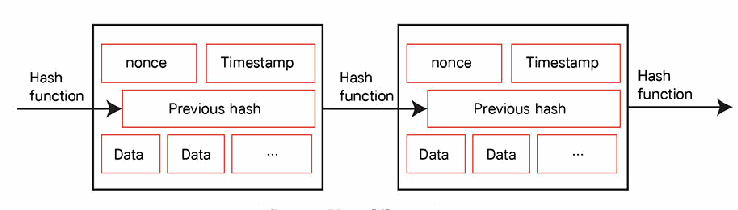
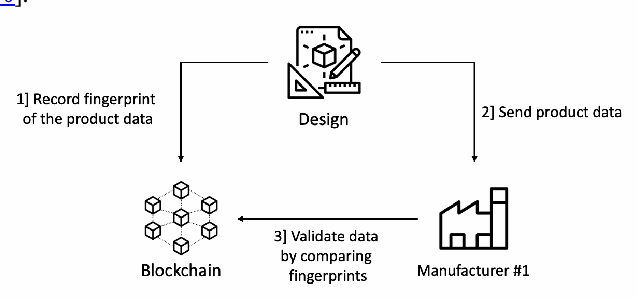
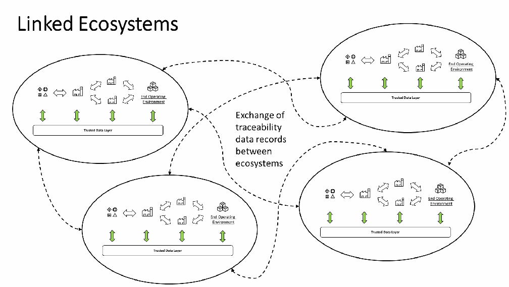
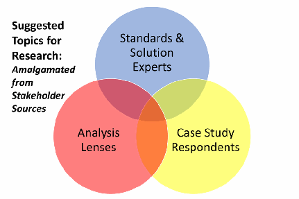

NIST IR 8419 日本語訳
英語タイトル : Blockchain and Related Technologies to Support Manufacturing Supply Chain Traceability: Needs and Industry Perspectives日本語タイトル : ブロックチェーンおよび関連技術による製造業サプライチェーンのトレーサビリティの支援：ニーズと業界の視点
公開日 : 2022-04-07
原文URL : https://csrc.nist.gov/pubs/ir/8419/final
翻訳編集 : 自動生成（有志による非公式の日本語訳）, 原文取得日 : 2026-10-31, 訳文 : 1213 / 1216 ブロック
[要約] NIST IR 8419 は、製造業サプライチェーンのトレーサビリティをめぐる課題、トレーサビリティの向上にブロックチェーンおよび関連技術が果たしうる役割、および現在使われているいくつかの事例研究を探る、NIST NCCoE の刊行物です。サプライチェーンが複雑化し製品の原産地を見分けることが難しくなるなか、ブロックチェーンおよび関連技術を使ってトレーサビリティデータ記録を交換することで、物品のトレーサビリティを向上させる取り組みが現れています。本書は、製造業サプライチェーンの概要、トレーサビリティ、トレーサビリティを支える技術を扱い、7 件の事例研究と分析を含んでいます。本書では、アイデンティティ、メッセージ内容の標準、参入障壁、サプライチェーントレーサビリティのエコシステムなどが、将来の研究機会として挙げられています。
NISTIR 8419
NISTIR 8419
Blockchain and Related Technologies to Support Manufacturing Supply Chain Traceability:
ブロックチェーンおよび関連技術による製造業サプライチェーンのトレーサビリティの支援:
Needs and Industry Perspectives
ニーズと業界の視点
Keith Stouffer Michael Pease Joshua Lubell Evan Wallace Harvey Reed Vivian L. Martin, Ph.D. Steve Granata Andrew Noh Connor Freeberg
Keith Stouffer Michael Pease Joshua Lubell Evan Wallace Harvey Reed Vivian L. Martin, Ph.D. Steve Granata Andrew Noh Connor Freeberg
This publication is available free of charge from:
本刊行物は次の場所から無償で入手できます:
https://doi.org/10.6028/NIST.IR.8419
https://doi.org/10.6028/NIST.IR.8419
NISTIR 8419
NISTIR 8419
Blockchain and Related Technologies to Support Manufacturing Supply Chain Traceability:
ブロックチェーンおよび関連技術による製造業サプライチェーンのトレーサビリティの支援:
Needs and Industry Perspectives
ニーズと業界の視点
Keith Stouffer Michael Pease
Keith Stouffer Michael Pease
Smart Connected Systems Communications Technology Laboratory
Smart Connected Systems Communications Technology Laboratory
Joshua Lubell Evan Wallace
Joshua Lubell Evan Wallace
Systems Integration Division Engineering Laboratory
Systems Integration Division Engineering Laboratory
Harvey Reed Vivian L. Martin, Ph.D. Steve Granata Andrew Noh Connor Freeberg
Harvey Reed Vivian L. Martin, Ph.D. Steve Granata Andrew Noh Connor Freeberg
The MITRE Corporation McLean, VA
The MITRE Corporation McLean, VA
This publication is available free of charge from:
本刊行物は次の場所から無償で入手できます:
https://doi.org/10.6028/NIST.IR.8419
https://doi.org/10.6028/NIST.IR.8419
April 2022
2022年4月
U.S. Department of Commerce Gina M. Raimondo, Secretary
米国商務省 Gina M. Raimondo 長官
National Institute of Standards and Technology
国立標準技術研究所（National Institute of Standards and Technology）
James K. Olthoff, Performing the Non-Exclusive Functions and Duties of the Under Secretary of Commerce
James K. Olthoff、次の職の非専属的な職務および任務を代行：商務次官
for Standards and Technology & Director, National Institute of Standards and Technology
（標準・技術担当）兼 国立標準技術研究所所長
National Institute of Standards and Technology Interagency or Internal Report 8419 119 pages (April 2022)
国立標準技術研究所 省庁間報告書または内部報告書 8419 119ページ（2022年4月）
This publication is available free of charge from: https://doi.org/10.6028/NIST.IR.8419
本刊行物は次の場所から無償で入手できます: https://doi.org/10.6028/NIST.IR.8419
Certain commercial entities, equipment, or materials may be identified in this document in order to describe an experimental procedure or concept adequately. Such identification is not intended to imply recommendation or endorsement by NIST, nor is it intended to imply that the entities, materials, or equipment are necessarily the best available for the purpose.
本書では、実験的な手順や概念を適切に説明するために、特定の商業事業者、機器、または資材を挙げている場合があります。こうした記載は、NIST による推奨または支持を意味するものではなく、また、挙げられた事業者、資材、または機器がその目的に最適であることを必ずしも意味するものでもありません。
There may be references in this publication to other publications currently under development by NIST in accordance with its assigned statutory responsibilities. The information in this publication, including concepts and methodologies, may be used by federal agencies even before the completion of such companion publications. Thus, until each publication is completed, current requirements, guidelines, and procedures, where they exist, remain operative. For planning and transition purposes, federal agencies may wish to closely follow the development of these new publications by NIST.
本刊行物には、NIST が法令で定められた責務に従って現在策定中の他の刊行物への言及が含まれる場合があります。概念や方法論を含む本刊行物の情報は、そうした関連刊行物の完成前であっても、連邦機関が利用してもよいです。したがって、各刊行物が完成するまでは、既存の要件、ガイドライン、手順がある場合は、それらが引き続き有効です。計画および移行のため、連邦機関は、NIST によるこれらの新しい刊行物の策定状況を注意深く追うことを検討してもよいです。
Organizations are encouraged to review all draft publications during public comment periods and provide feedback to NIST. Many NIST cybersecurity publications, other than the ones noted above, are available at https://csrc.nist.gov/publications.
組織は、パブリックコメント期間中にすべてのドラフト刊行物を確認し、NIST にフィードバックを提供することが推奨されます。上記以外にも、NIST の多くのサイバーセキュリティ関連刊行物が https://csrc.nist.gov/publications で入手できます。
Submit comments on this publication to: blockchain_nccoe@nist.gov
本刊行物へのコメントの送付先: blockchain_nccoe@nist.gov
National Institute of Standards and Technology Attn: Applied Cybersecurity Division, Information Technology Laboratory 100 Bureau Drive (Mail Stop 8930) Gaithersburg, MD 20899-8930
National Institute of Standards and Technology Attn: Applied Cybersecurity Division, Information Technology Laboratory 100 Bureau Drive (Mail Stop 8930) Gaithersburg, MD 20899-8930
All comments are subject to release under the Freedom of Information Act (FOIA).
すべてのコメントは、情報自由法（FOIA）に基づいて公開される可能性があります。
Reports on Computer Systems Technology
コンピュータシステム技術に関する報告書
The Information Technology Laboratory (ITL) at the National Institute of Standards and Technology (NIST) promotes the U.S. economy and public welfare by providing technical leadership for the Nation’s measurement and standards infrastructure. ITL develops tests, test methods, reference data, proof of concept implementations, and technical analyses to advance the development and productive use of information technology. ITL’s responsibilities include the development of management, administrative, technical, and physical standards and guidelines for the cost-effective security and privacy of other than national security-related information in federal information systems.
国立標準技術研究所（NIST）の情報技術研究所（ITL）は、国の計測・標準インフラストラクチャに技術的な指導力を発揮することで、米国経済と公共の福祉を促進しています。ITL は、情報技術の発展と生産的な利用を推進するため、テスト、テスト方法、参照データ、概念実証の実装、および技術分析を開発しています。ITL の責務には、連邦情報システムにおける国家安全保障関連以外の情報について、費用対効果の高いセキュリティとプライバシーのための、管理面、運用面、技術面、物理面の標準およびガイドラインの策定が含まれます。
Abstract
概要
As supply chains become more complex and the origins of products become harder to discern, efforts are emerging that improve traceability of goods by exchanging traceability data records using blockchain and related technologies. This NIST NCCoE publication explores the issues that surround traceability, the role that blockchain and related technologies may be able to play to improve traceability, and several case studies in use today.
サプライチェーンが複雑化し、製品の原産地を見分けることが難しくなるなか、ブロックチェーンおよび関連技術を使ってトレーサビリティデータ記録を交換することで、物品のトレーサビリティを向上させる取り組みが現れています。この NIST NCCoE の刊行物では、トレーサビリティをめぐる課題、トレーサビリティの向上にブロックチェーンおよび関連技術が果たしうる役割、および現在使われているいくつかの事例研究を探ります。
Keywords
キーワード
Blockchain; Cyber-physical anchor; Decentralized; Pedigree; Provenance; Supply Chain; Traceability.
ブロックチェーン、サイバーフィジカルアンカー、分散型、ペディグリー、来歴、サプライチェーン、トレーサビリティ。
Disclaimer
免責事項
Any mention of commercial products or reference to commercial organizations is for information only; it does not imply recommendation or endorsement by NIST, nor does it imply that the products mentioned are necessarily the best available for the purpose.
商業製品への言及や商業組織への参照は情報提供のみを目的としており、NIST による推奨または支持を意味するものではなく、また、言及された製品がその目的に最適であることを必ずしも意味するものでもありません。
Additional Information
追加情報
For additional information on NIST’s Cybersecurity programs, projects and publications, visit the Computer Security Resource Center. Information on other efforts at NIST and in the Information Technology Laboratory (ITL) is also available.
NIST のサイバーセキュリティプログラム、プロジェクト、刊行物に関する追加情報については、Computer Security Resource Center を参照してください。NIST および情報技術研究所（ITL）におけるその他の取り組みに関する情報も入手できます。
Acknowledgments
謝辞
The authors would like to acknowledge and thank a number of individuals and organizations who provided valuable input into this publication, including: Arnaud Brolly, SITA; Daniel Eliot, MITRE; Chris Fabre, Sky Republic; DUST Identity; Jim Wetzel; Pierre-Yves Benain, SITA; Sean Hanlen, Guardtime Federal, Inc.; and Ujjwal Guin, Auburn University.
著者らは、本刊行物に貴重な意見を寄せてくださった多くの個人および組織に感謝します。これには次の方々が含まれます: Arnaud Brolly, SITA; Daniel Eliot, MITRE; Chris Fabre, Sky Republic; DUST Identity; Jim Wetzel; Pierre-Yves Benain, SITA; Sean Hanlen, Guardtime Federal, Inc.; および Ujjwal Guin, Auburn University.
Table of Contents
目次
List of Appendices
付録一覧
List of Figures
図の一覧
1 Introduction
1 はじめに
Manufacturing supply chains are increasingly critical to maintaining the health, security, and the economic strength of the United States. Recent events and current economic conditions exposed the impact of disruptions in the security and continuity of the U.S. national manufacturing supply chain. This in turn, drew critical attention to the need to illuminate and secure the supply chain from numerous hazards and risks. Further, the U.S. manufacturing supply chain is susceptible to logistical disruptions, in addition to the effects of nefarious actors seeking fraudulent gain or attempting to sabotage or corrupt manufactured products. Improving the traceability of goods and materials that flow through the manufacturing supply chain may help mitigate these risks. This publication uses supply chain traceability case studies and the outcome of NIST engagement with an associated community of interest, to assess the current state of supply chain traceability and offer several research opportunities.
製造業サプライチェーンは、米国の健全性、安全保障、経済力を維持するうえで、ますます重要になっています。最近の出来事と現在の経済情勢により、米国の国内製造業サプライチェーンのセキュリティと継続性が途絶した場合の影響が明らかになりました。これを受けて、サプライチェーンを可視化し、数多くの危険やリスクから保護する必要性に重大な関心が集まりました。さらに、米国の製造業サプライチェーンは、不正な利益を得ようとする、あるいは製造された製品を妨害または破壊しようとする悪意ある者の影響に加えて、物流の混乱を受けやすい状況にあります。製造業サプライチェーンを流れる物品や資材のトレーサビリティを向上させることは、これらのリスクの緩和に役立つ可能性があります。本刊行物は、サプライチェーンのトレーサビリティに関する事例研究と、関連する関心コミュニティとの NIST の取り組みの成果を用いて、サプライチェーンのトレーサビリティの現状を評価し、いくつかの研究機会を提示します。
1.1 Purpose
1.1 目的
This publication seeks to catalyze the understanding of traceability in manufacturing supply chains as an ecosystem-wide concern, and to recommend directions of future research in manufacturing supply chain traceability, enabled by blockchain and related technologies.
本刊行物は、製造業サプライチェーンにおけるトレーサビリティをエコシステム全体の関心事として理解することを促進し、ブロックチェーンおよび関連技術によって可能になる製造業サプライチェーンのトレーサビリティに関する今後の研究の方向性を提言することを目指しています。
1.2 Scope
1.2 範囲
This publication covers topics including existing factors that inhibit manufacturing supply chain traceability, analysis of nascent blockchain-enabled supply chain traceability initiatives in progress, and recommendations for future research in manufacturing supply chain traceability enabled by blockchain and related technologies.
本刊行物は、製造業サプライチェーンのトレーサビリティを阻害している既存の要因、進行中の発展途上のブロックチェーン対応サプライチェーントレーサビリティの取り組みの分析、およびブロックチェーンおよび関連技術によって可能になる製造業サプライチェーンのトレーサビリティに関する今後の研究への提言といった話題を扱います。
1.3 Target audience
1.3 対象読者
The target audience of this publication encompasses the needs and interests of all stakeholders in the U.S. national manufacturing supply chain. The target audience includes:
本刊行物の対象読者には、米国の国内製造業サプライチェーンのあらゆる利害関係者のニーズと関心が含まれます。対象読者には次が含まれます:
•Businesses engaged in manufacturing: Manufacturing cuts across a wide array of goods and services, with stakeholders ranging in size from small businesses to large multinational concerns.
•製造に携わる企業: 製造業は広範な物品とサービスにまたがり、利害関係者の規模も小規模事業者から大規模な多国籍企業まで多岐にわたります。
•Regulatory agencies: Multiple regulatory offices, across federal, state, local, and tribal agencies in the U.S. and internationally, operate under legal authority to assure product safety, and/or prohibit or prosecute fraudulent or malicious supply chain disruptions.
•規制機関: 連邦、州、地方、部族の各機関を含む、米国内および国際的な複数の規制当局が、製品の安全性を確保し、あるいは不正または悪意あるサプライチェーンの混乱を禁止または訴追するための法的権限のもとで活動しています。
•Government and industry standards bodies: Multiple standards bodies span technology domains, industry sectors, supply chain types, etc.
•政府および業界の標準化団体: 複数の標準化団体が、技術領域、産業部門、サプライチェーンの種類などにまたがって存在します。
•Academic researchers: Many academic institutions contributed to the existing body of knowledge and may desire to pursue future research.
•学術研究者: 多くの学術機関が既存の知識体系に貢献しており、今後の研究を進めることを望む場合があります。
•Product consumers: Private individuals, businesses, governments, or other institutions procure products for their individual needs and unique operating environments, driving their specific interests in supply chain traceability.
•製品の消費者: 個人、企業、政府、その他の機関が、それぞれのニーズと固有の運用環境に応じて製品を調達しており、サプライチェーンのトレーサビリティに対する各自の関心を形成しています。
The target audience of this publication also includes stakeholders in the supply chain for operational technology (OT) including industrial control systems (ICS) utilized in manufacturing plants, utility service operations, and other elements of national critical infrastructure including:
本刊行物の対象読者には、製造工場、公益事業の運営、およびその他の国家重要インフラストラクチャの要素で使われる産業用制御システム（ICS）を含む、運用技術（OT）のサプライチェーンの利害関係者も含まれます。具体的には次のとおりです。
•System engineers, integrators, and architects that design or implement OT
•OT を設計または実装するシステムエンジニア、インテグレーター、アーキテクト
•Administrators, engineers, and other information technology (IT) professionals that manage or secure OT
•OT を管理またはセキュリティ保護する管理者、エンジニア、その他の情報技術（IT）専門家
•Security analysts that assess or test OT security
•OT のセキュリティを評価またはテストするセキュリティアナリスト
•Industrial managers responsible for OT, including managers responsible for OT cybersecurity and those responsible for mitigating operational impacts to OT disruption
•OT の責任を負う産業界のマネージャー（OT のサイバーセキュリティに責任を負うマネージャー、および OT の途絶による運用への影響の緩和に責任を負うマネージャーを含む）
•Researchers and analysts working to understand unique security aspects of OT
•OT 特有のセキュリティ上の側面の理解に取り組む研究者およびアナリスト
•Technology and industry suppliers that develop OT or OT-related products
•OT または OT 関連製品を開発する技術・産業のサプライヤー
1.4 Foundational practices
1.4 基盤となる実践
There are no well-established foundational approaches to improving traceability throughout a manufacturing supply chain ecosystem. Instead, numerous nascent examples of improved traceability in subsets of the manufacturing supply chain were observed and explored in the case studies later in this paper. These provide an initial ecosystem and establish a sematic understanding and implementation for key concepts including identity and traceability.
製造業サプライチェーンのエコシステム全体でトレーサビリティを向上させるための、確立した基盤的なアプローチはありません。その代わりに、製造業サプライチェーンの一部においてトレーサビリティが向上している発展途上の例が数多く確認され、本書の後半の事例研究で検討されています。これらは初期のエコシステムを提供し、アイデンティティやトレーサビリティといった主要な概念について、意味的な理解と実装を確立しています。
1.5 Relationship to other programs and publications
1.5 他のプログラムおよび刊行物との関係
This paper builds upon, yet has a different target audience than, related NIST publications dedicated to supply chain security and risk management.
本書は、サプライチェーンのセキュリティとリスクマネジメントに特化した NIST の関連刊行物を土台としていますが、対象読者は異なります。
Related NIST publications establish the foundations of supply chain security and supply chain risk management. This paper builds on these foundations, adds a blockchain-enabled ecosystem perspective, and provides recommendations for future research in manufacturing supply chain traceability. NIST publications related to this publication include Special Publication 800-161 [1], Supply Chain Risk Management Practices for Federal Information Systems and Organizations, Supply Chain Risk Management control family in Special Publication 800-53, Security and Privacy Controls for Information Systems and Organizations [2], and Special Publication 800-37 Revision 2, Risk Management Framework for Information Systems and Organizations.
NIST の関連刊行物は、サプライチェーンセキュリティとサプライチェーンリスクマネジメントの基礎を確立しています。本書はこれらの基礎の上に立ち、ブロックチェーン対応のエコシステムの視点を加え、製造業サプライチェーンのトレーサビリティに関する今後の研究への提言を示します。本刊行物に関連する NIST の刊行物には、Special Publication 800-161 [1]（Supply Chain Risk Management Practices for Federal Information Systems and Organizations）、Special Publication 800-53（Security and Privacy Controls for Information Systems and Organizations [2]）に含まれる Supply Chain Risk Management 管理策ファミリー、および Special Publication 800-37 Revision 2（Risk Management Framework for Information Systems and Organizations）があります。
1.6 Methodology overview
1.6 方法論の概要
The methodology used for this paper is based on community of interest stakeholder engagement as described below and illustrated in Figure 1.
本書で用いた方法論は、以下に述べ、図 1 に示すとおり、関心コミュニティの利害関係者の関与に基づいています。

「Overall Methodology」（全体の方法論）と題した図です。右下へ段になって重なる4本の青い矢印があり、それぞれの下に枠があります。1) 「Community of Interest」（関心のあるコミュニティ）—「Live and Async Engagement」（同期・非同期の関与）、2) 「Elicit Case Studies」（事例研究の収集）—「Seek a variety of circumstances」（多様な状況を求める）、3) 「Select Analytic Methods」（分析手法の選択）—「Look at case studies from multiple vantage points」（複数の視点から事例研究を見る）、4) 「Analyze Case Studies」（事例研究の分析）—「Cross walk per case study, and per analytic method」（事例研究ごと・分析手法ごとの対照）と「Derive recommended future research」（今後の研究に関する提言を導き出す）。
Figure 1 - Overall methodology
図 1 - 全体の方法論
2.Survey traceability concerns across microelectronics, aerospace, food and agriculture, and other domains and their end-use operating environments. Elicit knowledge using a combination of live events, individual meetings, and soliciting written case studies which describe their efforts.
2.マイクロエレクトロニクス、航空宇宙、食品・農業などの領域およびそれらの最終用途の運用環境にわたるトレーサビリティ上の懸念を調査します。実際のイベント、個別の面談、取り組みを記述した事例研究の書面による募集を組み合わせて、知識を引き出します。
3.Select analytic methods for case studies. Seek multiple vantage points to get a comprehensive perspective. Considerations for the analysis include individual concerns, challenges, and benefits and extend to the ecosystem perspective for win-win outcomes.
3.事例研究の分析手法を選択します。包括的な視点を得るため、複数の観点を求めます。分析で考慮する事項には、個々の懸念、課題、利点が含まれ、ウィン・ウィンの成果に向けたエコシステムの視点にまで及びます。
4.Analyze and compare case studies to gain insights. Derive recommendations for future research directions.
4.事例研究を分析・比較して知見を得ます。今後の研究の方向性に関する提言を導き出します。
1.7 Summary of insights
1.7 知見の要約
1.Traceability (including pedigree and provenance records) needs to be shared via ecosystems of supply chain participants to transcend the limitations of bi-lateral message exchange. Further, tagging physical objects to the traceability record provides more complete linkage. Operating as a multi-lateral ecosystem assures traceability records can be read and understood even if the participants are separated by multiple tiers.
1.トレーサビリティ（ペディグリーおよび来歴の記録を含む）は、二者間のメッセージ交換の限界を超えるために、サプライチェーン参加者のエコシステムを通じて共有される必要があります。さらに、物理的な対象物にトレーサビリティ記録を紐付けるタグ付けを行うことで、より完全な関連付けが得られます。多者間のエコシステムとして運用することで、参加者が複数の階層で隔てられていても、トレーサビリティ記録を読み取って理解できるようになります。
2.These ecosystems can use blockchain and related technologies to exchange traceability records to cryptographically assure that traceability records are properly attributed, data is tamper-evident, and data cannot be deleted. While it is possible to exchange and record messages without blockchain (or similar cryptographic technology with proofs of data integrity), critical infrastructures and the supply chains that supply them are under increasing pressure to assure integrity of goods used.
2.これらのエコシステムは、ブロックチェーンおよび関連技術を使ってトレーサビリティ記録を交換することで、トレーサビリティ記録が適切に帰属され、データの改ざんが検知でき、データを削除できないことを、暗号技術によって保証できます。ブロックチェーン（またはデータ完全性の証明を備えた同様の暗号技術）を使わずにメッセージを交換し記録することも可能ですが、重要インフラストラクチャとそれを支えるサプライチェーンは、使用される物品の完全性を保証するよう、ますます強い圧力を受けています。
3.This approach is already being adopted in some areas, and this paper contains seven case studies and analysis. Each case study is different; however, some common traits emerge indicating that further research is required in these areas:
3.このアプローチはすでに一部の分野で採用されており、本書には 7 件の事例研究と分析が含まれています。各事例研究は異なりますが、いくつかの共通の特徴が現れており、これらの分野でさらなる研究が必要であることを示しています:
a.Identity
a.アイデンティティ
b.Message Content Standards
b.メッセージ内容の標準
c.Barriers to Entry
c.参入障壁
d.Supply Chain traceability Ecosystems
d.サプライチェーントレーサビリティのエコシステム
e.Metrics
e.指標
f.Patterns in Supply Chain Traceability
f.サプライチェーントレーサビリティにおけるパターン
g.Ecosystem Scale and Interoperability
g.エコシステムの規模と相互運用性
4.The authors encourage further research, experimentation, and discussion in manufacturing domains to explore the topics above and discover further innovations to improve traceability of manufacturing supply chains.
4.著者らは、製造分野でさらなる研究、実験、議論を行い、上記の話題を探究して、製造業サプライチェーンのトレーサビリティを向上させるさらなる革新を見いだすことを奨励します。
1.8 Organization of this paper
1.8 本書の構成
The remaining sections of the paper are:
本書の残りの節は次のとおりです。
Section 2 “Manufacturing Supply Chain Overview and Imperatives” reviews the current state of supply chain risk analysis and introduces an ecosystem perspective to complement the current per stakeholder perspective in Supply Chain Risk Management (SCRM) analysis.
第 2 節「製造業サプライチェーンの概要と必須事項」では、サプライチェーンリスク分析の現状を概観し、サプライチェーンリスクマネジメント（SCRM）分析における現行の利害関係者単位の視点を補完するものとして、エコシステムの視点を導入します。
Section 3 “Traceability” reviews the desired benefits traceability may offer and example domains for which traceability is applicable.
第 3 節「トレーサビリティ」では、トレーサビリティがもたらしうる望ましい利点と、トレーサビリティが適用できる領域の例を概観します。
Section 4 “Technologies Supporting Traceability” reviews technologies, both mature and emerging, which can be used to link goods and services to data records, then share the data records across a wide set of supply chain stakeholders.
第 4 節「トレーサビリティを支える技術」では、成熟した技術と新興の技術の両方について、物品やサービスをデータ記録に関連付け、そのデータ記録を幅広いサプライチェーンの利害関係者間で共有するために使える技術を概観します。
Section 5 “Considerations for Adoption of Blockchain” reviews the challenges and risks associated with establishing a blockchain capability for a subset of the supply chain and the resulting ecosystem. Blockchain is one technology with features corresponding to drivers for supply chain traceability, such as pedigree and provenance for products and records.
第 5 節「ブロックチェーン導入の検討事項」では、サプライチェーンの一部とその結果として生じるエコシステムのためにブロックチェーンの機能を確立する際の課題とリスクを概観します。ブロックチェーンは、製品や記録のペディグリーや来歴など、サプライチェーンのトレーサビリティの推進要因に対応する機能を備えた技術の一つです。
Section 6 “Industry Case Studies & Analysis” reviews the methodology for industry engagement, organizations who submitted case studies, and the summaries of the submitted case studies. Following are the analyses of the case studies viewed through perspectives or mental models selected in the methodology. Full description of the analysis methods and full case studies are found in the Appendices.
第 6 節「業界の事例研究と分析」では、業界との関与の方法論、事例研究を提出した組織、および提出された事例研究の要約を概観します。続いて、方法論で選択した観点またはメンタルモデルを通して見た事例研究の分析を示します。分析手法の詳細な説明と事例研究の全文は付録にあります。
Section 7 “Future Research” summarizes indications of future research needed. Future research is intended to be directional, not specific, and performed by a variety of stakeholders including but not limited to industry, academia, and government organizations.
第 7 節「今後の研究」では、今後必要となる研究の兆候を要約します。今後の研究は、具体的なものではなく方向性を示すことを意図しており、産業界、学術界、政府機関などの多様な利害関係者によって実施されます。
Appendices for Case Study Methodologies and Case Study submissions are provided as supporting documentation of the synthesis of inputs into the future research themes. They include researcher notes from case study observations and candidate subjects of interest, as well as resources for the models and lenses employed. These are the data underlying the paper’s discussions and conclusions.
事例研究の方法論と事例研究の提出物に関する付録は、今後の研究テーマに向けた入力を統合するための裏付け資料として提供されています。付録には、事例研究の観察に基づく研究者のノートと関心のある候補テーマ、および用いたモデルとレンズの資料が含まれます。これらは、本書の議論と結論の根拠となるデータです。
2 Manufacturing Supply Chain Overview and Imperatives
2 製造業サプライチェーンの概要と必須事項
2.1 Introduction
2.1 はじめに
In this document, the term supply chain refers to the linked set of resources and processes between and among multiple levels of enterprises, each of which is an acquirer that begins with the sourcing of products and services and extends through their life cycle. A manufacturing supply chain begins with its most fundamental elements of raw materials and basic commodities, and flows through tiers of added value, product integration, and secondary/tertiary/etc., manufacturing. Eventually the supply chain flows through distribution to the point of product procurement or consumption by private individuals, businesses, governments, and other institutions. The supply chain is not linear as the word “chain” implies, rather it is more of a graph or web. The diagram below, Figure 2, shows a simplified view of the supply chain with one branch to emphasize the web or graph nature. Activities occurring in the end operating environment (e.g., post-sale), are not depicted but also contribute to the de-facto network of supply chain management. These include claims, returns, callbacks, and maintenance services, all of which add to the richness of use cases in supply chain traceability that have potential implementations in blockchain.
本書において、サプライチェーンとは、複数階層の企業間および企業内にわたって連結された資源とプロセスの集合を指します。各企業は調達者であり、製品とサービスの調達から始まって、そのライフサイクル全体に及びます。製造業のサプライチェーンは、原材料や基礎的な一次産品という最も基本的な要素から始まり、付加価値、製品統合、二次・三次などの製造の各段階を経て流れます。最終的にサプライチェーンは流通を経て、個人、企業、政府、その他の機関による製品の調達または消費の時点に至ります。サプライチェーンは、「チェーン」という語が示唆するような直線的なものではなく、むしろグラフやウェブに近いものです。下の図 2 は、ウェブまたはグラフの性質を強調するために 1 つの枝を持たせた、サプライチェーンの簡略図です。最終的な運用環境で（たとえば販売後に）行われる活動は描かれていませんが、これらもサプライチェーンマネジメントの事実上のネットワークに寄与します。これには、製品保証請求、返品、リコール、保守サービスが含まれ、いずれもブロックチェーンでの実装の可能性があるサプライチェーントレーサビリティのユースケースを豊かにします。
![Diagram titled "Supply Chain Flow of Materials and Goods". Icons of "Raw Materials and Commodities" flow through a "Logistics" box to "Intermediate Manufacturers". From there the flow branches: the upper branch goes through "Logistics" to "System Integrators", then "Logistics"; the lower branch goes through "Logistics" to "Higher Level Manufacturers", then "Logistics". Both branches end at "End Operating Environment", listed as IT, Water, Energy, Chemical, Transportation, Defense Industrial Base, Food & Agriculture, Health Care. Key: orange arrow = Supply Chain Flow.](assets/ir-8419/p0014-figure-01.png)
「Supply Chain Flow of Materials and Goods」（材料と製品のサプライチェーンの流れ）と題した図です。「Raw Materials and Commodities」（原材料・一次産品）のアイコンから「Logistics」（物流）を経て「Intermediate Manufacturers」（中間製造業者）へ流れます。そこから流れが分かれ、上の経路は「Logistics」を経て「System Integrators」（システムインテグレーター）、さらに「Logistics」へ、下の経路は「Logistics」を経て「Higher Level Manufacturers」（上位の製造業者）、さらに「Logistics」へ進みます。両方の経路は「End Operating Environment」（最終の運用環境）に至り、その例として IT、Water、Energy、Chemical、Transportation、Defense Industrial Base、Food & Agriculture、Health Care が挙げられています。凡例: 橙の矢印はサプライチェーンの流れ（Supply Chain Flow）です。
Figure 2 - "Intermediate manufacturers" and "higher level manufacturers"
図 2 - "Intermediate manufacturers" と "higher level manufacturers"
2.2 Supply chain risk
2.2 サプライチェーンのリスク
The U.S. national supply chain of manufactured products faces growing risks to its resiliency and continuity, driven by economic, logistical, and technological factors. Supply chain risks increase when parties are unstable financially, or during times of economic, cyber, or logistical disruption to the operations and continuity of key supply chain elements. The global manufacturing supply chain presents significant economic benefits including low cost and robust competition, while simultaneously posing the inherent risk of low-visibility or opaque threats to manufactured product quality, authenticity, and fraudulent or nefarious activity.
製造品の米国国内サプライチェーンは、経済的、物流的、技術的な要因により、そのレジリエンスと継続性に対するリスクの高まりに直面しています。サプライチェーンのリスクは、関係者が財務的に不安定な場合や、サプライチェーンの主要な要素の運営と継続性に経済的、サイバー、物流上の混乱が生じている時期に高まります。グローバルな製造業サプライチェーンは、低コストや強力な競争といった大きな経済的利益をもたらす一方で、製造品の品質、真正性、不正または悪意ある活動に対して、可視性が低い、あるいは不透明な脅威という固有のリスクを同時にもたらしています。
Exposure to supply chain risk increases when parties lack sufficient visibility and understanding of development, sourcing, production, distribution, deployment, and eventual disposal of products moving through all tiers. Actors with insufficient visibility into the supply chain face a gamut of risks that include production of substandard products, nefarious product counterfeiting, malicious product tampering, insertion of cybersecurity exploits, and/or loss or compromise of trade secrets and intellectual property (IP).
各階層を移動する製品の開発、調達、生産、流通、配備、最終的な廃棄について、関係者の可視性と理解が不十分な場合、サプライチェーンリスクへのエクスポージャーは高まります。サプライチェーンに対する可視性が不十分な主体は、規格を下回る製品の生産、悪意ある製品の偽造、製品への悪意ある改ざん、サイバーセキュリティ上のエクスプロイトの挿入、営業秘密や知的財産（IP）の喪失または侵害など、多岐にわたるリスクに直面します。
2.3 Relevant NIST Special Publications
2.3 関連する NIST 特別刊行物
NIST Special Publication 800-161, Supply Chain Risk Management Practices for Federal Information Systems and Organizations [1], and 800-53 Revision 5 [2], Security and Privacy Controls for Information Systems and Organizations, each include foundational material covering enterprise supply chain risk management (SCRM) methods. These documents include measures for enterprises at all tiers of the supply chain to increase their overall visibility across the entire supply chain, thereby illuminating and reducing threats to manufactured product quality, authenticity, and fraudulent or nefarious activity. Both documents cover the information and communications technology and operational technology (ICT/OT) sectors and are written to an audience of ICT/OT system developers and acquirers.
NIST 特別刊行物 800-161（Supply Chain Risk Management Practices for Federal Information Systems and Organizations [1]）および 800-53 第 5 版 [2]（Security and Privacy Controls for Information Systems and Organizations）には、いずれも、エンタープライズのサプライチェーンリスクマネジメント（SCRM）の手法を扱う基礎的な資料が含まれています。これらの文書には、サプライチェーンのあらゆる階層のエンタープライズが、サプライチェーン全体にわたる可視性を全体として高め、それによって製造品の品質、真正性、不正または悪意ある活動に対する脅威を明らかにして低減するための措置が含まれています。両文書は情報通信技術および運用技術（ICT/OT）の分野を扱っており、ICT/OT システムの開発者および取得者を読者として書かれています。
2.4 Product provenance and pedigree
2.4 製品の来歴とペディグリー
NIST SP 800-161 [1] recommends that enterprises establish measures to track the provenance of products flowing through their supply chains. NIST SP 800-161 and NIST SP 800-53 define provenance as: “...the chronology of the origin, development, ownership, location, and changes to a system or system component and associated data.” NIST SP 800-53 includes a supply chain security control covering product acquirer identification of provenance, as follows:
NIST SP 800-161 [1] は、エンタープライズが、サプライチェーンを流れる製品の来歴を追跡するための措置を確立することを推奨しています。NIST SP 800-161 と NIST SP 800-53 は、来歴を次のように定義しています: 「…システムまたはシステムコンポーネントおよび関連するデータの、由来、開発、所有、所在、および変更の年代記録」。NIST SP 800-53 には、製品の取得者による来歴の特定を扱うサプライチェーンセキュリティ管理策が、次のように含まれています:
SR-4 PROVENANCE
SR-4 来歴（PROVENANCE）
Control: Document, monitor, and maintain valid provenance of the following systems, system components, and associated data.
管理策: 次のシステム、システムコンポーネント、および関連するデータについて、有効な来歴を文書化し、監視し、維持します。
Discussion: Every system and system component have a point of origin and may be changed throughout its existence. Provenance is the chronology of the origin, development, ownership, location, and changes to a system or system component and associated data. It may also include personnel and processes used to interact with or make modifications to the system, component, or associated data. Organizations consider developing procedures (see SR-1) for allocating responsibilities for the creation, maintenance, and monitoring of provenance for systems and system components; transferring provenance documentation and responsibility between organizations; and preventing and monitoring for unauthorized changes to the provenance records. Organizations have methods to document, monitor, and maintain valid provenance baselines for systems, system components, and related data. These actions help track, assess, and document any changes to the provenance, including changes in supply chain elements or configuration, and help ensure non-repudiation of provenance information and the provenance change records. Provenance considerations are addressed throughout the system development life cycle and incorporated into contracts and other arrangements, as appropriate.
解説: すべてのシステムとシステムコンポーネントには起点があり、その存続期間を通じて変更される可能性があります。来歴とは、システムまたはシステムコンポーネントおよび関連データの由来、開発、所有、所在、変更の年代記録です。これには、システム、コンポーネント、または関連データとのやり取りや、それらへの変更に用いられる要員やプロセスも含まれる場合があります。組織は、システムとシステムコンポーネントの来歴の作成、維持、監視に関する責任の割り当て、組織間での来歴文書と責任の移転、および来歴記録に対する不正な変更の防止と監視のための手順（SR-1 を参照）を策定することを検討します。組織は、システム、システムコンポーネント、および関連データについて、有効な来歴のベースラインを文書化し、監視し、維持する方法を備えています。これらの活動は、サプライチェーンの要素や構成の変更を含む来歴の変更の追跡、評価、文書化に役立ち、来歴情報および来歴変更記録の否認防止にも役立ちます。来歴に関する考慮事項は、システム開発ライフサイクル全体を通じて扱われ、必要に応じて契約やその他の取り決めに盛り込まれます。
NIST SP 800-53 control SR-4 includes a sub-control [SR-4(4)] that defines pedigree in terms of the linkage between the visibility of supply chain provenance with product acquirer determination of trust in product authenticity:
NIST SP 800-53 の管理策 SR-4 には、サプライチェーンの来歴の可視性と、製品の取得者による製品の真正性に対する信頼の判断との関連という観点からペディグリーを定義する、サブ管理策 [SR-4(4)] が含まれています:
SR-4(4) PROVENANCE | SUPPLY CHAIN INTEGRITY — PEDIGREE
SR-4(4) 来歴 | サプライチェーンの完全性 — ペディグリー
Employ…and conduct…organization-defined analysis…to ensure the integrity of the system and system components by validating the internal composition and provenance of critical or mission-essential technologies, products, and services.
重要なまたはミッションに不可欠な技術、製品、サービスの内部構成と来歴を検証することにより、システムおよびシステムコンポーネントの完全性を確保するために、…を採用し、…組織が定義した分析…を実施します。
Discussion: Authoritative information regarding the internal composition of system components and the provenance of technology, products, and services provides a strong basis for trust. The validation of the internal composition and provenance of technologies, products, and services is referred to as the pedigree. For microelectronics, this includes material composition of components. For software this includes the composition of open-source and proprietary code, including the version of the component at a given point in time. Pedigrees increase the assurance that the claims suppliers assert about the internal composition and provenance of the products, services, and technologies they provide are valid. The validation of the internal composition and provenance can be achieved by various evidentiary artifacts or records that both manufacturers and suppliers produce during the research and development, design, manufacturing, acquisition, delivery, integration, operations and maintenance, and disposal of technology, products, and services.
解説: システムコンポーネントの内部構成と、技術、製品、サービスの来歴に関する信頼できる情報は、信頼の強固な基盤となります。技術、製品、サービスの内部構成と来歴の検証は、ペディグリーと呼ばれます。マイクロエレクトロニクスの場合、これにはコンポーネントの材料組成が含まれます。ソフトウェアの場合、これには、ある時点でのコンポーネントのバージョンを含む、オープンソースコードとプロプライエタリコードの構成が含まれます。ペディグリーは、サプライヤーが提供する製品、サービス、技術の内部構成と来歴についてサプライヤーが主張する内容が有効であるという保証を高めます。内部構成と来歴の検証は、製造者とサプライヤーが、技術、製品、サービスの研究開発、設計、製造、取得、納入、統合、運用と保守、廃棄の間に作成する各種の証拠となる成果物や記録によって達成できます。
NIST SP 800-53 also contains an additional supply chain security control, SR-11, that emphasizes the importance of product authenticity to enterprises in the supply chain, as follows:
NIST SP 800-53 には、サプライチェーン内のエンタープライズにとっての製品の真正性の重要性を強調する、もう一つのサプライチェーンセキュリティ管理策 SR-11 も含まれています:
SR-11 COMPONENT AUTHENTICITY
SR-11 コンポーネントの真正性（COMPONENT AUTHENTICITY）
Discussion: Sources of counterfeit components include manufacturers, developers, vendors, and contractors. Anti-counterfeiting policies and procedures support tamper resistance and provide a level of protection against the introduction of malicious code.
解説: 偽造コンポーネントの出所には、製造者、開発者、ベンダー、請負業者が含まれます。偽造防止のポリシーと手順は、耐タンパー性を支え、悪意あるコードの混入に対するある程度の防御を提供します。
Taken together, the foundational NIST SCRM definitions and recommendations establish the need and utility for product acquirers throughout the supply chain to establish product provenance. NIST recommendations compel product acquirers to use provenance as a strong measure of assurance for the pedigree of products against supply chain-based threats to quality, authenticity, and fraudulent or nefarious activity. Traceability is the key enabler to assure provenance and pedigree.
NIST の基礎的な SCRM の定義と推奨事項を総合すると、サプライチェーン全体の製品取得者が製品の来歴を確立する必要性と有用性が示されます。NIST の推奨事項は、製品取得者に対し、サプライチェーンに起因する品質、真正性、不正または悪意ある活動への脅威から製品のペディグリーを保証する強力な手段として、来歴を使用するよう促しています。トレーサビリティは、来歴とペディグリーを保証するための鍵となる実現手段です。
2.5 Ecosystem perspective
2.5 エコシステムの視点
This document portrays an ecosystem-oriented manufacturing supply chain perspective layered atop the existing “per acquirer” perspective. The ecosystem perspective serves to define traceability for a subset (an ecosystem) of the manufacturing supply chain, and to share and store data records used to establish traceability. Traceability requirements and their means of implementation will be unique for each ecosystem. Traceability data includes information about product provenance, pedigree, and other data as needed.
本書では、既存の「取得者単位」の視点の上に重ねる形で、エコシステム指向の製造業サプライチェーンの視点を描いています。エコシステムの視点は、製造業サプライチェーンの一部（エコシステム）についてトレーサビリティを定義し、トレーサビリティを確立するために使うデータ記録を共有・保存する役割を果たします。トレーサビリティ要件とその実装手段は、エコシステムごとに固有となります。トレーサビリティデータには、製品の来歴、ペディグリー、およびその他必要なデータに関する情報が含まれます。
Industry contributions to this inquiry indicate that an ecosystem perspective is necessary to enable multi-lateral supply chain information sharing and migrate away from existing linear information flows based on numerous bi-lateral agreements. The existing status quo of information sharing is susceptible to incomplete coverages, differing implementation, and potential semantic gaps in data elements. A semantic gap may occur when a stakeholder multiple tiers away writes a traceability record that may not be fully understood or recognized downstream. Ecosystem-wide agreement on traceability information requirements mitigates semantic gaps in understanding traceability data records.
この調査への業界の貢献は、多者間のサプライチェーン情報共有を可能にし、数多くの二者間協定に基づく既存の直線的な情報の流れから移行するために、エコシステムの視点が必要であることを示しています。情報共有の現状は、対象範囲の不完全さ、実装の違い、データ要素における意味上のギャップが生じる可能性の影響を受けやすいものです。意味上のギャップは、複数階層離れた利害関係者が書いたトレーサビリティ記録が、下流で完全には理解または認識されない場合に生じることがあります。トレーサビリティ情報の要件についてエコシステム全体で合意することで、トレーサビリティデータ記録の理解における意味上のギャップを緩和できます。
Another potential gap arising from chained bi-lateral agreements is trust transitivity. This occurs as a broken “chain of trust” induced by point-to-point exchanges. If Company A sends data to Company B and B transmits to Company C, the original traceability information from A may not be transferred to C. At that point C is faced with trusting A by way of having trusted B. Maintaining traceability information sharing at the ecosystem level can allow participants to verify data in a variety of traceability situations. Ecosystem-wide use of a trusted means to exchange traceability data records ensures trust in the traceability data records.
連鎖する二者間協定から生じるもう一つの潜在的なギャップは、信頼の推移性です。これは、ポイントツーポイントの交換によって「信頼の連鎖」が途切れることで生じます。A 社が B 社にデータを送り、B 社が C 社に送信した場合、A 社の元のトレーサビリティ情報が C 社に引き継がれない可能性があります。その時点で C 社は、B 社を信頼していることを介して A 社を信頼することを迫られます。トレーサビリティ情報の共有をエコシステムのレベルで維持することで、参加者はさまざまなトレーサビリティの状況でデータを検証できるようになります。トレーサビリティデータ記録を交換する信頼できる手段をエコシステム全体で使用することで、トレーサビリティデータ記録に対する信頼が確保されます。
Prior NIST documents treat each supply chain tier as having a “per acquirer” perspective which provides risk analysis context and highlights the challenge of establishing pedigree and provenance across multiple tiers. This document builds on that approach with an ecosystem perspective, and it recognizes the importance of certain acquirers who establish foundational traceability requirements for a subset (ecosystem) of the supply chain.
これまでの NIST の文書は、サプライチェーンの各階層を、リスク分析の文脈を提供し、複数の階層にわたってペディグリーと来歴を確立する課題を浮き彫りにする「取得者単位」の視点を持つものとして扱っています。本書はそのアプローチを土台にエコシステムの視点を加え、サプライチェーンの一部（エコシステム）に対して基礎的なトレーサビリティ要件を確立する特定の取得者の重要性を認識します。
2.6 Industrial control system example
2.6 産業用制御システムの例
Supply chain traceability enables the product acquirer to verify the provenance and subsequently establish the pedigree of goods and services flowing through ecosystems of potentially overlapping manufacturing supply chains. Each manufacturing supply chain ecosystem has a set of end-operating environments, each of which itself drives traceability requirements from those environments back through multiple tiers of the supply chain. The end-operating environment establishes risks unique to that environment. These risks drive criticality of traceability of pedigree and provenance to assure genuine and uncompromised parts as an aspect of risk mitigation. Establishment of traceability including provenance and pedigree enables component authentication and non-repudiation.
サプライチェーンのトレーサビリティにより、製品取得者は、重複する可能性のある製造業サプライチェーンのエコシステムを流れる物品やサービスの来歴を検証し、その後ペディグリーを確立できます。各製造業サプライチェーンのエコシステムには一連の最終運用環境があり、その環境のそれぞれが、サプライチェーンの複数の階層をさかのぼってトレーサビリティ要件を生み出します。最終運用環境は、その環境に固有のリスクを定めます。これらのリスクは、リスク緩和の一側面として、本物で危殆化していない部品を保証するための、ペディグリーと来歴のトレーサビリティの重要度を左右します。来歴とペディグリーを含むトレーサビリティを確立することで、コンポーネントの認証と否認防止が可能になります。
For example, nuclear power generation plants must ensure that the industrial control systems (ICS) they use to regulate nuclear fuel and manage handling of spent fuel rods, are secure and not compromised with fraudulent or malicious components, including actuators and microelectronics. The end operating environment generates traceability requirements which are successively conveyed back to upstream stakeholders. Traceability requirements then inform developmental activities for applicable stakeholders in the ecosystem, who in turn update their computing resources.
たとえば、原子力発電所は、核燃料の制御や使用済み燃料棒の取り扱いの管理に使う産業用制御システム（ICS）が、アクチュエーターやマイクロエレクトロニクスを含め、不正なまたは悪意あるコンポーネントによって危殆化されておらず、安全であることを確保しなければなりません。最終運用環境はトレーサビリティ要件を生み出し、その要件は上流の利害関係者へと順次伝えられます。トレーサビリティ要件は次に、エコシステム内の該当する利害関係者の開発活動に反映され、利害関係者は今度は自らのコンピューティングリソースを更新します。
This perspective of an end operating environment generating traceability requirements for an ecosystem is illustrated in Figure 3. It is not shown, but is important to note, that additional traceability requirements can be generated at any point in the supply chain from failure analysis and adversarial test activities which may further expose supply chain vulnerabilities.
最終運用環境がエコシステムのトレーサビリティ要件を生み出すというこの視点を、図 3 に示します。図には示されていませんが、サプライチェーンのどの時点でも、サプライチェーンの脆弱性をさらに明らかにしうる故障解析や敵対的テスト活動から追加のトレーサビリティ要件が生じうることに注意することが重要です。
Once traceability requirements are implemented, then live traceability information can flow with goods from upstream to downstream stakeholders.
トレーサビリティ要件が実装されると、ライブのトレーサビリティ情報を、物品とともに上流から下流の利害関係者へ流すことができます。
![Diagram titled "Ecosystem Sources of Traceability Requirements". It has the same layout as Figure 2 with arrows reversed: from "End Operating Environment" (IT, Water, Energy, Chemical, Transportation, Defense Industrial Base, Food & Agriculture, Health Care) requirements flow back through "Logistics" to "System Integrators" and to "Higher Level Manufacturers", then through "Logistics" to "Intermediate Manufacturers", and through "Logistics" to "Raw Materials and Commodities". Key: blue arrow = Traceability Requirements.](assets/ir-8419/p0018-figure-01.png)
「Ecosystem Sources of Traceability Requirements」（トレーサビリティ要件の発生源となるエコシステム）と題した図です。図2と同じ配置で矢印の向きが逆になっており、「End Operating Environment」（IT、Water、Energy、Chemical、Transportation、Defense Industrial Base、Food & Agriculture、Health Care）から、要件が「Logistics」を経て「System Integrators」と「Higher Level Manufacturers」へ、さらに「Logistics」を経て「Intermediate Manufacturers」へ、「Logistics」を経て「Raw Materials and Commodities」へとさかのぼります。凡例: 青の矢印はトレーサビリティ要件（Traceability Requirements）です。
Figure 3 - Ecosystem sources of traceability requirements
図 3 - トレーサビリティ要件のエコシステム上の発生源
This simple example highlights that:
この単純な例は、次の点を浮き彫りにしています:
a.End operating environments (e.g., nuclear power plants) generate traceability requirements which flow down to multiple tiers of their OT supply chains (e.g., industrial control systems, mechanical control systems, microelectronics, and devices).
a.最終運用環境（たとえば原子力発電所）はトレーサビリティ要件を生み出し、その要件は OT サプライチェーン（たとえば産業用制御システム、機械制御システム、マイクロエレクトロニクス、デバイス）の複数の階層に流れていきます。
b.Manufacturing supply chains often provide goods and services to multiple consumers in a myriad of operating environments, each with unique security and resilience requirements.
b.製造業サプライチェーンは多くの場合、無数の運用環境にいる複数の消費者に物品とサービスを提供しており、それぞれの環境に固有のセキュリティおよびレジリエンス要件があります。
c.No individual perspective taken in isolation is sufficient to determine the full requirements of supply chain traceability, nor can it determine the methods and means to achieve traceability across supply chain ecosystems.
c.単独で取られた個々の視点だけでは、サプライチェーンのトレーサビリティの完全な要件を決定するには不十分であり、サプライチェーンのエコシステム全体でトレーサビリティを達成する方法と手段を決定することもできません。
Note that the diagram includes the end operating environment as a single construct, to focus on the supply chain which generates the product that the end operating environments use. In the end operating environment, there are numerous activities such as maintenance and repair that are not shown. In the end operating environment, the concept of trust transitivity (introduced above) applies as well, so that activities such as repair can proceed knowing genuine parts are being used.
この図は、最終運用環境が使用する製品を生み出すサプライチェーンに焦点を当てるため、最終運用環境を単一の構成要素として含めていることに注意してください。最終運用環境には、保守や修理など、図に示されていない活動が数多くあります。最終運用環境でも（上で紹介した）信頼の推移性の概念が当てはまるため、修理などの活動は、本物の部品が使われていることを把握したうえで進めることができます。
2.7 Traceability challenges
2.7 トレーサビリティの課題
Product manufacturing supply chains are multi-faceted and built on a variety of business, economic, and technological factors. Manufacturers choose their suppliers, and consumers choose their sources based on a range of factors that vary from corporate preferences and existing/ongoing business relationships to more discreet considerations such as the existence of limited sources of supply and/or unique characteristics of one product versus another.
製品の製造業サプライチェーンは多面的であり、さまざまな事業的、経済的、技術的要因に基づいて構築されています。製造者は供給元を選択し、消費者は調達元を選択しますが、その際の要因は、企業の好みや既存・継続中の取引関係から、供給源が限られていることや、ある製品と別の製品との固有の特性の違いといった、より目立たない考慮事項まで多岐にわたります。
Manufacturers often consider the composition of their supply chain to be proprietary business information. In many instances the composition of a manufacturer’s supply chain indicates its trade secrets and/or telegraphs proprietary IP to outside parties. The inherent desire of parties in a supply chain to safeguard sensitive business information often overrides their interest in supply chain illumination for risk reduction purposes. Put simply, manufacturers often are inclined to tolerate supply chain risk in their greater interest of safeguarding sensitive business information.
製造者は、自らのサプライチェーンの構成を独自の事業情報とみなすことがよくあります。多くの場合、製造者のサプライチェーンの構成は、その営業秘密を示すものであったり、独自の IP を外部に漏らしたりするものです。サプライチェーン内の関係者が機密性の高い事業情報を保護したいという本来的な意向は、リスク低減のためにサプライチェーンを可視化することへの関心よりも優先されることがよくあります。端的に言えば、製造者は、機密性の高い事業情報を保護するという、より大きな関心のために、サプライチェーンのリスクを許容する傾向がよくあります。
For end-to-end traceability, data records must be able to be shared among all parties in the supply chain, product manufacturers must have high confidence in the existence of robust data protection measures and must have satisfactory constraints on the sharing of their business information. Manufacturers’ confidence in data safeguards must be high enough to enable them to participate in shared technology platforms such as distributed ledgers and blockchains, that illuminate the supply chain and reduce all parties’ exposure to supply chain risks.
エンドツーエンドのトレーサビリティのためには、データ記録をサプライチェーンのすべての関係者間で共有できなければならず、製品の製造者は堅牢なデータ保護措置の存在に高い確信を持たなければならず、自社の事業情報の共有に対して満足できる制約を設けられなければなりません。製造者のデータ保護への確信は、サプライチェーンを可視化し、すべての関係者のサプライチェーンリスクへのエクスポージャーを低減する分散台帳やブロックチェーンといった共有技術プラットフォームに参加できる程度に高くなければなりません。
Traceability across manufacturing supply chains requires:
製造業サプライチェーン全体にわたるトレーサビリティには、次が必要です:
1.An information sharing approach that transcends the typical business-to-business (B2B) bi-lateral exchanges of information that is exchanged in supply chains. The existing bi-lateral exchanges are well-supported by existing IT, legal, contractual, and liability methods and means. In contrast, blockchain and related technologies have potential to share information in a wider yet trusted scope, but are not yet widely supported in IT, legal, contractual, and liability methods and means.
1.サプライチェーンで交換される情報の、典型的な企業間（B2B）の二者間交換を超える情報共有アプローチ。既存の二者間交換は、既存の IT、法務、契約、責任の方法と手段によって十分に支えられています。これに対して、ブロックチェーンおよび関連技術は、より広範でありながら信頼できる範囲で情報を共有できる可能性がありますが、IT、法務、契約、責任の方法と手段ではまだ広く支えられていません。
2.Agreement and cooperation to share traceability information across relevant stakeholders, sufficient to correlate traceability with each relevant stakeholders’ internal enterprise systems. The tradeoff is between minimal information shared with potentially redundant information in enterprise systems, or more information shared but with increased requirement for fine grained and rules-based access control. The analysis of tradeoff alternatives must include time, effort, and resilience to future changes.
2.トレーサビリティ情報を関連する利害関係者間で共有するための合意と協力。この共有は、トレーサビリティを各関連利害関係者の社内エンタープライズシステムと関連付けるのに十分なものでなければなりません。ここにはトレードオフがあります。共有する情報を最小限にしてエンタープライズシステム内の情報が冗長になる可能性を受け入れるか、より多くの情報を共有する代わりに、きめ細かなルールベースのアクセス制御の要件が増えるかです。トレードオフの選択肢の分析では、時間、労力、将来の変化に対するレジリエンスを考慮しなければなりません。
3.Linking physical objects to cyber records. Validation of authenticity of a physical part, requires that the part is inspected (independent of its packaging and labeling) to detect a unique characteristic or signature which can be linked to electronic records. This can occur at 2 layers. The first is an actual physical marking (see Section 4.2, Cyber-Physical Anchors) and the second is a trusted data layer or hardware root of trust. For example, the operator of a nuclear power plant can verify the authenticity of an ICT/OT microelectronic component by comparing the traceability signature on the component with the matching traceability data record in the trusted data layer, before using that component during routine maintenance.
3.物理的な対象物とサイバー記録の関連付け。物理的な部品の真正性を検証するには、その部品を（包装やラベルとは無関係に）検査して、電子記録と関連付けられる固有の特性または署名を検出する必要があります。これは 2 つの層で行えます。1 つ目は実際の物理的なマーキング（4.2 節「サイバーフィジカルアンカー」を参照）で、2 つ目は信頼できるデータ層またはハードウェアルートオブトラストです。たとえば、原子力発電所の運用者は、定期保守でその部品を使用する前に、部品上のトレーサビリティ署名を、信頼できるデータ層にある対応するトレーサビリティデータ記録と照合することで、ICT/OT マイクロエレクトロニクス部品の真正性を検証できます。
4.Cooperation across the supply chain to write and read traceability records, and adoption of technology, methods, and means to mark and inspect goods and services for linkage with electronic records.
4.サプライチェーン全体でトレーサビリティ記録を書き込み、読み取る協力、および電子記録と関連付けるために物品やサービスにマークを付け、検査する技術、方法、手段の採用。
5.Analysis to ensure that incentives for participants across relevant supply chain ecosystems are sufficient to motivate adoption of blockchain and related technologies. Sufficient incentives to write traceability records, combined with a critical mass of early adopters, are necessary to achieve a Minimum Viable Ecosystem (MVE) [3] for traceability information.
5.関連するサプライチェーンのエコシステム全体の参加者に対するインセンティブが、ブロックチェーンおよび関連技術の採用を動機付けるのに十分であることを確認するための分析。トレーサビリティ情報の実用最小限のエコシステム（MVE）[3] を実現するには、トレーサビリティ記録を書き込むための十分なインセンティブと、初期採用者のクリティカルマスが必要です。
MVE is an initial starting condition to subsequently grow participation, strength of incentives, and trust in the supply chain. As the ecosystem establishes the need for traceability, measures must be employed to gauge progress and close gaps.
MVE は、その後に参加、インセンティブの強さ、サプライチェーンにおける信頼を拡大していくための初期の出発条件です。エコシステムがトレーサビリティの必要性を確立するにつれ、進捗を測り、ギャップを埋めるための措置を講じなければなりません。
2.8 Decentralized information sharing
2.8 分散型の情報共有
The hypothesis for this paper is that use of trusted decentralized information sharing (Decentralized Ledger Technology, blockchain, etc.) by stakeholders across the manufacturing supply chain, can enable the sharing of traceability data records. A corollary is that blockchain can enable sharing additional data records which may help to incent sufficient stakeholders to form an MVE.
本書の仮説は、製造業サプライチェーン全体の利害関係者が信頼できる分散型の情報共有（分散台帳技術、ブロックチェーンなど）を利用することで、トレーサビリティデータ記録の共有が可能になる、というものです。その系として、ブロックチェーンは追加のデータ記録の共有を可能にでき、それが十分な利害関係者に MVE を形成する動機を与える助けとなる可能性があります。
For example, in the diagram below, stakeholders separated by multiple tiers can both write and read traceability records as goods flow toward integrators and end operating environments. Additional data records could be written to attract stakeholders far away from the integration and end operating environments, such as retail or sales records as a form of market intelligence. This may incent broad participation and enable the formation of an MVE. The exchange of traceability and market intelligence data records require protections of both IP (for traceability) and privacy (for market intelligence).
たとえば、下の図では、複数の階層で隔てられた利害関係者が、物品がインテグレーターや最終運用環境に向かって流れるのに合わせて、トレーサビリティ記録を書き込むことも読み取ることもできます。統合や最終運用環境から遠い利害関係者を引きつけるために、市場インテリジェンスの一形態としての小売・販売記録などの追加のデータ記録を書き込むことも考えられます。これにより幅広い参加が促され、MVE の形成が可能になる場合があります。トレーサビリティと市場インテリジェンスのデータ記録の交換には、（トレーサビリティのための）IP と（市場インテリジェンスのための）プライバシーの両方の保護が必要です。
In Figure 4, note that the flow of goods and services can include traceability markers (see Cyber-physical anchors below) which can then be correlated with traceability data records throughout the ecosystem. Beyond the ecosystem, the traceability records may not be understood due to semantic and other gaps, see Section 5.4, Multiple Blockchains below and in Section 7, Future Research Themes.
図 4 では、物品やサービスの流れにトレーサビリティマーカー（下記のサイバーフィジカルアンカーを参照）を含めることができ、それをエコシステム全体のトレーサビリティデータ記録と関連付けられることに注意してください。エコシステムの外では、意味上のギャップなどのためにトレーサビリティ記録が理解されない可能性があります。下記の 5.4 節「複数のブロックチェーン」および第 7 節「今後の研究テーマ」を参照してください。
![Diagram titled "Traceability Records Shared using a Trusted Data Layer Across an Ecosystem". The supply chain of Figure 2 (Raw Materials and Commodities, Logistics, Intermediate Manufacturers, then Logistics to System Integrators and to Higher Level Manufacturers, then Logistics to the End Operating Environment: IT, Water, Energy, Chemical, Transportation, Defense Industrial Base, Food & Agriculture, Health Care) is connected by two-way arrows marked "T" (Traceable Flow). Below, pairs of up/down arrows marked "T" labeled "Write record" and "Read record" connect raw materials, intermediate manufacturers and higher level manufacturers to a bar "Trusted Data Layer", which sits above a row of five server icons labeled "Data/ Nodes". Key: two-way arrow with T = Traceable Flow; up/down arrows with T = Traceability Record.](assets/ir-8419/p0021-figure-01.png)
「Traceability Records Shared using a Trusted Data Layer Across an Ecosystem」（エコシステム全体で信頼できるデータ層を用いて共有されるトレーサビリティ記録）と題した図です。図2のサプライチェーン（Raw Materials and Commodities、Logistics、Intermediate Manufacturers、そこから Logistics を経て System Integrators と Higher Level Manufacturers へ、さらに Logistics を経て End Operating Environment: IT、Water、Energy、Chemical、Transportation、Defense Industrial Base、Food & Agriculture、Health Care）が、「T」の付いた双方向の矢印（Traceable Flow、追跡可能な流れ）で結ばれています。その下では、「Write record」（記録の書き込み）と「Read record」（記録の読み取り）と記した「T」付きの上下の矢印の組が、原材料、中間製造業者、上位の製造業者と「Trusted Data Layer」（信頼できるデータ層）の帯を結び、その下に「Data/ Nodes」と記した5つのサーバーのアイコンが並びます。凡例: T 付きの双方向の矢印は Traceable Flow、T 付きの上下の矢印は Traceability Record（トレーサビリティ記録）です。
Figure 4 - Traceability records shared using a trusted data layer across an ecosystem
図 4 - エコシステム全体で信頼できるデータ層を使って共有されるトレーサビリティ記録
The Trusted Data Layer could be implemented by blockchain and related technologies, see Section 3, Traceability.
信頼できるデータ層（Trusted Data Layer）は、ブロックチェーンおよび関連技術で実装できます。第 3 節「トレーサビリティ」を参照してください。
3 Traceability
3 トレーサビリティ
Industry and academic engagement in this inquiry indicates that traceability of goods and materials flowing through a supply chain could be improved with the exchange of traceability data records using blockchain or similar distributed ledger technologies. Traceability confers benefits on the supply chain and is accompanied by challenges to resolve such as IP protections, and the role of standards and metrics, as discussed below. It is important to note that in addition to improved exchange of traceability records, this in no way diminishes the need for accurate data collection and data quality measures, although data collection and data quality considerations are beyond the scope of this paper.
この調査への産業界と学術界の関与は、分散台帳技術であるブロックチェーンまたは同様の技術を使ってトレーサビリティデータ記録を交換することで、サプライチェーンを流れる物品や資材のトレーサビリティを向上できる可能性があることを示しています。トレーサビリティはサプライチェーンに利点をもたらす一方で、以下で論じるように、IP の保護や、標準と指標の役割といった、解決すべき課題を伴います。トレーサビリティ記録の交換の改善に加えて、正確なデータ収集とデータ品質の措置の必要性がいささかも減るわけではないことに注意することが重要です。ただし、データ収集とデータ品質に関する考慮事項は本書の範囲外です。
3.1 Potential benefits of improved traceability
3.1 トレーサビリティ向上の潜在的な利点
Section 2.4 of this publication discussed foundational NIST SCRM recommendations that establish the need and utility for product acquirers throughout the supply chain to establish product provenance. NIST recommendations inform product acquirers regarding information about product provenance as a SCRM measure, providing assurance against supply chain-based threats to product quality, authenticity, and fraudulent or nefarious activity.
本刊行物の 2.4 節では、サプライチェーン全体の製品取得者が製品の来歴を確立する必要性と有用性を確立する、NIST の基礎的な SCRM 推奨事項を論じました。NIST の推奨事項は、製品取得者に対し、SCRM の措置としての製品来歴に関する情報について指針を示し、サプライチェーンに起因する製品の品質、真正性、不正または悪意ある活動への脅威に対する保証を提供します。
Improved supply chain traceability enables producers to provide acquirers with a level of assurance of product provenance and implied pedigree, up to and including a formal warranty of provenance and pedigree. Shared technology platforms such as distributed ledgers and blockchains that illuminate the supply chain are necessary for entities in the supply chain to realize product assurance enabled by supply chain traceability.
サプライチェーンのトレーサビリティを向上させることで、生産者は、取得者に対し、来歴とそこから暗に示されるペディグリーの保証水準（来歴とペディグリーの正式な保証に至るまで）を提供できるようになります。サプライチェーンを可視化する分散台帳やブロックチェーンのような共有技術プラットフォームは、サプライチェーン内のエンティティがサプライチェーンのトレーサビリティによって実現される製品保証を達成するために必要です。
3.1.1 Smart contracts
3.1.1 スマートコントラクト
Many supply chains are unique to the entities within them, such that the entities enter into specific contracts with unique terms for the development, production, and/or delivery of manufactured products. NIST Internal Report (NISTIR) 8202, Blockchain Technology Overview [4], defines a smart contract as follows:
多くのサプライチェーンは、その内部のエンティティに固有のものであり、エンティティは製造品の開発、生産、納入に関する固有の条件を定めた特定の契約を結びます。NIST 内部報告書（NISTIR）8202（Blockchain Technology Overview [4]）は、スマートコントラクトを次のように定義しています:
A smart contract is a collection of code and data (sometimes referred to as functions and state) that is deployed using cryptographically signed transactions on the blockchain network…The smart contract is executed by nodes within the blockchain network; all nodes that execute the smart contract must derive the same results from the execution, and the results of execution are recorded on the blockchain.
スマートコントラクトは、ブロックチェーンネットワーク上で暗号署名されたトランザクションを使って配備されるコードとデータ（関数と状態と呼ばれることもある）の集合です…スマートコントラクトはブロックチェーンネットワーク内のノードによって実行されます。スマートコントラクトを実行するすべてのノードは、その実行から同じ結果を導き出さなければならず、実行結果はブロックチェーンに記録されます。
NISTIR 8202 goes on to enumerate some of the benefits of smart contracts:
NISTIR 8202 は続けて、スマートコントラクトの利点のいくつかを列挙しています:
The smart contract code can represent a multi-party transaction, typically in the context of a business process. In a multi-party scenario, the benefit is that this can provide attestable data and transparency that can foster trust, provide insight that can enable better business decisions, reduce costs from reconciliation that exists in traditional business to business applications, and reduce the time to complete a transaction.
スマートコントラクトのコードは、通常はビジネスプロセスの文脈において、複数当事者のトランザクションを表現できます。複数当事者のシナリオでは、これにより、証明可能なデータと、信頼を育む透明性を提供でき、より良い事業上の意思決定を可能にする洞察を提供でき、従来の企業間アプリケーションに存在する照合のコストを削減でき、トランザクションの完了にかかる時間を短縮できるという利点があります。
NISTIR 8202 describes the benefits of supply chain entities utilizing smart contracts in multi-party business transactions, which occur often in supply chains characterized by business or government/institutional acquisition of manufactured products. Entities at all tiers of these supply chains participate in smart contracts, including utilizing cryptographically signed transactions on the blockchain network. In these instances, the blockchain-enabled smart contract acts to document product provenance and illuminate the supply chain, thereby serving as a product acquirer SCRM measure.
NISTIR 8202 は、製造品の企業または政府・機関による調達を特徴とするサプライチェーンでよく発生する、複数当事者の事業トランザクションにおいて、サプライチェーンのエンティティがスマートコントラクトを活用する利点を述べています。これらのサプライチェーンのあらゆる階層のエンティティが、ブロックチェーンネットワーク上で暗号署名されたトランザクションの利用を含め、スマートコントラクトに参加します。これらの場合、ブロックチェーン対応のスマートコントラクトは、製品の来歴を文書化し、サプライチェーンを可視化する役割を果たし、それにより製品取得者の SCRM 措置として機能します。
The benefit of smart contracts in blockchain is that many blockchains (e.g., Enterprise Ethereum, Tendermint, Cosmos, and Polkadot) execute the smart contract code within the virtual machine of each blockchain node during transaction validation. Smart code execution validates the transaction and prevents subversion by external code running in processes outside the blockchain. Further, the smart contracts in effect form the backbone of new additional processes which must be complemented by external code. External distributed apps use the native blockchain smart contracts in the overall process architecture.
ブロックチェーンにおけるスマートコントラクトの利点は、多くのブロックチェーン（たとえば Enterprise Ethereum、Tendermint、Cosmos、Polkadot）が、トランザクションの検証中に各ブロックチェーンノードの仮想マシン内でスマートコントラクトのコードを実行することです。スマートコードの実行はトランザクションを検証し、ブロックチェーン外のプロセスで動作する外部コードによる破壊を防ぎます。さらに、スマートコントラクトは事実上、外部コードで補完しなければならない新たな追加プロセスの基盤を形成します。外部の分散アプリは、全体のプロセスアーキテクチャの中でネイティブのブロックチェーンスマートコントラクトを使用します。
3.1.2 Standards-based approach to protecting proprietary information
3.1.2 独自情報を保護するための標準に基づくアプローチ
A standards-based approach is necessary to facilitate widespread adoption of blockchain-enabled smart contracts. The standard must include specific supply chain data elements that multiple parties may share among the parties to a smart contract or within a particular supply chain, without exposing their proprietary and/or business-sensitive information. For example, Guardtime Federal’s immutability features choices in protection of data by using on- and off-chain means of persistence for proprietary information. The benefit of such sharing would be for parties engaged in all tiers of the supply chain to assure product provenance and implied pedigree by means of supply chain illumination.
ブロックチェーン対応のスマートコントラクトの広範な採用を促進するには、標準に基づくアプローチが必要です。標準には、スマートコントラクトの当事者間または特定のサプライチェーン内で、複数の当事者が自らの独自情報や事業上機密性の高い情報を公開することなく共有できる、サプライチェーン固有のデータ要素を含めなければなりません。たとえば、Guardtime Federal の不変性機能は、独自情報の永続化にオンチェーンとオフチェーンの手段を使うことで、データ保護の選択肢を備えています。こうした共有の利点は、サプライチェーンのあらゆる階層に関わる当事者が、サプライチェーンの可視化によって、製品の来歴とそこから暗に示されるペディグリーを保証できることです。
While smart contract practices are maturing and could potentially benefit from standards, in the absence of standards numerous studies of smart contracts are being published, with a meta-study [5] (study of smart contract studies) proposing a taxonomy for smart contracts. Table 10 in [5] identifies numerous smart contract studies related to manufacturing and supply chain.
スマートコントラクトの実務は成熟しつつあり、標準から恩恵を受ける可能性がありますが、標準がない状況で、スマートコントラクトに関する多くの研究が発表されており、あるメタ研究 [5]（スマートコントラクト研究の研究）はスマートコントラクトの分類法を提案しています。[5] の表 10 は、製造業とサプライチェーンに関連する数多くのスマートコントラクト研究を挙げています。
3.2 Applicable domains
3.2 適用可能な領域
There are numerous domains for which traceability as described above is applicable. Some of these domains are substantiated by case studies included in the paper, discussions with the community of interest, and some by case studies not suitable for public release.
上述のようなトレーサビリティが適用できる領域は数多くあります。これらの領域の一部は、本書に含まれる事例研究や関心コミュニティとの議論によって裏付けられており、一部は一般公開に適さない事例研究によるものです。
•Parts / components,
•部品・コンポーネント
•Track physical parts in pedigree and provenance electronic records (e.g., cyber-physical anchors)
•物理的な部品を、ペディグリーおよび来歴の電子記録で追跡する（例: サイバーフィジカルアンカー）
•Share pedigree and provenance electronic records across ecosystem partner stakeholders
•ペディグリーと来歴の電子記録を、エコシステムのパートナーである利害関係者間で共有する
•Distribution and Retail (Auburn CHIP case study, Section 6.6)
•流通と小売（Auburn CHIP の事例研究、6.6 節）
•Cyber-physical anchors (DUST Identity case study, Section 6.4)
•サイバーフィジカルアンカー（DUST Identity の事例研究、6.4 節）
•Food, batch, continuous flow
•食品、バッチ、連続フロー
•Track bulk food goods from farm to processing plants
•バルクの食品を農場から加工工場まで追跡する
•Gluten-free oats (Agribusiness case study, Section 6.1)
•グルテンフリーのオーツ麦（Agribusiness の事例研究、6.1 節）
•Pharma
•医薬品
•Track controlled drugs through forward and reverse logistics (MediLedger case study, Section 6.5)
•管理医薬品を順方向および逆方向の物流で追跡する（MediLedger の事例研究、6.5 節）
•Software
•ソフトウェア
•Product functionality is increasingly delivered using software and the software development process itself can be considered as a supply chain
•製品の機能はますますソフトウェアで提供されるようになっており、ソフトウェア開発プロセス自体もサプライチェーンとみなせます
•NIST is developing preliminary draft version of NIST Cybersecurity Practice Guide SP 1800-34, Validating the Integrity of Computing Devices, which focuses on trusted devices for computing
•NIST は、コンピューティング向けの信頼できるデバイスに焦点を当てた NIST サイバーセキュリティ実践ガイド SP 1800-34（Validating the Integrity of Computing Devices）の暫定ドラフト版を策定中です
•Track software development process (Aerospace and Defense, Guardtime Federal and Large Prime case study, Section 6.3
•ソフトウェア開発プロセスを追跡する（Aerospace and Defense、Guardtime Federal、Large Prime の事例研究、6.3 節）
•Data
•データ
•Digital twins [6] are a digital representation of a physical machine or system, and the manufacturing process itself.
•デジタルツイン [6] は、物理的な機械やシステム、および製造プロセス自体のデジタル表現です。
•Digital twin models (Aerospace and Defense memo1) are being encouraged to accelerate developmental processes; however, digital twins are also susceptible to supply chain vulnerabilities.
•デジタルツインモデル（Aerospace and Defense のメモ1）は、開発プロセスを加速するために推奨されていますが、デジタルツインもサプライチェーンの脆弱性の影響を受けやすいものです。
•Additive manufacturing is being rapidly adopted to shorten production cycle time, however additive manufacturing data is vulnerable to corruption (Aerospace and Defense Small Business Innovation Research (SBIR) project2)
•積層造形は生産サイクルタイムを短縮するために急速に採用されていますが、積層造形データは破損に対して脆弱です（Aerospace and Defense の Small Business Innovation Research（SBIR）プロジェクト2）
•AI training requires curation and stewardship of AI/ML training data including assuring that training data is not corrupted (Aerospace and Defense summary of classified AFCEA International brief3)
•AI の訓練には、AI/ML の訓練データのキュレーションとスチュワードシップ（訓練データが破損していないことの保証を含む）が必要です（Aerospace and Defense による、機密指定の AFCEA International の説明の要約3）
•Sensor-to-shooter connections are a form of supply chain that performs targeting functions; the dynamics of connecting devices in ways that were unanticipated at the time of initial fielding4, raises questions about assuring provenance and pedigree of data exchanged between them.
•センサーから射撃手までの接続は、照準機能を果たす一種のサプライチェーンです。最初の配備時には想定されていなかった方法でデバイスを接続する動的な運用4は、それらの間で交換されるデータの来歴とペディグリーを保証することについて疑問を生じさせます。
3.3 Metrics
3.3 指標
Traceability metrics are a requirement for an MVE to be established and later evolve to meet dynamic needs of the supply chain. Traceability gaps express whether the ecosystem has met a traceability requirement or not, and potentially the proportion of completion (coverage). An MVE will use traceability metrics to motivate participants to marshal the resources and cooperation needed to achieve traceability goals for that ecosystem. Traceability metrics are discussed in Section 5, and as a topic for future research.
トレーサビリティの指標は、MVE を確立し、その後サプライチェーンの動的なニーズに合わせて発展させるための要件です。トレーサビリティのギャップは、エコシステムがトレーサビリティ要件を満たしているかどうか、そして場合によっては達成の割合（カバレッジ）を表します。MVE は、トレーサビリティの指標を用いて、そのエコシステムのトレーサビリティ目標を達成するために必要な資源と協力を参加者が結集するよう動機付けます。トレーサビリティの指標は第 5 節で論じ、今後の研究の話題でもあります。
4 Technologies Supporting Traceability
4 トレーサビリティを支える技術
Blockchain is the primary data sharing and storage technology to enable traceability as considered in this paper. In addition to blockchain, the following technologies were also identified as potentially useful to enable traceability:
ブロックチェーンは、本書で検討するトレーサビリティを可能にする主要なデータ共有・保存技術です。ブロックチェーンに加えて、次の技術もトレーサビリティの実現に役立つ可能性があるものとして特定されました:
•Cyber-physical anchors – goods which need to be matched to traceability records may need to be identified with a Physically Unclonable Function (PUF) to assure a unique identification [55]. Cyber-physical anchors provide unique electronic identifiers which are associated with goods, where the identifier has integrity against spoofing. This identifier can then be incorporated into electronic data recorded on the blockchain to combine the data integrity offered by the blockchain with the unique goods identification provided by the cyber-physical anchor.
•サイバーフィジカルアンカー – トレーサビリティ記録と照合する必要がある物品には、固有の識別を保証するために物理複製困難関数（PUF）による識別が必要な場合があります [55]。サイバーフィジカルアンカーは、物品に関連付けられた固有の電子識別子を提供し、この識別子はなりすましに対する完全性を備えています。この識別子をブロックチェーンに記録される電子データに組み込むことで、ブロックチェーンが提供するデータの完全性と、サイバーフィジカルアンカーが提供する物品の固有の識別を組み合わせることができます。
•Solid Pods – an internet-based innovation (from Tim Berners Lee) on storage, may offer an alternative mechanism to the current per stakeholder enterprise repositories. The relevance is that blockchain can store only small amounts of information, so additional storage (e.g., full provenance information) may be required for traceability data records in a blockchain. Full traceability data would need to be stored in a form and manner agreed upon by the ecosystem stakeholders, which currently would be an off-chain repository in one of the stakeholder’s enterprise networks. Solid pods may offer a storage and access means that are suitable for shared access within the ecosystem.
•Solid Pods – ストレージに関するインターネットベースの革新（Tim Berners Lee によるもの）で、現在の利害関係者単位のエンタープライズリポジトリに代わる仕組みとなる可能性があります。関連性は、ブロックチェーンには少量の情報しか保存できないため、ブロックチェーン内のトレーサビリティデータ記録には追加のストレージ（たとえば完全な来歴情報）が必要になる場合があることです。完全なトレーサビリティデータは、エコシステムの利害関係者が合意した形式と方法で保存する必要があり、現状では、利害関係者のいずれかのエンタープライズネットワーク内のオフチェーンのリポジトリになります。Solid pod は、エコシステム内での共有アクセスに適したストレージとアクセスの手段を提供する可能性があります。
•Decentralized Social Network Protocol (DSNP) – in addition to exchanging traceability and market intelligence data records, there is a need to share discoveries, findings, and emerging new traceability requirements across the ecosystem. These new traceability requirements need to be understood and widely shared as a precursor to adoption. Sharing related supply chain information can be performed using existing means (email, website), or using a social network approach. This emerging protocol may serve as a foundation for ecosystem-wide sharing of ecosystem intelligence, and traceability refinements.
•Decentralized Social Network Protocol（DSNP） – トレーサビリティと市場インテリジェンスのデータ記録の交換に加えて、エコシステム全体で発見、知見、新たに現れるトレーサビリティ要件を共有する必要があります。こうした新しいトレーサビリティ要件は、採用に先立って理解され、広く共有される必要があります。関連するサプライチェーン情報の共有は、既存の手段（電子メール、ウェブサイト）や、ソーシャルネットワークのアプローチを使って行えます。この新興のプロトコルは、エコシステムのインテリジェンスやトレーサビリティの改良をエコシステム全体で共有するための基盤となる可能性があります。
4.1 Blockchain
4.1 ブロックチェーン
With increasing demand on manufacturers and global supply chains, blockchain has been introduced as a viable solution. Blockchain is described in NIST.IR 8202 [4] as a tamper evident and tamper resistant distributed ledger, which stores all the details of a network's activity. This enables the data to be trusted by blockchain participants. Blockchains are usually stood up without a central authority, such as a bank or government. The first blockchains were public (or permissionless) and in use today as cryptocurrencies. However, the blockchains in consideration below and through this paper are permissioned and restricted to a well-known and vetted set of participants.
製造者とグローバルサプライチェーンへの需要が高まるなか、ブロックチェーンが実行可能な解決策として導入されてきました。NIST.IR 8202 [4] は、ブロックチェーンを、ネットワーク上のあらゆる活動の詳細を保存する、改ざんが検知でき、改ざんに耐性のある分散台帳と説明しています。これにより、ブロックチェーンの参加者はデータを信頼できます。ブロックチェーンは通常、銀行や政府のような中央機関なしで立ち上げられます。最初のブロックチェーンはパブリック（または非許可型）であり、現在は暗号通貨として使われています。しかし、以下および本書全体で検討するブロックチェーンは、許可型であり、よく知られ審査された参加者の集合に限定されています。
The trust lies in the validator nodes across the permission blockchain network, which is how the data is secured and transactions validated on the blockchain [7]. New transactions added to the blockchain are verified by validator nodes through a consensus algorithm, where it is confirmed by a quorum of validators in the blockchain (e.g., 2/3 validators in the Byzantine Fault Tolerant consensus algorithm). The blockchain peer-to-peer network allows its users to post transactions which are written to blocks, which are themselves linearly and chronologically linked to other blocks which make up the shared ledger. Each block contains a set of data, a timestamp, and a hash [7] from the previous block and is placed next to it, then the process repeats itself, as seen in Figure 5. Once the blockchain is published, no chain in the network can be altered, creating a permanent, open record for everyone to access.
信頼は許可型ブロックチェーンネットワーク全体のバリデータノードにあり、これによってデータが保護され、ブロックチェーン上のトランザクションが検証されます [7]。ブロックチェーンに追加される新しいトランザクションは、コンセンサスアルゴリズムを通じてバリデータノードによって検証され、ブロックチェーン内のバリデータのクォーラムによって確認されます（たとえば、ビザンチン障害耐性のコンセンサスアルゴリズムでは 2/3 のバリデータ）。ブロックチェーンのピアツーピアネットワークでは、ユーザーがトランザクションを投稿でき、それがブロックに書き込まれます。ブロック自体は、共有台帳を構成する他のブロックと線形かつ時系列に連結されています。各ブロックは、データの集合、タイムスタンプ、および前のブロックからのハッシュ [7] を含み、その隣に配置され、図 5 に示すようにこのプロセスが繰り返されます。ブロックチェーンが公開されると、ネットワーク内のどのチェーンも変更できなくなり、誰もがアクセスできる永続的で公開された記録が作られます。

鎖状につながった2つのブロックの図です。各ブロックには「nonce」「Timestamp」（タイムスタンプ）「Previous hash」（前のハッシュ）と、「Data」「Data」「…」の欄があります。「Hash function」（ハッシュ関数）の矢印が1つ目のブロックの「Previous hash」に入り、次の「Hash function」の矢印が1つ目のブロックから2つ目のブロックの「Previous hash」へ向かい、3つ目の「Hash function」の矢印が2つ目のブロックから出ていきます。
Source: Yaga [4]
出典: Yaga [4]
Figure 5 - Basic blockchain principle
図 5 - ブロックチェーンの基本原理
The two-step validation process is an added benefit to blockchain’s reliability. The first step validates the transaction data against pre-defined domain-specific business rules [10]. The second step requires a consensus agreement by peers on the network to include validated transactions in the next block, which is then added to the blockchain data. This agreement is reached through a consensus mechanism [4], preventing bad actors from adding and/or accepting fraudulent blocks [11]. Another way the blockchain mitigates the effects of potential malicious activity is by replicating data across all nodes on the network so that it can withstand loss of nodes due to attack or accident. This in part, allows blockchain to be distributed, replicated, and maintained as a log of transactions that are well suited for sharing information among diverse stakeholders, such as in manufacturing supply chains.
2 段階の検証プロセスは、ブロックチェーンの信頼性にとって付加的な利点です。第 1 段階では、トランザクションデータを事前に定義された分野固有のビジネスルールに照らして検証します [10]。第 2 段階では、検証済みのトランザクションを次のブロックに含め、ブロックチェーンのデータに追加することについて、ネットワーク上のピアによるコンセンサス合意が必要です。この合意はコンセンサスメカニズム [4] によって達成され、悪意ある者が不正なブロックを追加または受け入れることを防ぎます [11]。ブロックチェーンが悪意ある活動の潜在的な影響を緩和するもう一つの方法は、ネットワーク上のすべてのノードにデータを複製することで、攻撃や事故によるノードの喪失に耐えられるようにすることです。これは部分的に、ブロックチェーンを分散、複製し、製造業サプライチェーンのような多様な利害関係者間での情報共有に適したトランザクションのログとして維持することを可能にしています。
Table 1 Example Metrics of Manufacturing Supply Chains
表 1 製造業サプライチェーンの指標の例
| Metrics | Information that could be included on a block |
|---|---|
| Economic | a. Smart contract executed transactions (i.e., payments and deliveries) b. Bank access to network c. Age of material or resource d. Market resources and commodities prices |
| Environmental | a. Raw materials used b. Waste, byproducts, and coproducts produced |
| Social | a. Responsible care instructions b. Responsible disposal instructions c. Worker age and hour restrictions |
| Functional | a. Intended use b. Warranty information c. Repair information d. Quality control information |
| 指標 | ブロックに含めうる情報 |
|---|---|
| 経済 | a. スマートコントラクトで実行されたトランザクション（すなわち支払いと納入） b. ネットワークへの銀行のアクセス c. 材料または資源の経過期間 d. 市場の資源と一次産品の価格 |
| 環境 | a. 使用した原材料 b. 発生した廃棄物、副生成物、共同生成物 |
| 社会 | a. 責任あるケアの指示 b. 責任ある廃棄の指示 c. 労働者の年齢および時間の制限 |
| 機能 | a. 意図された用途 b. 保証情報 c. 修理情報 d. 品質管理情報 |
Adapted from: Rogaway [8]
出典（改変）: Rogaway [8]
Generating digital signatures of product data is a possible method where blockchain can be utilized to support manufacturing supply chain traceability [12]. The signature stores a digital fingerprint of various identifiers and metrics. Table 1 shows some examples of information that could be stored in an individual block. To secure the digital fingerprint, storing the associated metadata on a blockchain can “track both the existence and ownership of a digital asset at a certain time” [10].
製品データのデジタル署名を生成することは、製造業サプライチェーンのトレーサビリティを支援するためにブロックチェーンを活用できる方法の一つです [12]。署名には、さまざまな識別子と指標のデジタルフィンガープリントが保存されます。表 1 は、個々のブロックに保存しうる情報の例を示しています。デジタルフィンガープリントを保護するために、関連するメタデータをブロックチェーンに保存することで、「ある時点でのデジタル資産の存在と所有権の両方を追跡」できます [10]。

3つのアイコンの図です。上に「Design」（設計）、左下に「Blockchain」（ブロックチェーン）、右下に「Manufacturer #1」（製造業者1）があります。矢印は、Design から Blockchain へ「1] Record fingerprint of the product data」（製品データのフィンガープリントを記録）、Design から Manufacturer #1 へ「2] Send product data」（製品データを送付）、Manufacturer #1 から Blockchain へ「3] Validate data by comparing fingerprints」（フィンガープリントの比較によるデータの検証）です。
Source: Krima [10]
出典: Krima [10]
Figure 6 - A simple scenario of blockchain usage to validate product data
図 6 - 製品データを検証するためのブロックチェーン利用の単純なシナリオ
Blockchain can be used to track several types of digital assets. Figure 6 shows a simple traceability example where “blockchain can help to secure proof of existence and ownership of data associated with a specific instance of product that can be critical to solve future engineering and/or legal issues” [5]. In more complex scenarios, if the source and destination metadata are included, the product data exchange can be recorded on the blockchain. The resulting unique data transaction can be easily verified as secure, and the ownership of the transaction is clearly attributed on the blockchain. Figure 7, Step 5 would raise red flags if the data was manipulated by the bad actor in Step 4. A bad actor is depicted, implying nefarious intent; however, it is also possible a good actor may have inadvertently caused a bad event. The blockchain allows determination of loss or change in either case.
ブロックチェーンは、いくつかの種類のデジタル資産を追跡するために使えます。図 6 は単純なトレーサビリティの例を示しており、そこでは「ブロックチェーンは、製品の特定のインスタンスに関連するデータの存在証明と所有権を保護するのに役立ち、これは将来の技術上および／または法的な問題を解決するうえで重要となりうる」[5] とされています。より複雑なシナリオでは、送信元と送信先のメタデータが含まれていれば、製品データの交換をブロックチェーンに記録できます。その結果生じる固有のデータトランザクションは、安全であることを容易に検証でき、トランザクションの所有権はブロックチェーン上に明確に帰属されます。図 7 のステップ 4 で悪意ある者がデータを操作した場合、ステップ 5 で警告が発せられます。ここでは悪意ある者が描かれており、不正な意図があることを示唆していますが、善意の者が意図せず不都合な事態を引き起こす可能性もあります。ブロックチェーンにより、どちらの場合でも損失や変更を判定できます。
![Diagram with five icons: "Design" at the top, "Blockchain" at the left, "Manufacturer #1" at the right, "Manufacturer #2" at the lower left and "Bad Actor" at the lower right. Arrows: Design to Blockchain "1] Record fingerprint of the product data"; Design to Manufacturer #1 "2] Send product data"; Manufacturer #1 to Bad Actor "3] Steal data"; Bad Actor to Manufacturer #2 "4] Send data for manufacturing"; Manufacturer #2 to Blockchain "5] Check data ownership".](assets/ir-8419/p0029-figure-01.png)
5つのアイコンの図です。上に「Design」（設計）、左に「Blockchain」、右に「Manufacturer #1」（製造業者1）、左下に「Manufacturer #2」（製造業者2）、右下に「Bad Actor」（悪意のある者）があります。矢印は、Design から Blockchain へ「1] Record fingerprint of the product data」（製品データのフィンガープリントを記録）、Design から Manufacturer #1 へ「2] Send product data」（製品データを送付）、Manufacturer #1 から Bad Actor へ「3] Steal data」（データを盗む）、Bad Actor から Manufacturer #2 へ「4] Send data for manufacturing」（製造のためにデータを送付）、Manufacturer #2 から Blockchain へ「5] Check data ownership」（データの所有者を確認）です。
10]
10]
Figure 7 - A more complex scenario of blockchain usage to validate product data
図 7 - 製品データを検証するためのブロックチェーン利用のより複雑なシナリオ
Posting validated manufacturing traceability data records on the blockchain provides trusted data across an ecosystem which can be used to determine pedigree and provenance of goods and services in the supply chain.
検証済みの製造トレーサビリティデータ記録をブロックチェーンに投稿することで、エコシステム全体で信頼できるデータが得られ、サプライチェーン内の物品やサービスのペディグリーと来歴の判定に使えます。
4.2 Cyber-physical anchors
4.2 サイバーフィジカルアンカー
The initial concept and usage of public (permissionless) blockchain validates transactions strictly against data records already stored on the blockchain (e.g., cryptocurrencies). However, using permissioned blockchains for manufacturing traceability data records requires associating the traceability data records with goods and services which are external to the blockchain. This association must be unique and provable. If not, this reduces trust in the shared traceability data. For example, one scenario might be to mitigate counterfeit and fraudulent products mixed in with authentic items. Another case is anti-tamper detection to ensure that genuine items are not manipulated by bad actors. In a complex supply chain across multiple countries, identifying these inauthentic items is a difficult task. Therefore, it is essential to provide a trusted link between the physical products and its associated traceability data record on the blockchain.
パブリック（非許可型）ブロックチェーンの当初の概念と用法では、トランザクションは、すでにブロックチェーンに保存されているデータ記録に対してのみ厳密に検証されます（たとえば暗号通貨）。しかし、製造のトレーサビリティデータ記録に許可型ブロックチェーンを使用するには、トレーサビリティデータ記録を、ブロックチェーンの外部にある物品やサービスと関連付ける必要があります。この関連付けは、固有かつ証明可能でなければなりません。そうでなければ、共有されたトレーサビリティデータへの信頼が低下します。たとえば、あるシナリオでは、本物の品目に混入した偽造品や不正な製品を軽減することが考えられます。別のケースは、本物の品目が悪意ある者に操作されないようにするための改ざん検知です。複数の国にまたがる複雑なサプライチェーンでは、こうした偽の品目を特定することは困難な作業です。したがって、物理的な製品と、ブロックチェーン上のそれに関連するトレーサビリティデータ記録との間に、信頼できる結び付きを提供することが不可欠です。
For associating cyber products, such as documents and software files, techniques such as hash fingerprints can inform traceability records. The goal is the same, which is to record a provable and immutable traceability record in a blockchain that can be used to compare against cyber and physical products later downstream and establish authenticity.
文書やソフトウェアファイルなどのサイバー製品を関連付けるには、ハッシュフィンガープリントなどの技術がトレーサビリティ記録の情報源となりえます。目標は同じで、証明可能で不変のトレーサビリティ記録をブロックチェーンに記録し、それを後の下流でサイバー製品および物理製品と比較して真正性を確立するために使えるようにすることです。
For associating physical products, techniques such as serial numbers, QR Codes, and RFID could be used since these have been demonstrated to work with many different manufactured goods today. However, for physical products which require a higher degree of proof of identification and resistance to tampering and counterfeiting, alternative technologies are emerging and discussed next.
物理的な製品を関連付けるには、シリアル番号、QR コード、RFID などの技術が使えます。これらは今日、さまざまな製造品で機能することが実証されているためです。しかし、より高度な識別の証明と、改ざんや偽造への耐性を必要とする物理的な製品については、次に論じる代替技術が登場しています。
Cyber-physical anchors are a product authentication technology [13], which acts as a unique digital fingerprint for physical objects to be used as an identifier in blockchain records associated with that good. The cyber-physical anchors are tamper-resistant and non-transferable to another good or object, and any attempt to modify or destroy the anchor can be detected (tamper-evident) [14].
サイバーフィジカルアンカーは製品認証技術 [13] であり、その物品に関連するブロックチェーン記録において識別子として使われる、物理的な対象物の固有のデジタルフィンガープリントとして機能します。サイバーフィジカルアンカーは耐タンパー性があり、別の物品や対象物に移すことができず、アンカーを変更または破壊しようとする試みは検知できます（改ざん検知）[14]。
［第三者の画像。第三者の著作物のため、この非公式サイトには掲載していません。原本 PDF を参照してください。］
Figure 8 - Cyber-physical anchor verification flow
図 8 - サイバーフィジカルアンカーの検証フロー
Source: Prada-Delgado [13]
出典: Prada-Delgado [13]
Generally, the cyber-physical anchor verification process involves the Reader/User, the Product, the Cyber-physical anchor, and the Verifier. A simple scenario is depicted in Figure 8. A user first scans the cyber-physical anchor on the product using a reader device, then it receives the scan result. Next, the scanned data is sent for verification to a verifier where the verifier authenticates the data and validates the result.
一般に、サイバーフィジカルアンカーの検証プロセスには、リーダー／ユーザー、製品、サイバーフィジカルアンカー、検証者が関与します。単純なシナリオを図 8 に示します。ユーザーはまずリーダーデバイスで製品上のサイバーフィジカルアンカーをスキャンし、スキャン結果を受け取ります。次に、スキャンされたデータが検証のために検証者に送られ、検証者がデータを認証して結果を検証します。
Preliminary research conducted by IBM, and companies such as DUST Identity and others has resulted in a framework to enhance security, transparency, efficiency, and resiliency in supply chain management [13]. Their solutions consist of 3 layers [14]:
IBM や DUST Identity などの企業が行った予備的な研究により、サプライチェーンマネジメントにおけるセキュリティ、透明性、効率性、レジリエンスを高めるためのフレームワークが生まれました [13]。それらのソリューションは 3 つの層で構成されています [14]:
•an ecosystem blockchain to digitally store and track traceability data transactions (with cyber-physical anchor instance and physical goods and services instance association included), and data ownership and access rights for the ecosystem participants
•トレーサビリティデータのトランザクション（サイバーフィジカルアンカーのインスタンスと物品・サービスの物理的なインスタンスの関連付けを含む）と、エコシステム参加者のデータ所有権およびアクセス権をデジタルで保存し追跡する、エコシステムのブロックチェーン
•a layer of cyber-physical anchors attached to or embedded in the instances of goods and services which connect their digital identity to a physical item
•物品やサービスのインスタンスに取り付けられるか埋め込まれて、そのデジタルアイデンティティを物理的な品目に結び付ける、サイバーフィジカルアンカーの層
•blockchain data (shared by applicable supply chain ecosystems) to enable consistent semantic understanding and syntactic use of cyber-physical anchor types across ecosystems (e.g., consistent cyber-physical anchor reading of codes on parts)
•エコシステム間でサイバーフィジカルアンカーの種類の意味上の理解と構文上の使用を一貫させる（たとえば、部品上のコードのサイバーフィジカルアンカーの読み取りを一貫させる）ための、（該当するサプライチェーンのエコシステムが共有する）ブロックチェーンデータ
In summary, a blockchain network used by a supply chain ecosystem allows for users to check the data records in the blockchain ledger. However, to be useful, the blockchain data record must include a link to the cyber-physical anchor instance which is associated with the goods and services instance flowing through the supply chain.
要約すると、サプライチェーンのエコシステムが使うブロックチェーンネットワークにより、ユーザーはブロックチェーン台帳内のデータ記録を確認できます。ただし、有用であるためには、ブロックチェーンのデータ記録に、サプライチェーンを流れる物品・サービスのインスタンスに関連付けられたサイバーフィジカルアンカーのインスタンスへのリンクが含まれていなければなりません。
4.3 Other technologies
4.3 その他の技術
Typically, minimal shared traceability data is stored directly on the blockchain, with links to full traceability data stored in off-chain storage. The off-chain storage can be a stakeholder system, or shared storage for the ecosystem, including decentralized storage. Decentralized technologies continue to rapidly evolve and currently, there are numerous decentralized storage technologies in related projects under development. One such emerging decentralized storage specification is the Solid Project led by Professor Berners-Lee [51] [52] [53] 54]. The Solid Project attempts to change how web applications interact and utilize user’s data, by giving the users ownership of their data, and enhanced privacy. The importance of considering technology options such as Solid for data storage is that shared traceability data in an ecosystem needs to be stored somewhere, and an open-source specification helps preserve accessibility. The Solid specification is starting to be productized [44], with initial users considering how to use Solid in their enterprise, such as the National Health Service (NHS) in the United Kingdom (UK) [45]. The description below is not a recommendation to use Solid; however, its decoupled architecture (app and data decoupling) as an approach may prove useful in traceability ecosystems, whether Solid per se is used or not.
通常、共有されるトレーサビリティデータは最小限のものだけがブロックチェーンに直接保存され、完全なトレーサビリティデータへのリンクはオフチェーンのストレージに保存されます。オフチェーンのストレージは、利害関係者のシステムでも、分散型ストレージを含むエコシステム共有のストレージでもかまいません。分散型技術は急速に進化し続けており、現在、関連プロジェクトで開発中の分散型ストレージ技術が数多くあります。そうした新興の分散型ストレージ仕様の一つが、Berners-Lee 教授が主導する Solid Project です [51] [52] [53] [54]。Solid Project は、ユーザーにデータの所有権とプライバシーの強化を与えることで、ウェブアプリケーションがユーザーのデータとやり取りし利用する方法を変えようとしています。Solid のような技術の選択肢をデータストレージとして検討することの重要性は、エコシステムで共有されるトレーサビリティデータをどこかに保存する必要があり、オープンソースの仕様がアクセス可能性の維持に役立つ点にあります。Solid の仕様は製品化が始まっており [44]、英国（UK）の国民保健サービス（NHS）[45] など、初期のユーザーがエンタープライズでの Solid の使い方を検討しています。以下の説明は Solid の使用を推奨するものではありません。ただし、Solid そのものを使うかどうかにかかわらず、その疎結合のアーキテクチャ（アプリとデータの分離）というアプローチは、トレーサビリティのエコシステムで有用であることが分かるかもしれません。
The Solid Project is user centric. For the purpose of supply chain, the user could be a supply chain participant or even the whole ecosystem. For example, the ecosystem could choose to store data in a manner agnostic to any given participant. The Solid Project may inform such an approach.
Solid Project はユーザー中心です。サプライチェーンの目的では、ユーザーはサプライチェーンの参加者でも、エコシステム全体でもありえます。たとえば、エコシステムは、特定の参加者に依存しない方法でデータを保存することを選べます。Solid Project は、そうしたアプローチの参考になる可能性があります。
［第三者の画像。第三者の著作物のため、この非公式サイトには掲載していません。原本 PDF を参照してください。］
15]
15]
Figure 9 - (Left) Current centralized style of web applications vs. (Right) Proposed access-controlled data pods
図 9 - （左）現在の集中型のウェブアプリケーションと（右）提案されているアクセス制御付きデータポッド
“Solid Linked Data” also known as the Solid Project is a web decentralization project, as shown in Figure 9. Solid Project envisions a decentralized, user (e.g., supply chain participant or ecosystem) controlled platform for linked-data applications, rather than the application or a third-party controlling access. Solid Project is attempting to achieve three goals:
「Solid Linked Data」は Solid Project としても知られ、図 9 に示すようなウェブの分散化プロジェクトです。Solid Project は、アクセスをアプリケーションや第三者が制御するのではなく、ユーザー（たとえばサプライチェーンの参加者やエコシステム）が制御する、リンクトデータアプリケーション向けの分散型プラットフォームを構想しています。Solid Project は 3 つの目標の達成を目指しています:
•True data ownership: Users should have the right to decide where their data is stored and who has access to it. Solid Project decouples data and content from the application.
•真のデータ所有権: ユーザーは、自分のデータをどこに保存し、誰がアクセスできるかを決める権利を持つべきです。Solid Project は、データとコンテンツをアプリケーションから切り離します。
•Modular design: Since “applications are decoupled from the data they produce, users will be able to avoid vendor lock-in, seamlessly switching between apps and personal data storage servers, without losing any data or social connections” [17]
•モジュール設計: 「アプリケーションが、それが生成するデータから切り離されているため、ユーザーはベンダーロックインを避けることができ、データやソーシャルなつながりを失うことなく、アプリと個人データのストレージサーバーをシームレスに切り替えられる」[17]
•Reusing existing data: Developers will be able to easily create new applications or improve existing ones, by reusing existing data that was produced by other applications.
•既存データの再利用: 開発者は、他のアプリケーションが生成した既存のデータを再利用することで、新しいアプリケーションを容易に作成したり、既存のアプリケーションを改善したりできます。
This decentralized structure allows users to have increased control of their data, including access and storage. To achieve this, they are proposing a “set of conventions and tools for building decentralized social applications based on Linked Data principles” [17].
この分散型の構造により、ユーザーはアクセスと保存を含めてデータの制御を強化できます。これを達成するために、同プロジェクトは「リンクトデータの原則に基づいて分散型ソーシャルアプリケーションを構築するための一連の規約とツール」[17] を提案しています。
Decentralized approaches such as Solid may bring advantages of decentralized data sharing and storage to manufacturing supply chain ecosystems. For example, traceability data and marketing intelligence data (ecosystem incentives) could be stored in Solid (or summary) in the future. Adoption of such approaches provides an alternative to siloed back-office data or highly centralized data.
Solid のような分散型のアプローチは、分散型のデータ共有と保存の利点を製造業サプライチェーンのエコシステムにもたらす可能性があります。たとえば、トレーサビリティデータと市場インテリジェンスデータ（エコシステムのインセンティブ）は、将来 Solid に（または要約として）保存される可能性があります。このようなアプローチの採用は、サイロ化されたバックオフィスのデータや高度に集中化されたデータに代わる選択肢となります。
4.4 Summary
4.4 まとめ
As supply chains grow to be even more complex, bad products and actors will inevitably enter, causing economic losses in addition to other disruptions and safety concerns. Some of the technologies mentioned above are workable solutions to connect the physical domain with the digital environment, enhancing traceability.
サプライチェーンがさらに複雑になるにつれ、不良品や悪意ある者が不可避的に入り込み、その他の混乱や安全上の懸念に加えて経済的損失を引き起こします。上述の技術の一部は、物理領域とデジタル環境を結び付け、トレーサビリティを高めるための実用的な解決策です。
5 Considerations for Adoption of Blockchain
5 ブロックチェーン導入の検討事項
From the case studies, several key topics regarding adoption were raised and discussed with the community of interest, summarized below.
事例研究から、導入に関するいくつかの重要な話題が提起され、関心コミュニティと議論されました。以下に要約します。
5.1 Metrics
5.1 指標
Traceability metrics are required to measure progress toward implementing traceability across an ecosystem. For example, what are the minimum viable traceability data elements which constitute traceability for any set of goods and services? Present traceability metrics as implemented in the case studies are generally straightforward, meaning either the pedigree/provenance data records for the ecosystem are written and read, or not. Another possible metric of traceability is “time to data,” which measures the speed with which an operator can acquire the information they need about any given product in the moment that the information is needed. Time to data is often a crucial measure of the effectiveness of a supply chain in its ability to deliver information and trust, in addition to physical goods.
エコシステム全体でトレーサビリティを実装する進捗を測定するには、トレーサビリティの指標が必要です。たとえば、あらゆる物品とサービスの集合に対してトレーサビリティを構成する、実用最小限のトレーサビリティデータ要素は何でしょうか。事例研究で実装されているトレーサビリティ指標は、一般に単純です。つまり、エコシステムの系譜／来歴のデータ記録が書き込まれ読み取られているか、いないかのどちらかです。トレーサビリティのもう一つの指標となりうるものは「データまでの時間（time to data）」で、これは、運用者が任意の製品について必要な情報を必要な瞬間に入手できる速さを測定します。データまでの時間は、物理的な物品に加えて、情報と信頼を届けるサプライチェーンの能力の有効性を示す重要な尺度であることがよくあります。
Future traceability efforts may be more complex with overlapping needs. For example, an ecosystem which needs to incrementally add traceability records to improve coverage needs to first enumerate gaps, then prioritize which traceability records to implement by which participant in what order will close those gaps and to what extent. The coverage across stakeholders may need to be prioritized or at a minimum reported, so that the ecosystem governance has good situational awareness. Metrics could be expressed as either quantitative or qualitative (or both) measures and are discussed further in Section 7, Future Research Opportunities.
将来のトレーサビリティの取り組みは、ニーズが重なり合って、より複雑になる可能性があります。たとえば、カバレッジを改善するためにトレーサビリティ記録を段階的に追加する必要があるエコシステムは、まずギャップを列挙し、次に、どの参加者がどの順序でどのトレーサビリティ記録を実装すればそれらのギャップをどの程度埋められるかという観点で、優先順位を付ける必要があります。エコシステムのガバナンスが状況をよく把握できるよう、利害関係者全体にわたるカバレッジは、優先順位付けするか、少なくとも報告する必要がある場合があります。指標は定量的または定性的（あるいはその両方）な尺度として表現でき、第 7 節「今後の研究機会」でさらに論じます。
5.2 Information exchange standards
5.2 情報交換の標準
Standards are required for the exchange, and semantic and syntactic understanding of data records shared beyond typical B2B bi-lateral information exchanges. One of the case studies (MediLedger) featured a partnership with GS1 US, a standards organization. While use of standards can accelerate adoption, future standards requirements may be more complex, see Section 7 Future Research Opportunities. Proprietary or private data may be linked via identifiers rather than directly stored on the blockchain, enabling flexibility in protecting information, a consideration in standards for exchanges, for example the Guardtime Federal approach.
典型的な B2B の二者間情報交換を超えて共有されるデータ記録の交換と、その意味および構文の理解には、標準が必要です。事例研究の一つ（MediLedger）では、標準化団体である GS1 US との提携が取り上げられました。標準の使用は採用を加速できますが、将来の標準要件はより複雑になる可能性があります。第 7 節「今後の研究機会」を参照してください。独自データや非公開データは、ブロックチェーンに直接保存するのではなく、識別子を介して関連付けることができ、情報保護の柔軟性が得られます。これは、たとえば Guardtime Federal のアプローチのように、交換のための標準で考慮すべき事項です。
5.3 Minimum viable ecosystem
5.3 実用最小限のエコシステム
Traceability requirements are often established by end operating environments, failure analysis, and adversarial testing results. Conversely, issuance of traceability data records is performed by the contributing goods and services supply chain participants. The benefit of writing/reading traceability data records using blockchain and related technologies, needs to be complemented with incentives for the contributing supply chain participants to participate (e.g., access to market intelligence data records). This tradeoff will be unique to each sector and domain.
トレーサビリティ要件は、最終運用環境、故障解析、敵対的テストの結果によって確立されることがよくあります。これに対し、トレーサビリティデータ記録の発行は、物品・サービスのサプライチェーンの貢献参加者が行います。ブロックチェーンおよび関連技術を使ってトレーサビリティデータ記録を書き込み、読み取ることの利点は、貢献するサプライチェーン参加者が参加するためのインセンティブ（たとえば市場インテリジェンスデータ記録へのアクセス）で補完される必要があります。このトレードオフは、セクターと領域ごとに固有のものとなります。
The purpose of an MVE is to provide a starting point, then subsequently grow and refine the ecosystem. Of particular concern is to balance the incentives and effort across the ecosystem of participants who will have differing perspectives (e.g., upstream versus downstream participants). An MVE must also include an end operating environment(s), the contributing goods and services supply chain, associated minimum viable traceability data elements to constitute traceability, and sufficient incentives like marketing records to incent all participants to work together. If the MVE cannot be initially established, then the ecosystem cannot function and maintain coherency.
MVE の目的は出発点を提供し、その後エコシステムを拡大し洗練させることです。特に懸念されるのは、異なる視点（たとえば上流と下流の参加者）を持つ参加者のエコシステム全体で、インセンティブと労力のバランスを取ることです。MVE には、最終運用環境、貢献する物品・サービスのサプライチェーン、トレーサビリティを構成する関連する実用最小限のトレーサビリティデータ要素、およびすべての参加者が協力する動機となるマーケティング記録のような十分なインセンティブも含めなければなりません。MVE を最初に確立できなければ、エコシステムは機能せず、一貫性を維持することもできません。
Once established, the MVE will then incrementally evolve within the constraints and guidance of the associated governance, informed by traceability metrics. MVEs are adapted to evolving traceability needs of the end operating environments and other supply chain participants. As requirements demand increased traceability, this may impact techniques of linking physical goods with blockchain data records and linking off-chain data with the blockchain data records.
MVE は、いったん確立されると、関連するガバナンスの制約と指針の範囲内で、トレーサビリティの指標に基づいて段階的に進化します。MVE は、最終運用環境やその他のサプライチェーン参加者のトレーサビリティニーズの変化に適応します。要件がトレーサビリティの強化を求めるにつれ、物理的な物品とブロックチェーンのデータ記録を関連付ける技術や、オフチェーンのデータとブロックチェーンのデータ記録を関連付ける技術に影響が及ぶ可能性があります。
Identification and measurement of traceability gaps, and strengthening of traceability methods and means, must be expressed and driven using traceability metrics and analysis methods. See Section 7, Future Research Opportunities below.
トレーサビリティのギャップの特定と測定、およびトレーサビリティの方法と手段の強化は、トレーサビリティの指標と分析手法を用いて表現し、推進しなければなりません。下記の第 7 節「今後の研究機会」を参照してください。
5.4 Multiple blockchains
5.4 複数のブロックチェーン
As blockchain enabled supply chain ecosystems are instantiated and grown, driven by metrics and governance, ecosystems will soon intersect. Intersection means that one or more stakeholders is included in more than one ecosystem where traceability in one ecosystem needs to be carried over to the adjacent ecosystem. For example, a secure software supply chain traceability ecosystem and a secure microelectronic traceability ecosystem (see case studies below) could both feed into a secure avionics supply chain ecosystem. One or more participants from the feeder ecosystems may also participate in the assembly ecosystem. In addition, one upstream supplier (e.g., electronics) may supply to two different feeder ecosystems. Having consistent approaches, practices, and standards for individual participants as well as entire ecosystems, will help to assure interoperability and transitive trust across the web of supply chain ecosystems.
ブロックチェーン対応のサプライチェーンエコシステムが具体化され、指標とガバナンスに駆動されて成長するにつれ、エコシステムはまもなく交差します。交差とは、1つ以上の利害関係者が複数のエコシステムに含まれ、一方のエコシステムのトレーサビリティを隣接するエコシステムに引き継ぐ必要があることを意味します。たとえば、セキュアなソフトウェアのサプライチェーントレーサビリティエコシステムと、セキュアなマイクロエレクトロニクストレーサビリティエコシステム（下記の事例研究を参照）は、どちらもセキュアなアビオニクスのサプライチェーンエコシステムに情報を供給できます。供給元のエコシステムの1つ以上の参加者が、組立エコシステムにも参加する場合があります。さらに、1つの上流サプライヤー（たとえばエレクトロニクス）が、2つの異なる供給元エコシステムに供給する場合もあります。個々の参加者とエコシステム全体で一貫したアプローチ、実践、標準を適用することは、サプライチェーンエコシステムのウェブ全体で相互運用性と推移的な信頼を確保する助けとなります。
When ecosystems intersect, then the exchange of traceability data records can be facilitated by either:
エコシステムが交差する場合、トレーサビリティデータ記録の交換は、次のいずれかによって促進できます:
a.The relevant individual intersecting stakeholder’s “copy” the applicable traceability records from the upstream ecosystem to the dependent downstream ecosystem.
a.関連する、交差する個々の利害関係者が、上流のエコシステムから依存する下流のエコシステムへ、該当するトレーサビリティ記録を「コピー」します。
b.The relevant ecosystem blockchains directly send applicable traceability records from the downstream ecosystem blockchain to the upstream ecosystem blockchain.
b.関連するエコシステムのブロックチェーンは、下流のエコシステムのブロックチェーンから上流のエコシステムのブロックチェーンへ、該当するトレーサビリティ記録を直接送信します。
Multiple traceability ecosystems that need to exchange traceability records give rise to another complexity scale level often referred to as a network of ecosystems. The grouping of ecosystems into ecosystem networks will be driven by the needs of the relevant end operating environments and supply chain participants. Figure 10 illustrates ecosystem linkages of exchanging traceability data records. The connections between ecosystems will arise as (a) individual participants in each ecosystem supply goods to multiple ecosystems and/or (b) ecosystem participants (and end operating environments) consuming products from one or more ecosystems. The intersection or linkage between ecosystems should assure understandability and durability of traceability records across ecosystems to achieve transitive trust.
トレーサビリティ記録を交換する必要がある複数のトレーサビリティエコシステムは、エコシステムのネットワークと呼ばれることの多い、もう一段階上の複雑さを生みます。エコシステムをエコシステムネットワークにグループ化することは、関連する最終運用環境とサプライチェーン参加者のニーズによって推進されます。図 10 は、トレーサビリティデータ記録を交換するエコシステム間の連結を示しています。エコシステム間の接続は、(a) 各エコシステムの個々の参加者が複数のエコシステムに物品を供給する場合、および／または (b) エコシステムの参加者（および最終運用環境）が 1 つ以上のエコシステムの製品を消費する場合に生じます。エコシステム間の交差または連結は、推移的な信頼を達成するために、エコシステム間でトレーサビリティ記録の理解可能性と耐久性を確保すべきです。

「Linked Ecosystems」（つながったエコシステム）と題した図です。4つの楕円があり、それぞれに図4のサプライチェーン（原材料、製造業者、最終の運用環境）の縮小図と、「Trusted Data Layer」の帯への上下の矢印が描かれています。楕円どうしは破線の曲線の双方向の矢印で結ばれ、「Exchange of traceability data records between ecosystems」（エコシステム間のトレーサビリティデータ記録の交換）と記されています。
Figure 10 - Network of traceability ecosystems
図 10 - トレーサビリティエコシステムのネットワーク
Challenges with exchanging traceability data records across ecosystems arise from dissimilar governance, blockchain and related technology, regulatory environment, and accepted practices. This is an outgrowth from the current state of unconnected blockchain ecosystems operating independently from each other. Indications are that the ecosystems will continue to grow and will soon need to intersect and align traceability records.
エコシステム間でトレーサビリティデータ記録を交換する際の課題は、ガバナンス、ブロックチェーンおよび関連技術、規制環境、受け入れられている実践の違いから生じます。これは、相互に独立して運用されている、接続されていないブロックチェーンエコシステムという現状から派生したものです。エコシステムは今後も成長を続け、まもなく交差してトレーサビリティ記録を整合させる必要が生じるという兆候があります。
Further, use of logistics (shipping) providers in between supply chain steps is an added level of complexity. While use of logistics can simplify supply chain operations, assuring the traceability of manufactured goods through logistics may require the participation of logistics providers in traceability ecosystems. Many logistics providers are already using blockchain data records to improve their coordination and reduce lost goods, and there may be opportunity to include use of logistics. See Section 7 Future Research Opportunities.
さらに、サプライチェーンの各段階の間で物流（輸送）事業者を利用することは、複雑さを一段階増やします。物流の利用はサプライチェーンの運営を単純化できますが、物流を通じた製造品のトレーサビリティを保証するには、物流事業者がトレーサビリティエコシステムに参加する必要がある場合があります。多くの物流事業者はすでに、連携を改善し紛失を減らすためにブロックチェーンのデータ記録を利用しており、物流の利用を含める機会があるかもしれません。第 7 節「今後の研究機会」を参照してください。
5.5 Intellectual property
5.5 知的財産
Ecosystems require IP protection to enable participants to freely exchange traceability records. This is a multi-dimensional concern as follows:
エコシステムには、参加者がトレーサビリティ記録を自由に交換できるようにするための IP の保護が必要です。これは次のような多面的な関心事です:
•Ecosystem participants seek to safeguard proprietary business information and IP to the maximum extent. Supply chain information often acts as, or itself is, proprietary business information and/or indicates IP. Ecosystem participants must design the data elements in traceability records to achieve traceability while minimizing sharing IP information. The goal is to achieve desired supply chain ecosystem traceability while still protecting proprietary information and IP. The MediLedger and Guardtime Federal case studies are good examples of this strategy. In the MediLedger case, the ecosystem blockchain stores minimal traceability identifiers which complement the participant’s legacy B2B ERP systems. Guardtime Federal’s approach employs hash values and digital signatures on the blockchain as links to immutable IP data stored elsewhere. In these cases, protection of IP is accomplished by avoidance of sharing IP information in exchanged traceability data records. Further, note that marketing or sales intelligence records, as incentive to participate in the ecosystem, may inadvertently contain proprietary organizational information, such as what office in what company is purchasing what and how many goods. Mitigations include de-identifying marketing or sales intelligence records so that the minimal amount of information which still provides sufficient incentive is recorded, leaving organizational proprietary information minimized.
•エコシステムの参加者は、独自の事業情報と IP を最大限に保護しようとします。サプライチェーン情報は、独自の事業情報として機能したり、それ自体が独自の事業情報であったり、IP を示していたりすることがよくあります。エコシステムの参加者は、IP 情報の共有を最小限に抑えながらトレーサビリティを達成できるよう、トレーサビリティ記録のデータ要素を設計しなければなりません。目標は、独自情報と IP を保護しつつ、サプライチェーンのエコシステムに望ましいトレーサビリティを達成することです。MediLedger と Guardtime Federal の事例研究は、この戦略の好例です。MediLedger の場合、エコシステムのブロックチェーンは、参加者のレガシーな B2B ERP システムを補完する最小限のトレーサビリティ識別子を保存します。Guardtime Federal のアプローチは、ブロックチェーン上のハッシュ値とデジタル署名を、別の場所に保存された不変の IP データへのリンクとして使用します。これらの場合、IP の保護は、交換されるトレーサビリティデータ記録に IP 情報を含めないことで達成されます。さらに、エコシステムに参加するインセンティブとしてのマーケティングや販売インテリジェンスの記録には、どの企業のどの部署がどの物品をいくつ購入しているかといった、組織の独自情報が意図せず含まれる可能性があることに注意してください。緩和策としては、マーケティングや販売インテリジェンスの記録から個人・組織を特定できる情報を除いて、十分なインセンティブとなる最小限の情報だけを記録し、組織の独自情報を最小限にとどめることが挙げられます。
•Complementary, and separate from writing and reading traceability data records using an ecosystem blockchain, ecosystem participants may also want to establish and record IP ownership (e.g., Digital Rights) using a blockchain. Establishing and protecting IP using blockchain could be performed using a purpose built blockchain (perhaps distinct from the ecosystem blockchain) offered as a service to a sector of industry. This is an active area of research and patent development [47] in industry [48] and academia, and beyond the scope of this paper.
•エコシステムのブロックチェーンを使ったトレーサビリティデータ記録の書き込みと読み取りとは別に、それを補完するものとして、エコシステムの参加者がブロックチェーンを使って IP の所有権（たとえばデジタル著作権）を確立し記録したいと考える場合もあります。ブロックチェーンを使った IP の確立と保護は、産業の一部門にサービスとして提供される、（エコシステムのブロックチェーンとは別の場合もある）専用のブロックチェーンを使って行えます。これは産業界 [47] と学術界 [48] で研究および特許開発が活発な分野であり、本書の範囲外です。
The interplay between supply chain traceability blockchain records and IP is discussed in Section 7, Future Research Themes.
サプライチェーンのトレーサビリティのブロックチェーン記録と IP の相互作用については、第 7 節「今後の研究テーマ」で論じます。
5.6 Privacy
5.6 プライバシー
Privacy, as discussed earlier in the paper, is focused on market or sales intelligence data records written to the ecosystem blockchain. This is an optional activity as the data records do not strictly provide or enhance traceability. However, market intelligence records may be needed to provide incentives to upstream supply chain participants so that they are motivated to write traceability data records for the benefit of downstream participants, especially those in the end operating environment. The market intelligence records then provide sufficient incentives to establish an MVE, and ideally maintain the incentives through incremental growth of the ecosystem. The term privacy as used here, focuses on Personally Identifying Information (PII).
本書の前半で論じたように、プライバシーは、エコシステムのブロックチェーンに書き込まれる市場または販売インテリジェンスのデータ記録に焦点を当てています。これらのデータ記録はトレーサビリティを厳密に提供または強化するものではないため、これは任意の活動です。ただし、上流のサプライチェーン参加者が下流の参加者（特に最終運用環境の参加者）のためにトレーサビリティデータ記録を書き込む動機を持つよう、市場インテリジェンス記録が、彼らにインセンティブを与えるために必要となる場合があります。市場インテリジェンス記録は、MVE を確立するのに十分なインセンティブを与え、理想的にはエコシステムの段階的な成長を通じてそのインセンティブを維持します。ここで使うプライバシーという用語は、個人を特定できる情報（PII）に焦点を当てています。
The privacy risk arises when the market intelligence records (e.g., sales or distribution information on who is using upstream goods and services) are specific to the extent that downstream participant information is unnecessarily disclosed to upstream participants. Mitigations include de-identifying market intelligence records so that the information still provides sufficient incentive while also protecting PII.
プライバシーリスクは、市場インテリジェンス記録（たとえば、誰が上流の物品やサービスを使っているかという販売または流通の情報）が具体的すぎて、下流の参加者の情報が上流の参加者に不必要に開示される場合に生じます。緩和策としては、市場インテリジェンス記録を非識別化し、PII を保護しながらも、その情報が十分なインセンティブを提供できるようにすることが挙げられます。
The interplay between supply chain traceability, blockchain records, and privacy is discussed in Section 7, Future Research Themes.
サプライチェーンのトレーサビリティ、ブロックチェーン記録、プライバシーの相互作用については、第 7 節「今後の研究テーマ」で論じます。
5.7 Identity for supply chain partners
5.7 サプライチェーンパートナーのアイデンティティ
Supply chain partner identity is required for supporting data exchange regardless of the technology utilized (e.g., EDI/VAN, B2B ERP, or blockchain). Blockchain uses public keys (see Section 4, Technologies Supporting Traceability) which are managed on a per ecosystem/blockchain basis. Management functions include vetting participants, training participants how to safeguard their private keys, assuring participants know each other’s derived public keys, etc. The NIST White Paper, “A Taxonomic Approach to Understanding Emerging Blockchain Identity Management Systems” [18] describes the components of blockchain enabled decentralized identity management.
サプライチェーンパートナーのアイデンティティは、使用される技術（たとえば EDI/VAN、B2B ERP、ブロックチェーン）にかかわらず、データ交換を支えるために必要です。ブロックチェーンは公開鍵（第 4 節「トレーサビリティを支える技術」を参照）を使用し、これはエコシステム／ブロックチェーンごとに管理されます。管理機能には、参加者の審査、秘密鍵を保護する方法に関する参加者の訓練、参加者が互いの導出された公開鍵を把握していることの確保などが含まれます。NIST ホワイトペーパー「A Taxonomic Approach to Understanding Emerging Blockchain Identity Management Systems」[18] は、ブロックチェーン対応の分散型アイデンティティ管理の構成要素を説明しています。
In the case studies below, blockchain identity is established and managed within the pertinent blockchain ecosystem. This ecosystem-unique identity is sufficient for isolated ecosystems; however, as discussed above, some blockchains will start to intersect. At this point, if traceability records (and market intelligence records) are to be exchanged across ecosystem boundaries, then:
以下の事例研究では、ブロックチェーンのアイデンティティは該当するブロックチェーンエコシステム内で確立され管理されています。このエコシステム固有のアイデンティティは、孤立したエコシステムには十分です。しかし、上で論じたように、一部のブロックチェーンは交差し始めます。この時点で、トレーサビリティ記録（および市場インテリジェンス記録）をエコシステムの境界を越えて交換する場合は、次のようにします:
a.Ecosystem identities must be mapped to maintain coherence. For example, if participant A is included in two ecosystems which start to intersect, the key for A in the first ecosystem may be different from the key for A in the second ecosystem, unless the independent governances for the two ecosystems coordinate. When a traceability (or market intelligence) record is exchanged, the attribution in the exchanged data records from the first ecosystem should be matched (with proof) to the same participant in the second ecosystem.
a.一貫性を維持するために、エコシステムのアイデンティティをマッピングしなければなりません。たとえば、参加者 A が、交差し始めた 2 つのエコシステムに含まれている場合、2 つのエコシステムのそれぞれのガバナンスが連携しない限り、最初のエコシステムでの A の鍵は、2 番目のエコシステムでの A の鍵とは異なる可能性があります。トレーサビリティ（または市場インテリジェンス）の記録が交換される際、最初のエコシステムから交換されたデータ記録における帰属は、（証明とともに）2 番目のエコシステムの同じ参加者と照合されるべきです。
Or,
または、
b.Participants from both ecosystems must use a common shared identity scheme provided elsewhere.
b.両方のエコシステムの参加者は、別の場所で提供される共通のアイデンティティ方式を使用しなければなりません。
Complicating traceability is the path of goods through logistics partners. Thus, traceability needs to track goods and services not only through supply chain participants, but also tracked through steps in the logistics process. This may be needed for fine grain provenance information (e.g., countries visited) if goods and services are of a sensitive nature.
トレーサビリティを複雑にする要因は、物流パートナーを経由する物品の経路です。したがって、物品とサービスは、サプライチェーンの参加者を通じて追跡するだけでなく、物流プロセスの各段階を通じても追跡する必要があります。物品やサービスが機微な性質のものである場合、きめ細かな来歴情報（たとえば経由した国）のために、これが必要になる場合があります。
If we seek to coordinate identities across ecosystems which seek to exchange traceability records, then either the relevant ecosystems must coordinate their identity processes, or both ecosystems use a common or global identity service. Some global blockchain-enabled identity projects like Sovrin Network5 seek to establish a global decentralized identity which (theoretically) could provide identity for all individuals across the globe. However, since identity projects require consent of the participants, it is understandable and in fact the case, that there will be multiple “global” efforts each originating with hubs of influence (e.g., U.S. and Europe). In fact, on 30 June 2021, Sovrin signed an agreement of cooperation and alignment with European Self-Sovereign Identity Consortium (ESSIC) to enable a network of identity networks6.
トレーサビリティ記録の交換を目指すエコシステム間でアイデンティティを連携させようとするなら、関連するエコシステムがアイデンティティのプロセスを連携させるか、両方のエコシステムが共通またはグローバルなアイデンティティサービスを使用しなければなりません。Sovrin Network5 のような、ブロックチェーン対応のグローバルなアイデンティティプロジェクトの一部は、（理論上は）世界中のすべての個人にアイデンティティを提供できるグローバルな分散型アイデンティティの確立を目指しています。しかし、アイデンティティのプロジェクトには参加者の同意が必要であるため、それぞれが影響力の中心地（たとえば米国と欧州）に発する複数の「グローバル」な取り組みが存在することになるのは理解でき、実際にそうなっています。実際、2021 年 6 月 30 日に、Sovrin は、アイデンティティネットワークのネットワークを実現するため、European Self-Sovereign Identity Consortium（ESSIC）と協力・連携の協定に署名しました6。
Self-Sovereign Identity is based on emerging standards such as Decentralized ID from W3C (World Wide Web Consortium). The most recent draft of decentralized identifier standards is dated July 2021, which includes core architecture, data model, and representations7.
自己主権型アイデンティティは、W3C（World Wide Web Consortium）の Decentralized ID のような新興の標準に基づいています。分散型識別子の標準の最新ドラフトは 2021 年 7 月付で、コアアーキテクチャ、データモデル、表現を含んでいます7。
The distinction between global identity networks is establishing trust to attract participants and build the network. In the case of Sovrin, the constituency is primarily North America, and ESSIC is primarily European. Further, there is cooperation among identity providers to provide trust across the internet, via entities such as Trust over IP8. For example, Evernym (who operates Sovrin Network) is a Steering Member of Trust over IP.
グローバルなアイデンティティネットワークを区別するのは、参加者を引きつけ、ネットワークを構築するための信頼を確立することです。Sovrin の場合、参加者の基盤は主に北米であり、ESSIC は主に欧州です。さらに、Trust over IP8 を介するなどして、アイデンティティプロバイダー間でインターネット全体にわたる信頼を提供するための協力があります。たとえば、Sovrin Network を運営する Evernym は、Trust over IP の運営委員です。
While the Sovrin and ESSIC efforts help to establish identities for individuals via ID wallets, institutional ID wallets are still in their infancy with complex topics to solve such as delegation and replacement of individuals associated with organizational ID wallets.
Sovrin と ESSIC の取り組みは ID ウォレットを通じて個人のアイデンティティの確立を助けていますが、組織向けの ID ウォレットはまだ初期段階にあり、組織の ID ウォレットに関連付けられた個人の委任や交代といった、解決すべき複雑な課題があります。
For more, see Section 7, Future Research Themes.
詳細については、第 7 節「今後の研究テーマ」を参照してください。
6 Industry Case Studies & Analysis
6 業界の事例研究と分析
Industry case studies were used to learn about current and emerging efforts which are using blockchain and related technologies to improve traceability of manufacturing supply chains. The community of interest discussions and elicited case studies form the basis of recommended research in Section 7, Future Research Themes. The case studies are viewed and analyzed objectively and subjectively with selected mental models (further explained in Section 6.7) to establish a means of comparison to discover findings of similarities and dissimilarities. Peers, subject matter experts, stakeholders, industry leaders, each have offered considerable insights to this process.
業界の事例研究は、ブロックチェーンおよび関連技術を使って製造業サプライチェーンのトレーサビリティを向上させる、現在および新興の取り組みについて学ぶために用いられました。関心コミュニティの議論と収集された事例研究は、第 7 節「今後の研究テーマ」で推奨する研究の基礎となっています。選択したメンタルモデル（6.7 節で詳しく説明）を用いて事例研究を客観的かつ主観的に捉え、類似点と相違点を見いだすための比較手段を確立しました。ピア、専門分野の専門家、利害関係者、業界リーダーは、それぞれこのプロセスに多大な知見を提供してくれました。
This section opens with a summary of each case study, including the goal of the project, who was involved, and the technologies utilized to address the problem. The full case study submissions are in Appendix C of this paper. The remainder of the section addresses the analysis methodology and a summary of its resulting discussion.
この節は、各事例研究の要約から始まり、プロジェクトの目標、関与した者、問題に対処するために用いられた技術を示します。事例研究の提出物の全文は、本書の付録 C にあります。この節の残りの部分では、分析の方法論と、その結果としての議論の要約を扱います。
6.1 From Field to Fork
6.1 From Field to Fork
The goal of the Field-to-Fork initiative was to improve the yield of gluten-free raw materials as they are processed through the supply chain from supplier to consumer. Because the product needed to be gluten free, the process required a purification step. However, the supply chain of the raw materials was not designed to ensure 100% purity of the raw material, which means the raw material needed to be processed and filtered to a 100% purity level at the manufacturing site. Additionally, the supply chain was not designed to capture the transformed state of the material as it moved through the supply chain. As a result, the current process resulted in a significant amount of wasted material thus leading the company to research other technologies to improve the yield of the gluten free product. The research resulted in a process that did not utilize blockchain, but instead built a material ledger developed with a graph database to capture the relationships of the material flow.
Field-to-Fork の取り組みの目標は、グルテンフリーの原材料が、供給者から消費者に至るサプライチェーンを通じて加工される際の歩留まりを向上させることでした。製品はグルテンフリーである必要があったため、そのプロセスには精製の段階が必要でした。しかし、原材料のサプライチェーンは原材料の 100% の純度を保証するように設計されていなかったため、原材料を製造現場で加工し、100% の純度までろ過する必要がありました。さらに、サプライチェーンは、材料がサプライチェーンを移動する間に変化した状態を記録するようには設計されていませんでした。その結果、現行のプロセスでは大量の材料が無駄になり、同社はグルテンフリー製品の歩留まりを向上させる他の技術の研究に至りました。研究の結果、ブロックチェーンを利用せず、代わりに、材料の流れの関係を記録するグラフデータベースで開発された材料台帳を構築するプロセスが得られました。
6.2 Sky Republic with SITA
6.2 Sky Republic と SITA
The Sky Republic case study includes four different Proofs of Concept (PoC) that were conducted with SITA [49] in 2020. The efforts focused on four different aviation supply chains: Aircraft MRO Track & Trace, Aircraft MRO Digital Passport, Air Cargo Shipment EDI/IoT Tracking, and Air Cargo ULD Interlining. Each of the participants within each PoC had their own process they wanted to improve. For example, in the Aircraft MRO Track & Trace PoC, the airline wanted to improve detection and mitigation of disruptions and OEM wanted to improve retrieval of operational and configuration data related to the parts to accelerate repairs. Each of the four projects aimed to demonstrate that a blockchain-based platform can provide end-to-end automation, visibility, and transparency for supply chains more efficiently than legacy technologies and infrastructures. The participants followed a set of guidelines which included: identify business benefits, define the prototype to be experimented, develop, integrate, and set up prototypes, experiment with actors utilizing the prototype, and finally, a post-mortem analysis.
Sky Republic の事例研究には、2020 年に SITA [49] と実施された 4 件の異なる概念実証（PoC）が含まれます。取り組みは、航空機 MRO のトラック＆トレース、航空機 MRO のデジタルパスポート、航空貨物輸送の EDI/IoT 追跡、航空貨物 ULD のインターライニングという 4 つの異なる航空サプライチェーンに焦点を当てていました。各 PoC の参加者には、それぞれ改善したい独自のプロセスがありました。たとえば、航空機 MRO のトラック＆トレースの PoC では、航空会社は混乱の検知と緩和を改善したいと考え、OEM は修理を迅速化するために部品に関連する運用データと構成データの取得を改善したいと考えていました。4 件のプロジェクトはいずれも、ブロックチェーンベースのプラットフォームが、レガシーな技術やインフラストラクチャよりも効率的に、サプライチェーンのエンドツーエンドの自動化、可視性、透明性を提供できることを実証することを目的としていました。参加者は、事業上の利点の特定、実験するプロトタイプの定義、プロトタイプの開発・統合・セットアップ、プロトタイプを利用する関係者との実験、そして最後に事後分析を含む一連のガイドラインに従いました。
6.3 Guardtime Federal and “Perspectives from a Prime”
6.3 Guardtime Federal と「Perspectives from a Prime」
As described in the Guardtime Federal questionnaire, each participant submitted a case study for a blockchain pilot they conducted to ensure traceability in the Prime’s digital supply chain. The Prime’s driver behind implementing a blockchain-based solution is that the company’s computer networks, the software supplier’s networks, and the Prime’s customer, the Department of Defense (DoD), provide critical information even on unclassified networks. Blockchain offers an opportunity to layer on additional data integrity to further enhance existing measures. Guardtime Federal provided the platform for this additional layer and incorporated their own digital integrity and digital provenance solutions like the KSI® Calendar. The KSI® Calendar acted as a public, widely witnessed, common anchor that utilized hash functions to verify the provenance and integrity of the digital supply chain data.
Guardtime Federal の質問票に記載されているとおり、各参加者は、Prime のデジタルサプライチェーンのトレーサビリティを確保するために実施したブロックチェーンのパイロットについて、事例研究を提出しました。Prime がブロックチェーンベースのソリューションを実装する動機は、同社のコンピュータネットワーク、ソフトウェアサプライヤーのネットワーク、および Prime の顧客である国防総省（DoD）が、非機密指定のネットワークであっても重要な情報を提供していることにあります。ブロックチェーンは、既存の措置をさらに強化するため、追加のデータ完全性を重ねる機会を提供します。Guardtime Federal はこの追加の層のためのプラットフォームを提供し、KSI® Calendar のような自社のデジタル完全性およびデジタル来歴のソリューションを組み込みました。KSI® Calendar は、デジタルサプライチェーンデータの来歴と完全性を検証するためにハッシュ関数を利用する、公開され、多数の参加者によって確認された共通のアンカーとして機能しました。
6.4 DUST Identity
6.4 DUST Identity
DUST Identity partnered with Manufacturer X, a Fortune 500 multinational-supplier that participates in several industries (e.g., electronics, electrical components, and highly engineered components for the automotive and consumer electronics spaces), to support their initiatives on integrating blockchain into their manufacturing lines with a strong cyber-physical anchor and digital thread9 solution [56]. Manufacturer X was encountering an increasing number of non-genuine and non-compliant parts being sold under their brand name. These issues were negatively impacting their business and brand reputation, causing the manufacturer to realize that they needed a secure traceability solution to address the problem. After selecting blockchain to securely record provenance data with entities in their supply chain, Manufacturer X determined that, to truly trust the data on their blockchain, they would need to immutably connect part data to individual products through the use of a unique and unclonable cyber-physical anchor. DUST Identity filled this need through the Diamond Unclonable Security Tag (DUST), which binds physical parts to their unique digital records using a persistent, secure identifier composed of microscopic diamond crystals. Now, authorized parties can scan the DUST marking on the part to access the blockchain and DUST ledger to validate the integrity of the part and access the part’s data record.
DUST Identity は、複数の産業（たとえば、エレクトロニクス、電気部品、自動車や家電分野向けの高度に設計された部品）に関与する Fortune 500 の多国籍サプライヤーである Manufacturer X と提携し、強力なサイバーフィジカルアンカーとデジタルスレッド9のソリューションによって、ブロックチェーンを製造ラインに統合する取り組みを支援しました [56]。Manufacturer X は、自社ブランド名で販売される非純正品や基準不適合の部品が増えていることに直面していました。これらの問題は事業とブランドの評判に悪影響を及ぼしており、同社は、この問題に対処するために安全なトレーサビリティのソリューションが必要であると認識しました。サプライチェーンのエンティティと来歴データを安全に記録するためにブロックチェーンを選択した後、Manufacturer X は、ブロックチェーン上のデータを真に信頼するには、固有でクローン不可能なサイバーフィジカルアンカーを用いて、部品データを個々の製品に不変の形で結び付ける必要があると判断しました。DUST Identity は、微小なダイヤモンド結晶で構成された永続的で安全な識別子を使って物理的な部品をその固有のデジタル記録に結び付ける Diamond Unclonable Security Tag（DUST）によって、このニーズを満たしました。現在では、権限のある当事者は、部品上の DUST マーキングをスキャンしてブロックチェーンと DUST 台帳にアクセスし、部品の完全性を検証して、部品のデータ記録にアクセスできます。
6.5 MediLedger
6.5 MediLedger
The MediLedger project was conducted in response to a Food and Drug Administration (FDA) request for pilots addressing the requirements of the Drug Supply Chain Security Act (DSCSA). Compliance means that package-level tracing and the interoperability among systems enabling the tracing will drive technology enhancements. Industry stakeholders have been engaged since 2017 exploring achieving interoperability with blockchain technology. The pilot project tackled the challenges of interoperable systems tracing a saleable unit and the homogenous case packaging levels. The report [19] covered the findings of the 23 participating entities from the pharmaceutical domain. Their ten findings cover a range of concerns including how blockchain technology can enable transaction verification, authenticity validation, and expediting suspect investigations while keeping transactions fully obfuscated, i.e., confidential, transactional privacy, and ensured immutability. Social constructs addressed include governance from the industry, strong participation and adoption from stakeholders, and pursuit of additional standards agreements. For the blockchain technology employed, a single blockchain solution for the parties performed adequately, the solution’s architecture should be open in order to remain interoperable, capabilities support additional business applications, and a technology stabilization period is advisable prior to DSCSA enforcement activities.
MediLedger プロジェクトは、医薬品サプライチェーンセキュリティ法（DSCSA）の要件に対応するパイロットを求める食品医薬品局（FDA）の要請を受けて実施されました。コンプライアンスとは、包装単位のトレーシングと、そのトレーシングを可能にするシステム間の相互運用性が、技術の強化を促進することを意味します。業界の利害関係者は、2017 年からブロックチェーン技術による相互運用性の実現を探っています。このパイロットプロジェクトは、販売可能な単位と同質のケース包装レベルを追跡する相互運用可能なシステムの課題に取り組みました。報告書 [19] は、医薬品分野の参加 23 組織の知見を扱いました。10 件の知見は、ブロックチェーン技術によって、トランザクションを完全に難読化したまま、すなわち機密性とトランザクションのプライバシーを保ち、不変性を確保しながら、トランザクションの検証、真正性の検証、疑わしい事案の調査の迅速化をどのように実現できるかなど、幅広い懸念事項を扱っています。取り上げられた社会的な構成要素には、業界によるガバナンス、利害関係者の強い参加と採用、追加の標準合意の追求が含まれます。採用されたブロックチェーン技術については、当事者向けの単一のブロックチェーンソリューションで十分に機能したこと、相互運用性を保つためにソリューションのアーキテクチャはオープンにすべきであること、機能が追加のビジネスアプリケーションを支えること、DSCSA の執行活動に先立って技術の安定化期間を設けることが望ましいことが挙げられます。
6.6 Chain Integration Project (CHIP)
6.6 Chain Integration Project（CHIP）
Auburn University’s RFID Lab conducted a proof of concept targeting challenges of tracking RFID serialized data pertaining to products moving from brand distribution centers to retailers [20]. The proof of concept employed blockchain technologies and included a step to standardize data streams. The GS1 Electronic Product Code Information Services (EPCIS) [50] standard allowed data from numerous company systems to post transactions to the blockchain solution. Some participants produced data streams for the EPCIS standard while others relied on an AU-developed translator. Among the findings of the proof of concept are opportunities valued at $181 billion associated with claims processing, shrink, and counterfeiting.
Auburn University の RFID Lab は、ブランドの配送センターから小売業者へ移動する製品に関する RFID シリアル化データの追跡課題を対象とした概念実証を実施しました [20]。この概念実証ではブロックチェーン技術を採用し、データストリームを標準化する段階も含めました。GS1 Electronic Product Code Information Services（EPCIS）[50] 標準により、多数の企業システムからのデータがブロックチェーンソリューションにトランザクションを投稿できました。一部の参加者は EPCIS 標準向けのデータストリームを生成し、他の参加者は AU が開発した変換器に頼りました。概念実証では、クレーム処理、棚卸ロス、偽造に関連して推定 1,810 億ドルに上る機会が見いだされました。
Additionally, Auburn University and others conducted previous research, which is also relevant, and described below:
さらに、Auburn University などは、以下に述べる関連性のある先行研究も行いました:
Traceability of Microelectronics [21]: The authors proposed a prototype permissioned blockchain-based framework using Hyperledger Fabric to provide comprehensive and reliable device traceability so that tracking and verification of microelectronics can be done for different manufacturers, distributors, and end-users. The traceability must be ensured using an electronic chip ID (ECID) or unclonable ID generated from a PUF. The origin of a device, the trace of travel in the supply chain, and its bill of materials can be accurately tracked and used for verifying its authenticity.
マイクロエレクトロニクスのトレーサビリティ [21]: 著者らは、さまざまな製造者、販売業者、エンドユーザーについてマイクロエレクトロニクスの追跡と検証を行えるよう、包括的で信頼できるデバイスのトレーサビリティを提供する、Hyperledger Fabric を使った許可型ブロックチェーンベースのフレームワークのプロトタイプを提案しました。トレーサビリティは、電子チップ ID（ECID）または PUF から生成されるクローン不可能な ID を使って確保しなければなりません。デバイスの原産地、サプライチェーンにおける移動の履歴、部品表は、正確に追跡でき、その真正性の検証に使えます。
Traceability of IoT Devices [22]: The authors proposed integrating blockchain technology to authenticate resource-constrained, low-cost edge devices for the Internet of Things (IoT). Static Random-Access Memory (SRAM) based physically unclonable functions were used to generate unique and unclonable device IDs. Registered manufacturers can upload a cryptographic hash of each device ID in a permissioned blockchain instance managed globally. The end-user needs to read the ID of a new edge device and search the ID hash in the blockchain before registering it in the IoT infrastructure.
IoT デバイスのトレーサビリティ [22]: 著者らは、モノのインターネット（IoT）向けの、リソースに制約のある低コストのエッジデバイスを認証するために、ブロックチェーン技術を統合することを提案しました。スタティックランダムアクセスメモリ（SRAM）ベースの物理複製困難関数が、固有でクローン不可能なデバイス ID の生成に使われました。登録された製造者は、グローバルに管理される許可型ブロックチェーンのインスタンスに、各デバイス ID の暗号ハッシュをアップロードできます。エンドユーザーは、新しいエッジデバイスを IoT インフラストラクチャに登録する前に、そのデバイスの ID を読み取り、ブロックチェーン内で ID のハッシュを検索する必要があります。
6.7 Methodology
6.7 方法論
The methodology used for the case studies has two phases. The first is case study knowledge acquisition, and the second is case study analysis. Throughout the acquisition and analysis of case study knowledge, considerations for future research topics are captured for further discussion in Section 7, Future Research Opportunities. Peers, subject matter experts, stakeholders, industry leaders, each have offered considerable insights to this process.
事例研究に用いた方法論には 2 つの段階があります。1 つ目は事例研究の知識の取得で、2 つ目は事例研究の分析です。事例研究の知識の取得と分析を通じて、今後の研究テーマに関する検討事項が記録され、第 7 節「今後の研究機会」でさらに議論されます。同業者、専門家、利害関係者、業界のリーダーのそれぞれが、このプロセスに多大な洞察を提供してくれました。
Two phases were used to illuminate the topic of manufacturing supply chain traceability; based on the goals of this effort and the current environment of supply chain risk as described in previous sections and references. The goals of high engagement and building a community of interest were drawn from the purpose of discussing and ratifying key issues experienced in practice. For this reason, a broad aperture accompanied by means of synthesis, pointed to collecting case studies and applying mental models to their combined characteristics.
製造業サプライチェーントレーサビリティというテーマを明らかにするため、この取り組みの目標と、前の節および参考文献で述べた現在のサプライチェーンリスク環境に基づいて、二つの段階を設けました。高い関与と関心コミュニティの構築という目標は、実務で経験される主要な課題を議論し、承認するという目的から導かれました。このため、統合の手段を伴う幅広い視野から、事例研究を収集し、それらを組み合わせた特性にメンタルモデルを適用するという方針が導かれました。
The first phase, case study knowledge acquisition, yielded submissions from several organizations representing a range of stakeholders in supply chain security. Industries represented were agriculture, aircraft manufacturing, software development, OT/ICT solution providers, distribution, and retail, pharmaceutical, and industry consortia.
第 1 段階の事例研究の知識の取得では、サプライチェーンセキュリティにおけるさまざまな利害関係者を代表する複数の組織から提出物が得られました。代表された産業は、農業、航空機製造、ソフトウェア開発、OT/ICT ソリューションプロバイダー、流通・小売、医薬品、および業界コンソーシアムです。
The second phase, analysis of the case studies, produced a discussion with suitable context for needs and industry perspectives.
第 2 段階の事例研究の分析では、ニーズと業界の視点について適切な文脈を備えた議論が生まれました。
6.7.1 Methodology of case study knowledge acquisition
6.7.1 事例研究の知識取得の方法論
The authors sought to engage organizations that represent a variety of industry sectors and sizes in their effort to collect case studies. Beginning with a series of events in 2020 and continuing into 2021, the authors engaged an active Community of Interest (COI) whose makeup consists of individuals and organizations that hold a high degree of blockchain expertise, to elicit knowledge, to share insights, and to request participation in the case study process.
著者らは、事例研究を収集する取り組みにおいて、さまざまな産業セクターと規模を代表する組織の関与を求めました。2020 年の一連のイベントに始まり 2021 年まで続けて、著者らは、ブロックチェーンに関する高度な専門知識を持つ個人や組織で構成される活発な関心コミュニティ（COI）に関与し、知識を引き出し、洞察を共有し、事例研究プロセスへの参加を依頼しました。
The authors began by developing a series of questions that were designed to capture an organization’s experience(s) deploying blockchain and related technologies for manufacturing supply chain traceability. Once the questions were finalized, a COI meeting was held March 30, 2021, to provide attendees with an overview of the questions, and of the case study collection process. Attendees who expressed interest in submitting a case study were emailed the list of questions for response.
著者らはまず、製造業サプライチェーンのトレーサビリティのためにブロックチェーンおよび関連技術を展開した組織の経験を把握するよう設計された、一連の質問を作成しました。質問が確定した後、2021 年 3 月 30 日に COI の会合が開かれ、出席者に質問と事例研究の収集プロセスの概要が説明されました。事例研究の提出に関心を示した出席者には、回答用の質問リストが電子メールで送られました。
Once the authors collected responses, the authors held semi-structured interviews with each submitting organization to elaborate upon or clarify submitted content. All notes taken by the authors during these semi-structured interviews were combined and sent back to the interviewee for review and final sign-off.
著者らは回答を収集した後、提出内容を詳しく説明したり明確にしたりするために、提出した各組織と半構造化インタビューを行いました。これらの半構造化インタビューの間に著者らが取ったすべてのメモは統合され、確認と最終承認のために回答者に返送されました。
Case study content in this publication represents the views and perspectives of the submitting organizations themselves, and not necessarily that of NIST. The authors’ goal was to hear from industry and to do a deep dive into the experiences of a few organizations who have deployed blockchain and related technologies for manufacturing supply chain traceability, their tactics, their challenges, and their lessons learned.
本刊行物の事例研究の内容は、提出した組織自身の見解と視点を表すものであり、必ずしも NIST のものではありません。著者らの目標は、業界の声を聞き、製造業サプライチェーンのトレーサビリティのためにブロックチェーンおよび関連技術を展開した少数の組織の経験、その戦術、課題、教訓を深く掘り下げることでした。
The full case study submissions and analysis notes can be found in the Appendices C and D.
事例研究の提出物の全文と分析ノートは、付録 C および付録 D にあります。
6.7.2 Phase 2: Methodology of case study analysis: leveraging mental models
6.7.2 第 2 段階: 事例研究分析の方法論: メンタルモデルの活用
The second part of the methodology, mental model viewpoints,10 is built from a selection of works that describe or organize by simplifying reality to promote understanding. The expectation is that perspectives that the models or lenses evoke lead to candidate topics worthy as key issues or research areas. The resulting proposed topics may be stated as loosely formed hypotheses, challenge statements, driving industry characteristics, or simply thought-provoking discussion.
方法論の 2 つ目の部分であるメンタルモデルの観点10は、理解を促進するために現実を単純化して記述または整理する一連の著作から構築されています。モデルやレンズが呼び起こす視点が、重要な課題や研究領域として価値のある候補テーマにつながることが期待されています。その結果として提案されるテーマは、緩やかに形成された仮説、課題の記述、業界を動かす特性、あるいは単に示唆に富む議論として述べられる場合があります。
The mental model process is listed below and includes references to summaries and analysis notes from completing the activities:
メンタルモデルのプロセスを以下に示します。ここには、活動を完了して得られた要約と分析ノートへの参照が含まれます。
a.Select models with promise for illuminating some aspect of manufacturing supply chain traceability. Selections are summarized in Section_6721 and further explained in Appendix B.
a.製造業サプライチェーンのトレーサビリティのある側面を明らかにする見込みのあるモデルを選択します。選択内容は Section_6721 に要約し、付録 B でさらに説明します。
b.Summarize and use keywords among the case studies to present and characterize the set of cases. Analysis notes from this activity are found in Appendix D.
b.事例研究の中のキーワードを要約して用い、事例の集合を提示し特徴付けます。この活動の分析ノートは付録 D にあります。
c.Step through each of the models selected and qualitatively discuss its application across the cases. Discussions are summarized in Section 6.7.2.2 and analysis notes are found in Appendix E.
c.選択した各モデルを順に確認し、事例全体への適用を定性的に議論します。議論は 6.7.2.2 節に要約し、分析ノートは付録 E にあります。
d.Synthesize observations into candidate future research topics. Candidate topic discussions are found in Appendix E and the results are integrated in Section 7.
d.観察結果を、今後の研究テーマの候補に統合します。候補テーマの議論は付録 E にあり、結果は第 7 節に統合されています。
6.7.2.1 Selected models
6.7.2.1 選択したモデル
In the first step (select models), the list of potentially useful models would undoubtedly fill many volumes. The basic description of the models proffered and the reasoning for choice are addressed in this section. Appendix B contains additional discussion of the models and their relevance.
最初のステップ（モデルの選択）では、潜在的に有用なモデルのリストは間違いなく何巻にもなるでしょう。提示したモデルの基本的な説明と選択の理由は、この節で扱います。付録 B には、モデルとその関連性に関する追加の議論があります。
Supply Chain Risk Management
サプライチェーンリスクマネジメント
NIST Draft Special Publication 800-161 [1], addressing risk in cyber supply chain scenarios, includes two important, foundational, and descriptive models that together aid in framing the proceeding discussions across other models. The first perspective orients the acquirer, and the second perspective frames the assessment process.
NIST 特別刊行物ドラフト 800-161 [1] は、サイバーサプライチェーンのシナリオにおけるリスクを扱い、他のモデルにわたる以降の議論の枠組みを作る助けとなる、2 つの重要で基礎的な記述的モデルを含んでいます。1 つ目の視点は取得者を位置付け、2 つ目の視点は評価プロセスを枠付けます。
These two perspectives are described in Appendix B. They are important to the synthesis of case studies because they highlight an organization’s risk exposure due to its internal information, its relationship information, and the importance of being open to advantages in sharing what would otherwise be guarded, when seeking a safer ecosystem of operations among manufacturers and suppliers. The trade-off between guarding and sharing data traces to risk management practices performed within organizations. Supply chain risk and data sharing concerns are expected to surface in case study submissions and can aid in synthesis across the collection.
これら 2 つの視点は付録 B で説明しています。これらは、製造者とサプライヤーの間でより安全な運営のエコシステムを求める際に、組織の内部情報と関係情報に起因する組織のリスクエクスポージャーと、本来は保護されるはずのものを共有することの利点に対して開かれていることの重要性を浮き彫りにするため、事例研究の統合にとって重要です。データを保護することと共有することのトレードオフは、組織内で実施されるリスクマネジメントの実践にさかのぼります。サプライチェーンリスクとデータ共有に関する懸念は、事例研究の提出物の中に現れることが期待され、全体にわたる統合の助けとなります。
Pace Layered Architecture & Adoption Curve
ペースレイヤードアーキテクチャと採用曲線
The lenses of Strategic Innovative, Differentiator, and Routine Administrative are loosely based on Brand’s Pace Layering concepts [26] and Gartner’s Pace Layered Architecture; the combination of the ideas is described in Isotta-Riches & Randell [27]. These three categories in turn, dovetail with the technology diffusion model, described in Rogers [28], to provide a model of pursuit of business value.
戦略的イノベーション、差別化要因、定型的管理業務というレンズは、Brand のペースレイヤリングの概念 [26] と Gartner のペースレイヤードアーキテクチャを大まかな基礎としており、両者の考え方の組合せは Isotta-Riches & Randell [27] に記述されています。これら 3 つのカテゴリは、さらに Rogers [28] が述べる技術普及モデルと組み合わさり、事業価値追求のモデルを提供します。
The joined perspectives of the lenses (strategic innovative, differentiator, and administrative routine) and the classic diffusion curve are important to the synthesis of the case studies because they create a basis for compare-and-contrast exercises. A case study submission may explicitly state its strategic imperatives, or a reader may be able to discern them. The combined positioning may enlighten differences and similarities, presenting possible explanations or predictions of need, such as alleviating barriers to entry.
レンズ（戦略的イノベーション、差別化要因、管理的な定型業務）と古典的な普及曲線を組み合わせた視点は、比較対照の演習の基礎を作るため、事例研究の統合にとって重要です。事例研究の提出物は、戦略的な必須事項を明示している場合もあれば、読み手がそれを見極められる場合もあります。組み合わせた位置付けは、違いと類似点を明らかにし、参入障壁の緩和など、ニーズについての考えうる説明や予測を示す可能性があります。
Win/Win & the Production Possibility Frontier (PPF)
ウィン・ウィンと生産可能性フロンティア（PPF）
Gharajedaghi [29] describes casting opposing tendencies in social systems as dimensional, a case where more of both tendencies creates the win/win scenario: the <and> rather than <or>. Similarly in economics, the concept of a PPF [30] illustrates how, even when it seems that production of one thing results in less of another, i.e., <or>, more of both are feasible. This concept is due to the introduction of technology or other factors that improve the capacity of production.
Gharajedaghi [29] は、社会システムにおける対立する傾向を次元的なものとして捉えることを述べており、両方の傾向を増やすことでウィン・ウィンのシナリオが生まれる場合があります。すなわち「または」ではなく「かつ」です。同様に経済学では、PPF [30] の概念が、ある物の生産が別の物の減少をもたらす（すなわち「または」）ように見える場合でさえ、両方を増やすことが可能であることを示します。この概念は、生産能力を向上させる技術やその他の要因の導入によるものです。
The importance of this perspective is to avoid assumptions of mutual exclusivity and encourage the possibility of two seemingly opposed concepts potentially coexisting. For example, two opposing concepts that are frequently juxtaposed are sharing data versus protecting data.
この視点の重要性は、相互排他の前提を避け、一見対立する 2 つの概念が共存しうる可能性を促すことにあります。たとえば、頻繁に対置される 2 つの対立する概念として、データの共有とデータの保護があります。
Intermediation, Disintermediation, Classic Make/buy
仲介、中抜き、従来型の内製・購入
A useful marketing domain concept is the disintermediation effect, often provoked by disruptive technology or a quality of an environment prone to disruption, and movement through a cycle of intermediation, disintermediation and reintermediation [31]. For a discussion specific to the disintermediation portended by blockchain see Quiniou [32]. Space for new products or services follows and presents manufacturers with new scenarios for make-versus-buy strategic decisions.
有用なマーケティング領域の概念として、しばしば破壊的技術や、混乱を受けやすい環境の性質によって引き起こされる中抜き効果、ならびに仲介、中抜き、再仲介のサイクルを経る動きがあります [31]。ブロックチェーンが予兆する中抜きに特化した議論については、Quiniou [32] を参照してください。その後に新しい製品やサービスの余地が生まれ、製造者に内製か購入かという戦略的な意思決定の新たなシナリオをもたらします。
This perspective is important to the synthesis of the case studies because new and emerging forms of services and products related to supply chain traceability are potentially reported. These may benefit from consideration of their overall impact on the supply chain.
この視点は、サプライチェーンのトレーサビリティに関連する新たな形態のサービスや製品が報告される可能性があるため、事例研究の統合にとって重要です。これらについては、サプライチェーンへの全体的な影響を考慮することが有益な場合があります。
Centralized and Decentralized
集中型と分散型
A traditional view of decentralization is simply the shape of a particular network described classically by Baran and reported in Schneider [33]. The semantics of the concepts centralized and decentralized; however, quickly become problematic. Polycentricity is described by Ostrom [34] in the field of public administration as the naturally arising interaction of otherwise formally independent decision-making centers (p. 52). Since these independents did not begin as centralized, decentralized confuses further discussion.
分散化の従来の見方は、Baran が古典的に記述し Schneider [33] が報告した、特定のネットワークの形状にすぎません。しかし、集中型と分散型という概念の意味論は、すぐに問題を生じます。ポリセントリシティは、公共行政の分野で Ostrom [34] によって、本来は公式に独立している意思決定の中心同士が自然に生じさせる相互作用として記述されています（52 ページ）。これらの独立した主体は最初から集中していたわけではないため、分散型という語はその後の議論を混乱させます。
This perspective is important to the synthesis of the case studies because aspects of blockchain tend to be described as decentralized. Additionally, the formation of supply chains can be said to be decentralized because, in a canonical free market, autonomous buyers and sellers decide to cooperate. Both ideas are relevant to the discussion.
この視点は、ブロックチェーンの側面が分散型と記述される傾向があるため、事例研究の統合にとって重要です。さらに、サプライチェーンの形成は、典型的な自由市場では自律的な買い手と売り手が協力することを決めるため、分散型と言えます。どちらの考えも議論に関連しています。
6.7.2.2 Mental model analysis summary
6.7.2.2 メンタルモデル分析の要約
Even across a few voluntarily provided case studies, a wide variety of activities in supply chain traceability surfaced. We have settled on a handful of mental models to use as aids in looking across the case studies for research indicators and precursors to tomorrow’s standardization needs. Using the models has highlighted potentially market-driven motivations arising from current supply chain circumstances (e.g., counterfeit products) and classic business drivers for improved profitability, market share, efficiency, and scale. In this section, each of the five mental models will be used to structure a conversation spanning the activities of our respondents. Each conversation concluded with one or more candidate research areas which are provided in Appendix E.
自発的に提供された少数の事例研究を通じてさえ、サプライチェーンのトレーサビリティにおける多種多様な活動が表面化しました。私たちは、事例研究全体を見渡して、研究の指標と明日の標準化ニーズの前兆を探すための補助として、いくつかのメンタルモデルを選びました。モデルを使うことで、現在のサプライチェーンの状況（たとえば偽造品）から生じる、市場に牽引されうる動機と、収益性、市場シェア、効率、規模を改善するという古典的な事業上の推進要因が明らかになりました。この節では、5 つのメンタルモデルそれぞれを用いて、回答者の活動にわたる対話を構成します。各対話は 1 つ以上の研究領域の候補で締めくくられ、それらは付録 E に示しています。
Supply Chain Risk Management Summary
サプライチェーンリスクマネジメントの要約
NIST 800-161 is a foundational reference for risk assessment in acquiring organizations. An organizational orientation to risk assessment highlights when, in fact, the means to mitigate some risks must be addressed by a community or domain of stakeholders. As described in most case-cited situations, risk abatement appears to be an activity of the community as well as an internal pursuit. Some projects and proofs of concept are described as being partnerships between a solution provider and a single company pursuing business improvement, while others assembled groups that constitute a supply chain use case.
NIST 800-161 は、取得する組織におけるリスク評価の基礎的な参考文献です。リスク評価に対する組織的な方向付けは、一部のリスクを緩和する手段を、利害関係者のコミュニティまたは領域が取り組まなければならない場合があることを実際に浮き彫りにします。事例で取り上げられた状況の大半で述べられているように、リスクの軽減は、内部の取り組みであると同時に、コミュニティの活動であるように見えます。一部のプロジェクトや概念実証は、ソリューションプロバイダーと事業改善を追求する単一の企業とのパートナーシップとして記述され、他のものはサプライチェーンのユースケースを構成するグループを集めていました。
As a result, research could move to address broader ecosystem views rather than focusing on whether communities recognize the need for cooperation in contending with supply chain risks
その結果、研究は、サプライチェーンリスクへの対処においてコミュニティが協力の必要性を認識しているかどうかに焦点を当てるのではなく、より広範なエコシステムの視点に取り組む方向へ移りうる
Marketplace Positioning Summary
市場ポジショニングの要約
Our respondents easily display the qualities of innovators as well as an appreciation for technology adoption cycles. The variety of pursuits and experiences in solution and value seeking included: internally run custom projects with research and development partners, outsourcing to specialist vendors, and hybrid solutions as the technology expands in use and incentivizes cooperation. In line with the diffusion model, the strategic minded can forecast potential market share as the numbers of, and scale of, uses in tandem create profit opportunities. In turn, reaching larger audiences as well as anticipating needs of new entrants and latecomers enters the equation of strategic planning.
回答者は、技術採用サイクルへの理解とともに、イノベーターとしての特質を容易に示しています。ソリューションと価値の追求における取り組みと経験は多様で、研究開発パートナーとの社内運営のカスタムプロジェクト、専門ベンダーへの外部委託、技術の利用が拡大して協力へのインセンティブが生じるにつれたハイブリッドソリューションが含まれていました。普及モデルに沿って、戦略志向の者は、利用の数と規模が相まって収益機会を生み出すことから、潜在的な市場シェアを予測できます。ひいては、より多くの人々にリーチすることや、新規参入者や後発者のニーズを見越すことが、戦略的計画の方程式に入ってきます。
Win/Win and the PPF Summary
ウィン・ウィンと PPF の要約
Traceability technologies can be said to move the PPF such that the Win/Win situation of having more of both can be realized. For some, this is counter-intuitive because protecting data has been a traditional method of securing it. As suggested in cases, efforts to share data to protect the objectives of an ecosystem can encounter a myriad of existing assessments, controls, and procedures, all enforced at the data owner’s level. The responsibility for data and associated information can be burdensome as it can reflect IP (such as a bill of materials) or national security concerns as in export-controlled technology data. While we see from our respondents their recognition of the value in cooperating to share data across supply lines, there is still the hard work of determining what information is crucial to the success of traceability efforts.
トレーサビリティ技術は PPF を移動させ、両方をより多く得るというウィン・ウィンの状況を実現できると言えます。データの保護が従来、データを守る方法であったため、これを直感に反すると考える人もいます。事例が示唆するように、エコシステムの目的を守るためにデータを共有する取り組みは、既存の無数の評価、管理策、手順に遭遇する可能性があり、そのすべてがデータ所有者のレベルで強制されています。データと関連情報に対する責任は、IP（部品表など）や、輸出管理対象の技術データのような国家安全保障上の懸念を反映しうるため、負担になりえます。回答者は、供給ライン全体でデータを共有するために協力することの価値を認識していますが、トレーサビリティの取り組みの成功にとってどの情報が不可欠かを判断するという、骨の折れる作業が依然として残っています。
Intermediation and Disintermediation, Make or Buy Summary
仲介と中抜き、内製・購入の要約
Opportunities for intermediation are potentially dominant, given the experiences described by our respondents. These discussions surfaced:
回答者が述べた経験からすると、仲介の機会が支配的になる可能性があります。これらの議論では次の点が浮かび上がりました。
•Intermediation resulting from potential profitability for companies offering supply chain traceability solutions that include operations.
•運用を含むサプライチェーンのトレーサビリティソリューションを提供する企業の潜在的な収益性から生じる仲介。
•An external operator of a blockchain solution can be attractive, where teaming of companies is variable and commonplace, as in government monopsony conditions.
•政府の買い手独占の状況のように、企業のチーム編成が流動的でありふれている場合、ブロックチェーンソリューションの外部運用者が魅力的になりえます。
•Strengthening existing intermediators as their roles in data collection are enhanced, such as co-ops.
•協同組合のように、データ収集における役割が強化される既存の仲介者の強化。
•Willingness to outsource on the part of supply chain participants. As technologies mature and solution sets become more complete, innovators and the subsequent majority of interested adopters may see outsourcing as viable to strategy.
•サプライチェーン参加者が外部委託する意欲。技術が成熟し、ソリューションの選択肢がより充実するにつれ、イノベーターと、その後に続く関心を持つ採用者の多数派は、外部委託を戦略上実行可能とみなす可能性があります。
Fewer suggestions of disintermediation surfaced. These primarily relate to existing security measures that are displaced by improved circumstances of traceability. Examples are improved physical-component identity reducing physical security roles and un-needed administrative services for tracking and responding to supply chain discrepancies. The degree to which displacement of currently profitable roles is portended appears overshadowed by the opportunities to fill solution niches.
中抜きを示唆する意見はそれより少なく表面化しました。これらは主に、トレーサビリティの状況改善によって不要になる既存のセキュリティ措置に関連しています。例として、物理的コンポーネントのアイデンティティが改善されて物理的なセキュリティの役割が減ることや、サプライチェーンの不一致を追跡し対応する不要な管理サービスがあります。現在収益を上げている役割が置き換えられる程度は、ソリューションのニッチを埋める機会に比べてかすんでいるように見えます。
Centralization and Decentralization Summary
集中化と分散化の要約
Defining decentralization, on its own footing, begs for research into its semantics and application. Introducing decentralization as a desirable characteristic of traceability solutions compounds the dilemma.
分散化をそれ自体として定義することは、その意味論と適用についての研究を要請します。分散化をトレーサビリティソリューションの望ましい特性として導入することは、このジレンマをさらに複雑にします。
Our respondents’ businesses have characteristics that can be cast variously as centralized or decentralized. Farms are both geographically dispersed and regional. Maintenance facilities are scaled to serve multiple operational units. A dominant buyer is a central figure in a supply chain. Events with ripple effect have a central point of origin, such as demurrage and other logistics situations. Responsibility for performance coalesces with the prime contractor. And so on. It is not clear from our respondents that decentralization, as when used to describe blockchain solutions, is particularly interesting. Instead, business drivers and strategic commitments attract attention.
回答者の事業には、集中型とも分散型とも様々に捉えられる特性があります。農場は地理的に分散しており、かつ地域に根ざしています。保守施設は複数の運用部門にサービスを提供する規模です。支配的な買い手は、サプライチェーンの中心的な存在です。滞船料やその他の物流の状況のように、波及効果のある事象には中心的な発生点があります。実績に対する責任は元請業者に集約されます。などです。ブロックチェーンソリューションを記述する際に使われるような分散化が特に興味深いかどうかは、回答者からは明らかではありません。むしろ、事業上の推進要因と戦略的なコミットメントが関心を集めています。
7 Future Research Opportunities
7 今後の研究機会
The future research themes below were synthesized from three activities (see Figure 11) driven by the methodology described in Section 6, Industry Case Studies & Analysis above including:
以下の今後の研究テーマは、上記の第 6 節「業界の事例研究と分析」で述べた方法論に基づく、次の 3 つの活動（図 11 を参照）から統合されました:
1.Engagement with community of interest practitioners and interested parties.
1.関心コミュニティの実務者および関係者との関与。
•Engagement ranged from large live virtual meetings, down to small group and individual discussions and asynchronously via email. This activity is called “Standards and Solution Experts” in the diagram below. The philosophy was to build on the reality of successes today.
•関与は、大規模なライブのバーチャル会議から、小グループや個別の議論、電子メールによる非同期のものにまで及びました。この活動は、下の図では「Standards and Solution Experts」と呼ばれています。方針は、今日の成功の現実を土台にすることでした。
•See Section 5, Considerations for Adoption of Blockchain which captures highlights of those discussions.
•これらの議論のハイライトは、第 5 節「ブロックチェーン導入の検討事項」にまとめられています。
2.Engagement with case study respondents
2.事例研究の回答者との関与
•interview to solicit written case study
•書面の事例研究を募るためのインタビュー
•individual and group discussion
•個別およびグループの議論
•submitted written case study (or publicly available)
•提出された書面の事例研究（または一般公開されているもの）
•see Section 6, Industry Case Studies & Analysis and the Appendices capture the discussions and case studies
•議論と事例研究は、第 6 節「業界の事例研究と分析」と付録に記録されています
3.Analysis by authoring team
3.執筆チームによる分析
•down selected several comparative models which provide a variety of perspectives to consider the case studies
•事例研究を検討するためのさまざまな視点を提供する、いくつかの比較モデルを絞り込んだ
•applied the models to the case studies, and extracted take-aways from analysis
•モデルを事例研究に適用し、分析から得られる教訓を抽出した
•See Section 6, Industry Case Studies & Analysis and the Appendices capture the discussions and case studies.
•議論と事例研究は、第 6 節「業界の事例研究と分析」と付録に記録されています。

3つの円が重なるベン図です。上の青い円は「Standards & Solution Experts」（標準・ソリューションの専門家）、左下の赤い円は「Analysis Lenses」（分析のレンズ）、右下の黄色の円は「Case Study Respondents」（事例研究の回答者）です。左上に「Suggested Topics for Research: Amalgamated from Stakeholder Sources」（研究の提案テーマ: 関係者の情報源を統合）と記され、重なりの部分を指しています。
Figure 11 - Community of Interest contributions
図 11 - 関心コミュニティの貢献
The result is a set of seven broad research areas described below which will address areas of uncertainty and concern based on traceability activities of supply chain participants today.
その結果が、以下に述べる 7 つの広範な研究領域であり、これらは今日のサプライチェーン参加者のトレーサビリティ活動に基づく、不確実性と懸念のある領域に対処するものです。
The most striking observation is that the case studies indicate a mega-trend toward participants self-forming ecosystems to share sufficient data records to implement traceability. Further, some of the ecosystems appear on a path to intersect soon. The path shows the formation of scale levels of complexity11, common in natural systems.
最も顕著な観察は、事例研究が、参加者がトレーサビリティを実装するのに十分なデータ記録を共有するために、自らエコシステムを形成するというメガトレンドを示していることです。さらに、一部のエコシステムは、まもなく交差する道筋にあるように見えます。この道筋は、自然のシステムに共通する、複雑さの規模段階11の形成を示しています。
The traceability scale factors discovered in this paper are:
本書で見いだされたトレーサビリティの規模の要素は次のとおりです:
•Individual supply chain participant
•個々のサプライチェーン参加者
•This is most often an enterprise or company which recursively has its own scale levels. For example, a common information system strategy for an enterprise is to manage identities internal to and across the enterprise.
•これは多くの場合、独自の規模段階を再帰的に持つエンタープライズまたは企業です。たとえば、エンタープライズの一般的な情報システム戦略は、エンタープライズ内部およびエンタープライズ全体でアイデンティティを管理することです。
•Supply chain traceability ecosystem
•サプライチェーンのトレーサビリティエコシステム
•See Figure 4
•図 4 を参照
•This is the scale level of the case studies where a set of participants agree to cooperate to the extent that they can implement traceability across the ecosystem (see Section 2.5, Ecosystem Perspective).
•これは、参加者の集合がエコシステム全体でトレーサビリティを実装できる程度まで協力することに合意している、事例研究の規模段階です（2.5 節「エコシステムの視点」を参照）。
•Network of supply chain traceability ecosystems
•サプライチェーントレーサビリティエコシステムのネットワーク
•See Figure 8.
•図 8 を参照してください。
•In discussion with some of case study contributors it became clear that some of these nascent ecosystems will likely need to intersect.
•一部の事例研究の寄稿者との議論で、こうした発展途上のエコシステムの一部は交差する必要が生じる可能性が高いことが明らかになりました。
•In observation of “global” identity providers, there are already examples where ecosystems choose to align and intersect, rather than to try and take over the other. See Section 5.7, Identity for Supply Chain Partners.
•「グローバル」なアイデンティティプロバイダーを観察すると、エコシステムが相手を乗っ取ろうとするのではなく、連携して交差することを選んでいる例がすでにあります。5.7 節「サプライチェーンパートナーのアイデンティティ」を参照してください。
•The goal in connecting and intersecting the identity ecosystems is to further the reach of identity beyond the original ecosystem. This creates a network of “global” identity.
•アイデンティティのエコシステムを接続して交差させる目標は、アイデンティティの到達範囲を元のエコシステムの先へ広げることです。これにより「グローバル」なアイデンティティのネットワークが作られます。
•In analogous fashion, a network of supply chain traceability ecosystems may be able to further the reach of traceability beyond a single ecosystem.
•同様に、サプライチェーントレーサビリティエコシステムのネットワークは、トレーサビリティの到達範囲を単一のエコシステムを超えて広げられる可能性があります。
The future research topics are organized as themes to support the multi-scale level findings and listed in Table 2:
今後の研究テーマは、複数の規模段階にわたる知見を支えるテーマとして整理され、表 2 に示されています:
Table 2 - Research Opportunities
表 2 - 研究機会
| Research | Opportunity |
|---|---|
| Identity | Identity is core to any ecosystem, and mapping identities across ecosystems is critical to enable networks of ecosystems, and for traceability to scale as well. See Section 5.7. |
| Message Content Standards | Traceability is expressed as data records, and the semantics and syntax must be agreed upon within an ecosystem and understood or mapped across ecosystems (similar to the “global” identity network discussion above). |
| Barriers to Entry | In addition to identity and traceability data records, the ecosystem needs participants to achieve an MVE. Minimizing barriers to entry is key to maximizing participation which benefits not only the affected participant, but the ecosystem and network of ecosystems as well. |
| Supply Chain Traceability Ecosystem | What are the key aspects of an MVE? What types of incentives are beneficial to consider? How sensitive is the ecosystem to changes? |
| Metrics | Ecosystems will start small, and incrementally grow. The incremental growth must be driven by metrics which all participants in the ecosystem agree to use as the basis for development, test, and operations. |
| Patterns in Supply Chain Traceability | The implementation of ecosystem identity, traceability records, blockchain, and other aspects such as off-chain storage will benefit from development of patterns which give future ecosystems a jump start to instantiate themselves. |
| Ecosystem Scale and Interoperability | This scale level is where supply chain wide traceability occurs. Also, many unknowns may surface regarding identity and making the ecosystem-to-ecosystem connection. As examples: what constitutes the cyber-attack surface of newly interoperating blockchain ecosystems? What contract requirements are needed to address such types of cyber attacks including roles and responsibilities? |
| 研究 | 機会 |
|---|---|
| アイデンティティ | アイデンティティはあらゆるエコシステムの中核であり、エコシステム間でアイデンティティをマッピングすることは、エコシステムのネットワークを可能にし、トレーサビリティをスケールさせるためにも不可欠です。5 |
| メッセージ内容の標準 | トレーサビリティはデータ記録として表現され、その意味論と構文は、エコシステム内で合意され、エコシステム間で理解またはマッピングされなければなりません（上記の「グローバル」なアイデンティティネットワークの議論と同様）。 |
| 参入障壁 | アイデンティティとトレーサビリティデータ記録に加えて、エコシステムには MVE を達成するための参加者が必要です。 参入障壁を最小化することは、参加を最大化するための鍵であり、影響を受ける参加者だけでなく、エコシステムやエコシステムのネットワークにも利益をもたらします。 |
| サプライチェーントレーサビリティのエコシステム | MVE の主要な側面は何か。 どのような種類のインセンティブを検討することが有益か。 エコシステムは変化に対してどの程度敏感か。 |
| 指標 | エコシステムは小規模に始まり、段階的に成長します。 段階的な成長は、エコシステムのすべての参加者が開発、テスト、運用の基礎として使うことに合意した指標によって推進されなければなりません。 |
| サプライチェーントレーサビリティにおけるパターン | エコシステムのアイデンティティ、トレーサビリティ記録、ブロックチェーン、オフチェーンストレージなどその他の側面の実装は、将来のエコシステムが自らを具体化する際の足掛かりとなるパターンの開発から利益を得ます。 |
| エコシステムの規模と相互運用性 | この規模段階は、サプライチェーン全体のトレーサビリティが生じる段階です。 また、アイデンティティやエコシステム間の接続に関して、多くの未知の事項が表面化する可能性があります。 たとえば、新たに相互運用するブロックチェーンエコシステムのサイバー攻撃対象領域は何で構成されますか。役割と責任を含め、こうした種類のサイバー攻撃に対処するために必要な契約要件は何か。 |
The seven themes, above, that emerged from the discussions are presented in this section for consideration for their potential as inputs to research formulation. The following theme discussions were designed such that they may be restated or developed into hypotheses, challenge statements, driving industry characteristics, or simply thought-provoking discussion for a working group. While at the same time there is a cohesion to the set of themes that provides a sense of completeness as a research agenda, as it progresses from pointed prerequisites (identity), through emergence of patterns, to anticipation of great scale (ecosystem interoperability).
議論から浮かび上がった上記の 7 つのテーマを、研究立案への入力としての可能性を検討するために、この節で提示します。以下のテーマに関する議論は、作業部会向けに、仮説、課題の記述、業界を動かす特性、あるいは単に示唆に富む議論として言い換えたり発展させたりできるように設計されています。同時に、これらのテーマの集合には、明確な前提条件（アイデンティティ）から、パターンの出現を経て、大規模化の見通し（エコシステムの相互運用性）に至るまで進むため、研究課題として完結しているという感覚をもたらす一貫性があります。
7.1 Identity
7.1 アイデンティティ
The theme of identity relates to long standing challenges arising from digital representations in cyberspace. The digital aspects of accountability and its consequences make the challenges particularly difficult. Two areas arise: assured links between uncommunicative physical objects and their data records and likewise, linkage of digital identities to human individuals, communicating sensors, and organizational entities.
アイデンティティというテーマは、サイバー空間におけるデジタル表現から生じる長年の課題に関連しています。説明責任とその帰結というデジタル面の側面が、この課題を特に困難にしています。2 つの領域が生じます。意思疎通のできない物理的な対象物とそのデータ記録との間の確実な結び付きと、同様に、デジタルアイデンティティと、人間の個人、通信するセンサー、組織エンティティとの結び付きです。
Two aspects of the identity emerging technology field are: 1.) Non-invasive means of marking physical objects without corrupting them (e.g., cyber-physical anchors), 2.) Privacy respecting means allowing humans and organizational entities to assert their identities for accountability.
アイデンティティの新興技術分野の 2 つの側面は次のとおりです: 1.) 物理的な対象物を損なうことなくマークを付ける非侵襲的な手段（たとえばサイバーフィジカルアンカー）、2.) 人間や組織エンティティが説明責任のために自らのアイデンティティを主張できるようにする、プライバシーを尊重する手段。
Additionally, identity as linkage to physical objects and human individuals may be very well-known within an ecosystem but uncertainty may be introduced when mapping across intersecting ecosystems or by other challenges. Further challenges arise when inspecting parts virtually / remotely when uncertainties can be introduced. Consider including probabilistic aspects with identity with potential utilities such as cost functions.
さらに、物理的な対象物や人間の個人との結び付きとしてのアイデンティティは、エコシステム内ではよく知られているかもしれませんが、交差するエコシステム間でマッピングする際や、その他の課題により不確実性が生じる可能性があります。部品を仮想的／遠隔で検査する場合には、不確実性が生じうるため、さらなる課題が生じます。コスト関数のような潜在的な効用を伴う、アイデンティティの確率的な側面を含めることを検討してください。
Impacts: Traceability is strengthened when an ecosystem provides: 1.) Provable linkage between physical goods and data records, 2.) Consistent, repeatable, and understandable means of establishing and using identity.
影響: エコシステムが次を提供すると、トレーサビリティは強化されます: 1.) 物理的な物品とデータ記録との間の証明可能な結び付き、2.) アイデンティティを確立し使用するための、一貫し、再現可能で、理解しやすい手段。
7.2 Message content standards
7.2 メッセージ内容の標準
The theme of message content standards encompasses the form and vocabulary for traceability transactions. What is the minimum set of data elements and the associated message or process context to support a successful traceability project? Can strategies from previous efforts at design criteria, such as an hour-glass model [35] serve as guidance? Existing business exchange standards provide solid footing for incremental improvements, such as the Open Applications Group Integration Specification (OAGIS), and GS1 EPCIS and Core Business Vocabulary (CBV)12.
メッセージ内容の標準というテーマは、トレーサビリティのトランザクションの形式と語彙を包含します。トレーサビリティプロジェクトを成功させるために必要な、データ要素の最小限の集合と、関連するメッセージまたはプロセスの文脈は何でしょうか。砂時計モデル [35] のような、以前の設計基準に関する取り組みの戦略は、指針になりうるでしょうか。既存のビジネス交換標準は、Open Applications Group Integration Specification（OAGIS）や、GS1 EPCIS および Core Business Vocabulary（CBV）12 など、段階的な改善のための確かな足場となります。
Context for transactions and requests traversing the supply chain can include: 1.) traceability as provenance is established and 2.) market intelligence as end operating environments explore demand. Further, message content should be considered in the context of the supply chain participant processes that generate and consume these data records. The participants may not have coordinated processes or messages prior to joining the ecosystem. The act of joining requires participating in negotiating message content standards. After adopting the ecosystem messages, increased traceability may have impacts to these processes, and successive iterative improvements by individual supply chain participants will improve overall ecosystem traceability.
サプライチェーンを通過するトランザクションと要求の文脈には、1.) 来歴が確立される際のトレーサビリティ、および 2.) 最終運用環境が需要を探る際の市場インテリジェンスが含まれます。さらに、メッセージ内容は、これらのデータ記録を生成し消費するサプライチェーン参加者のプロセスの文脈で考慮すべきです。参加者は、エコシステムに参加する前には、プロセスやメッセージを調整していない場合があります。参加する行為には、メッセージ内容の標準の交渉への参加が必要です。エコシステムのメッセージを採用した後、トレーサビリティの向上がこれらのプロセスに影響を及ぼす可能性があり、個々のサプライチェーン参加者による反復的な改善が続くことで、エコシステム全体のトレーサビリティが向上します。
Impact: Discovering the stable attributes of traceability qualities can potentially improve success rates and longevity of standards for transaction vocabularies. Pinpointing the necessary and sufficient alleviates data sharing concerns and avoids translation steps encouraging participation in supply chain traceability ecosystems.
影響: トレーサビリティの質の安定した属性を見いだすことで、トランザクション語彙の標準の成功率と寿命を高められる可能性があります。必要十分なものを特定することは、データ共有に関する懸念を和らげ、変換のステップを避けることで、サプライチェーントレーサビリティのエコシステムへの参加を促します。
7.3 Barriers to entry
7.3 参入障壁
Our discussions revealed recognition that risks are reduced, and business efficiency can be improved with cooperation among suppliers, manufacturers, distributors, and end operating environments. For this reason, removing barriers to entry is particularly of interest in cultivating successful supply chain traceability ecosystems. Small and niche suppliers can be instrumental in production scenarios and are courted as sources of innovation. Barriers include:
私たちの議論から、供給業者、製造者、販売業者、最終運用環境の協力によってリスクが低減し、事業の効率が向上しうるという認識が明らかになりました。このため、参入障壁の除去は、成功するサプライチェーントレーサビリティのエコシステムを育てるうえで特に関心が高い事項です。小規模でニッチなサプライヤーは、生産シナリオで重要な役割を果たすことがあり、イノベーションの源として歓迎されています。障壁には次が含まれます:
1.the degree of investment needed to meet a minimally competitive level of traceability operations,
1.最低限の競争力のある水準のトレーサビリティ運用を満たすために必要な投資の程度、
2.the necessity of sophisticated knowledge, expertise, and resources (which may be scarce) in operating or participating in new solutions, and
2.新しいソリューションの運用や参加に必要な、高度な知識、専門性、資源（不足している場合がある）の必要性、および
3.the undue disruption to existing operating models.
3.既存の運用モデルへの過度な混乱。
Additionally, the quicker that traceability arrangements can be agreed upon, the quicker risk reduction measures can take effect. Speed to solution can include onboarding procedures for participants and other ecosystem creation aids such as message content standards and data sharing agreement templates. Overall, rate of adoption can increase through identification of and removal of barriers to entry.
さらに、トレーサビリティに関する取り決めに迅速に合意できるほど、リスク低減措置が早く効果を発揮します。ソリューションまでの速度には、参加者のオンボーディング手順や、メッセージ内容の標準やデータ共有契約テンプレートといったその他のエコシステム作成の支援が含まれます。全体として、参入障壁を特定して取り除くことで、採用率を高められます。
Impact: Burdensome supply chain traceability solutions potentially reduce the flow of innovation and freshness of competition by minimizing participation of start-ups, small, and niche players.
影響: 負担の大きいサプライチェーントレーサビリティのソリューションは、スタートアップ、小規模、ニッチな参加者の参加を最小限にすることで、イノベーションの流れと競争の新鮮さを低下させる可能性があります。
7.4 Supply chain traceability ecosystems
7.4 サプライチェーントレーサビリティのエコシステム
With cooperation among the supply chain participants comes the emergence of an ecosystem with scope (or perhaps boundary) commensurate with the participants’ objectives. The ecosystem draws in levels of commitment from its participants that potentially imply thresholds for effectiveness. An MVE likely can be characterized in terms both qualitative and quantitative, such as:
サプライチェーン参加者間の協力に伴い、参加者の目的に見合う範囲（または境界）を持つエコシステムが出現します。エコシステムは、参加者から、有効性のしきい値を示唆しうるレベルのコミットメントを引き出します。MVE は、おそらく次のような定性的および定量的な観点の両方で特徴付けられます:
1.degrees of cooperation
1.協力の程度
2.data sharing
2.データ共有
3.connectedness
3.接続性
4.mutual benefit
4.相互の利益
The governance associated with traceability could have recognizable patterns within its scope of membership, market share, economic conditions, etc. There are likely dynamics and complexities that are difficult to characterize. Complexity sciences and study of socio-technical systems could offer means of quantifying the minimally viable ecosystem, such as with graph theory metrics and other metadata for modeling and simulation. Existing research contributors include Chauhan, Frayet, & LeBel [36], Tachizawa & Wong [39], Vernon & Keeling, [38].
トレーサビリティに関連するガバナンスには、メンバーシップの範囲、市場シェア、経済状況などの中に、認識できるパターンがある可能性があります。特徴付けが難しい力学や複雑さがおそらくあります。複雑系科学や社会技術システムの研究は、グラフ理論の指標や、モデリングとシミュレーション向けのその他のメタデータなどにより、実用最小限のエコシステムを定量化する手段を提供しうるでしょう。既存の研究の貢献者には、Chauhan, Frayet, & LeBel [36]、Tachizawa & Wong [39]、Vernon & Keeling [38] がいます。
Further, consideration should be given to incentives used within an ecosystem, especially when initializing the MVE. Additionally, roles and responsibilities for ecosystem capabilities need to be established. This could include outsourcing delivery and sustainment of the ecosystem blockchain to a third party, and use of industry consortia to negotiate business rules and message content standards.
さらに、特に MVE を初期化する際に、エコシステム内で使うインセンティブを検討すべきです。加えて、エコシステムの機能に対する役割と責任を確立する必要があります。これには、エコシステムのブロックチェーンの提供と維持を第三者に外部委託することや、ビジネスルールとメッセージ内容の標準を交渉するための業界コンソーシアムの利用が含まれる場合があります。
Impact: Employing graph theory and exploring connectedness could lead to improved appreciation of risk and effectiveness in the emergence of an ecosystem.
影響: グラフ理論を活用し、接続性を探究することで、エコシステムの出現におけるリスクと有効性への理解が深まる可能性があります。
7.5 Metrics
7.5 指標
For our respondents, measurements in the context of supply chain traceability tended toward alleviation of business operations pain points and solution performance specifics. The potential for project management metrics in progress tracking for traceability implementation efforts which can be applied within a single participant’s scope is also notable. Traceability metric development drives discovery and measurement of desirable qualities of the MVE, and informs governance or dashboard displays that relay information about ecosystem operations monitoring or improvement.
回答者にとって、サプライチェーンのトレーサビリティに関する測定は、事業運営上の課題の緩和と、ソリューション性能の具体的な事項に向かう傾向がありました。単一の参加者の範囲内で適用できる、トレーサビリティ実装の取り組みの進捗追跡におけるプロジェクト管理指標の可能性も注目に値します。トレーサビリティ指標の開発は、MVE の望ましい特質の発見と測定を推進し、エコシステムの運用の監視または改善に関する情報を伝えるガバナンスやダッシュボード表示に情報を提供します。
As traceability is implemented across larger regions of the supply chain, metrics will be required to measure:
トレーサビリティがサプライチェーンのより広い領域にわたって実装されるにつれ、次を測定する指標が必要になります:
1.coverage of requirements and
1.要件のカバレッジ、および
2.effectiveness of mitigating supply chain risk associated with individual and combined traceability efforts.
2.個別および組み合わせたトレーサビリティの取り組みに関連するサプライチェーンリスクの緩和の有効性。
A traceability ecosystem may contain information beyond traceability, such as connectedness and flow of goods through an ecosystem. This opens the potential for introducing metrics from the disciplines of complexity science and graph theory, for example resilience and supply chain reconfigurability [46].
トレーサビリティのエコシステムには、エコシステムを通じた物品の接続性や流れなど、トレーサビリティ以外の情報が含まれる場合があります。これにより、レジリエンスやサプライチェーンの再構成可能性 [46] など、複雑系科学やグラフ理論の分野の指標を導入する可能性が開けます。
Impact: Metrics are required to reliably identify traceability gaps, understand sensitivity to them, and measure progress in addressing those gaps. Measurements of cost and effectiveness could reveal that traceability is akin to quality measures that tend to pay for themselves in the avoidance of rework and waste. The more complete traceability is, the more rework and waste is avoided.
影響: トレーサビリティのギャップを確実に特定し、それらへの感度を理解し、ギャップへの対処の進捗を測定するには、指標が必要です。コストと有効性の測定により、トレーサビリティが、手戻りや無駄を避けることでそれ自体の費用を回収する傾向のある品質対策に似ていることが明らかになるかもしれません。トレーサビリティが完全であるほど、より多くの手戻りと無駄が避けられます。
7.6 Patterns in supply chain traceability
7.6 サプライチェーントレーサビリティにおけるパターン
As technology adoption progresses and the business value of supply chain traceability takes shape with numbers and dollars, emerging patterns make for opportunity to move traceability from craft to repeatable best practice. As tacit and internal knowledge forms, identifying patterns is a method of making best practice explicit and further contributes to metrics development and operational awareness. Patterns in the context of supply chain traceability that would potentially contribute to repeatable best practice may take form as patterns of use, implementation, and solution architecture.
技術の採用が進み、サプライチェーントレーサビリティの事業価値が数値と金額で形になるにつれ、現れつつあるパターンは、トレーサビリティを職人技から再現可能なベストプラクティスへ移行させる機会となります。暗黙知や組織内の知識が形成されるにつれ、パターンの特定はベストプラクティスを明示化する方法となり、指標の開発や運用上の認識にもさらに寄与します。再現可能なベストプラクティスに寄与しうる、サプライチェーントレーサビリティの文脈でのパターンは、利用のパターン、実装のパターン、ソリューションアーキテクチャのパターンの形をとる可能性があります。
1.Patterns of use include collecting conditions that highlight the need for traceability. Examples could include the phrases such as: As a quality control user, I need to find and expose introduction of counterfeit components in the supply chain. These patterns of use start with ecosystem-wide concept development, and drive user stories with individual stakeholders as they use agile and other methods to update capabilities and how they interact with the traceability ecosystem.
1.利用のパターンには、トレーサビリティの必要性を浮き彫りにする条件の収集が含まれます。例としては、次のような文言があります: 品質管理のユーザーとして、サプライチェーンへの偽造コンポーネントの混入を見つけて明らかにする必要があります。これらの利用のパターンは、エコシステム全体の概念開発から始まり、個々の利害関係者がアジャイルなどの手法を使って機能やトレーサビリティエコシステムとのやり取りの仕方を更新する際のユーザーストーリーを推進します。
2.Patterns of implementation examine the trade space of incremental deployment of solutions. Our respondents were not fans of disruptive solutions, and, instead, preferred initial experimentation followed by increments of value delivered in a sequence. These build outs give form to creation of viable ecosystems of traceability for repeat performances and longevity of benefit.
2.実装のパターンは、ソリューションを段階的に展開する際のトレードスペースを検討します。回答者は破壊的なソリューションを好まず、その代わりに、最初の実験とそれに続く順次の価値提供の増分を好みました。こうした構築は、繰り返しの実行と利益の持続のために、実行可能なトレーサビリティのエコシステムを形作ります。
3.Architectural patterns arise from the needs of particular ecosystems and how they relate to the choices from among solutions and the resulting structures. These portend to be highly strategic, encompassing organizational variations, levels of data visibility (e.g., on and off chain storage trades), accommodation of industry volumes, membership, and IP concerns. The glimpse of a potential architectural driver could arise from whether the ecosystem derives from a strict avoidance of risk or a disciplined business approach to profit and efficiency. The trade space analysis and success measures are likely different.
3.アーキテクチャのパターンは、特定のエコシステムのニーズ、それらがソリューションの選択肢にどう関係するか、そして結果として生じる構造から生じます。これらは、組織の違い、データの可視性のレベル（たとえばオンチェーンとオフチェーンのストレージのトレードオフ）、業界の取扱量への対応、メンバーシップ、IP に関する懸念を含め、非常に戦略的になる兆しがあります。潜在的なアーキテクチャ上の推進要因の兆しは、エコシステムがリスクの厳格な回避から生じているのか、利益と効率に対する規律ある事業アプローチから生じているのかによって現れる可能性があります。トレードスペースの分析と成功の尺度はおそらく異なります。
Impact: Consistently applied patterns become best practices that can accelerate adoption, speeding benefit and risk avoidance. Additionally, the pattern that is “supply chain” or is “supply network” is a driver of scale as ecosystems discover benefit in interoperability. Patterns may emerge to inform supporting the lifecycle of a product beyond initial delivery. Implementation patterns that can be expressed as standards can accelerate adoption.
影響: 一貫して適用されたパターンはベストプラクティスとなり、採用を加速して、利益とリスク回避を早めることができます。加えて、「サプライチェーン」または「サプライネットワーク」というパターンは、エコシステムが相互運用性に利益を見いだすにつれて、規模の推進要因となります。製品の最初の納入を超えて製品のライフサイクルを支えることに役立つパターンが出現する可能性があります。標準として表現できる実装パターンは、採用を加速できます。
7.7 Ecosystem scale and interoperability
7.7 エコシステムの規模と相互運用性
Traceability ecosystems will tend to grow both members, and types of traceability information tracked, creating new scenarios of scale and interoperability. Such scenarios may relate to intersections of traceability information needs and to cyber vulnerabilities in expanded surface area.
トレーサビリティエコシステムは、メンバーと追跡されるトレーサビリティ情報の種類の両方を拡大する傾向があり、規模と相互運用性に関する新たなシナリオを生み出します。そうしたシナリオは、トレーサビリティ情報ニーズの交差や、拡大した攻撃対象領域におけるサイバー上の脆弱性に関連する可能性があります。
As some of these traceability ecosystems grow, they will intersect and need to exchange traceability information between them. A simple example is where an industrial control traceability ecosystem and a microelectronic traceability ecosystem both contribute to a nuclear power ecosystem. In this case, the microelectronics are used in the industrial controls which are then used in the nuclear power plants (serial exchanges). Other situations could have parallel exchanges as well.
これらのトレーサビリティエコシステムの一部が成長するにつれ、それらは交差し、その間でトレーサビリティ情報を交換する必要が生じます。単純な例は、産業用制御のトレーサビリティエコシステムとマイクロエレクトロニクスのトレーサビリティエコシステムの両方が、原子力発電のエコシステムに寄与する場合です。この場合、マイクロエレクトロニクスは産業用制御に使われ、それが原子力発電所で使われます（直列の交換）。ほかの状況では、並列の交換もありえます。
Once ecosystems intersect and exchange traceability information, either serially or in parallel, the need for understandability of syntax and semantics arises. The patterns of traceability use cases may or may not scale along with the activities. New patterns may emerge as the interacting solutions cope with dynamics of business relationships.
エコシステムが交差し、直列または並列にトレーサビリティ情報を交換するようになると、構文と意味論の理解可能性の必要性が生じます。トレーサビリティのユースケースのパターンは、活動に合わせて規模が拡大する場合もしない場合もあります。相互作用するソリューションが事業関係の力学に対処するにつれ、新たなパターンが出現する可能性があります。
The emergence of great scale among intersecting and interoperable ecosystems introduces a need for updated definitions of cyber-attack surfaces and exploration of new attack vectors. In one view, the addition of blockchain solutions layers in complexity impacting characteristics of system coupling which can lead to trade-offs between resilience and inherent propensity to cascading attack consequences [57] [58]. Other considerations include:
交差し相互運用するエコシステム間で大規模化が生じると、サイバー攻撃対象領域の定義の更新と、新たな攻撃ベクトルの探究が必要になります。ある見方では、ブロックチェーンソリューションの追加は、システム結合の特性に影響を与える複雑さの層を加え、それがレジリエンスと、攻撃の影響が連鎖する本来的な傾向との間のトレードオフにつながる可能性があります [57] [58]。その他の考慮事項には次があります:
•Need for specific cybersecurity related requirements [4] to incorporate updated ecosystem cybersecurity roles and responsibilities expressed in associated contracts [59].
•関連する契約で表現される、更新されたエコシステムのサイバーセキュリティ上の役割と責任を組み込むための、サイバーセキュリティに関する具体的な要件 [4] の必要性。
•Consideration of typically centrally administered cyber certifications, such as granting an Authority to Operate (govt) or the equivalent in commercial settings, and applicability to decentralized capabilities.
•運用認可（政府）や商業環境での同等のものを付与するなど、通常は一元的に管理されるサイバー認証と、分散型の機能への適用可能性の検討。
•Overcoming cybersecurity practices which may result in siloing cyber knowledge in specific domains, e.g., industrial controls, space satellites.
•サイバーの知識を特定の領域（たとえば産業用制御、宇宙衛星）にサイロ化する可能性のあるサイバーセキュリティの慣行の克服。
•Security and life cycle management concerns associated with dependence on open-source software [60].
•オープンソースソフトウェアへの依存に伴うセキュリティおよびライフサイクル管理上の懸念 [60]。
Impact: The mechanics and patterns of linking traceability between blockchain solutions, for example to accommodate logistics, must ultimately stand up to the demands of multiple end operating environments and traceability ecosystems. The experience need not be the only teacher. Experiments, further proofs of concept, modeling and simulation could improve readiness and cyber resilience. By probing with adaptive models, we may anticipate constitution of transactions, in scope, identity solutions, content, vocabulary, synchronicity, and perhaps unforeseen characteristics when market forces and cyber adversaries are on the move.
影響: ブロックチェーンソリューション間でトレーサビリティを結び付ける仕組みとパターンは、たとえば物流に対応するために、最終的には複数の最終運用環境とトレーサビリティエコシステムの要求に耐えなければなりません。経験だけが教師である必要はありません。実験、さらなる概念実証、モデリングとシミュレーションは、準備状況とサイバーレジリエンスを向上させる可能性があります。適応型モデルで探ることにより、市場の力やサイバー攻撃者が動いているときの、トランザクションの構成、範囲、アイデンティティソリューション、内容、語彙、同期性、そしておそらく予見できない特性を予期できるかもしれません。
7.8 Opportunities cross reference
7.8 機会の相互参照
As an aid in using the themes, Table 3 leads from the themes into specific observations, applicable literature citations, and probing narratives intended to inform or inspire research proposals.
テーマを活用する助けとして、表 3 は、テーマから、研究提案に情報を提供または着想を与えることを意図した、具体的な観察、該当する文献の引用、探究的な記述へと導きます。
Table 3 - References for More Granular Discourse
表 3 - より詳細な議論のための参照先
| Theme | References |
|---|---|
| Identity, 7.1 Keyword: identity | Sections: 1.4, Foundational practices 4.2, Cyber-physical anchors 5.7, Identity for supply chain partners 6.4, DUST Identity 6.6, Chain Integration Project (CHIP) 6.7.2.2, Mental model analysis summary 7, Future Research Opportunities 7.7, Ecosystem scale and interoperability 8, Conclusions Case Study: DUST Identity, CHIP Appendix: C.5, Dust Identity D.4, Intermediation and disintermediation, make or buy candidates E.4, Ecosystems of cooperation E.8, Identity |
| Message content standards, 7.2 Keywords: message, transaction, standard | Sections: 1.3 Target audience 1.7, Summary of insights 3.1.1, Smart contracts 3.1.2, Standards-based approach to protecting proprietary information 4.1, Blockchain 4.2, Cyber-physical anchors 5.2, Information exchange standards 5.4, Multiple blockchains 5.7, Identity for supply chain partners 6.5, MediLedger 6.6, Chain Integration Project (CHIP) 7, Future Research Opportunities 7.3, Barriers to entry 7.4, Supply chain traceability ecosystems 7.7, Ecosystem scale and interoperability 8, Conclusions Case Study: CHIP, MediLeger, Sky Republic Appendix: A.5, Centralized and Decentralized C.5, DUST Identity C.6, MediLedger FDA Pilot Project D.1, Supply chain risk management candidates D.2, Marketplace positioning candidates D.3, Win/win and the production possibility frontier candidates E.11, Cross blockchain transactions E.12, Standards E.15 Metrics |
| Barriers to entry, 7.3 Keywords: barrier, small business | Sections: 1.3, Target audience 1.7, Summary of insights 3.2, Applicable domains 6.7.2.1, Selected models 7, Future Research Opportunities 8, Conclusions Case Study: DUST Identity, Sky Republic Appendix: A.2, Technology lenses & adoption curve C.2, Sky Republic C.6, MediLedger FDA Pilot Project D.2, Marketplace positioning candidates |
| Supply chain traceability ecosystems, 7.4 Keywords: ecosystem, lateral | Sections: 1.1, Purpose 1.4, Foundational practices 1.5, Relationship to other programs and publications 1.6, Methodology overview 1.7, Summary of insights 2.5, Ecosystem perspective 2.6, Industrial control system example 2.7, Traceability challenges 2.8, Decentralized information sharing 3.2, Applicable domains 3.3, Metrics 4, Technologies Supporting Traceability 4.1, Blockchain 4.2, Cyber-physical anchors 4.3, Other technologies 5.1, Metrics 5.2, Information exchange standards 5.3, Minimum viable ecosystem 5.4, Multiple blockchains 5.5, Intellectual property 5.6, Privacy 5.7, Identity for supply chain partners 6.7.2.1, Selected models 6.7.2.2, Mental model analysis summary 7, Future Research Opportunities 7.1, Identity 7.2, Message content standards 7.3, Barriers to entry 7.5, Metrics 7.6, Patterns in supply chain traceability 7.7, Ecosystem scale and interoperability 8, Conclusions Case Study: Sky Republic, Field to Fork Appendix: A.3, Win/win and production possibility frontier C.1, Field to Fork C.2, Sky Republic C.5, DUST Identity D.1, Supply chain risk management candidates D.3, Win/win and the production possibility frontier candidates E.3, Data traceability E.4, Ecosystems of cooperation E.6, Analysis and trade space of decentralization, distribution, and consensus E.7, Analysis method to quickly discover/form/implement a blockchain enabled ecosystem E.8, Identity E.10, Minimum viable ecosystem E.11, Cross blockchain transactions E.12, Standards E.14, Decentralized information sharing (trusted, attributed, resilient) E.15, Metrics |
| Metrics, 7.5 Keywords: metrics, measure | Sections: 1.7, Summary of insights 2.3, Relevant NIST Special Publications 2.4, Product provenance and pedigree 2.7, Traceability challenges 3.1, Potential benefits of improved traceability 3.1.1, Smart contracts 3.3, Metrics 4.1, Blockchain 5.1, Metrics 5.3, Minimum viable ecosystem 5.4, Multiple blockchains 6.3, Guardtime Federal and “Perspectives from a Prime” 6.7.2.2, Mental model analysis summary 7, Future Research Opportunities 7.3, Barriers to entry 7.4, Supply chain traceability ecosystems 7.6, Patterns in supply chain traceability 8, Conclusions Case Study: Guardtime Federal and Large Prime, Field to Fork Appendix: A.2, Technology lenses & adoption curve D.2, Marketplace positioning candidates D.5, Centralization and decentralization candidates E.10, Minimum viable ecosystem E.15, Metrics |
| Patterns, 7.6 Keyword: pattern | Sections: 7, Future Research Opportunities 7.4, Supply chain traceability ecosystems 7.7, Ecosystem scale and interoperability 8, Conclusions Case Study: Sky Republic Appendix: A.5, Centralized and decentralized C.2 Sky Republic D.1, Supply chain risk management candidates E.2, Data integrity E.4, Ecosystems of cooperation E.10, Minimum viable ecosystem E.16, Data patterns of external repositories (from legacy to Solid, IPFS, etc.) |
| Scale and ecosystem interoperability, 7.7 Keywords: scale, interoperability | Sections: 1.7, Summary of insights 4, Technologies Supporting Traceability 5.4, Multiple blockchains 5.7, Identity for supply chain partners 6.5, MediLedger 6.7.2.2, Mental model analysis summary 7, Future Research Opportunities 7.6, Patterns in supply chain traceability 8, Conclusions Case Study: DUST Identity, Field to Fork, Guardtime Federal and Large Prime, MediLedger Appendix: A.2, Technology lenses & adoption curve C.1, Field to Fork C.5, DUST Identity C.6, MediLedger FDA Pilot Project D.1, Supply chain risk management candidates D.2, Marketplace positioning candidates D.5, Centralization and decentralization candidates E.15 Metrics |
| テーマ | 参照先 |
|---|---|
| アイデンティティ、7.1 キーワード: identity | 節: 1.4 基盤となる実践 4.2 サイバーフィジカルアンカー 5.7 サプライチェーンパートナーのアイデンティティ 6.4 DUST Identity 6.6 Chain Integration Project（CHIP） 6.7.2.2 メンタルモデル分析の要約 7 今後の研究機会 7.7 エコシステムの規模と相互運用性 8 結論 事例研究: DUST Identity、CHIP 付録: C.5 DUST Identity D.4 仲介と中抜き、内製・購入の候補 E.4 協力のエコシステム E.8 アイデンティティ |
| メッセージ内容の標準、7.2 キーワード: message, transaction, standard | 節: 1.3 対象読者 1.7 知見の要約 3.1.1 スマートコントラクト 3.1.2 独自情報を保護するための標準に基づくアプローチ 4.1 ブロックチェーン 4.2 サイバーフィジカルアンカー 5.2 情報交換の標準 5.4 複数のブロックチェーン 5.7 サプライチェーンパートナーのアイデンティティ 6.5 MediLedger 6.6 Chain Integration Project（CHIP） 7 今後の研究機会 7.3 参入障壁 7.4 サプライチェーントレーサビリティのエコシステム 7.7 エコシステムの規模と相互運用性 8 結論 事例研究: CHIP、MediLeger、Sky Republic 付録: A.5 集中型と分散型 C.5 DUST Identity C.6 MediLedger FDA パイロットプロジェクト D.1 サプライチェーンリスクマネジメントの候補 D.2 市場ポジショニングの候補 D.3 ウィン・ウィンと生産可能性フロンティアの候補 E.11 ブロックチェーン間のトランザクション E.12 標準 E.15 指標 |
| 参入障壁、7.3 キーワード: barrier, small business | 節: 1.3 対象読者 1.7 知見の要約 3.2 適用可能な領域 6.7.2.1 選択したモデル 7 今後の研究機会 8 結論 事例研究: DUST Identity、Sky Republic 付録: A.2 技術レンズと採用曲線 C.2 Sky Republic C.6 MediLedger FDA パイロットプロジェクト D.2 市場ポジショニングの候補 |
| サプライチェーントレーサビリティのエコシステム、7 キーワード: ecosystem, lateral | 節: 1.1 目的 1.4 基盤となる実践 1.5 他のプログラムおよび刊行物との関係 1.6 方法論の概要 1.7 知見の要約 2.5 エコシステムの視点 2.6 産業用制御システムの例 2.7 トレーサビリティの課題 2.8 分散型の情報共有 3.2 適用可能な領域 3.3 指標 4 トレーサビリティを支える技術 4.1 ブロックチェーン 4.2 サイバーフィジカルアンカー 4.3 その他の技術 5.1 指標 5.2 情報交換の標準 5.3 実用最小限のエコシステム 5.4 複数のブロックチェーン 5.5 知的財産 5.6 プライバシー 5.7 サプライチェーンパートナーのアイデンティティ 6.7.2.1 選択したモデル 6.7.2.2 メンタルモデル分析の要約 7 今後の研究機会 7.1 アイデンティティ 7.2 メッセージ内容の標準 7.3 参入障壁 7.5 指標 7.6 サプライチェーントレーサビリティにおけるパターン 7.7 エコシステムの規模と相互運用性 8 結論 事例研究: Sky Republic、Field to Fork 付録: A.3 ウィン・ウィンと生産可能性フロンティア C.1 Field to Fork C.2 Sky Republic C.5 DUST Identity D.1 サプライチェーンリスクマネジメントの候補 D.3 ウィン・ウィンと生産可能性フロンティアの候補 E.3 データのトレーサビリティ E.4 協力のエコシステム E.6 分散化、分散、およびコンセンサスの分析とトレードスペース E.7 ブロックチェーン対応エコシステムを迅速に発見・形成・実装するための分析手法 E.8 アイデンティティ E.10 実用最小限のエコシステム E.11 ブロックチェーン間のトランザクション E.12 標準 E.14 分散型の情報共有（信頼でき、帰属が明確で、レジリエントなもの） E.15 指標 |
| 指標、7.5 キーワード: metrics, measure | 節: 1.7 知見の要約 2.3 関連する NIST 特別刊行物 2.4 製品の来歴とペディグリー 2.7 トレーサビリティの課題 3.1 トレーサビリティ向上の潜在的な利点 3.1.1 スマートコントラクト 3.3 指標 4.1 ブロックチェーン 5.1 指標 5.3 実用最小限のエコシステム 5.4 複数のブロックチェーン 6.3 Guardtime Federal と「Perspectives from a Prime」 6.7.2.2 メンタルモデル分析の要約 7 今後の研究機会 7.3 参入障壁 7.4 サプライチェーントレーサビリティのエコシステム 7.6 サプライチェーントレーサビリティにおけるパターン 8 結論 事例研究: Guardtime Federal と Large Prime、Field to Fork 付録: A.2 技術レンズと採用曲線 D.2 市場ポジショニングの候補 D.5 集中化と分散化の候補 E.10 実用最小限のエコシステム E.15 指標 |
| パターン、7.6 キーワード: pattern | 節: 7 今後の研究機会 7.4 サプライチェーントレーサビリティのエコシステム 7.7 エコシステムの規模と相互運用性 8 結論 事例研究: Sky Republic 付録: A.5 集中型と分散型 C.2 Sky Republic D.1 サプライチェーンリスクマネジメントの候補 E.2 データの完全性 E.4 協力のエコシステム E.10 実用最小限のエコシステム E.16 外部リポジトリのデータパターン（レガシーから Solid、IPFS などまで） |
| スケールとエコシステムの相互運用性、7.7 キーワード: scale, interoperability | 節: 1.7 知見の要約 4 トレーサビリティを支える技術 5.4 複数のブロックチェーン 5.7 サプライチェーンパートナーのアイデンティティ 6.5 MediLedger 6.7.2.2 メンタルモデル分析の要約 7 今後の研究機会 7.6 サプライチェーントレーサビリティにおけるパターン 8 結論 事例研究: DUST Identity、Field to Fork、Guardtime Federal と Large Prime、MediLedger 付録: A.2 技術レンズと採用曲線 C.1 Field to Fork C.5 DUST Identity C.6 MediLedger FDA パイロットプロジェクト D.1 サプライチェーンリスクマネジメントの候補 D.2 市場ポジショニングの候補 D.5 集中化と分散化の候補 E.15 指標 |
8 Conclusions
8 結論
Improving traceability in manufacturing systems holds the promise of mitigating critical risks to our increasingly interdependent supply chains. Traceability encompasses both pedigree and provenance assertions about goods and services, and most importantly requires agreement from the supply chain participants to define and implement a solution. As in many domains of human activity, traceability agreements can start locally and expand in scope over time.
製造システムのトレーサビリティを向上させることは、ますます相互依存を深めるサプライチェーンにおける重大なリスクを緩和する可能性を秘めています。トレーサビリティは、物品とサービスに関するペディグリーと来歴の両方の表明を含み、最も重要な点として、ソリューションを定義し実装するためのサプライチェーン参加者の合意を必要とします。人間活動の多くの領域と同様に、トレーサビリティに関する合意は、局所的に始まり、時間とともに範囲を広げていくことができます。
This paper effort engaged a community of interest (industry, academia, government) who are actively working traceability challenges, and who offered several case studies. The goal is to learn what is happening now (as exemplified by case studies), where efforts will go (emerging trends), and what challenges may be encountered, including these candidate research opportunities:
この論文の取り組みでは、トレーサビリティの課題に積極的に取り組んでおり、いくつかの事例研究を提供してくれた関心コミュニティ（産業界、学術界、政府）に関与しました。目標は、現在何が起きているか（事例研究に例示されるとおり）、取り組みがどこへ向かうか（新たな傾向）、そしてどのような課題に遭遇する可能性があるかを学ぶことであり、これには次の研究機会の候補が含まれます:
1.Identity
1.アイデンティティ
2.Message Content Standards
2.メッセージ内容の標準
3.Barriers to Entry
3.参入障壁
4.Supply Chain Traceability Ecosystems
4.サプライチェーントレーサビリティのエコシステム
5.Metrics
5.指標
6.Patterns in Supply Chain Traceability
6.サプライチェーントレーサビリティにおけるパターン
7.Ecosystem Scale and Interoperability
7.エコシステムの規模と相互運用性
The case studies and associated discussion notes are available in full in the appendices, as researchers may find the source material useful. The cases studies offered a rich variety of committed supply chain participants addressing traceability using innovative approaches. Several conclusions arise from the case studies and analysis:
事例研究と関連する議論のノートは、研究者が原資料を有用と考える可能性があるため、付録にすべて掲載されています。事例研究は、革新的なアプローチを用いてトレーサビリティに取り組む、熱心なサプライチェーン参加者の豊かな多様性を示しました。事例研究と分析から、いくつかの結論が導かれます:
1.The evolutionary path of improving traceability follows the path of forming local ecosystems to develop and agree on traceability language and establish definitions of traceability terms in data records exchanged.
1.トレーサビリティを向上させる進化の道筋は、局所的なエコシステムを形成して、トレーサビリティの言語を開発し合意し、交換されるデータ記録におけるトレーサビリティ用語の定義を確立するという道筋をたどります。
a.This trend is observed.
a.この傾向は観察されています。
b.The tradeoffs between IP protection and privacy are more likely to initially be settled locally versus supply chain wide, where top-level agreements without organic lower-level support are likely be over-constrained and difficult to achieve.
b.IP の保護とプライバシーの間のトレードオフは、サプライチェーン全体よりも、まず局所的に決着する可能性の方が高く、有機的な下位レベルの支持を伴わないトップレベルの合意は、過度に制約的になりやすく、達成が困難になる可能性が高いです。
2.These traceability ecosystems can internally use decentralized information sharing to overcome the restriction of typical bi-lateral business-to-business (B2B) connections (tiers).
2.これらのトレーサビリティエコシステムは、内部で分散型の情報共有を使うことで、典型的な二者間の企業間（B2B）接続（階層）の制約を克服できます。
a.This trend is observed.
a.この傾向は観察されています。
b.The decentralized information sharing technology can range from DLT (Decentralized Ledger Technology) to blockchain.
b.分散型の情報共有技術は、DLT（分散台帳技術）からブロックチェーンまでの範囲に及びます。
c.The benefit of DLT is that the ecosystem can operate redundant nodes to add resiliency.
c.DLT の利点は、エコシステムが冗長なノードを運用してレジリエンスを高められることです。
d.However, if the ecosystem needs more decentralization due to not entrusting any one participant with control over the data, then blockchain can be used (ledger + decentralized control).
d.ただし、いずれの参加者にもデータの管理を委ねないために、エコシステムにより高い分散化が必要な場合は、ブロックチェーン（台帳＋分散管理）を使えます。
e.Overcoming bi-lateral connections enables traceability data records to be shared as widely as agreements can be forged. This scope naturally forms an ecosystem and shares a common purpose, common agreement on language, and a common means to exchange data records.
e.二者間接続を克服することで、トレーサビリティデータ記録を、合意を形成できる範囲まで広く共有できるようになります。この範囲は自然にエコシステムを形成し、共通の目的、言語に関する共通の合意、データ記録を交換する共通の手段を共有します。
3.These traceability ecosystems will soon start to connect and form a network of ecosystems.
3.これらのトレーサビリティエコシステムは、まもなく接続を始め、エコシステムのネットワークを形成するでしょう。
a.This is the trend anticipated in manufacturing supply chains.
a.これは製造業サプライチェーンで予想される傾向です。
b.This trend has been recently observed in global identity networks.
b.この傾向は、最近、グローバルなアイデンティティネットワークで観察されています。
c.A network of traceability ecosystems, together with a means to measure progress and make incremental improvements will grow the network.
c.トレーサビリティエコシステムのネットワークは、進捗を測定して段階的な改善を行う手段とともに、ネットワークを成長させます。
d.Cybersecurity measures and perspectives will be influenced by the scale of interoperable ecosystems and redistribution of cyber responsibilities among participants.
d.サイバーセキュリティの措置と視点は、相互運用するエコシステムの規模と、参加者間でのサイバー面の責任の再配分によって影響を受けます。
4.The emergent growth of networks of ecosystems can be accelerated by larger feedback loops (hypothesis).
4.エコシステムのネットワークの創発的な成長は、より大きなフィードバックループによって加速される可能性があります（仮説）。
a.A feedback loop of observations, lessons learned, pattern derivation, and updated proposed research areas will grow the scope of networks of traceability ecosystems across the manufacturing supply chain.
a.観察、教訓、パターンの導出、更新された研究領域の提案というフィードバックループは、製造業サプライチェーン全体にわたるトレーサビリティエコシステムのネットワークの範囲を拡大するでしょう。
b.This paper is the first step of feedback and proposed research areas.
b.本論文は、フィードバックと研究領域の提案の第一歩です。
The authors of the paper anticipate vigorous and constructive discussion regarding the research themes, leading to formation of beneficial research efforts. The results of these research efforts will inform the greater manufacturing supply chain community to:
本論文の著者らは、研究テーマについて活発で建設的な議論が行われ、有益な研究の取り組みが形成されると見込んでいます。これらの研究の取り組みの成果は、製造業サプライチェーンのより広範なコミュニティに、次のことを知らせるでしょう:
•enable growth of traceability ecosystems, while reducing barriers to entry
•参入障壁を下げつつ、トレーサビリティエコシステムの成長を可能にする
•enable growth of networks of traceability ecosystems as needed
•必要に応じて、トレーサビリティエコシステムのネットワークの成長を可能にする
•lead to increase breadth and scope of sharing traceability information for manufacturing supply chains
•製造業サプライチェーンのトレーサビリティ情報の共有の幅と範囲の拡大につなげる
Regardless of the numerous research questions to answer, initial observations indicate that an approach of growing traceability ecosystems enabled by blockchain and related technologies could contribute significantly to increasing the traceability of manufacturing supply chains.
答えるべき研究上の問いは数多くありますが、初期の観察は、ブロックチェーンおよび関連技術によって可能になるトレーサビリティエコシステムを成長させるアプローチが、製造業サプライチェーンのトレーサビリティの向上に大きく寄与しうることを示しています。
References
参考文献
[1] Boyens JM, Paulsen C, Moorthy R, Bartol N (2015) Supply Chain Risk Management Practices for Federal Information Systems and Organizations. (National Institute of Standards and Technology, Gaithersburg, MD), NIST Special Publication (SP) 800-161. https://doi.org/10.6028/NIST.SP.800-161.
[1] Boyens JM, Paulsen C, Moorthy R, Bartol N (2015) Supply Chain Risk Management Practices for Federal Information Systems and Organizations. (National Institute of Standards and Technology, Gaithersburg, MD), NIST Special Publication (SP) 800-161. https://doi.org/10.6028/NIST.SP.800-161.
[2] Joint Task Force (2020). Security and Privacy Controls for Information Systems and Organizations. (National Institute of Standards and Technology, Gaithersburg, MD). NIST Special Publication (SP) 800-53, Rev. 5, Includes updates as of September 23, 2020. https://doi.org/10.6028/NIST.SP.800-53r5. Available at https://csrc.nist.gov/publications/detail/sp/800-53/rev-5/final.
[2] Joint Task Force (2020). Security and Privacy Controls for Information Systems and Organizations. (National Institute of Standards and Technology, Gaithersburg, MD). NIST Special Publication (SP) 800-53, Rev. 5, Includes updates as of September 23, 2020. 入手先: https://doi.org/10.6028/NIST.SP.800-53r5. 入手先: https://csrc.nist.gov/publications/detail/sp/800-53/rev-5/final.
[3] Adner, R (2012) The Wide Lens: What Successful Innovators See That Others Miss (Penguin Group, New York, NY).
[3] Adner, R (2012) The Wide Lens: What Successful Innovators See That Others Miss (Penguin Group, New York, NY).
[4] Yaga D, Mell P, Roby N, Scarfone K (2018). Blockchain Technology Overview. (National Institute of Standards and Technology, Gaithersburg, MD), NIST Internal Report (NISTIR) 8202. https://doi.org/10.6028/NIST.IR.8202.
[4] Yaga D, Mell P, Roby N, Scarfone K (2018). Blockchain Technology Overview. (National Institute of Standards and Technology, Gaithersburg, MD), NIST Internal Report (NISTIR) 8202. https://doi.org/10.6028/NIST.IR.8202.
[5] Khan SN, Loukil F, Ghedira-Guegan C, Benkhelifa E, Bani-Hani A. (2021) Blockchain Smart Contracts: Applications, Challenges, and Future Trends. Peer-to-Peer Networking and Applications. pp 1-25. doi: https://doi.org/10.1007/s12083-021-01127-0.
[5] Khan SN, Loukil F, Ghedira-Guegan C, Benkhelifa E, Bani-Hani A. (2021) Blockchain Smart Contracts: Applications, Challenges, and Future Trends. Peer-to-Peer Networking and Applications. pp 1-25. doi: https://doi.org/10.1007/s12083-021-01127-0.
[6] Thilmany J (2021) Identical Twins. The American Society of Mechanical Engineers. [Web Site]. Available at https://www.asme.org/topics-resources/content/identical-twins.
[6] Thilmany J (2021) Identical Twins. The American Society of Mechanical Engineers. [Web Site]. 入手先: https://www.asme.org/topics-resources/content/identical-twins.
[7] Tian F (2017) A Supply Chain Traceability System for Food Safety Based on HACCP, Blockchain & Internet of Things. International Conference on Service Systems and Service Management, (IEEE,7/31/2017), pp 1-6. https://doi.org/10.1109/ICSSSM.2017.7996119.
[7] Tian F (2017) A Supply Chain Traceability System for Food Safety Based on HACCP, Blockchain & Internet of Things. International Conference on Service Systems and Service Management, (IEEE,7/31/2017), pp 1-6. https://doi.org/10.1109/ICSSSM.2017.7996119.
[8] Rogaway P, Shrimpton T (2004) Cryptographic Hash-Function Basics: Definitions, Implications, and Separations for Preimage Resistance, Second-Preimage Resistance, and Collision Resistance. Fast Software Encryption, 11th International Workshop (New Delhi, India). pp. 371-388. https://www.iacr.org/archive/fse2004/30170373/30170373.pdf.
[8] Rogaway P, Shrimpton T (2004) Cryptographic Hash-Function Basics: Definitions, Implications, and Separations for Preimage Resistance, Second-Preimage Resistance, and Collision Resistance. Fast Software Encryption, 11th International Workshop (New Delhi, India). pp. 371-388. https://www.iacr.org/archive/fse2004/30170373/30170373.pdf.
[9] Rusinek M, Zhang H, Radziwill, N (2018) Blockchain for a Traceable, Circular Textile Supply Chain: A Requirements Approach. Software Quality Professional 21(1):4-24.
[9] Rusinek M, Zhang H, Radziwill, N (2018) Blockchain for a Traceable, Circular Textile Supply Chain: A Requirements Approach. Software Quality Professional 21(1):4-24.
[10] Krima S, Hedberg T, Barnard Feeney A (2019) Securing the Digital Threat for Smart Manufacturing: A Reference Model for Blockchain-Based Product Data Traceability (National Institute of Standards and Technology, Gaithersburg, MD). https://doi.org/10.6028/NIST.AMS.300-6.
[10] Krima S, Hedberg T, Barnard Feeney A (2019) Securing the Digital Threat for Smart Manufacturing: A Reference Model for Blockchain-Based Product Data Traceability (National Institute of Standards and Technology, Gaithersburg, MD). https://doi.org/10.6028/NIST.AMS.300-6.
[11] Dwork C, Naor M (1993) Pricing via Processing or Combatting Junk Mail. Advances in Cryptography: 12th Annual International Cryptology Conference, (Santa Barbara, California). https://web.cs.dal.ca/~abrodsky/7301/readings/DwNa93.pdf.
[11] Dwork C, Naor M (1993) Pricing via Processing or Combatting Junk Mail. Advances in Cryptography: 12th Annual International Cryptology Conference, (Santa Barbara, California). https://web.cs.dal.ca/~abrodsky/7301/readings/DwNa93.pdf.
[12] Hedberg T, Krima S, Camelio J A (2016) Embedding X.509 Digital Certificates in Three-Dimensional Models for Authentication, Authorization, and Traceability of Product Data. Journal of Computing and Information Science in Engineering 17(1):11008–11011 https://doi.org/10.1115/1.4034131.
[12] Hedberg T, Krima S, Camelio J A (2016) Embedding X.509 Digital Certificates in Three-Dimensional Models for Authentication, Authorization, and Traceability of Product Data. Journal of Computing and Information Science in Engineering 17(1):11008–11011 https://doi.org/10.1115/1.4034131.
[13] Prada-Delgado M, Dittmann G, Circiumaru I, Jelitto J (2021) A Blockchain-Based Crypto-Anchor Platform for Interoperable Product Authentication. International Symposium on Circuits and Systems, (IEEE 4/27/2021) https://doi.org/10.1109/ISCAS51556.2021.9401582h.
[13] Prada-Delgado M, Dittmann G, Circiumaru I, Jelitto J (2021) A Blockchain-Based Crypto-Anchor Platform for Interoperable Product Authentication. International Symposium on Circuits and Systems, (IEEE 4/27/2021) https://doi.org/10.1109/ISCAS51556.2021.9401582h.
[14] Jelitto J, Dittman G, Angel Prada Delgado M. (2019) Crypto Anchors and Blockchain: a Strong Alliance against Supply Chain Fraud. IBM Research-Zurich [Web Site]. Available at www.ibm.com/blogs/research/2019/12/crypto-anchors-and-blockchain-a-strong-alliance-against-supply-chain-fraud/.
[14] Jelitto J, Dittman G, Angel Prada Delgado M. (2019) Crypto Anchors and Blockchain: a Strong Alliance against Supply Chain Fraud. IBM Research-Zurich [Web Site]. 入手先: www.ibm.com/blogs/research/2019/12/crypto-anchors-and-blockchain-a-strong-alliance-against-supply-chain-fraud/.
[15] Ghent University, Solid: Taking Back the Web Through Decentralization. Available at https://rubenverborgh.github.io/Slides-FOSDEM-2019/#views.
[15] Ghent University, Solid: Taking Back the Web Through Decentralization. 入手先: https://rubenverborgh.github.io/Slides-FOSDEM-2019/#views.
[16] Crosby PB (1996) Quality is Still Free: Making Quality Certain in Uncertain Times (McGraw-Hill Companies, New York, NY).
[16] Crosby PB (1996) Quality is Still Free: Making Quality Certain in Uncertain Times (McGraw-Hill Companies, New York, NY).
[17] Massachusetts Institute of Technology, Solid [Web site]. Available at https://solid.mit.edu.
[17] Massachusetts Institute of Technology, Solid [Web site]. 入手先: https://solid.mit.edu.
[18] Lesavre L, Varin P, Mell P, Davidson M, Shook J (2020) A Taxonomic Approach to Understanding Emerging Blockchain Identity Management Systems. (National Institute of Standards and Technology, Gaithersburg, MD).
[18] Lesavre L, Varin P, Mell P, Davidson M, Shook J (2020) A Taxonomic Approach to Understanding Emerging Blockchain Identity Management Systems. (National Institute of Standards and Technology, Gaithersburg, MD).
[19] Sample M (2019) MediLedger DSCSA Pilot Project (AmerisourceBergen, Chesterbrook, PA). https://www.mediledger.com/dscsa-fda-pilot-project.
[19] Sample M (2019) MediLedger DSCSA Pilot Project (AmerisourceBergen, Chesterbrook, PA). https://www.mediledger.com/dscsa-fda-pilot-project.
[20] Auburn University RFID Lab (2019) Chain Integration Project (CHIP) Proof-of-Concept Whitepaper. [Web Site]. Available at: https://rfid.auburn.edu/chip-project-chain-integration-pilot/.
[20] Auburn University RFID Lab (2019) Chain Integration Project (CHIP) Proof-of-Concept Whitepaper. [Web Site]. 入手先: https://rfid.auburn.edu/chip-project-chain-integration-pilot/.
[21] Cui P, Dixon J, Guin U, DiMase D (2019) A Blockchain-Based Framework for Supply Chain Provenance. (IEEE Access, 10/28/2019), pp 157113-157125. DOI: https://doi.org/10.1109/ACCESS.2019.2949951.
[21] Cui P, Dixon J, Guin U, DiMase D (2019) A Blockchain-Based Framework for Supply Chain Provenance. (IEEE Access, 10/28/2019), pp 157113-157125. DOI: https://doi.org/10.1109/ACCESS.2019.2949951.
[22] Guin U, Cui P, Skjellum A (2018) Ensuring Proof-of-Authenticity of IoT Edge Devices using Blockchain Technology. IEEE International Conference on Blockchain. (IEEE, 6/3/2019), pp. 1042-1049. DOI: https://doi.org/10.1109/Cybermatics_2018.2018.00193.
[22] Guin U, Cui P, Skjellum A (2018) Ensuring Proof-of-Authenticity of IoT Edge Devices using Blockchain Technology. IEEE International Conference on Blockchain. (IEEE, 6/3/2019), pp. 1042-1049. DOI: https://doi.org/10.1109/Cybermatics_2018.2018.00193.
[23] Senge P (2006) The Fifth Discipline: The Art and Practice of the Learning Organization (Doubleday/Currency, New York, NY), 2nd Ed.
[23] Senge P (2006) The Fifth Discipline: The Art and Practice of the Learning Organization (Doubleday/Currency, New York, NY), 2nd Ed.
[24] Bui H (2020) From the Fifth Discipline to the New Revolution: What We Have Learnt from Senge’s Ideas Over the Last Three Decades. The Learning Professional 27(6):495-504. https://doi.org/10.1108/TLO-04-2020-0062.
[24] Bui H (2020) From the Fifth Discipline to the New Revolution: What We Have Learnt from Senge’s Ideas Over the Last Three Decades. The Learning Professional 27(6):495-504. https://doi.org/10.1108/TLO-04-2020-0062.
[25] Johansson, F (2017) The Medici Effect, With a New Preface and Discussion guide: What Elephants and Epidemics Can Teach Us About Innovation (Harvard Business School Press, Boston, MA:), 2nd Ed.
[25] Johansson, F (2017) The Medici Effect, With a New Preface and Discussion guide: What Elephants and Epidemics Can Teach Us About Innovation (Harvard Business School Press, Boston, MA:), 2nd Ed.
[26] Brand S (2008) The clock of the Long Now: Time and Responsibility (New York, NY: Basic Books).
[26] Brand S (2008) The clock of the Long Now: Time and Responsibility (New York, NY: Basic Books).
[27] Isotta-Riches B, Randell J (2014) Architecture as A Key Driver for Agile Success: Experiences at Aviva UK in Agile Software Architecture: Aligning Agile Processes and Software Architectures. Ali Babar M, Brown A, Mistrik, I, Eds. (Burlington, MA: Morgan Kaufmann), pp. 357-374. https://doi.org/10.1016/B978-0-12-407772-0.00014-9.
[27] Isotta-Riches B, Randell J (2014) Architecture as A Key Driver for Agile Success: Experiences at Aviva UK in Agile Software Architecture: Aligning Agile Processes and Software Architectures. Ali Babar M, Brown A, Mistrik, I, Eds. (Burlington, MA: Morgan Kaufmann), pp. 357-374. https://doi.org/10.1016/B978-0-12-407772-0.00014-9.
[28] Rogers EM (2004) A Prospective and Retrospective Look at the Diffusion Model. Journal of Health Communication 9(1):13-19. https://doi.org/10.1080/10810730490271449.
[28] Rogers EM (2004) A Prospective and Retrospective Look at the Diffusion Model. Journal of Health Communication 9(1):13-19. https://doi.org/10.1080/10810730490271449.
[29] Gharajedaghi J (2011) Systems thinking: Managing Chaos and Complexity: A Platform for Designing Business Architecture (Elsevier, Burlington, MA), 3rd Ed.
[29] Gharajedaghi J (2011) Systems thinking: Managing Chaos and Complexity: A Platform for Designing Business Architecture (Elsevier, Burlington, MA), 3rd Ed.
[30] Lipsey RG (1975) An Introduction to Positive Economics (University Press, New York, NY: Oxford) 4th Ed, pp. 57-58.
[30] Lipsey RG (1975) An Introduction to Positive Economics (University Press, New York, NY: Oxford) 4th Ed, pp. 57-58.
[31] Chircu A M, Kauffman R J (1999) Strategies for Internet Middlemen in the Intermediation/Disintermediation/Reintermediation Cycle. Electronic Markets 9(1-2):109-117.
[31] Chircu A M, Kauffman R J (1999) Strategies for Internet Middlemen in the Intermediation/Disintermediation/Reintermediation Cycle. Electronic Markets 9(1-2):109-117.
[32] Quiniou M (2019) Blockchain: The Advent of Disintermediation (John Wiley & Sons Incorporated).
[32] Quiniou M (2019) Blockchain: The Advent of Disintermediation (John Wiley & Sons Incorporated).
[33] Schneider N (2019) Decentralization: An Incomplete Ambition. Journal of Cultural Economy 12(4):265-285. https://doi.org/10.1080/17530350.2019.1589553.
[33] Schneider N (2019) Decentralization: An Incomplete Ambition. Journal of Cultural Economy 12(4):265-285. https://doi.org/10.1080/17530350.2019.1589553.
[34] Ostrom V “Polycentricity” in Polycentricity and Local Public Economies: Readings from the Workshop in Political Theory and Policy Analysis. McGinnis M, Ed. (Ann Arbor, MI: University of Michigan Press, 1999), pp. 50-74.
[34] Ostrom V “Polycentricity” in Polycentricity and Local Public Economies: Readings from the Workshop in Political Theory and Policy Analysis. McGinnis M, Ed. (Ann Arbor, MI: University of Michigan Press, 1999), pp. 50-74.
[35] Beck, M (2019) On the Hourglass Model. Communications of the ACM 62(7):48-57.
[35] Beck, M (2019) On the Hourglass Model. Communications of the ACM 62(7):48-57.
[36] Chauhan, SS, Frayret JM, LeBel L (2009) Multi-Commodity Supply Network Planning in the Forest Supply Chain. European Journal of Operational Research 196(2):688-696.
[36] Chauhan, SS, Frayret JM, LeBel L (2009) Multi-Commodity Supply Network Planning in the Forest Supply Chain. European Journal of Operational Research 196(2):688-696.
[37] Tachizawa EM, Wong C Y (2015) The Performance of Green Supply Chain Management Governance Mechanisms: A Supply Network and Complexity Perspective. Journal of Supply Chain Management 51(3)18-32.
[37] Tachizawa EM, Wong C Y (2015) The Performance of Green Supply Chain Management Governance Mechanisms: A Supply Network and Complexity Perspective. Journal of Supply Chain Management 51(3)18-32.
[38] Vernon, MC, Keeling MJ (2009) Representing the UK's Cattle Herd as Static and Dynamic Networks. Proceedings of the Royal Society B: Biological Sciences 276(1656):469-476. doi: https://doi.org/10.1098/rspb.2008.1009.
[38] Vernon, MC, Keeling MJ (2009) Representing the UK's Cattle Herd as Static and Dynamic Networks. Proceedings of the Royal Society B: Biological Sciences 276(1656):469-476. doi: https://doi.org/10.1098/rspb.2008.1009.
[39] Allison GT, Zelikow P (1999) Essence of Decision: Explaining the Cuban Missile Crisis (Addison Wesley Longman, Inc. New York, NY), 2nd Ed.
[39] Allison GT, Zelikow P (1999) Essence of Decision: Explaining the Cuban Missile Crisis (Addison Wesley Longman, Inc. New York, NY), 2nd Ed.
[40] Iowa State College (1957) The Diffusion Process, Special Report 24. https://lib.dr.iastate.edu/specialreports/24.
[40] Iowa State College (1957) The Diffusion Process, Special Report 24. https://lib.dr.iastate.edu/specialreports/24.
[41] Mukherjee N. (2018) Block Propagation, Scaling and Adoption—Maturing Blockchains. Medium [Web Site]. Available at https://medium.com/coinmonks/block-propagation-scaling-and-adoption-maturing-blockchains-99218260b7b8.
[41] Mukherjee N. (2018) Block Propagation, Scaling and Adoption—Maturing Blockchains. Medium [Web Site]. 入手先: https://medium.com/coinmonks/block-propagation-scaling-and-adoption-maturing-blockchains-99218260b7b8.
[42] Karlsruher Institut für Technologie, DSN Bitcoin Monitoring [Web Site]. Available at https://www.dsn.kastel.kit.edu/bitcoin/videos.html.
[42] Karlsruher Institut für Technologie, DSN Bitcoin Monitoring [Web Site]. 入手先: https://www.dsn.kastel.kit.edu/bitcoin/videos.html.
[43] European Union Agency for Cybersecurity (2020) Guidelines for Securing the Internet of Things: Secure Supply Chain for IoT. Available at https://www.enisa.europa.eu/publications/guidelines-for-securing-the-internet-of-things.
[43] European Union Agency for Cybersecurity (2020) Guidelines for Securing the Internet of Things: Secure Supply Chain for IoT. 入手先: https://www.enisa.europa.eu/publications/guidelines-for-securing-the-internet-of-things.
[44] Bruce, J (2020) Proving the Possible: Introducing the Inrupt Enterprise Solid Server. Available at https://inrupt.com/enterprise-server-release.
[44] Bruce, J (2020) Proving the Possible: Introducing the Inrupt Enterprise Solid Server. 入手先: https://inrupt.com/enterprise-server-release.
[45] Cellan-Jones, R (2020) NHS Data: Can Web Creator Sir Tim Berners-Lee Fix It? BBC News. Available at https://www.bbc.com/news/technology-54871705.
[45] Cellan-Jones, R (2020) NHS Data: Can Web Creator Sir Tim Berners-Lee Fix It? BBC News. 入手先: https://www.bbc.com/news/technology-54871705.
[46] Zidi S, Hamani N, Kermad L (2021) New Metrics for Measuring Supply Chain Reconfigurability. Journal of Intelligent Manufacturing. https://doi.org/10.1007/s10845-021-01798-9.
[46] Zidi S, Hamani N, Kermad L (2021) New Metrics for Measuring Supply Chain Reconfigurability. Journal of Intelligent Manufacturing. https://doi.org/10.1007/s10845-021-01798-9.
[47] Patent Kinetics (2021) Kim and Inje Blockchain, Smart Contracts, and DRM Patent Applications. Managing Rights Management [Web Site]. Available at: https://www.managingrights.com/2021/10/kim-and-inje-blockchain-smart-contracts-and-drm-patent-applications.html.
[47] Patent Kinetics (2021) Kim and Inje Blockchain, Smart Contracts, and DRM Patent Applications. Managing Rights Management [Web Site]. 入手先: https://www.managingrights.com/2021/10/kim-and-inje-blockchain-smart-contracts-and-drm-patent-applications.html.
[48] Prasad S (2021) The Future of Blockchain in Intellectual Property. Automation.com [Web Site]. Available at: https://www.automation.com/en-us/articles/january-2021/the-future-of-blockchain-in-intellectual-property.
[48] Prasad S (2021) The Future of Blockchain in Intellectual Property. Automation.com [Web Site]. 入手先: https://www.automation.com/en-us/articles/january-2021/the-future-of-blockchain-in-intellectual-property.
[49] SITA [Web site]. Available at https://www.sita.aero.
[49] SITA [Web site]. 入手先: https://www.sita.aero.
[50] Electronic Product Code Information Services [Web site]. Available at https://www.gs1.org/standards/epcis.
[50] Electronic Product Code Information Services [Web site]. 入手先: https://www.gs1.org/standards/epcis.
[51] SOLID Project [Web site]. Available at https://solidproject.org.
[51] SOLID Project [Web site]. 入手先: https://solidproject.org.
[52] Bingham J, Zagidulin D, Coburn A (2021) Solid Protocol, Version 0.9.00, 2021-12-17. (W3C Solid Community Group), Available at https://solidproject.org/TR/protocol#abstract.
[52] Bingham J, Zagidulin D, Coburn A (2021) Solid Protocol, Version 0.9.00, 2021-12-17. (W3C Solid Community Group), 入手先: https://solidproject.org/TR/protocol#abstract.
[53] W3C Solid Community Group (2021). Solid/Specification [Web site]. Available at https://github.com/solid/specification.
[53] W3C Solid Community Group (2021). Solid/Specification [Web site]. 入手先: https://github.com/solid/specification.
[54] W3C Solid Community Group (2021) [Web site]. Available at https://www.w3.org/community/solid/.
[54] W3C Solid Community Group (2021) [Web site]. 入手先: https://www.w3.org/community/solid/.
[55] Maes R., Verbauwhede I. (2010) Physically Unclonable Functions: A Study on the State of the Art and Future Research Directions. In: Sadeghi AR., Naccache D. (eds) Towards Hardware-Intrinsic Security. Information Security and Cryptography. (Springer, 10/12/2010), pp 3-37. https://doi.org/10.1007/978-3-642-14452-3_1.
[55] Maes R., Verbauwhede I. (2010) Physically Unclonable Functions: A Study on the State of the Art and Future Research Directions. In: Sadeghi AR., Naccache D. (eds) Towards Hardware-Intrinsic Security. Information Security and Cryptography. (Springer, 10/12/2010), pp 3-37. https://doi.org/10.1007/978-3-642-14452-3_1.
[56] Feeney AB, Simon PF, Vijay S. (2015) A Portrait of an ISO STEP Tolerancing Standard as an Enabler of Smart Manufacturing Systems. Journal of Computing and Information Science in Engineering 15(2). https://doi.org/10.1115/1.4029050.
[56] Feeney AB, Simon PF, Vijay S. (2015) A Portrait of an ISO STEP Tolerancing Standard as an Enabler of Smart Manufacturing Systems. Journal of Computing and Information Science in Engineering 15(2). https://doi.org/10.1115/1.4029050.
[57] Perrow C (2011) Normal Accidents: Living with High Risk Technologies (Princeton University Press).
[57] Perrow C (2011) Normal Accidents: Living with High Risk Technologies (Princeton University Press).
[58] Perrow C (1990) Organizing to Reduce the Vulnerabilities of Complexity. Journal of Contingencies and Crisis Management 7(3):150-155. https://doi.org/10.1111/1468-5973.00108.
[58] Perrow C (1990) Organizing to Reduce the Vulnerabilities of Complexity. Journal of Contingencies and Crisis Management 7(3):150-155. https://doi.org/10.1111/1468-5973.00108.
[59] United States Government Accountability Office (GAO), Weapon Systems Cybersecurity: Guidance Would Help DoD Programs Better Communicate Requirements to Contractors, Report to Congressional Committees GAO-21-179, March 4, 2021. Available at: https://www.gao.gov/products/gao-21-179.
[59] United States Government Accountability Office (GAO), Weapon Systems Cybersecurity: Guidance Would Help DoD Programs Better Communicate Requirements to Contractors, Report to Congressional Committees GAO-21-179, March 4, 2021. 入手先: https://www.gao.gov/products/gao-21-179.
[60] Kamp PH (2014) Quality Software Costs Money---Heartbleed Was Free. Communications of the ACM 57(8):49-51. https://doi.org/10.1145/2631095.
[60] Kamp PH (2014) Quality Software Costs Money---Heartbleed Was Free. Communications of the ACM 57(8):49-51. https://doi.org/10.1145/2631095.
Appendix A—Case Study Analysis Models and Lenses
付録 A — 事例研究の分析モデルとレンズ
Section 6.7.2 describes and provides the application of mental models to characteristics of the case studies. Cases are viewed individually and collectively under the umbrella of chosen mental models. The body of the paper summarizes key concepts from these models from a variety of disciplines to present case discussions in a cohesive form. This appendix contains additional information on the models and lenses employed in the analysis as a complementary resource. The models and lenses employed are Cyber Supply Chain Risk Management; Technology Lenses and the Adoption Curve; Win/Win and the PPF; Intermediation, Disintermediation, Classic Make/Buy; and Centralized versus Decentralized.
6.7.2 節では、メンタルモデルの説明と、事例研究の特性への適用を示しました。事例は、選択したメンタルモデルの傘の下で、個別にも全体としても見られます。本論文の本文では、事例の議論を一貫した形で示すため、さまざまな分野のこれらのモデルから主要な概念を要約しました。この付録には、分析で用いたモデルとレンズに関する補足情報が、補完的な資料として含まれています。用いたモデルとレンズは、サイバーサプライチェーンリスクマネジメント、技術レンズと採用曲線、ウィン・ウィンと PPF、仲介・中抜き・従来型の内製・購入、集中型と分散型です。
A.1 Cyber supply chain risk management
A.1 サイバーサプライチェーンリスクマネジメント
NIST Draft Special Publication 800-161 Revision 1 [1] addressing risk in cyber supply chain scenarios supplies two important, foundational, and descriptive models that together aid in framing the proceeding discussions across other models. In addition to describing risk as a function of likelihood and impact, and delving into a comprehensive treatment of risk management, the NIST authors orient to an organization’s span of control with respect to its cyber supply chain. The publication presents Figure 12, NIST’s Acquirer Viewpoint, illustrating the connections between types of suppliers as the acquisition process reaches out successively to providers. The risk management process is specific to the tasks and interests of a single organization, in keeping with the need for action at an organizational level. It emphasizes the progressive loss in clarity across visibility, understanding, and control as the supply chain expands outward. Consider for example, that at various points on the lines connecting boxes in Figure 12, there are potentially multi-carrier transportation routes for raw materials, assemblies, and finished products.
NIST 特別刊行物ドラフト 800-161 第 1 版 [1] は、サイバーサプライチェーンのシナリオにおけるリスクを扱い、他のモデルにわたる以降の議論の枠組みを作る助けとなる、2 つの重要で基礎的な記述的モデルを提供しています。NIST の著者らは、リスクを発生可能性と影響の関数として記述し、リスクマネジメントを包括的に扱うことに加え、組織のサイバーサプライチェーンに関する統制範囲に着目しています。この刊行物は、調達プロセスが提供者へと順次及ぶ際の供給者の種類間のつながりを示す、図 12「NIST の取得者の見解」を提示しています。リスクマネジメントプロセスは、組織レベルでの行動の必要性に沿って、単一の組織のタスクと関心に特化しています。この刊行物は、サプライチェーンが外側に広がるにつれて、可視性、理解、統制にわたる明確さが次第に失われることを強調しています。たとえば、図 12 の各ボックスを結ぶ線上のさまざまな地点に、原材料、組立品、完成品の複数の運送業者による輸送経路が存在しうることを考えてみてください。
![Diagram of concentric arcs radiating from an eye icon labeled "Acquirer" on the left. The first ring holds boxes "Supplier", "External System Service Provider", "System Integrator" and "ICT/OT Supplier"; the next ring holds "External System Service Provider", "Supplier", "External System Service Provider" and "ICT/OT Supplier"; the outer column lists "Supplier", "Developer", "Supplier", "External Service Provider", "ICT/IOT Supplier", "Developers", "Supplier", "External Service Provider" and "Supplier", connected by yellow lines to the inner boxes. An arrow along the bottom reads "Reduced Visibility, Understanding and Control". Source note: "Source: Fig. 1-3: An Organization's Visibility, Understanding, and Control of its Cyber Supply Chain. NIST SP 800-161 Rev. 1 (Draft)".](assets/ir-8419/p0065-figure-01.png)
左の目のアイコン「Acquirer」（取得者）から同心円状の弧が広がる図です。1つ目の輪には「Supplier」（供給者）「External System Service Provider」（外部システムサービス提供者）「System Integrator」（システムインテグレーター）「ICT/OT Supplier」の枠があり、次の輪には「External System Service Provider」「Supplier」「External System Service Provider」「ICT/OT Supplier」があります。外側の列には「Supplier」「Developer」「Supplier」「External Service Provider」「ICT/IOT Supplier」「Developers」「Supplier」「External Service Provider」「Supplier」が並び、黄色の線で内側の枠と結ばれています。下の矢印には「Reduced Visibility, Understanding and Control」（可視性・理解・統制の低下）と記されています。出典：「Source: Fig. 1-3: An Organization's Visibility, Understanding, and Control of its Cyber Supply Chain. NIST SP 800-161 Rev. 1 (Draft)」。
Figure 12 - NIST's acquirer viewpoint
図 12 - NIST の取得者の視点
The publication’s treatment of the risk management process of Frame, Assess, Respond, and Monitor, places the identification of threat and vulnerability analysis in the Assess step. Data assets internal to the organization are the object of threats and their exposure the essence of many vulnerabilities. Several categories of information are cited as in need of risk management (mitigation of exposure) leading to protective measures. The types of information include proprietary data, operational data, systems information, product data, payments data, and others. Relationships are also posed as impactful in threat and vulnerability scenarios involving shared suppliers, logistics, tier distance, etc. These relationships create an opportunity for improving visibility while also creating additional data assets. Particularly for the intended federal audience, this publication’s models of analysis serve as useful means for identifying protective measures, which include an emphasis on supply chain information sharing related to risk experience across a sharing community to leverage its collective knowledge. [1] (pp. 38-40).
この刊行物で扱われる「枠組みの設定、評価、対応、監視」というリスクマネジメントプロセスでは、脅威の特定と脆弱性の分析は評価のステップに置かれています。組織内部のデータ資産は脅威の対象であり、そのエクスポージャーは多くの脆弱性の本質です。リスクマネジメント（エクスポージャーの緩和）が必要であり、保護措置につながるものとして、いくつかの種類の情報が挙げられています。情報の種類には、専有データ、運用データ、システム情報、製品データ、支払データなどが含まれます。関係も、共有サプライヤー、物流、階層の距離などを伴う脅威と脆弱性のシナリオで影響を与えるものとして提示されています。これらの関係は、可視性を改善する機会を生むと同時に、追加のデータ資産も生み出します。特に想定される連邦の読者にとって、この刊行物の分析モデルは保護措置を特定する有用な手段として機能し、その保護措置には、共有コミュニティ全体のリスク経験に関するサプライチェーン情報の共有を重視し、その集合的な知識を活用することが含まれます。[1]（38-40 ページ）。
A.2 Technology lenses & adoption curve
A.2 技術レンズと採用曲線
Allison and Zelikow [39] refined an analytic approach based on the idea of a lens that captures a particular perspective and context useful in portraying and characterizing historical events. This section selects three lenses for technology, characterizing each as a layer in its potential value or impact to an organization.
Allison と Zelikow [39] は、歴史的な出来事を描き特徴付けるのに有用な、特定の視点と文脈を捉えるレンズという考え方に基づく分析アプローチを洗練させました。この節では、技術に対する 3 つのレンズを選択し、それぞれを、組織にとっての潜在的な価値または影響における層として特徴付けます。
The lenses Strategic Innovative, Differentiator, and Routine Administrative are loosely based on Brand’s Pace Layering concepts [26] and Gartner’s Pace Layered Architecture; the combination of the ideas is described in Isotta-Riches & Randell [27].
戦略的イノベーション、差別化要因、定型的管理業務というレンズは、Brand のペースレイヤリングの概念 [26] と Gartner のペースレイヤードアーキテクチャを大まかな基礎としており、両者の考え方の組合せは Isotta-Riches & Randell [27] に記述されています。
Figure 13, Characterizing Value and Impact with Lenses, presents each lens with a short definition. Each lens is further described below.
図 13「レンズによる価値と影響の特徴付け」は、各レンズを短い定義とともに示しています。各レンズについては、以下でさらに説明します。
Viewing a technology or combination of technologies with the Strategic Innovative lens allows exploration of the potential for market-disrupting improvements that traceability technologies represent on a wide scale. Operating scenarios with this lens include an experimentation tempo within research and development functions. Results are quickly parsed for keepers and implemented on some scale. Brand originally described activities at an extreme pace, with multi-directional characteristics, as being on the order of changes in fashion [26] and this view is extended to include experiences in the presence of disruptive technologies potentially used in innovative ways. These discussions revolve around strategic use of supply chain traceability to further strategic goals of an organization:
戦略的イノベーションのレンズで技術または技術の組合せを見ることで、トレーサビリティ技術が広い規模で示す、市場を破壊する改善の可能性を探ることができます。このレンズでの運用シナリオには、研究開発部門内での実験のテンポが含まれます。結果は、採用するものとそうでないものに迅速に選別され、ある程度の規模で実装されます。Brand は元々、多方向の特性を持つ極端なペースの活動を、ファッションの変化に匹敵するものと述べており [26]、この見方は、破壊的な技術が革新的な方法で使われる可能性がある状況での経験を含むように拡張されています。これらの議論は、組織の戦略目標を推進するためのサプライチェーントレーサビリティの戦略的な利用を中心に展開します:
•introducing new products or rebranding existing products
•新製品の導入、または既存製品のリブランディング
•protecting against unpredictable, marketplace security concerns due to increasing complexity
•複雑性の増大によって生じる、予測不能な市場のセキュリティ上の懸念に対する防御
•accounting for classic business model rationales, such as degree of vertical integration, roles of intermediators and conversely, disintermediation
•垂直統合の度合い、仲介者の役割、およびその逆の中抜きといった、古典的なビジネスモデルの根拠の考慮
•forecasting and decision making for technology-enabled cooperation and trust
•技術に支えられた協力と信頼に関する予測および意思決定
•casting service providers and suppliers in roles that vary in centralized and decentralized characteristics
•サービスプロバイダーとサプライヤーに、集中型と分散型の特性が異なる役割を与えること
The Differentiator lens refers to the skills and technology tools that establish a competitive edge for companies and organizations in their domains. These skills and tools set an organization apart from its competitors and/or adversaries. They may include tactics, techniques, tradecraft, or technologies specifically developed in the organization and may be subject to professional non-disclosure agreements or other industrial security measures. These skills and tools are carefully curated; however, responsiveness is a factor because of competitive or adversarial pressures and the pace of development quickens as a result. Measurements are devised and introduced as consistent improvement in quality and/or efficiency is to be demonstrated.
差別化要因のレンズは、企業や組織がそれぞれの領域で競争上の優位を確立するスキルと技術ツールを指します。これらのスキルとツールは、組織を競合他社および／または敵対者から際立たせます。これには、組織内で特別に開発された戦術、技術、トレードクラフト、技術が含まれる場合があり、専門職上の秘密保持契約やその他の産業セキュリティ対策の対象となる場合があります。これらのスキルとツールは慎重に選定・管理されていますが、競争上または敵対的な圧力のために応答性が要因となり、その結果、開発のペースが速まります。品質および／または効率の一貫した改善を示す必要があるため、測定が考案され導入されます。
The Routine Administrative lens refers to internal, administrative functions that are fundamental to the accomplishment of everyday or foundational tasks. A high bar of performance is expected in these types of tasks, because without them, an organization’s activities would fall short in accomplishing their objectives. Change comes slowly in this foundational area as these tasks are often based on the commonly accepted principles of a domain and have withstood the test of time and careful refinements. They can be barriers to entry, in terms of ability of contenders to join the domain. Additionally, though at a slow pace, tasks such as these are typically subjected to continuous process improvement toward maintaining efficiency and effectiveness. Thus, performance metrics and close cost accounting can be part of managing these kinds of routine tasks.
定型的管理業務のレンズは、日常的または基盤となるタスクの遂行に不可欠な、内部の管理機能を指します。こうしたタスクには高い遂行水準が求められます。これらがなければ、組織の活動は目標を達成できないからです。こうしたタスクは、多くの場合、ある領域で一般に受け入れられている原則に基づいており、それらの原則は時の試練に耐え、慎重な改良を重ねてきたため、この基盤的な領域では変化がゆっくりと起こります。これらは、参入を目指す者がその領域に加わる能力という点で、参入障壁となる場合があります。さらに、ペースは遅いものの、こうしたタスクは通常、効率と有効性の維持に向けた継続的なプロセス改善の対象となります。したがって、実績指標と綿密な原価計算は、こうした定型的なタスクの管理に含まれる場合があります。
![Figure titled "Lenses Can Relate Supply Chain Traceability to Impact": a three-row table with icons. "Strategic Innovative": "The Strategic Innovative lens is reserved for the potential of marketplace impact from improved supply chain traceability technologies. Characterized by rapid experimentation and disruptive technologies." "Differentiator": "The Differentiator lens refers to the skills and tools that establish a competitive edge for companies and organizations in their domains. Characterized by market responsiveness and refinement of advantage." "Routine Administrative": "The Routine Administrative lens encompasses internal, administrative functions of the firm that are fundamental to the accomplishment of everyday or foundational tasks. Characterized by utility and stability, a cost of doing business."](assets/ir-8419/p0067-figure-01.png)
「Lenses Can Relate Supply Chain Traceability to Impact」（レンズはサプライチェーンのトレーサビリティを影響に関連付けられる）と題した、アイコン付きの3行の表です。「Strategic Innovative」（戦略的革新）: 「Strategic Innovative のレンズは、改善されたサプライチェーントレーサビリティ技術による市場への影響の可能性のためのものです。迅速な実験と破壊的技術が特徴です。」「Differentiator」（差別化要因）: 「Differentiator のレンズは、企業や組織にその領域での競争優位をもたらすスキルとツールを指します。市場への即応性と優位性の洗練が特徴です。」「Routine Administrative」（定常的な管理）: 「Routine Administrative のレンズは、日常的・基礎的な業務の遂行に不可欠な、企業の内部の管理機能を含みます。有用性と安定性が特徴で、事業を営むためのコストです。」
Figure 13 - Characterizing value and impact with lenses
図 13 - レンズによる価値と影響の特徴付け
A set of technologies and skills can be said to be institutionalized, if it begins as a product of a strategic innovative process, is proven as a valuable differentiator, and lands as a baseline of functionality that is utilitarian and essential. A start-up entity attracted to a particular marketplace could encounter this cost of doing business as a barrier to entry, since competition with market leaders will be difficult without the utility. A small or niche player will be similarly impacted as investment in the transition could overwhelm their existing business model and capital arrangements.
一連の技術とスキルは、戦略的イノベーションのプロセスの産物として始まり、価値ある差別化要因として実証され、実用的で不可欠な機能の基準として定着した場合、制度に組み込まれたと言えます。特定の市場に引き付けられたスタートアップ企業は、この実用性がなければ市場のリーダーとの競争が難しいため、この事業コストを参入障壁として経験する可能性があります。小規模またはニッチな事業者も同様の影響を受けます。移行への投資が、既存の事業モデルや資本の取り決めを圧倒しかねないためです。
The maturation of an innovation in the direction of a utility and the effect of the innovation on the competitive environment, lead to motivations across communities to adopt the technology and its corresponding skills and metrics. The innovation adoption lifecycle (an interesting start for background is the 1957 Iowa State College special report [40], as pertains to agriculture) may be a helpful way to conceptualize about movement toward traceability technology in conjunction with that technology’s maturation. Rogers [28] defines diffusion as:
イノベーションが実用性の方向へ成熟すること、およびイノベーションが競争環境に及ぼす影響は、さまざまなコミュニティに、その技術と対応するスキルや指標を採用する動機をもたらします。イノベーション採用ライフサイクル（背景を知るための興味深い出発点として、農業に関する1957年のIowa State College特別報告書[40]があります）は、その技術の成熟と併せて、トレーサビリティ技術への移行を概念化するのに役立つ場合があります。Rogers [28] は普及を次のように定義しています:
“Diffusion is the process through which an innovation, defined as an idea perceived as new, spreads via certain communication channels over time among the members of a social system.”
「普及とは、新しいと認識されたアイデアであるイノベーションが、時間をかけて、特定のコミュニケーションチャネルを通じて社会システムの構成員の間に広がっていくプロセスです。」
In Figure 14 Paths to Value: Implementation Tracks and Diffusion, working left to right distinguishes how solution acquisition, including make/buy or insource/outsource decisions, differ with how an organization can be characterized in the adoption scheme. It also illustrates the differences in paths adopters may experience, using a lens to interpret their view of the technology’s strategic significance and use.
図14「価値への道筋: 実装トラックと普及」では、左から右に見ることで、内製か購入か、または社内調達か外部委託かの判断を含むソリューションの取得のあり方が、採用スキームにおける組織の特徴によってどのように異なるかが分かります。また、技術の戦略的重要性と用途についての見方を解釈するレンズを用いて、採用者が経験する可能性のある道筋の違いも示しています。
Paths to Value: Implementation Tracks and Diffusion
価値への道筋: 実装トラックと普及
![Diagram. A horizontal arrow at the top: "Diffusion and Maturation raise the bar across competitors and cooperatives". A vertical arrow at the left: "From Novel to Routine technologies". Rows (Supply Chain Traceability Technologies): "Strategic Innovative", "Differentiator", "Routine Administrative". Columns: "Innovators, Early Adopters", "Majority", "Latecomers, New Entrants". In the first column circular arrows span the Strategic Innovative and Differentiator rows with downward arrows to Routine Administrative; in the second column a circular arrow in the Differentiator row with a downward arrow; in the third column "New technology starts another cycle" with arrows moving in and out of the Routine Administrative row. Bottom row "Solution & Value Seeking Shifts with Diffusion": "Internal development: custom solutions, partners in R&D"; "Outsourced development: hybrid solutions, marketplace for technology attracts vendors"; "Packaged and outsourced solutions, as -a-service solutions: latecomers may exit; newcomers may bring next innovation".](assets/ir-8419/p0068-figure-01.png)
図です。上の横向きの矢印は「Diffusion and Maturation raise the bar across competitors and cooperatives」（普及と成熟が競合企業や協同組合全体の水準を引き上げる）、左の縦向きの矢印は「From Novel to Routine technologies」（新しい技術から定常的な技術へ）です。行（Supply Chain Traceability Technologies）は「Strategic Innovative」「Differentiator」「Routine Administrative」、列は「Innovators, Early Adopters」（革新者・初期採用者）「Majority」（多数派）「Latecomers, New Entrants」（後発者・新規参入者）です。1列目では円形の矢印がStrategic InnovativeとDifferentiatorの行にまたがり、Routine Administrativeへ下向きの矢印があります。2列目ではDifferentiatorの行に円形の矢印と下向きの矢印があります。3列目には「New technology starts another cycle」（新しい技術が次のサイクルを始める）とあり、Routine Administrativeの行に出入りする矢印があります。下の行「Solution & Value Seeking Shifts with Diffusion」（普及に伴うソリューションと価値の追求の変化）は「Internal development: custom solutions, partners in R&D」（内部開発: 独自のソリューション、研究開発のパートナー）、「Outsourced development: hybrid solutions, marketplace for technology attracts vendors」（外部委託による開発: ハイブリッドなソリューション、技術の市場がベンダーを引き付ける）、「Packaged and outsourced solutions, as -a-service solutions: latecomers may exit; newcomers may bring next innovation」（パッケージ化・外部委託されたソリューション、as-a-serviceのソリューション: 後発者が撤退する場合があり、新規参入者が次のイノベーションをもたらす場合があります）です。
Figure 14 - Paths to value: implementation tracks and diffusion
図 14 - 価値への道筋: 実装トラックと普及
A.3 Win/win and production possibility frontier
A.3 ウィン・ウィンと生産可能性フロンティア
Gharajedaghi [29] (pp. 30-40) describes casting opposing tendencies in social systems as dimensional, a case where more of both tendencies creates the win/win scenario: <and> rather than <or>. Similarly in economics, the concept of a PPF [30] illustrates how, even when it seems that production of one thing results in less of another, i.e., <or>, more of both are feasible. This concept is due to the introduction of technology or other factors that improve the capacity of production. This shifts the frontier revealing an area under the curve that represents efficiency to be gained at given levels of production. Error! Reference source not found., Win/Win and PPF, applies these concepts to the employment of blockchain (and are generalizable to other technologies).
Gharajedaghi [29]（30-40 ページ）は、社会システムにおける対立する傾向を次元として捉えることを述べています。両方の傾向を増やすことでウィン・ウィンのシナリオが生まれます。すなわち「または」ではなく「かつ」です。同様に経済学では、PPF [30] の概念は、ある物の生産が別の物の減少をもたらす（すなわち「または」）ように見える場合でさえ、両方をより多く生産できることを示します。これは、生産能力を向上させる技術やその他の要因の導入によるものです。それによってフロンティアが移動し、所与の生産水準で獲得できる効率性を表す曲線下の領域が現れます。図「Win/Win and PPF」は、これらの概念をブロックチェーンの採用に当てはめています（他の技術にも一般化できます）。
![Title: "Taking an Ecosystem View of Industry Security Suggests Opportunity". Left: a 2-by-2 grid with the vertical axis "Concern for security" and the horizontal axis "Concern for sharing". The cells read: upper left (dark) "High = Win / Low = Lose"; upper right "High = Win / High = Win"; lower left "Low = Lose / Low = Lose"; lower right (dark) "Low = Lose / High = Win". Right: a chart divided into four quadrants with the vertical axis "More “Units” of Security" and the horizontal axis "More “Units” of Sharing", containing two curves that slope down to the right. A callout "Production Possibility Frontier without Blockchain" points to the inner curve, a callout "Production Possibility Frontier with Blockchain" points to the outer curve, and a callout "Opportunity to have more Security and more Sharing through Technology" points to a dark-blue area between the two curves in the upper-right quadrant. Below the chart: "Applied from: Gharajedaghi (2011) and Lipsey (1975)".](assets/ir-8419/p0069-drawing-01.png)
上部に「Taking an Ecosystem View of Industry Security Suggests Opportunity」（業界のセキュリティを生態系として捉えると機会が見えてくる）という題があります。左は2行2列の格子で、縦軸は「Concern for security」（セキュリティへの関心）、横軸は「Concern for sharing」（共有への関心）です。各マスには、左上（濃い色）に「High = Win / Low = Lose」、右上に「High = Win / High = Win」、左下に「Low = Lose / Low = Lose」、右下（濃い色）に「Low = Lose / High = Win」と書かれています。右は4つの区画に分かれたグラフで、縦軸は「More “Units” of Security」（セキュリティの「単位」を増やす）、横軸は「More “Units” of Sharing」（共有の「単位」を増やす）です。右下がりの曲線が2本あり、内側の曲線には「Production Possibility Frontier without Blockchain」（ブロックチェーンなしの生産可能性フロンティア）、外側の曲線には「Production Possibility Frontier with Blockchain」（ブロックチェーンありの生産可能性フロンティア）の吹き出しが付いています。右上の区画で2本の曲線に挟まれた濃い青の領域には「Opportunity to have more Security and more Sharing through Technology」（技術によってセキュリティと共有の両方を高める機会）の吹き出しが付いています。グラフの下には「Applied from: Gharajedaghi (2011) and Lipsey (1975)」（Gharajedaghi (2011) と Lipsey (1975) を応用）と書かれています。
Figure 15 - Win/win and PPF
図 15 - ウィン・ウィンと PPF
The win/win and PPF models open possibilities in protecting data and sharing data that create ecosystem value as employment of blockchain influences risk assessments. This perspective is important to the synthesis of the case studies because the consideration of additional and/or reduced sources of risk differ when considering technology. Risk perceptions among the case study submissions are expected to vary based on industry. Discussion of the variations in perception and the variation in sources of risk present a means of discovering research worthy topics obscured by assumption.
ウィン・ウィンとPPFのモデルは、ブロックチェーンの採用がリスク評価に影響することで、エコシステムの価値を生み出すデータ保護とデータ共有の可能性を開きます。この視点は事例研究の統合に重要です。技術を考慮する場合、リスク源を追加するか、または低減するかについての検討内容が異なるためです。事例研究の提出内容に見られるリスク認識は、業界によって異なると予想されます。認識の違いとリスク源の違いについて議論することは、前提によって見えにくくなっている、研究に値するテーマを見いだす手段となります。
A.4 Intermediation, disintermediation, classic make/buy
A.4 仲介、中抜き、従来型の内製・購入
This section presents the idea of market mediation and the potential for traceability in creating new make/buy possibilities for supply chain participants.
この節では、市場の仲介という考え方と、サプライチェーン参加者に新たな内製・購入の可能性をもたらすトレーサビリティの可能性を提示します。
For some use cases in supply chain traceability, blockchain technology may create mediation disequilibrium. For blockchain, the combined benefits of cooperation and decentralized resilience create a trust bond among participants which acts to eliminate the need for a central intermediary, perhaps an authoritative source, responsible and accountable for trust in the system, if one already exists. In the marketing domain, this would be described as a disintermediation effect, and thus, presents an environment prone to disruption, or movement through a cycle of intermediation, disintermediation and reintermediation [32]. The disruption occurs as intermediary roles (such as a service provider or broker) are made obsolete or changed significantly by actors attracted to or nudged out of the marketplace or industry.
サプライチェーンのトレーサビリティの一部のユースケースでは、ブロックチェーン技術が仲介の不均衡を生む可能性があります。ブロックチェーンでは、協力と分散型のレジリエンスという複合的な利点が参加者間に信頼の絆を生み、すでに存在する場合には、システムへの信頼に責任と説明責任を負う中央の仲介者（おそらく権威ある情報源）の必要性をなくすように働きます。マーケティング領域では、これは中抜き効果と表現され、したがって、混乱が生じやすい環境、あるいは仲介、中抜き、再仲介のサイクルを経る状況をもたらします[32]。混乱は、サービスプロバイダーやブローカーなどの仲介者の役割が、市場や産業に引き寄せられた主体、または市場や産業から押し出された主体によって、時代遅れになったり大きく変化したりすることで生じます。
For a discussion specific to the disintermediation portended by blockchain see Quiniou [32]. Quiniou reports the blockchain’s automation becomes a substitute form of mediation. He draws a parallel between the disintermediation driven by the enabling technology of the internet, which is now followed by reintermediation. Those that employed the benefits of directly connecting members of communities (e.g., buyers and sellers, via the internet) to their advantage are positioned to grow. Exploiting the substituted automation becomes fertile ground for vertical integration to achieve further competitiveness or control (pp 52-54).
ブロックチェーンがもたらすと予測される中抜きに特化した議論については、Quiniou [32] を参照してください。Quiniou は、ブロックチェーンの自動化が仲介の代替形態になると述べています。同氏は、インターネットを可能にした技術が推進した中抜きと、その後に続く再仲介との類似点を示しています。コミュニティの構成員（たとえば、インターネットを介した買い手と売り手）を直接つなぐ利点を自らに有利に活用した者は、成長する立場にあります。代替された自動化を活用することは、さらなる競争力や支配力を得るための垂直統合の好機となります（52-54 ページ）。
Likewise, in situations where no intermediaries play a role in the supply chain, one may be attracted, perhaps for the task of collecting data or supplying sensor readings. New intermediators whose constructions of control, attraction, and exchange of assets create new forms of sharing environments that in turn can require new skills, tools, and visibility needs. The space for these new products or services presents manufacturers with new scenarios for make-versus-buy strategic decisions.
同様に、サプライチェーンで仲介者が役割を果たしていない状況では、たとえばデータ収集やセンサーの読み取り値の提供を担う者が引き付けられる場合があります。支配、誘引、資産交換の仕組みを構築する新たな仲介者は、新しい形の共有環境を生み出し、それが今度は新しいスキル、ツール、可視性のニーズを必要とする場合があります。こうした新製品や新サービスが参入できる余地は、製造者に内製か購入かという戦略的判断の新たなシナリオをもたらします。
A.5 Centralized and decentralized
A.5 集中型と分散型
Constructing a mental model of centralization and decentralization that aids in synthesizing across the supply chain traceability cases proves quite challenging. Nevertheless, perhaps an attempt can help focus on what is salient about using the designation of “decentralized,” which although problematic, does communicate a theme if not a well-defined characteristic. Three perspectives to demonstrate the situation are classical network, polycentricity, and equilibrium seeking.
サプライチェーンのトレーサビリティの事例にわたる統合を助ける、集中化と分散化のメンタルモデルを構築することは、非常に難しいことが分かっています。それでも、試みることは、「分散型」という呼称を使う際に何が顕著かに焦点を当てる助けになるかもしれません。この呼称には問題がありますが、明確に定義された特性ではないにせよ、テーマを伝えてはいます。状況を示す 3 つの視点は、古典的ネットワーク、ポリセントリシティ、均衡の追求です。
A classical view of decentralization is simply the shape of a particular network that resembles (B) in Error! Reference source not found., Visuals of Decentralization, with critique from Quiniou (p.9) at (B.1) observing that the absence of the circled node severely disables the network. An observation from Schneider adds that the pattern of nodes and edges in (C) more closely capture a “…maximally redundant and egalitarian distributed mesh” [33] (p.15). Further, Mukherjee describes the propagation of block transactions to the destination databases in a blockchain [41]. A network depiction of the propagation mechanism could look like (D) in the figure; however, the dynamics of network use are obscured in favor of the conceptual structure. More realistically, animations of block propagation are presented in DSN Bitcoin Monitoring [42].
分散化の古典的な見方は、図「分散化の視覚化」の(B)に似た特定のネットワークの形状にすぎません。(B.1)では、Quiniou（9ページ）が、丸で囲まれたノードがないとネットワークの機能が著しく損なわれると指摘し、批判しています。Schneiderの所見によれば、(C)のノードとエッジのパターンは「…最大限に冗長で平等主義的な分散メッシュ」[33]（15ページ）をよりよく表しています。さらに、Mukherjeeはブロックチェーンにおけるブロックトランザクションの宛先データベースへの伝播について述べています[41]。伝播メカニズムのネットワーク図は、図の(D)のようになるかもしれませんが、ネットワーク利用の動態は、概念的な構造を優先するために見えにくくなっています。より現実に即した例として、ブロック伝播のアニメーションがDSN Bitcoin Monitoring [42]に示されています。
［第三者の画像。第三者の著作物のため、この非公式サイトには掲載していません。原本 PDF を参照してください。］
Figure 16 - Visuals of decentralization
図 16 - 分散化の視覚化
Polycentricity is described by Ostrom [34] in the field of public administration as the naturally arising interaction of otherwise formally independent decision-making centers (p. 52). Rather than describe the pattern as decentralized, since it did not begin as centralized, polycentric became the modifier. “Multinucleated” was also considered (p. 50). This perspective highlights the semantic confines of describing a condition as something it is not. It also alludes to the possibility that emergent behavior across previously unrelated centers of activity can result in systems of interaction. These systems of interaction may be transient or more permanent in nature. The behaviors of entrepreneurship and supply chain building may have similar qualities in the private sector.
ポリセントリシティは、公共行政の分野でOstrom [34]によって、それ以外の点では公式に独立した意思決定の中心同士の、自然に生じる相互作用として説明されています（52ページ）。このパターンは最初から集中化されていたわけではないため、分散型と表現する代わりに、ポリセントリックが修飾語として使われました。「多核（multinucleated）」も検討されました（50ページ）。この視点は、ある状態を、それが実際にはそうでないものとして記述することの意味上の限界を浮き彫りにします。また、これまで無関係だった活動の中心同士で創発的な行動が生じ、相互作用のシステムが生まれる可能性も示唆しています。こうした相互作用のシステムは、一時的な場合もあれば、より恒久的な場合もあります。民間部門における起業活動やサプライチェーン構築にも、似た性質があるかもしれません。
Equilibrium seeking is an attempt to label centralization and decentralization as being a dynamic activity among socio-technical systems such that for multiple aspects of a firm’s activities, conditions of operations move between (and/or simultaneously display) centralized and decentralized characteristics. Along these lines, Schneider’s research in decentralization [33] covers historical use of the term and provides many examples of accompanying human behavior and rationale for pursuit. Additionally, Gharajedaghi’s [29] systems-thinking approach to business architecture offers this summation:
均衡の追求は、集中化と分散化を、社会技術システム間の動的な活動として位置付ける試みであり、企業の活動の複数の側面について、運用の状況が集中型と分散型の特性の間を行き来する（および／または同時に示す）ものです。これに沿って、Schneider の分散化の研究 [33] は、この用語の歴史的な用法を扱い、それを追求する際の人間の行動と根拠の多くの例を示しています。さらに、Gharajedaghi [29] のビジネスアーキテクチャへのシステム思考のアプローチは、次の要約を提示しています:
“A three-dimensional architecture recognizes the need for centralization and decentralization, integration and differentiation, and interdependency and autonomy at the same time.” p. 304
「3 次元のアーキテクチャは、集中化と分散化、統合と差別化、相互依存と自律の必要性を同時に認識します。」304 ページ
A useful observation is that degrees in the presence or absence of centralization are pursued for a myriad of reasons. Decentralization appears more attractive when centralization becomes burdensome and vice versa. The pursuit is dynamic with perhaps pauses (equilibrium) when a performance level is satisfied.
有用な観察として、集中化が存在する場合も存在しない場合も、その程度はさまざまな理由から追求されます。集中化が負担になると分散化がより魅力的に見え、その逆も同様です。この追求は動的であり、ある遂行水準が満たされたときには、いったん均衡状態に達する場合があります。
For this attempt to surface topics of interest, it is perhaps a case study’s characterization of why (or even if) traceability decentralization is considered to have business value. This contrasts with an attempt to align an organization’s one or more operational aspects as being suitable for decentralization. A result may be that resilience to stressors could be a better way to talk about the expected value of decentralization, e.g., mitigation of risk.
関心のあるテーマを浮かび上がらせるこの試みにとっては、おそらく、トレーサビリティの分散化に事業価値があると考えられている理由（あるいはそもそも考えられているかどうか）についての、事例研究による特徴付けが重要です。これは、組織の 1 つ以上の運用面を分散化に適したものとして整合させる試みとは対照的です。結果として、ストレス要因に対するレジリエンスの方が、たとえばリスクの緩和など、分散化に期待される価値について語るよりよい方法かもしれません。
This perspective is important to the synthesis of the case studies because aspects of blockchain tend to be described as decentralized. Additionally, the formation of supply chains can be said to be decentralized because, in a canonical free market, autonomous buyers and sellers decide to cooperate. The subject matter pertaining to a discussion of centralization and decentralization, i.e., the generalizable ideas, can quickly become entangling. In a comparison of what makes a blockchain decentralized and what makes the formation of supply chains decentralized, the ambiguity of the term begins to surface. The decentralized characteristics of blockchain are its distributed databases and its lack of a center of control since updates are made by consensus. In supply chain, as buyers and sellers connect to achieve profitable production levels their decisions are independent, and they operate within agreed-upon norms. With this brief comparison of ways to interpret decentralization, an invitation to explore the topic arises.
この視点は、ブロックチェーンの側面が分散型と記述される傾向があるため、事例研究の統合に重要です。さらに、典型的な自由市場では自律的な買い手と売り手が協力を決定するため、サプライチェーンの形成過程は分散型であると言えます。集中化と分散化について議論する対象、すなわち一般化できる考え方は、すぐに絡み合いかねません。ブロックチェーンを分散型にする要素と、サプライチェーンの形成過程を分散型にする要素を比較すると、この用語の曖昧さが見えてきます。ブロックチェーンの分散型の特性は、分散データベースと、更新がコンセンサスによって行われるため制御の中心がないことです。サプライチェーンでは、買い手と売り手が収益性の高い生産水準を達成するためにつながる際、意思決定は独立しており、合意された規範の範囲内で運営されます。分散化の解釈方法を簡潔に比較することで、このテーマを探究する契機が生まれます。
Appendix B—Submitted Case Studies
付録 B — 提出された事例研究
B.1 Case Study: Guardtime Federal, Inc.
B.1 事例研究: Guardtime Federal, Inc.
Case Studies in Manufacturing Supply Chain Using Blockchain and Related Technologies
ブロックチェーンおよび関連技術を使用した製造業サプライチェーンの事例研究
Observations from Industry
業界からの観察
Author(s): Sean Hanlen
著者: Sean Hanlen
Name of Organization: Guardtime Federal, Inc.
組織名: Guardtime Federal, Inc.
DISCLAIMER:
免責事項:
Any mention of commercial products or organizations is for informational purposes only; it is not intended to imply recommendations or endorsement by the National Institute of Standards and Technology, nor is it intended to imply that the products identified are necessarily the best available for the purpose. Perspectives expressed in these case studies are views of the authors, and do not necessarily reflect the viewpoint of the National Institute of Standards and Technology.
商業製品や組織への言及は情報提供のみを目的としており、国立標準技術研究所による推奨または支持を意味するものではなく、また、特定された製品がその目的に最適であることを必ずしも意味するものでもありません。これらの事例研究で表明された見解は著者らの見解であり、国立標準技術研究所の見解を必ずしも反映するものではありません。
Addressing Supply Chain Challenges
サプライチェーンの課題への対処
Traceability in the supply chain requires integrity and trust in the digital data used throughout the supply chain process. A supply chain’s digital data, no matter if the supply chain is physical, software, information, or some combination of these three types of supply chains, necessitates integrity protections at every step throughout the supply chain to ensure the resultant end item is authentic and free from unauthorized manipulations, disruptions, or modifications. Confidentiality and availability cybersecurity protections such as encryption and cloud-based architectures do not guarantee digital integrity of data in a federated supply chain system that crosses organizational and domain boundaries. Guardtime Federal’s unique implementation of blockchain establishes a common anchor of trust throughout the supply chain to assure digital integrity and provenance thereby achieving traceability for physical, software, and information supply chains.
サプライチェーンのトレーサビリティには、サプライチェーンのプロセス全体で使われるデジタルデータの完全性と信頼が必要です。サプライチェーンのデジタルデータは、そのサプライチェーンが物理的なもの、ソフトウェア、情報、あるいはこれら 3 種類のサプライチェーンの何らかの組合せであるかにかかわらず、結果として得られる最終品目が真正であり、不正な操作、妨害、改変がないことを確保するために、サプライチェーン全体のあらゆる段階での完全性保護を必要とします。暗号化やクラウドベースのアーキテクチャといった機密性と可用性のサイバーセキュリティ保護は、組織や領域の境界をまたぐフェデレーテッドなサプライチェーンシステムにおけるデータのデジタル完全性を保証しません。Guardtime Federal の独自のブロックチェーン実装は、サプライチェーン全体にわたって共通の信頼のアンカーを確立してデジタル完全性と来歴を保証し、それにより物理、ソフトウェア、情報のサプライチェーンのトレーサビリティを達成します。
Approaches to deploying blockchain or related technologies for manufacturing supply chain traceability
製造業サプライチェーンのトレーサビリティのためにブロックチェーンまたは関連技術を展開するアプローチ
To assure digital integrity and provenance in the supply chain, Guardtime Federal’s unique implementation of blockchain technology enables mathematically provable digital integrity and provenance solutions that rely only on secure hash functions, cryptographically linked to a public, widely witnessed, common anchor of trust known as the KSI® Calendar. By signing the fingerprint of digital data using KSI Signatures, digital information is immutably linked to the KSI Calendar and enables integrity verification of that data at any time in the future across any organizational or domain boundaries. KSI Signatures and participation in the KSI Calendar do not require a supplier, manufacturer, or end user to share any of their data with Guardtime Federal. Data remains completely private from the KSI Calendar and in the control of the supplier, manufacturer, and end user. Only the supplier, manufacturer, and end user decide what information is shared with the rest of the supply chain.
サプライチェーンにおけるデジタル完全性と来歴を保証するため、Guardtime Federal の独自のブロックチェーン技術の実装は、安全なハッシュ関数のみに依拠し、KSI® Calendar として知られる、公開された、広く立ち会われた共通の信頼のアンカーに暗号技術で結び付けられた、数学的に証明可能なデジタル完全性と来歴のソリューションを可能にします。KSI Signature を使ってデジタルデータのフィンガープリントに署名することで、デジタル情報は KSI Calendar に不変の形で結び付けられ、あらゆる組織や領域の境界をまたいで、将来のどの時点でもそのデータの完全性検証が可能になります。KSI Signature と KSI Calendar への参加では、サプライヤー、製造者、エンドユーザーが Guardtime Federal に自らのデータを共有する必要はありません。データは KSI Calendar から完全に非公開のまま、サプライヤー、製造者、エンドユーザーの管理下に置かれます。サプライチェーンの他の部分と共有する情報は、サプライヤー、製造者、エンドユーザーだけが決定します。
Recognizing that the supply chain includes information from defense industry manufacturers that is proprietary, sensitive, or even classified data, Guardtime Federal developed a purpose-built security gateway appliance called a Black Lantern®. The Black Lantern gateway is designed to operate on the boundary of sensitive and classified networks enabling access to the KSI Calendar for signing and verifying KSI Signatures on classified networks. This gateway device establishes a common anchor of trust for the supply chain between unclassified and classified networks. The Black Lantern is designed with the required security protections in place for accreditation and operations on the boundary of sensitive or classified network domains. Like the KSI Calendar, a Black Lantern Appliance never receives any customer data as only the unclassified cryptographic hash of the data is passed through the Black Lantern gateway to the KSI Calendar.
サプライチェーンには、防衛産業の製造者から提供される、独自の、機微な、あるいは機密指定のデータである情報が含まれることを認識し、Guardtime Federal は Black Lantern® と呼ばれる専用のセキュリティゲートウェイアプライアンスを開発しました。Black Lantern ゲートウェイは、機微なネットワークと機密指定ネットワークの境界で動作するように設計されており、機密指定ネットワーク上で KSI Signature の署名と検証のために KSI Calendar へアクセスできるようにします。このゲートウェイデバイスは、非機密指定ネットワークと機密指定ネットワークの間で、サプライチェーンの共通の信頼のアンカーを確立します。Black Lantern は、機微または機密指定のネットワーク領域の境界でのアクレディテーションと運用に必要なセキュリティ保護を備えて設計されています。KSI Calendar と同様に、Black Lantern アプライアンスも顧客データを一切受け取りません。データの非機密指定の暗号ハッシュだけが Black Lantern ゲートウェイを通って KSI Calendar に渡されるためです。
Challenges to implementing blockchain or related technologies for manufacturing supply chain traceability
製造業サプライチェーンのトレーサビリティのためにブロックチェーンまたは関連技術を実装する際の課題
Technological
技術面
Manufacturing supply chains make significant investments in their product lifecycle management (PLM), enterprise resource planning (ERP), and manufacturing execution system (MES) tools. Supply chains also integrate software development environments and repositories to integrate software into a manufactured end item. These tools and infrastructures in place today support the manufacturing supply chain’s digital data during the end-to-end supply chain process. One challenge with traceability is how to integrate integrity and provenance technology into these existing tools and infrastructures and extend this same technology out to suppliers, subcontractors, and end users for full end-to-end traceability through the entire supply chain. Guardtime Federal is focused on reducing the challenge of last mile adoption by integrating integrity and provenance technology into a variety of dedicated applications, plug-ins to existing tools and systems, as well as software development kits that can be integrated into existing processes and infrastructure. This enables a common anchor of trust that can be used to verify integrity and provenance at each step in the supply chain resulting in end-to-end traceability.
製造業サプライチェーンは、製品ライフサイクル管理（PLM）、エンタープライズリソースプランニング（ERP）、製造実行システム（MES）のツールに多額の投資をしています。サプライチェーンは、ソフトウェア開発環境とリポジトリも統合して、ソフトウェアを製造される最終品目に組み込みます。今日整備されているこれらのツールとインフラストラクチャは、エンドツーエンドのサプライチェーンプロセスの間、製造業サプライチェーンのデジタルデータを支えています。トレーサビリティの課題の一つは、完全性と来歴の技術をこれらの既存のツールやインフラストラクチャにどのように統合し、同じ技術をサプライヤー、下請業者、エンドユーザーにまで拡張して、サプライチェーン全体にわたる完全なエンドツーエンドのトレーサビリティを実現するかです。Guardtime Federal は、完全性と来歴の技術を、さまざまな専用アプリケーション、既存のツールやシステムへのプラグイン、既存のプロセスやインフラストラクチャに統合できるソフトウェア開発キットに統合することで、ラストワンマイルの採用の課題を軽減することに注力しています。これにより、サプライチェーンの各段階で完全性と来歴を検証するために使える共通の信頼のアンカーが可能になり、エンドツーエンドのトレーサビリティが実現します。
Non-Technological
非技術面
One of the non-technological challenges for implementing blockchain technologies as mechanism for traceability into the Defense Industry Base supply chain is the lack of integrity and provenance cybersecurity requirements on contract between government program offices and their contractors. While NIST Special Publication 800-161 emphasizes the provenance policies and practices as a control mechanism that enables supply chains to have “greater traceability in [the] case of an adverse event and is critical for understanding and mitigating risks,” a recent Government Accountability Office (GAO) report (March 2021) found that the Department of Defense (DoD) “does not specifically address how acquisition programs should include cybersecurity requirements” on their contracts. While the Department of Defense has developed instructions, policies, and regulations to address supply chain risk management, the GAO report emphasizes that “contracting for cybersecurity is key.” Without establishing cybersecurity requirements as contractual acceptance criteria for DoD acquisition programs, digital integrity and provenance in the supply chain is program dependent or, in some cases, non-existent as the GAO discovered when they identified multiple contracts that did not have any cybersecurity requirements on contract. Without contractual cybersecurity requirements, supply chain traceability is negatively impacted by the lack of sufficient digital integrity and provenance controls that enable traceability throughout the supply chain.
防衛産業基盤のサプライチェーンに、トレーサビリティの仕組みとしてブロックチェーン技術を実装する際の非技術面の課題の一つは、政府のプログラム部門とその請負業者との契約に、完全性と来歴に関するサイバーセキュリティ要件がないことです。NIST 特別刊行物 800-161 は、来歴のポリシーと実践を、サプライチェーンが「有害事象が起きた場合により高いトレーサビリティを持ち、リスクを理解し緩和するうえで重要」となるようにする管理の仕組みとして強調していますが、政府説明責任局（GAO）の最近の報告書（2021 年 3 月）は、国防総省（DoD）が「調達プログラムが契約にサイバーセキュリティ要件をどのように含めるべきかを具体的に扱っていない」ことを明らかにしました。国防総省はサプライチェーンリスクマネジメントに対処するための指示、ポリシー、規則を策定していますが、GAO の報告書は「サイバーセキュリティのための契約が鍵である」と強調しています。サイバーセキュリティ要件を DoD の調達プログラムの契約上の受入基準として確立しなければ、サプライチェーンにおけるデジタル完全性と来歴はプログラム次第となり、場合によっては、GAO がサイバーセキュリティ要件が一切ない複数の契約を特定したように、存在しません。契約上のサイバーセキュリティ要件がなければ、サプライチェーン全体にわたるトレーサビリティを可能にするデジタル完全性と来歴の管理策が不十分なため、サプライチェーンのトレーサビリティは悪影響を受けます。
Desired standards or guidelines to support the planning or implementation
計画または実装を支援するために望まれる標準またはガイドライン
The DoD continues to make significant investment in its digital transformation and increasing reliance on digital information for timely and informed decisions made both on the battlefield and inside the Pentagon. From sensors to artificial intelligence to digital engineering, the DoD’s Data Strategy, released in September 2020, directs that “it is the responsibility of all DoD leaders to treat data as a weapon system and manage, secure, and use data for operational effect.” In order to achieve a data-centric organization, the Data Strategy identifies seven goals for the DoD related to data. Data trustworthiness as one of the seven goals is achieved when the “DoD data has protection, lineage, and pedigree metadata bound throughout its lifecycle.” In other words, trust in data is achieved when provenance and traceability can be irrefutably verified throughout its supply chain and operations lifecycle. While the agency’s data strategy was published well after Guardtime Federal started developing digital integrity and provenance solutions for traceability in the supply chain, DoD’s Data Strategy further validates and confirms that digital integrity and provenance are critical enablers for making data trustworthy through the entire supply chain lifecycle.
DoD は、デジタルトランスフォーメーションと、戦場でも国防総省内でも行われるタイムリーで十分な情報に基づく意思決定のためのデジタル情報への依存の高まりに、多額の投資を続けています。センサーから人工知能、デジタルエンジニアリングに至るまで、2020 年 9 月に公表された DoD のデータ戦略は、「データを兵器システムとして扱い、作戦効果のためにデータを管理し、保護し、使用することは、すべての DoD のリーダーの責任である」と指示しています。データ中心の組織を実現するため、データ戦略は DoD のデータに関する 7 つの目標を特定しています。7 つの目標の一つであるデータの信頼性は、「DoD のデータが、そのライフサイクル全体を通じて、保護、系譜、ペディグリーのメタデータと結び付けられている」ときに達成されます。言い換えれば、データへの信頼は、そのサプライチェーンと運用ライフサイクル全体を通じて、来歴とトレーサビリティを疑いの余地なく検証できるときに達成されます。同庁のデータ戦略は、Guardtime Federal がサプライチェーンのトレーサビリティのためのデジタル完全性と来歴のソリューションの開発を始めてからかなり後に公表されましたが、DoD のデータ戦略は、デジタル完全性と来歴が、サプライチェーンのライフサイクル全体を通じてデータを信頼できるものにするための重要な実現手段であることを、さらに裏付け、確認しています。
Lessons Learned
得られた教訓
Integrating digital integrity and provenance technology into established and existing supply chain processes and infrastructure may seem daunting at first. Guardtime Federal has integrated digital integrity and provenance technologies into supply chains, and one of our best practices from these integrations is to focus on those supply chain processes that are most at risk or require significant resources if a failed part or software vulnerability is identified. By focusing on those critical systems and processes, the prime manufacturer and their suppliers can implement traceability with accuracy at those steps in the supply chain process that are most at risk. Ultimately, a supply chain that has integrated integrity and provenance technologies into their processes for traceability can realize a return on their investment by reducing the labor cost required to identify affected systems, compliance and quality control verifications, and auditing if and when a defect, vulnerability, or counterfeit part is discovered in the supply chain.
デジタル完全性と来歴の技術を、確立された既存のサプライチェーンのプロセスとインフラストラクチャに統合することは、最初は困難に思えるかもしれません。Guardtime Federal はデジタル完全性と来歴の技術をサプライチェーンに統合しており、これらの統合から得られたベストプラクティスの一つは、不良部品やソフトウェアの脆弱性が特定された場合に最もリスクが高い、または多大な資源を要するサプライチェーンのプロセスに焦点を当てることです。それらの重要なシステムとプロセスに焦点を当てることで、主契約製造者とそのサプライヤーは、サプライチェーンのプロセスの中で最もリスクが高い段階において、正確にトレーサビリティを実装できます。最終的に、完全性と来歴の技術をトレーサビリティのためのプロセスに統合したサプライチェーンは、サプライチェーンで欠陥、脆弱性、偽造部品が発見された場合に、影響を受けるシステムの特定、コンプライアンスと品質管理の検証、監査に必要な人件費を削減することで、投資の回収を実現できます。
Another best practice for supply chain traceability is signing the attestation of new or updated supply chain data as close to the source of that information as possible and verifying the integrity and provenance as close to use as possible. By signing and verifying information early and often, this enables a higher fidelity of traceability throughout the supply chain if a defective part or software vulnerability is discovered. Upon discovering a defect, Guardtime Federal’s integrity and provenance technology can then be used to determine which step in the supply chain process introduced the defect or vulnerability and contribute to a root cause analysis for determining if the defect is a result of unauthorized modification or manipulation of digital information used to support the supply chain.
サプライチェーンのトレーサビリティのもう一つのベストプラクティスは、新規または更新されたサプライチェーンデータの証明に、その情報の発生源にできるだけ近い場所で署名し、完全性と来歴を使用時点にできるだけ近い場所で検証することです。情報に早期かつ頻繁に署名し、検証することで、欠陥部品やソフトウェアの脆弱性が発見された場合に、サプライチェーン全体でより忠実度の高いトレーサビリティが可能になります。欠陥を発見すると、Guardtime Federal の完全性と来歴の技術を使って、サプライチェーンプロセスのどの段階で欠陥や脆弱性が入り込んだかを判断でき、その欠陥が、サプライチェーンを支えるために使われるデジタル情報の不正な改変や操作の結果であるかどうかを判断する根本原因分析に貢献できます。
Referenced Materials
参照資料
NIST Special Publication 800-161: Supply Chain Risk Management Practices for Federal Information Systems and Organizations—https://nvlpubs.nist.gov/nistpubs/SpecialPublications/NIST.SP.800-161.pdf
NIST Special Publication 800-161: Supply Chain Risk Management Practices for Federal Information Systems and Organizations—https://nvlpubs.nist.gov/nistpubs/SpecialPublications/NIST.SP.800-161.pdf
GAO Report on DoD Weapons Systems (March 2021)—https://www.gao.gov/products/gao-21-179
GAO Report on DoD Weapons Systems（2021 年 3 月）—https://www.gao.gov/products/gao-21-179
DoD Data Strategy (Sept 2020)—https://media.defense.gov/2020/Oct/08/2002514180/-1/-1/0/DOD-DATA-STRATEGY.PDF
DoD Data Strategy（2020 年 9 月）—https://media.defense.gov/2020/Oct/08/2002514180/-1/-1/0/DOD-DATA-STRATEGY.PDF
B.2 Case Study: Perspectives from A Prime
B.2 事例研究：主契約者の視点
Case Studies in Manufacturing Supply Chain Using Blockchain and Related Technologies
ブロックチェーンおよび関連技術を使用した製造業サプライチェーンの事例研究
Observations from Industry
業界からの観察
Author(s):
著者:
Anonymous
匿名
DISCLAIMER:
免責事項:
Any mention of commercial products or organizations is for informational purposes only; it is not intended to imply recommendations or endorsement by the National Institute of Standards and Technology, nor is it intended to imply that the products identified are necessarily the best available for the purpose. Perspectives expressed in these case studies are views of the authors, and do not necessarily reflect the viewpoint of the National Institute of Standards and Technology.
商業製品や組織への言及は情報提供のみを目的としており、国立標準技術研究所による推奨または支持を意味するものではなく、また、特定された製品がその目的に最適であることを必ずしも意味するものでもありません。これらの事例研究で表明された見解は著者らの見解であり、国立標準技術研究所の見解を必ずしも反映するものではありません。
Addressing Supply Chain Challenges
サプライチェーンの課題への対処
Prime Contractor development networks and those of software suppliers and Department of Defense (DoD) customers provide critical information within unclassified networks. Although there are significant data integrity technologies in use, blockchain technologies offer an opportunity to layer on additional data integrity to further enhance existing measures. The challenge is employing an end-to-end data provenance technology from software suppliers though the supply chain to the end customer platform.
主契約者の開発ネットワーク、ソフトウェアサプライヤーのネットワーク、国防総省（DoD）の顧客のネットワークは、非機密指定ネットワーク内で重要な情報を提供しています。重要なデータ完全性技術がすでに使われていますが、ブロックチェーン技術は、既存の措置をさらに強化するために、追加のデータ完全性を重ねる機会を提供します。課題は、ソフトウェアサプライヤーからサプライチェーンを経て最終顧客のプラットフォームに至るまで、エンドツーエンドのデータ来歴技術を採用することです。
A prime contractor will continually strive to innovate the state-of-the-art technologies used in platforms, products, and services. Key attributes blockchain technologies offer over existing data integrity technologies are the immutable ledgers, and cryptographic strength in some solutions.
主契約者は、プラットフォーム、製品、サービスに使用される最先端技術の革新を継続的に追求します。ブロックチェーン技術が既存のデータ完全性技術に対して提供する主な特質は、不変の台帳と、一部のソリューションにおける暗号強度です。
A contractor must invest in technology it anticipates the end customer will eventually need while differentiating itself from competitors by adopting advanced technology early. After evaluating several promising technologies which utilized blockchains, the prime contractor opted to partner with Guardtime Federal and their Keyless Signature Infrastructure (KSI®) for these reasons:
契約者は、最終顧客が最終的に必要とすると予想される技術に投資しなければならず、同時に先進技術を早期に採用して競合他社との差別化を図らなければなりません。ブロックチェーンを利用したいくつかの有望な技術を評価した後、主契約者は次の理由から、Guardtime Federal およびその Keyless Signature Infrastructure（KSI®）と提携することを選びました:
1.Guardtime Federal provides, as a service, mathematically provable, immutable digital integrity at high volume, focused on data privacy and cross-boundary verification, making it an optimal solution for defense, intelligence, and high-assurance infrastructures.
1.Guardtime Federal は、データプライバシーと境界をまたぐ検証に焦点を当てた、数学的に証明可能で不変のデジタル完全性を大量にサービスとして提供しており、国防、情報機関、高保証のインフラストラクチャにとって最適なソリューションとなっています。
2.The prime contractor and Guardtime Federal worked for over 6 years in an ever-increasing level of implementation and integration of KSI® capability across multiple programs to assure integrity of software and information in delivered systems.
2.主契約者と Guardtime Federal は、納入されたシステムにおけるソフトウェアと情報の完全性を保証するため、複数のプログラムにわたって KSI® の機能の実装と統合のレベルを高め続けながら、6 年以上にわたって取り組みました。
The prime contractor integrated KSI® into the software development process from the reception of supplier software deliverables, through the process referenced as Software Factory, to the transport mechanism of an air vehicle. Verification of the entire software delivery process for select aircraft data loads was demonstrated, with an intended follow-on focus of software operational flight programs (OFPs).
主契約者は、サプライヤーのソフトウェア納入物の受領から、Software Factory と呼ばれるプロセスを経て、航空機の輸送機構に至るまで、ソフトウェア開発プロセスに KSI® を統合しました。一部の航空機データロードについて、ソフトウェア納入プロセス全体の検証が実証され、その後はソフトウェア運用飛行プログラム（OFP）に焦点を当てる予定です。
Approaches to deploying blockchain or related technologies for manufacturing supply chain traceability
製造業サプライチェーンのトレーサビリティのためにブロックチェーンまたは関連技術を展開するアプローチ
Technological
技術面
Identifying a starting point for KSI® technology insertion into a network of networks is a formidable task considering the number of enterprise and program networks operated by the prime contractor. The first effort was to develop a comprehensive block diagram depicting how enterprise networks are connected, and then partnering with Guardtime Federal, a plan was developed to integrate KSI technologies in the prime’s networks. Block diagrams were used to identify where supplier networks connected to the prime’s enterprise network (on the left) and interfaced customer networks (on the right). Areas in the network diagram were identified for subsequent KSI® integrity verification. An attractive feature of KSI® technology is that each integration builds upon previous integrations. A chain of verification points as the data file transits through networks establishes a chain of custody called data provenance.
主契約者が運用するエンタープライズネットワークやプログラムネットワークの数を考えると、ネットワークのネットワークに KSI® 技術を挿入する出発点を特定することは、容易ならざる作業です。最初の取り組みは、エンタープライズネットワークがどのように接続されているかを示す包括的なブロック図を作成することで、その後、Guardtime Federal と提携して、主契約者のネットワークに KSI 技術を統合する計画が策定されました。ブロック図は、サプライヤーのネットワークが主契約者のエンタープライズネットワークに接続する場所（左側）と、顧客のネットワークとインターフェースする場所（右側）を特定するために使われました。ネットワーク図の中で、その後の KSI® 完全性検証の対象となる領域が特定されました。KSI® 技術の魅力的な特徴は、各統合が以前の統合の上に築かれることです。データファイルがネットワークを通過する際の検証ポイントの連鎖により、データ来歴と呼ばれる管理の連鎖が確立されます。
Next, for initial deployment was to identify which data files or types were most critical needing additional data integrity. Various types of mission data files were evaluated and targeted for KSI® technology insertion. Questions posed included: What are the number of data files? Should all data files of a type be signed or select specific data files to apply KSI® signatures? The data files, whether unclassified, but especially if classified, must remain within data network. KSI® uses only hash-function cryptography, allowing verification to rely only on the security of hash-functions and the availability of a public ledger (commonly referred to as a blockchain) and not the data file itself. The program data is never in the ledger, just a hash of the data. Using Guardtime Federal’s unique blockchain technology, the contractor’s data remains within the prime’s network and is key to why KSI® blockchain technology is a best fit for DoD applications.
次に、初期展開として、どのデータファイルまたは種類が追加のデータ完全性を最も必要とする重要なものかを特定しました。さまざまな種類のミッションデータファイルが評価され、KSI® 技術の挿入対象とされました。提起された問いには、データファイルの数はいくつか。ある種類のすべてのデータファイルに署名すべきか、それとも KSI® 署名を適用する特定のデータファイルを選ぶべきか、が含まれます。データファイルは、非機密指定であっても、特に機密指定の場合は、データネットワーク内にとどまらなければなりません。KSI® はハッシュ関数による暗号技術のみを使用するため、検証はハッシュ関数のセキュリティと公開台帳（一般にブロックチェーンと呼ばれる）の可用性だけに依拠でき、データファイル自体には依拠しません。プログラムデータが台帳に置かれることはなく、データのハッシュだけが置かれます。Guardtime Federal の独自のブロックチェーン技術を使うことで、契約者のデータは主契約者のネットワーク内にとどまり、これが KSI® ブロックチェーン技術が DoD のアプリケーションに最適である理由の鍵となっています。
Additional considerations were ease of effort of KSI® integration, hours required to integrate, and to be non-intrusive to existing development efforts. Even with program and subject matter expert support for integration, normal production operations cannot be adversely affected. The KSI® application layer (KAL) tools the prime contractor developed using Guardtime Federal SDKs had to be flexible to handle multiple use cases. The KAL tools were created to run in the application layer with limited human interaction and are deployable to all networks, not being limited to a single platform or program. The scalability and reusability of KAL tools is precisely the information protection technology the DoD desires.
さらなる検討事項は、KSI® の統合の取り組みやすさ、統合に必要な時間、既存の開発作業を妨げないことでした。統合に対するプログラムや専門家の支援があっても、通常の生産業務に悪影響を及ぼしてはなりません。主契約者が Guardtime Federal の SDK を使って開発した KSI® アプリケーション層（KAL）ツールは、複数のユースケースを扱えるよう柔軟でなければなりませんでした。KAL ツールは、人の関与を限定してアプリケーション層で動作するように作られ、単一のプラットフォームやプログラムに限定されず、すべてのネットワークに展開できます。KAL ツールのスケーラビリティと再利用性こそ、DoD が求める情報保護技術です。
KSI® technology is intended to provide software integrity during development by automatically signing software source code during development. Those signatures can then be used to validate the data integrity during software build, integration, and release. Additionally, this technology is accessible to software suppliers so that they can digitally sign software before it is delivered to the prime contractor.
KSI® 技術は、開発中にソフトウェアのソースコードに自動で署名することで、開発中のソフトウェアの完全性を提供することを意図しています。これらの署名は、ソフトウェアのビルド、統合、リリースの際にデータの完全性を検証するために使えます。加えて、この技術はソフトウェアサプライヤーが利用できるため、主契約者に納入する前にソフトウェアにデジタル署名できます。
Non-Technological
非技術面
The prime contractor identified software suppliers of significant data files and designed trials with these suppliers, to use KSI® technology to sign their data prior to delivery to the prime contractor. The suppliers willing to conduct the trials provided valuable feedback which matures the Guardtime Federal SDKs and verifies the tools handle all conditions and architecture types.
主契約者は、重要なデータファイルを提供するソフトウェアサプライヤーを特定し、これらのサプライヤーとともに、主契約者への納入前に KSI® 技術を使ってデータに署名する試行を設計しました。試行の実施に前向きなサプライヤーは貴重なフィードバックを提供し、そのフィードバックは Guardtime Federal の SDK の改良に役立つとともに、ツールがあらゆる条件やアーキテクチャの種類に対応できることを検証します。
An important component for deploying KSI® technology was cultivating relationships between prime contractor cyber architects, developers, program managers, Guardtime Federal liaisons, and customer project managers. These relationships established trust in each other’s work, and instilled appreciation for each other’s constraints so we could be flexible when required to achieve the most desirable outcome despite constraints.
KSI® 技術を展開するうえで重要な要素は、主契約者のサイバーアーキテクト、開発者、プログラムマネージャー、Guardtime Federal の連絡担当者、顧客のプロジェクトマネージャーの間の関係を育てることでした。これらの関係は、互いの仕事への信頼を築き、互いの制約への理解を深めたため、制約があっても、必要に応じて最も望ましい成果を達成できるよう柔軟に対応することができました。
Challenges to implementing blockchain or related technologies for manufacturing supply chain traceability
製造業サプライチェーンのトレーサビリティのためにブロックチェーンまたは関連技術を実装する際の課題
Technological
技術面
There were no technological issues which couldn’t be overcome by the ingenuity and familiarity of network architecture by the prime contractor cyber architects. Some solutions were deemed not desirable because they would require additional hardware or more budget allocated to integrate prime contractor’s tools into the system, but all technical challenges encountered had at least one viable solution proposed.
主契約者のサイバーアーキテクトの創意工夫とネットワークアーキテクチャへの精通によって克服できなかった技術的な問題はありませんでした。一部のソリューションは、主契約者のツールをシステムに統合するために追加のハードウェアや予算が必要となるため、望ましくないとみなされましたが、遭遇したすべての技術的課題に対して、少なくとも 1 つの実行可能な解決策が提案されました。
Integration of new technologies into a network infrastructure can be a challenge when the technology is unfamiliar to those responsible for security and IT. The prime contractor planned to install a Guardtime Federal-developed hardware appliance called a Black Lantern onto the prime contractor corporate network. Black Lanterns are a purpose-built gateway appliance that allows protected or even classified networks to sign and verify data using the KSI® Calendar as a common trust anchor. Although physically connected between two networks, Black Lanterns only move cryptographic hash values of the data. To integrate the Black Lanterns into the prime contractor network, several meetings were held with prime contractor security and IT SMEs who initially characterized the Black Lantern as a “cross-domain solution” (CDS) since it connects two networks at different classification levels. The prime contractor and Guardtime Federal team developed a concept of operations document for the using the KSI® technology in a classified environment that identified use cases for the technology and the technical details of Black Lantern operations. By documenting the capabilities and operations of the Black Lantern, the concept of operations document served as a source document for terminology and technical details for all subject matter experts to integrate the Black Lantern and KSI® technology into the prime contractor network.
ネットワークインフラストラクチャに新しい技術を統合することは、セキュリティや IT の担当者がその技術に不慣れな場合、課題となることがあります。主契約者は、Guardtime Federal が開発した Black Lantern と呼ばれるハードウェアアプライアンスを、主契約者の社内ネットワークに設置する予定でした。Black Lantern は、保護されたネットワークや機密指定ネットワークが、KSI® Calendar を共通の信頼のアンカーとしてデータに署名し、検証できるようにする専用のゲートウェイアプライアンスです。2 つのネットワーク間に物理的に接続されていますが、Black Lantern が移動させるのはデータの暗号学的ハッシュ値だけです。Black Lantern を主契約者のネットワークに統合するため、主契約者のセキュリティおよび IT の専門家（SME）との会議が数回開かれました。彼らは当初、Black Lantern が異なる機密レベルの 2 つのネットワークを接続するため、これを「クロスドメインソリューション」（CDS）とみなしていました。主契約者と Guardtime Federal のチームは、機密指定環境で KSI® 技術を使用するための運用概念文書を作成しました。この文書では、技術のユースケースと Black Lantern の運用に関する技術的詳細を特定しました。Black Lantern の機能と運用を文書化したこの運用概念文書は、すべての分野の専門家が Black Lantern と KSI® 技術を主契約者のネットワークに統合する際に用いる、用語と技術的詳細の参照資料として機能しました。
Non-Technological
非技術面
Guardtime Federal-developed products and prime contractor-developed products undergo free and open-source software (FOSS) reviews. A list of all included FOSS dependencies is contained in software product deliveries. The lists may be trivial to compile, but FOSS reviews can be lengthy and impact development or integration timelines. Authority to operate (ATO) permissions for hardware and software to operate on a network are required by prime contractor network administrators and program security representatives of any program network a contractor intends to incorporate KSI®. Each program has its own set of security considerations and personnel. It is possible one network owner may grant an ATO, but another network owner may reject the ATO request.
Guardtime Federal が開発した製品と主契約者が開発した製品は、フリー／オープンソースソフトウェア（FOSS）のレビューを受けます。含まれるすべての FOSS 依存関係の一覧は、ソフトウェア製品の納入物に含まれます。これらの一覧の作成は簡単かもしれませんが、FOSS のレビューには時間がかかることがあり、開発や統合のスケジュールに影響する場合があります。契約者が KSI® を組み込もうとするプログラムネットワークではいずれも、主契約者のネットワーク管理者とプログラムのセキュリティ担当者が、ハードウェアやソフトウェアをネットワーク上で動作させるための運用認可（ATO）を求めます。各プログラムには、それぞれ固有のセキュリティ上の考慮事項と担当者がいます。あるネットワーク所有者が ATO を認めても、別のネットワーク所有者が ATO の申請を拒否する場合があります。
Complex programs with separate integrated product teams (IPT) make deployment of KSI® tools and technologies complex as well. Prime Contractor KSI® project managers must establish relationships with each IPT and understand their production schedules and staffing, how their cyber architecture fits within the larger air system, and what budget complexities exist within each IPT to incorporate KSI® technology even when all other roadblocks are eliminated.
別々の統合プロダクトチーム（IPT）を持つ複雑なプログラムでは、KSI® のツールと技術の展開も複雑になります。主契約者の KSI® プロジェクトマネージャーは、他のあらゆる障害が取り除かれたとしても、各 IPT との関係を築き、その生産スケジュールと人員配置、サイバーアーキテクチャがより大きな航空システムにどう適合するか、KSI® 技術を組み込むために各 IPT にどのような予算上の複雑さがあるかを理解しなければなりません。
A challenge for software suppliers may be that they don’t know which blockchain technology to adopt for their various customers. The prime contractor software suppliers were informed of the prime contractor-Guardtime Federal partnership and intent for KSI®-signed software deliveries at a supplier conference in 2020. KSI® technology development at the prime contractor was aligned with Sustainment imperatives for future growth. All programs and platforms have access to KSI® technology and customer outreach is informing the DoD of the benefits of the prime contractor-Guardtime Federal solutions available today.
ソフトウェアサプライヤーにとっての課題は、さまざまな顧客に対してどのブロックチェーン技術を採用すべきか分からないことかもしれません。主契約者のソフトウェアサプライヤーは、2020 年のサプライヤー会議で、主契約者と Guardtime Federal の提携と、KSI® で署名されたソフトウェア納入の意図について知らされました。主契約者での KSI® 技術の開発は、将来の成長に向けた維持管理上の必須事項と整合していました。すべてのプログラムとプラットフォームが KSI® 技術を利用でき、顧客へのアウトリーチにより、現在利用可能な主契約者と Guardtime Federal のソリューションの利点を DoD に伝えています。
Military commanders at all levels rely on data from trusted sources and at various classification levels as the foundation for informed and actionable decisions. Data exfiltration and, even more so, data manipulation are a threat to undermine the trust of this foundational data. When implemented to protect the data privacy and support development and operations in a multi-level security environment, blockchain and distributed ledger technologies are a viable solution that support not only the traceability of the manufacturing supply chain but also the information supply chain for that weapons system through operations. By integrating the integrity and provenance technologies as intrinsic elements of the weapon system from development to operations, the data provided by this weapon system becomes a trusted source with verified integrity and provenance for decisionmakers at all levels.
あらゆるレベルの軍事指揮官は、十分な情報に基づく実行可能な意思決定の基礎として、信頼できる情報源からの、さまざまな機密レベルのデータに依拠しています。データの持ち出しと、さらにはデータの改ざんは、この基礎となるデータへの信頼を損なう脅威です。データプライバシーを保護し、マルチレベルセキュリティ環境での開発と運用を支援するように実装されれば、ブロックチェーンと分散台帳技術は、その兵器システムの製造業サプライチェーンのトレーサビリティだけでなく、運用を通じた情報サプライチェーンも支える、実行可能なソリューションです。完全性と来歴の技術を、開発から運用に至るまで兵器システムの本質的な要素として統合することで、この兵器システムが提供するデータは、あらゆるレベルの意思決定者にとって、完全性と来歴が検証された信頼できる情報源になります。
B.3 Case Study: Sky Republic
B.3 事例研究: Sky Republic
Case Studies in Manufacturing Supply Chain Using Blockchain and Related Technologies
ブロックチェーンおよび関連技術を使用した製造業サプライチェーンの事例研究
Observations from Industry
業界からの観察
Author(s):
著者:
Chris Fabre, Sky Republic
Chris Fabre, Sky Republic
Arnaud Brolly, Société Internationale de Télécommunications Aéronautiques (SITA)
Arnaud Brolly, Société Internationale de Télécommunications Aéronautiques (SITA)
Pierre-Yves Benain, SITA
Pierre-Yves Benain, SITA
Name of Organization: Sky Republic
組織名: Sky Republic
DISCLAIMER:
免責事項:
Any mention of commercial products or organizations is for informational purposes only; it is not intended to imply recommendations or endorsement by the National Institute of Standards and Technology, nor is it intended to imply that the products identified are necessarily the best available for the purpose. Perspectives expressed in these case studies are views of the authors, and do not necessarily reflect the viewpoint of the National Institute of Standards and Technology.
商業製品や組織への言及は情報提供のみを目的としており、国立標準技術研究所による推奨または支持を意味するものではなく、また、特定された製品がその目的に最適であることを必ずしも意味するものでもありません。これらの事例研究で表明された見解は著者らの見解であり、国立標準技術研究所の見解を必ずしも反映するものではありません。
Addressing Supply Chain Challenges
サプライチェーンの課題への対処
This submission deals with case studies related to 4 Proof of Concepts (PoCs) which were conducted by Société Internationale de Télécommunications Aéronautiques ( SITA), consortium leader and notary, and Sky Republic, platform & application provider, in 2020
この提出物は、コンソーシアムのリーダー兼公証人である Société Internationale de Télécommunications Aéronautiques（SITA）と、プラットフォームおよびアプリケーションのプロバイダーである Sky Republic が 2020 年に実施した、次の 4 件の概念実証（PoC）に関する事例研究を扱っています
•Aircraft Maintenance Repair and Overhaul (MRO) Track & Trace: SITA (Notary), Cathay Pacific, Haeco, Bolore Logistics, and Safran participated.
•航空機整備・修理・オーバーホール（MRO）のトラック＆トレース: SITA（公証人）、Cathay Pacific、Haeco、Bolore Logistics、Safran が参加しました。
•Aircraft MRO Digital Passport: SITA (Notary), Safran, Willis Lease, and Fly Docs participated.
•航空機 MRO デジタルパスポート: SITA（公証人）、Safran、Willis Lease、Fly Docs が参加しました。
•Air Cargo Shipment Electronic Data Interchange (EDI)/ Internet of Things (IoT) Tracking: SITA (Notary), Singapore Airlines, Safran, Bollore Logistics, SATS, and WFS participated.
•航空貨物輸送の電子データ交換（EDI）／モノのインターネット（IoT）追跡: SITA（公証人）、Singapore Airlines、Safran、Bollore Logistics、SATS、WFS が参加しました。
•Air Cargo ULD Interlining: SITA (Notary), ULD Care, Cathay Pacific, Emirates, Lufthansa, and Air New Zealand participated.
•航空貨物 ULD のインターライニング: SITA（公証人）、ULD Care、Cathay Pacific、Emirates、Lufthansa、Air New Zealand が参加しました。
For each, participants proceeded in the following way:
それぞれについて、参加者は次のように進めました:
1.identification of business benefits to be demonstrated compared to actual systems
1.実際のシステムと比較して実証すべき事業上の利点の特定
2.definition of the prototype to be experimented with and relevant test cases:
2.実験するプロトタイプと関連するテストケースの定義:
a.standards to be implemented
a.実装する標準
b.participant’s systems to be integrated or simulated
b.統合またはシミュレーションする参加者のシステム
c.definition of the supply chain processes to be automated:
c.自動化するサプライチェーンプロセスの定義:
i.events to be exchanged: EDI or custom
i.交換するイベント: EDI またはカスタム
ii.records to be shared: Order, Invoice, AirWay bill, etc. in pdf or doc formats
ii.共有する記録: 注文書、請求書、航空運送状などの pdf または doc 形式
iii.Sky Apps (~dApps) to be used: participant orchestration process to be performed through a WebApp or API integration
iii.使用する Sky Apps（dApps に相当）: WebApp または API 統合を通じて行う参加者のオーケストレーションプロセス
iv.Sky Contracts (~Smart Contracts): supply chain process choreography including alerts, errors, or SLA management to be performed and monitored.
iv.Sky Contracts（スマートコントラクトに相当）: 警告、エラー、SLA 管理を含む、実施・監視されるサプライチェーンプロセスのコレオグラフィ。
3.development, integration, and set up of the prototypes by SITA and Sky Republic
3.SITA と Sky Republic によるプロトタイプの開発、統合、セットアップ
4.experimentation with the distributed prototypes by current supply chain actors of each participant company operating them in parallel of actual systems for selected repairs, parts, shipments, and interlinings.
4.各参加企業の現在のサプライチェーンの担当者が、実際のシステムと並行してそれを運用しながら、選定した修理、部品、貨物、インターライニングについて行う、分散プロトタイプの実験。
5.post-mortem
5.事後分析
As of today, participants with Aircraft MRO PoCs are discussing the productization of the prototypes and participants of Air Cargo PoCs expressed their willingness to do the same. All use cases aim at demonstrating that a blockchain-based platform can provide end-to-end automation, visibility, and transparency for supply chains “faster, better, cheaper” than legacy technologies [(EDI)and Application Programming Interface (API)] and infrastructures (messaging networks and control towers).
現在、航空機 MRO の PoC の参加者はプロトタイプの製品化を議論しており、航空貨物の PoC の参加者も同じことをする意向を示しています。すべてのユースケースは、ブロックチェーンベースのプラットフォームが、レガシーな技術［電子データ交換（EDI）やアプリケーションプログラミングインターフェース（API）］やインフラストラクチャ（メッセージングネットワークや管制塔）よりも「より速く、より良く、より安く」、サプライチェーンのエンドツーエンドの自動化、可視性、透明性を提供できることを実証することを目的としています。
Beyond these common goals and the willingness to co-innovate with business partners, each participant expressed specific business pains to be addressed depending on their role in the supply chain.
こうした共通の目標と事業パートナーとの共同イノベーションへの意欲に加えて、各参加者は、サプライチェーンにおける役割に応じて対処すべき固有の事業上の課題を示しました。
Aircraft Maintenance Repair and Overhaul (MRO) Track & Trace:
航空機整備・修理・オーバーホール（MRO）のトラック＆トレース:
•Airline: detection and mitigation of disruptions (delays, errors, …), optimization of repair turn-around to decrease inventory levels.
•航空会社: 混乱（遅延、エラーなど）の検知と緩和、在庫水準を下げるための修理ターンアラウンドの最適化。
•MRO: digitization/automation of processes to increase operational efficiencies and better monitoring of subcontractor service level agreements (SLAs) to ultimately improve service-level to airlines.
•MRO: 運用効率を高めるためのプロセスのデジタル化／自動化と、最終的に航空会社へのサービスレベルを改善するための下請業者のサービスレベル合意（SLA）のより良い監視。
•Logistics: better visibility in future demand to optimize resources and workforce planning.
•物流: 資源と人員計画を最適化するための将来需要の可視性の向上。
•Original Equipment Manufacturer (OEM): retrieval of operational and configuration data related to the parts to accelerate repairs.
•相手先ブランド製造者（OEM）: 修理を迅速化するための、部品に関連する運用データと構成データの取得。
Aircraft MRO Digital Passport: record key data and documents of a part related to manufacturing, usage, maintenance, and change of ownership operations.
航空機 MRO デジタルパスポート: 部品の製造、使用、保守、所有権の変更の運用に関する主要なデータと文書を記録します。
•Airline, OEM: protect part value by ensuring proper level of documentation, accelerate compliance & audit tasks related to safety regulations and leasing activities, share operational data and records with partners to maintain better and faster aircrafts.
•航空会社、OEM: 適切な水準の文書化を確保することによる部品価値の保護、安全規制とリース活動に関するコンプライアンスと監査業務の迅速化、航空機をより良く、より迅速に維持するためのパートナーとの運用データおよび記録の共有。
•Lesser: decrease cost and time necessary to manage and transact assets by reducing manual tasks and automating record discovery. Increase revenue per asset by increasing availability.
•リース会社: 手作業を減らし記録の検索を自動化することで、資産の管理と取引に必要なコストと時間を削減します。可用性を高めることで、資産あたりの収益を増やします。
•All: improve industry safety by blacklisting scrapped parts, potentially detect counterfeit and structural defects.
•全員: 廃棄された部品をブラックリストに載せることで業界の安全性を向上させ、偽造品や構造上の欠陥を検知できる可能性があります。
Air Cargo Shipment:
航空貨物輸送:
•Shipper: detect and mitigate disruptions earlier through correlation of EDI and IoT events to decrease financial impact and provide accurate estimated times of arrival (ETAs) to customers.
•荷主: EDI と IoT のイベントを相関させることで混乱をより早期に検知・緩和して財務的影響を減らし、顧客に正確な到着予定時刻（ETA）を提供します。
•Logistics: digitization/automation of processes to increase operational efficiencies and better monitoring of subcontractor SLAs to ultimately improve service-level to shippers.
•物流: 運用効率を高めるためのプロセスのデジタル化／自動化と、最終的に荷主へのサービスレベルを改善するための下請業者の SLA のより良い監視。
•Ground-handler: better visibility in future demand to optimize resources and workforce planning, support more advanced digital processes to win more business.
•グランドハンドラー: 資源と人員計画を最適化するための将来需要の可視性の向上、より多くの事業を獲得するためのより高度なデジタルプロセスの支援。
Air Cargo Unit Load Devices (ULDs) interlining: open currently centralized and aging EDI platform used today exclusively for interlining between airlines:
航空貨物ユニット・ロード・デバイス（ULD）のインターライニング: 現在、航空会社間のインターライニング専用に使われている、集中型で老朽化した EDI プラットフォームを開放する:
•implement digital signatures to be able to onboard non-airlines entities (logistics, road/sea/rail carriers, etc.). “Trust” is today provided by a multilateral agreement restricted to airlines and the network operator.
•航空会社以外のエンティティ（物流、道路／海上／鉄道の運送業者など）を受け入れられるようにするためのデジタル署名の実装。「信頼」は現在、航空会社とネットワーク運営者に限定された多者間協定によって提供されています。
•distribute comprehensive data for participants to optimize their processes (container routing and leasing for example).
•参加者がプロセス（たとえばコンテナの経路選択やリース）を最適化するための包括的なデータの配布。
•decentralize reconciliation, especially of demurrage computation and settlement, to provide transparency to network participants.
•特に滞船料の計算と精算について、ネットワーク参加者に透明性を提供するための照合の分散化。
Approaches to deploying blockchain or related technologies for manufacturing supply chain traceability
製造業サプライチェーンのトレーサビリティのためにブロックチェーンまたは関連技術を展開するアプローチ
Technological
技術面
Demonstrate the value and feasibility of upgrading current supply chain processes and systems.
現行のサプライチェーンのプロセスとシステムをアップグレードする価値と実現可能性の実証。
Supply chains do not need commonly marketed blockchain characteristics like immutability or decentralization as such. In fact, nobody needs a blockchain, but most can benefit from the end-to-end digital consensus, automation, visibility, transparency, and agility that blockchain-based applications can provide “better faster cheaper” to supply chains.
サプライチェーンには、不変性や分散化といった、一般に宣伝されるブロックチェーンの特性そのものは必要ありません。実際のところ、ブロックチェーンを必要とする者はいませんが、サプライチェーンの大半は、ブロックチェーンベースのアプリケーションが「より良く、より速く、より安く」提供できる、エンドツーエンドのデジタルなコンセンサス、自動化、可視性、透明性、機動性の恩恵を受けることができます。
Quickly after securing participants on the maturity of the underlying technology, we focused on designing the right processes and applications that would make a difference for participants’ businesses without inducing too much technical disruption.
基盤技術の成熟度について参加者の確信を得た後、すぐに私たちは、技術的な混乱を過度に招くことなく参加者の事業に変化をもたらす、適切なプロセスとアプリケーションの設計に注力しました。
Consider the blockchain platform as the only transacting system instead of a “recording layer.”
ブロックチェーンプラットフォームを、「記録層」ではなく唯一のトランザクションシステムとして考える。
We started the first PoC by considering the blockchain platform as an additional layer to existing transactional systems and designed a “shadow” process that would be fueled by reporting business events from existing systems. First, the reporting events were usually simpler than the original events in terms of data content which limited the value of an end-to-end system. Second, we used the existing process constrained by the capabilities of existing systems. By construction, this approach does not unleash the true benefits of leveraging end-to-end data and events to upgrade the business process.
最初の PoC では、ブロックチェーンプラットフォームを既存のトランザクションシステムへの追加の層とみなし、既存システムからの事業イベントの報告によって動かされる「シャドウ」プロセスを設計しました。第一に、報告されるイベントは通常、データ内容の点で元のイベントよりも単純であり、エンドツーエンドのシステムの価値が制限されました。第二に、既存システムの能力に制約された既存のプロセスを使用しました。このように構成したため、このアプローチでは、エンドツーエンドのデータとイベントを活用して業務プロセスを高度化する真の利点を引き出せません。
In the three other PoCs, we designed the ideal process right away reusing parts that were fine in current systems and fixing the others. We systematically recorded any piece of data or events in the Sky Contract to build a comprehensive single source of truth. This approach allowed to automate many advanced capabilities such as SLA computation/settlement or disruption recovery which are unfeasible when only shadowing existing systems (how to resync participant’s ERP systems when somebody realizes that a shipment was sent to the wrong address for example).
他の 3 つの PoC では、現行システムで問題のない部分を再利用し、他の部分を修正して、すぐに理想的なプロセスを設計しました。包括的な単一の信頼できる情報源を構築するため、データやイベントを一つ残らず Sky Contract に体系的に記録しました。このアプローチにより、既存システムをシャドウするだけでは実現できない多くの高度な機能、たとえば SLA の計算／精算や、障害からの復旧（たとえば、貨物の送付先住所が間違っていたと誰かが気付いたときに、参加者の ERP システムをどのように再同期するか）を自動化できました。
Non-Technological
非技術面
Team spirit with a member in charge of governance.
ガバナンスを担うメンバーを含むチームスピリット。
The right environment for co-innovation was set up. SITA volunteered to project manage the initiatives, induced a consortium spirit, and organized workshops where participants from all companies could brainstorm and work together face-to-face.
共同イノベーションにふさわしい環境が整えられました。SITA がイニシアチブのプロジェクト管理を自ら引き受け、コンソーシアムの精神を醸成し、すべての企業の参加者が顔を合わせてブレインストーミングし、共に作業できるワークショップを開催しました。
Challenges to implementing blockchain or related technologies for manufacturing supply chain traceability
ブロックチェーンまたは関連技術を製造業サプライチェーンのトレーサビリティのために実装する際の課題
Technological
技術面
Current process discovery
現行プロセスの把握
Interestingly, it took some time and effort for the different entities to define accurately what is the current process in place (systems involved, format used, manual tasks, etc.)
興味深いことに、さまざまなエンティティが現行のプロセス（関与するシステム、使用する形式、手作業のタスクなど）を正確に定義するには、時間と労力がかかりました。
EDI standard completeness
EDI 標準の網羅性
EDI standards (Spec 2000 for MRO, CargoXml for Air Cargo) cover the most frequently digitized tasks and records in business processes (order, invoice, etc.). On average, we found a standardized format for 70% of the events required to automate an end-to-end supply chain process.
EDI 標準（MRO 向けの Spec 2000、航空貨物向けの CargoXml）は、ビジネスプロセスで最も頻繁にデジタル化されるタスクと記録（注文書、請求書など）を網羅しています。平均して、エンドツーエンドのサプライチェーンプロセスを自動化するために必要なイベントの 70% について、標準化された形式が見つかりました。
We also noticed some weaknesses in:
次の点にも弱点があることに気付きました:
•time zone management for dates and times which were problematic to monitor cross-continental processes which are common in Aerospace and Air Cargo
•航空宇宙や航空貨物で一般的な、大陸をまたぐプロセスを監視する際に問題となった、日付と時刻のタイムゾーン管理
•universal identifier adoption where blockchain allows to manage coexistence between old but still in use non unique identifiers and newly defined unique identifiers
•ユニバーサルな識別子の採用。ブロックチェーンにより、古いがまだ使われている一意でない識別子と、新しく定義された一意の識別子の共存を管理できる
Confidentiality management
機密性の管理
It is easy to automate a process end-to-end where permissioned participants can see everything.
許可された参加者がすべてを見られるプロセスを、エンドツーエンドで自動化することは容易です。
The correct implementation of appropriate confidentiality rules (who can see prices of an order or the value of an SLA for example) is a key driver of the design of smart contracts and can be tricky.
適切な機密性ルール（たとえば、誰が注文の価格や SLA の価値を見られるか）を正しく実装することは、スマートコントラクトの設計の重要な推進要因であり、難しい場合があります。
Non-Technological
非技術面
Stakeholder onboarding and management
利害関係者のオンボーディングと管理
Numerous persons from numerous entities must be convinced, onboarded, and synchronized from the decision-making to the funding or the operation of a blockchain solution.
意思決定からブロックチェーンソリューションの資金調達や運用に至るまで、多数のエンティティの多数の人々を説得し、オンボーディングし、足並みをそろえなければなりません。
Blockchain is a team sport, and a team needs a coach.
ブロックチェーンはチームスポーツであり、チームにはコーチが必要です。
Developing a Supply Chain Risk Management Strategy
サプライチェーンリスクマネジメント戦略の策定
Risk management includes business and IT considerations.
リスクマネジメントには、事業面と IT 面の考慮事項が含まれます。
Except for the fourth PoC where trust issues were easy to solve with classical digital signatures, our projects did not involve a structural change in the current supply chain ecosystem or procedures.
従来のデジタル署名で信頼の問題を容易に解決できた 4 件目の PoC を除き、私たちのプロジェクトには、現在のサプライチェーンのエコシステムや手順の構造的な変更は伴いませんでした。
However, most drivers as explained above dealt with reducing supply chain risks by implementing unified processes on a new platform.
しかし、上述のとおり、ほとんどの推進要因は、新しいプラットフォーム上で統一されたプロセスを実装することによって、サプライチェーンのリスクを減らすことに関するものでした。
From a cryptography perspective, we used a technology compliant with Air Transport Association (ATA) Spec 42, which is recommended for all digital events and records in aerospace and air transportation.
暗号技術の観点では、航空宇宙および航空輸送におけるすべてのデジタルイベントと記録に推奨されている、航空運送協会（ATA）の Spec 42 に準拠した技術を使用しました。
Standards used for planning and implementation
計画と実装に使用した標準
•ATA Spec 2000 which proposes format standards for MRO events and records
•ATA Spec 2000。MRO のイベントと記録の形式標準を提案している
•International Air Transport Association (IATA) CargoXml which proposes format standards for Air Cargo events and records
•国際航空運送協会（IATA）の CargoXml。航空貨物のイベントと記録の形式標準を提案している
We specified custom events in XML (eXtended Markup Language) or JSON (JavaScript Object Notation).
カスタムイベントを XML（eXtended Markup Language）または JSON（JavaScript Object Notation）で規定しました。
To reference supply chain organizations and locations, we used GS1, SITA, or IATA identifiers.
サプライチェーンの組織と場所を参照するために、GS1、SITA、または IATA の識別子を使用しました。
For specifying supply chain processes and Sky Contracts behaviors, we slightly expanded OMG BPMN (Business Process Model and Notation) choreographies. For Sky Contracts data repositories, we used UML (Unified Modeling Language).
サプライチェーンのプロセスと Sky Contracts の挙動を規定するために、OMG BPMN（Business Process Model and Notation）のコレオグラフィを少し拡張しました。Sky Contracts のデータリポジトリには、UML（Unified Modeling Language）を使用しました。
For data exchanges (events, ledgers, etc.) between nodes and applications, we used representational state transfer application programming interfaces (REST APIs) or gRPC (gRPC Remote Procedure Calls)/TLS (Transport Layer Security).
ノードとアプリケーション間のデータ交換（イベント、台帳など）には、REST（representational state transfer）API または gRPC（gRPC Remote Procedure Calls）/TLS（Transport Layer Security）を使用しました。
Desired standards or guidelines to support the planning or implementation
計画または実装を支援するために推奨される標準またはガイドライン
EDI standards could be extended with missing events to cover:
EDI 標準は、次をカバーするよう、不足しているイベントで拡張できます:
•good and bad paths in supply chain processes.
•サプライチェーンプロセスの正常系と異常系の経路。
•IoT integration
•IoT の統合
Lessons Learned
得られた教訓
The main challenges are:
主な課題は次のとおりです:
•form and manage a minimal group of motivated and sufficiently representative participants.
•意欲的で、十分に代表性のある参加者の最小限のグループを形成し、管理すること。
•upgrade existing processes to unleash real business benefits while ensuring confidentiality and maximal standard compliance.
•機密性と標準への最大限の準拠を確保しつつ、既存のプロセスをアップグレードして真の事業上の利点を引き出すこと。
B.4 Case Study: Manufacturing Supply Chain Traceability from “Field to Fork”
B.4 事例研究: 「農場から食卓まで」の製造業サプライチェーンのトレーサビリティ
Case Studies in Manufacturing Supply Chain Using Blockchain and Related Technologies
ブロックチェーンおよび関連技術を使用した製造業サプライチェーンの事例研究
Observations from Industry
業界からの観察
Author(s): Anonymous
著者: 匿名
Name of Organization: Anonymous
組織名: 匿名
DISCLAIMER:
免責事項:
Any mention of commercial products or organizations is for informational purposes only; it is not intended to imply recommendations or endorsement by the National Institute of Standards and Technology, nor is it intended to imply that the products identified are necessarily the best available for the purpose. Perspectives expressed in these case studies are views of the authors, and do not necessarily reflect the viewpoint of the National Institute of Standards and Technology.
商業製品や組織への言及は情報提供のみを目的としており、国立標準技術研究所による推奨または支持を意味するものではなく、また、特定された製品がその目的に最適であることを必ずしも意味するものでもありません。これらの事例研究で表明された見解は著者らの見解であり、国立標準技術研究所の見解を必ずしも反映するものではありません。
Addressing Supply Chain Challenges
サプライチェーンの課題への対処
The opportunity: Improve the yield of a raw material as it is transformed through the supply chain from field to fork.
機会: 原材料が農場から食卓へ向かうサプライチェーンを通じて加工される際の、原材料の歩留まりを向上させる。
The problem: A packaged consumer goods product was designed to have no gluten in the ingredients. However, the supply chain of the raw materials was not designed to ensure 100% purity of the raw material. Thus, the raw material needed to be processed and filtered to a 100% purity level at the manufacturing site. This purification step resulted in losses up to 50% of the raw material. The value of the raw material waste was in the 10’s of millions of dollars.
問題: 包装された消費財製品は、原材料にグルテンを含まないように設計されていました。しかし、原材料のサプライチェーンは原材料の 100% の純度を保証するようには設計されていませんでした。そのため、原材料を製造現場で加工し、100% の純度までろ過する必要がありました。この精製の段階で、原材料の最大 50% が失われました。廃棄された原材料の価値は数千万ドル規模でした。
The current purification process had no visibility to the attributes and manufacturability of the incoming ingredients. This forced the plant to run generic processing conditions there were not optimal for the yield of the plant. Having full visibility allows for the plant to develop optimal recipes (high yield) for the conversion of these raw materials into finished product efficiently.
現行の精製プロセスでは、入荷する原料の属性や製造適性を把握できませんでした。このため工場は、工場の歩留まりにとって最適ではない汎用的な処理条件で操業せざるを得ませんでした。これらの原材料を効率よく完成品に転換するための最適なレシピ（高歩留まり）を工場が開発できるのは、全体を把握できる場合です。
Data needed to be captured along the supply chain both internal to the company and the external partners along the way from field to manufacturer. Thus, a real-time tracking system was needed.
データは、サプライチェーンに沿って、社内と、農場から製造者に至る途中の外部パートナーの両方で取得する必要がありました。そのため、リアルタイムの追跡システムが必要でした。
The problem: The raw material was stored in up to 1500 silos and then sent to the purification process. Once the characteristics of the raw material were captured, a system to optimize the “blend” and/or optimized recipe for this blend was needed to maximize yield.
問題: 原材料は最大 1,500 基のサイロに保管され、その後、精製プロセスに送られました。原材料の特性を把握した後、歩留まりを最大化するために、「ブレンド」を最適化するシステム、および／またはそのブレンド用の最適化されたレシピが必要でした。
The problem: A second layer of defense was needed to release the purified material into a secondary manufacturing process. A positive release methodology was needed to ensure the integrity of the chain of custody of the material as it moved throughout the supply chain. This would consist of not releasing the product from the first stage until it had passed all of its quality and regulatory measures. Then and only then would it be dispatched to the second stage.
問題: 精製された材料を二次製造プロセスに払い出すために、第二の防御層が必要でした。材料がサプライチェーン全体を移動する間、その保管の連鎖の完全性を保証するには、確実な払い出し判定の方法が必要でした。これは、第一段階の製品について、品質および規制上のすべての基準を満たすまで払い出さないというものです。その基準を満たして初めて、第二段階に出荷されます。
Approaches to deploying blockchain or related technologies for manufacturing supply chain traceability
製造業サプライチェーンのトレーサビリティのためにブロックチェーンまたは関連技術を展開するアプローチ
Technological
技術面
Raw Material Track and Trace:
原材料のトラック＆トレース:
Looked at blockchain but not far enough along or broad enough use at the time, but many of the concepts were fleshed out. First, we understood that we needed a material ledger: the book of records of the characteristics, chain of custody, and transformation of the raw material from origin to end. What is a little unique is that the raw material is transformed as it passes from field to manufacturing and not only the original state, but the transformed state and its relationship must be maintained to be able to perform a track-and-trace. Again, the goal was to be able to trace backwards from the transformed material all the way back to its parents and origin even though blending and mixing that was happening throughout the flow.
ブロックチェーンを検討しましたが、当時はまだ十分に進展しておらず、利用も十分に広がっていませんでした。ただし、概念の多くは具体化されていました。まず、材料台帳が必要だと理解しました。これは、原材料の特性、保管の連鎖、および原産地から最終地点までの変換を記録する台帳です。やや特殊なのは、原材料が農場から製造現場へ移る間に変換される点です。そのため、元の状態だけでなく、変換後の状態と両者の関係も、トラック＆トレースを行えるように維持する必要があります。繰り返しになりますが、目標は、流れの途中でブレンドや混合が行われても、変換後の材料から、その親となる材料や原産地まで遡って追跡できるようにすることでした。
The material ledger was developed with a graph data base to capture the relationships of the material flow.
材料の流れの関係を記録するため、材料台帳はグラフデータベースで開発されました。
Positive Release:
ポジティブリリース:
A material ledger was developed for this “finished” product as well since it had much of the same requirements as the original raw material and need a relationship to its source for full trace.
元の原材料と多くの要件を共有し、完全に追跡するには供給元との関係が必要であるため、この「完成」品についても材料台帳が開発されました。
Manual Data Capture:
手動のデータ取得:
Some of the data was not available via instruments or networked devices. Tests on the raw material both in the field and at the manufacturing were manually performed. Data collection screens in either mobile format or fixed computer terminals were developed for manual entry of data, tests, etc.
一部のデータは、計器やネットワーク接続されたデバイスからは入手できませんでした。農場でも製造現場でも、原材料に対する試験は手作業で行われました。データ、試験などを手入力するために、モバイル形式または固定コンピュータ端末のデータ収集画面が開発されました。
Connecting to Existing Data sources:
既存のデータソースへの接続:
There was some data that was flowing to programmable logic controllers (PLC’s) ( i.e., bin measurements, weight belts conveyors, etc.) that needed to be captured as well as rail car and truck receiving information that was being collected in a SQL database. This information needed to be contextualized in the material ledger.
プログラマブルロジックコントローラー（PLC）（すなわち、ビンの計測値、重量ベルトコンベヤーなど）に流れていたデータと、SQL データベースに収集されていた貨車やトラックの受け入れ情報も取得する必要がありました。この情報は、材料台帳の中で文脈化する必要がありました。
Bin Management and Blend Optimization:
ビン管理とブレンドの最適化:
A “smart” system was needed to take the data about the raw material in its 1,500 different locations and provide guidance on how to process optimally. An algorithm was developed to understand the best possible combinations of lots that would create the optimal yield with minimal waste.
1,500 の異なる場所にある原材料に関するデータを取り込み、最適な処理方法の指針を提供する「スマート」なシステムが必要でした。廃棄を最小限に抑えて最適な歩留まりを生み出す、ロットの最良の組合せを把握するアルゴリズムが開発されました。
Non-Technological
非技術面
Understanding the existing operation process and developing the new one that would meet the people where they were at and ensure their compliance. This project did not wipe the slate clean and start over; it was trying to use whatever the ecosystem had and only put in elements that were critical or gaps that needed to be invested in to achieve success.
既存の運用プロセスを理解し、人々の現状に合わせて、確実に順守できる新しいプロセスを開発すること。このプロジェクトは白紙に戻してやり直すのではなく、エコシステムにすでにあるものを活用し、成功に不可欠な要素や、成功のために投資が必要な不足部分だけを追加することを目指しました。
The existing process from field to fork was not intimately understood by any one person. It took about 6 months of study, interview, field trips, etc. to map out the current process, sources of data, gaps in data or gaps in accurate information in order to be able to design the next generation system that would be able to be fully capable of meeting the track-and-trace requirements.
農場から食卓までの既存のプロセス全体を、誰一人として十分に理解していませんでした。トラック＆トレースの要件を完全に満たせる次世代システムを設計するため、現行のプロセス、データの発生源、データの不足や正確な情報の不足を把握するのに、調査、インタビュー、現地視察などを約 6 か月かけて行いました。
We leveraged a kaizen and value stream mapping process to vet this.
これを精査するために、カイゼンとバリューストリームマッピングのプロセスを活用しました。
Challenges to implementing blockchain or related technologies for manufacturing supply chain traceability
ブロックチェーンまたは関連技術を製造業サプライチェーンのトレーサビリティのために実装する際の課題
Technological
技術面
1.Understanding the relationships in the data that was being collected. This was not a linear process flow. Data was collected by different organizations with different events and timestamps. Developing the semantic model that was able to contextualize the overall flow was challenging but resulted in a breakthrough technical approach to leverage Graph Database technology.
1.収集されるデータの関係の理解。これは直線的なプロセスの流れではありませんでした。データは、異なるイベントとタイムスタンプを持つ異なる組織によって収集されていました。全体の流れを文脈化できる意味モデルの開発は難しい作業でしたが、グラフデータベース技術を活用するという画期的な技術的アプローチにつながりました。
2.Developing manual data entry capability that would align with the contextualization needed and be as simple for a technician as writing data down on a piece of paper.
2.必要な文脈化に沿い、技術者にとって紙にデータを書き留めるのと同じくらい簡単な、手入力の機能の開発。
3.Developing the visualization of the flow in a trace approach. We ended up using Sankey diagrams for this.
3.トレースの手法による流れの可視化の開発。このために最終的にサンキー図を使用しました。
4.Understanding the flow of mixtures and what “might” be in the stream and how to analyze this in a track-and-trace utility. This means both a 1-to-many, many-to-1 and many-to-many relationships were possible in this process flow.
4.混合物の流れと、流れの中に「あるかもしれない」ものの理解、およびこれをトラック＆トレースのユーティリティで分析する方法。これは、このプロセスの流れでは、1 対多、多対 1、多対多の関係がいずれもありえたことを意味します。
5.Designing a system that would work for all material flow and track /trace, not just build for purpose of this project. A generic material ledger, Sankey visualizations and database were created so that technology could be deployed to other use cases (and has been since).
5.このプロジェクトの目的のためだけに構築するのではなく、すべての材料の流れとトラック＆トレースに対応するシステムの設計。汎用的な材料台帳、サンキー図による可視化、データベースが作成され、その技術を他のユースケースにも展開できるようになりました（実際に展開されています）。
6.Visualizing bin management (1,500 silos) and executing an algorithm to provide guidance on optimal selection to blend for high yield and low waste.
6.ビン管理（1,500 基のサイロ）の可視化と、高歩留まり・低廃棄のためのブレンドの最適な選択の指針を提供するアルゴリズムの実行。
Non-Technological
非技術面
1.Manual entry as good as paper and not slowing down the decisions by digital intervention, but rather increasing the reliability of manual collected data.
1.手入力は紙と同程度に良好で、デジタルの介入によって意思決定を遅らせるのではなく、手作業で収集されるデータの信頼性を高めること。
a.Working with the workers to help design a simple and useable UX adoption was achieved. Adding in validation and preloading as much information as possible so that they only had to enter the specific test data that was new, greatly improved accuracy and speed.
a.作業者と協力して、シンプルで使いやすい UX の導入を実現しました。検証機能を追加し、できるだけ多くの情報をあらかじめ読み込んでおくことで、作業者は新たに必要となった特定の試験データだけを入力すればよくなり、正確さと速度が大幅に向上しました。
Lessons Learned
得られた教訓
Need to meet people and technology where they are at. Add only what is needed and simplify as much as possible. At first glance, this opportunity would look to be an industrial internet of things (IIoT) project with lots of new sensors and technology to enable this. We started with chalkboards as data collection and upgraded to a manual entry screen on a tablet. Still no sensors. Retrofitting a massive legacy facility would cost millions and not be as reliable as people. We did a pilot using instrumentation instead of people for a specific measurement and found that people were more accurate and less expensive, more adaptable than instrumentation.
人々と技術の現状に合わせる必要があります。必要なものだけを追加し、できるだけ単純にします。一見すると、この機会は、多数の新しいセンサーや技術を導入して実現する産業用モノのインターネット（IIoT）プロジェクトに見えるでしょう。私たちは、データ収集に黒板を使うところから始め、タブレットの手入力画面へと移行しました。それでもセンサーはありません。大規模なレガシー施設の改修には数百万ドルかかり、人間より信頼性も低くなるでしょう。特定の測定について、人間の代わりに計装を使うパイロットを実施したところ、人間の方がより正確で、費用も安く、計装より適応力が高いことが分かりました。
Lesson learned… truly behave like it is a balance of people, process, and technology. We tend to give lip service to that in real life and just work on technology as the solution.
得られた教訓は、それが人、プロセス、技術のバランスであることを本当に踏まえて行動することです。実際には、私たちはそのことを口先だけで済ませ、解決策として技術にばかり取り組みがちです。
The project over-delivered in value creation in unexpected areas. Having transparency and visibility along the supply chain, the quality of the raw materials and thus the yield increased. The supplier saw the manufacturability of the provided raw materials increase when they delivered a better material. They became a preferred supplier and got more business because their raw material ran better through the plant. They had no idea what happened to their material once it was sold. Now they do and are connected in the process. Everybody wins. Twice the anticipated value was achieved because of this.
このプロジェクトは、予想外の領域でも価値を創出し、期待を上回る成果を上げました。サプライチェーン全体の透明性と可視性が確保されたことで、原材料の品質が高まり、それに伴って歩留まりも向上しました。より良い原材料を納入すると、その原材料の製造適性が向上することをサプライヤーは確認しました。そのサプライヤーは優先サプライヤーとなり、原材料が工場でより円滑に処理されたため、より多くの受注を得ました。販売後、自社の原材料がどうなったかをサプライヤーはまったく知りませんでした。今ではその状況を把握し、プロセスにもつながっています。関係者全員が利益を得ました。これにより、予想の2倍の価値が実現しました。
The solution was not built for purpose, but for a generic case: track-and-trace. It has been deployed to additional streams with similar results. The lesson learned is not to design just for purpose, but generalize, if possible, so that it can be used in broader span and additional opportunities. Be available to be used for the problem you have not had yet.
このソリューションは、特定の目的のためではなく、トラック＆トレースという汎用的なケースのために構築されました。他の流れにも展開され、同様の成果を上げています。得られた教訓は、特定の目的のためだけに設計するのではなく、可能であれば一般化して、より広い範囲や追加の機会で使えるようにすることです。まだ経験していない問題にも使えるようにしておくことです。
Flexibility: semantics/taxonomies need to be able to be reworked and changed as the business, relationships, and physical assets change. If the system you create is static, the rework cost will be staggering and/or the system will be irrelevant rather quickly. Creating a system that can reconfigure quickly, remodel, etc. is critical in this rapidly changing world.
柔軟性: 意味体系や分類体系は、事業、関係性、物理的資産の変化に合わせて、作り直したり変更したりできる必要があります。作成するシステムが静的であれば、手直しのコストが莫大になるか、システムがすぐに役に立たなくなります。急速に変化するこの世界では、迅速に再構成、再モデル化などができるシステムを作ることが重要です。
B.5 Case Study: DUST Identity
B.5 事例研究: DUST Identity
Case Studies in Manufacturing Supply Chain Using Blockchain and Related Technologies
ブロックチェーンおよび関連技術を使用した製造業サプライチェーンの事例研究
Observations from Industry
業界からの観察
Author(s): Anonymous
著者: 匿名
Name of Organization: DUST Identity
組織名: DUST Identity
DISCLAIMER:
免責事項:
Any mention of commercial products or organizations is for informational purposes only; it is not intended to imply recommendations or endorsement by the National Institute of Standards and Technology, nor is it intended to imply that the products identified are necessarily the best available for the purpose. Perspectives expressed in these case studies are views of the authors, and do not necessarily reflect the viewpoint of the National Institute of Standards and Technology.
商業製品や組織への言及は情報提供のみを目的としており、国立標準技術研究所による推奨または支持を意味するものではなく、また、特定された製品がその目的に最適であることを必ずしも意味するものでもありません。これらの事例研究で表明された見解は著者らの見解であり、国立標準技術研究所の見解を必ずしも反映するものではありません。
Addressing Supply Chain Challenges
サプライチェーンの課題への対処
Manufacturer X is a Fortune 500 multinational-supplier that participates in several industries including telecom, electronics, and automotive. They have built a reputation for high quality products and cutting-edge manufacturing processes. Manufacturer X currently lacks the ability to securely verify components at scale as well as trace those parts as they move through the supply chain. Manufacturer X has encountered an increasing number of non-genuine and non-compliant parts being sold under their brand name. Even authentic parts are rerouted by third parties to take advantage of regional price differences (i.e., product diversion). This has led to a multitude of negative effects - impact on brand perception, loss of business opportunities, regulatory scrutiny, and additional costs in managing failures from non-genuine products. As a response,
Manufacturer X は、通信、エレクトロニクス、自動車を含む複数の産業に関与する Fortune 500 の多国籍サプライヤーです。同社は、高品質な製品と最先端の製造プロセスで評判を築いてきました。Manufacturer X は現在、部品を大規模に安全に検証する能力と、サプライチェーンを移動する部品を追跡する能力を欠いています。Manufacturer X は、自社ブランド名で販売される非純正品や基準不適合の部品が増えていることに直面しています。本物の部品でさえ、地域間の価格差を利用するために第三者によって経路を変えられています（すなわち、製品の転用）。これにより、ブランドイメージへの影響、事業機会の損失、規制当局の監視、非純正品による不具合への対処の追加コストなど、数多くの悪影響が生じています。これに対応して、
Manufacturer X determined that they required a traceability solution that can enable an economical and scalable capability that is secured to ensure continued trust. This would allow participating organizations within the value chain to verify products and access pedigree and provenance data for products across their full lifecycle.
Manufacturer X は、信頼を継続的に確保するために保護された、経済的でスケーラブルな能力を実現できるトレーサビリティソリューションが必要であると判断しました。これにより、バリューチェーン内の参加組織は、製品を検証し、製品のライフサイクル全体にわたるペディグリーと来歴のデータにアクセスできるようになります。
The leadership team of Manufacturer X selected blockchain to securely record and share item-level provenance data with entities in their supply chain. Furthermore, they determined that in order to truly trust the data on their blockchain they would need to immutably connect part of the data to individual parts through the use of a unique and unclonable physical anchor. This would provide data integrity in conjunction with hardware integrity and ensure that the part in someone’s hand matched the one referenced in the blockchain. After performing vendor selection, Manufacturer X chose DUST Identity to support their initiatives on integrating blockchain into their manufacturing lines across multiple business units. DUST’s unique compatibility with various form factors and its ability to meet the security and cost considerations in the context of large-scale deployment and use made DUST Identity an ideal partner for this engagement.
Manufacturer X の経営陣は、サプライチェーン内のエンティティと個品レベルの来歴データを安全に記録し共有するために、ブロックチェーンを選択しました。さらに、ブロックチェーン上のデータを真に信頼するには、固有でクローン不可能な物理アンカーを用いて、データの一部を個々の部品に不変の形で結び付ける必要があると判断しました。これにより、ハードウェアの完全性とともにデータの完全性が提供され、手元の部品がブロックチェーンで参照されているものと一致することが保証されます。ベンダー選定を行った後、Manufacturer X は、複数の事業部門の製造ラインにブロックチェーンを統合する取り組みを支援するために、DUST Identity を選びました。さまざまなフォームファクターとの DUST 固有の互換性と、大規模な展開と利用の文脈でのセキュリティとコストの要件を満たせる能力により、DUST Identity はこの取り組みの理想的なパートナーとなりました。
The Diamond Unclonable Security Tag (DUST) binds physical parts to their digital records using a persistent identifier composed of microscopic diamond crystals. The form-factor of the persistent identifier, the DUST Tag, is extremely flexible and allows for the same technology to be used consistently across the customer’s diverse product lines and through all logistics hierarchies. Each time a user physically authenticates a part or digitally adds or edits information about the part (e.g., certification data, service history), that event creates a unique ledger transaction that can be recorded on both a distributed ledger and additional management and orchestration services such as those included in the DUST Solution. Replication of key data to a blockchain and the DUST ledger serves to reinforce and validate transaction data. Authorized parties can access the blockchain and DUST ledger records to reconcile the data and validate the integrity of the part.
Diamond Unclonable Security Tag（DUST）は、微小なダイヤモンド結晶で構成された永続的な識別子を使って、物理的な部品をそのデジタル記録に結び付けます。永続的な識別子である DUST Tag のフォームファクターは非常に柔軟で、顧客の多様な製品ラインとすべての物流階層にわたって、同じ技術を一貫して使うことができます。ユーザーが部品を物理的に認証するたび、あるいは部品に関する情報（たとえば認証データ、サービス履歴）をデジタルで追加または編集するたびに、そのイベントによって固有の台帳トランザクションが作成され、分散台帳と、DUST ソリューションに含まれるような追加の管理・オーケストレーションサービスの両方に記録できます。主要なデータをブロックチェーンと DUST 台帳に複製することは、トランザクションデータを補強し検証する役割を果たします。権限のある当事者は、ブロックチェーンと DUST 台帳の記録にアクセスしてデータを照合し、部品の完全性を検証できます。
Approaches to deploying blockchain or related technologies for manufacturing supply chain traceability
製造業サプライチェーンのトレーサビリティのためにブロックチェーンまたは関連技術を展開するアプローチ
Technological
技術面
The technical approach for this effort was to store each product’s Digital Thread in DUST’s cloud-based application and on Manufacturer X’s blockchain at the same time. Transactions (part verifications, metadata, etc.) would be synchronized via a Representational State Transfer (REST) API integration. When data entered the application, through a web interface or REST API integration, a real-time transaction would be sent to Manufacturer X’s blockchain.
この取り組みの技術的アプローチは、各製品のデジタルスレッドを、DUST のクラウドベースのアプリケーションと Manufacturer X のブロックチェーンに同時に保存することでした。トランザクション（部品の検証、メタデータなど）は、Representational State Transfer（REST）API の統合を通じて同期されます。データがウェブインターフェースまたは REST API の統合を通じてアプリケーションに入力されると、リアルタイムのトランザクションが Manufacturer X のブロックチェーンに送信されます。
To perform the integration, Manufacturer X developed an application using Hyperledger Fabric and exposed read/write access to this blockchain via a REST API with supporting credentials. DUST Identity delivered cryptographic hashes of the data payloads to the Manufacturer X-owned blockchain triggered by physical authentication events or editing digital data within the DUST System. These triggers from DUST were sent to an auto-scaling queue-worker microservice to handle large volumes of data uploads to the Hyperledger channel to support scalability, throughput, and reliability. In future development, the team plans to use Hyperledger Fabric’s record to be the primary data store, develop smart contracts for enforcing rules and policies around data access, and partner more closely in the blockchain with Manufacturer X (e.g., hosted endorsing peer nodes).
統合を行うため、Manufacturer X は Hyperledger Fabric を使ってアプリケーションを開発し、このブロックチェーンへの読み書きアクセスを、対応する認証情報とともに REST API で公開しました。DUST Identity は、物理的な認証イベント、または DUST システム内でのデジタルデータの編集をトリガーとして、データペイロードの暗号ハッシュを Manufacturer X が所有するブロックチェーンに送りました。DUST からのこれらのトリガーは、スケーラビリティ、スループット、信頼性を支えるために、Hyperledger チャネルへの大量のデータアップロードを処理するオートスケーリングのキューワーカーマイクロサービスに送られました。今後の開発では、チームは Hyperledger Fabric の記録 を主要なデータストアとして使用し、データアクセスに関するルールとポリシーを強制するスマートコントラクトを開発し、ブロックチェーン上で Manufacturer X とより緊密に連携する（たとえば、ホスト型の承認ノードを運用する）ことを計画しています。
暗い背景の構成図です。上の白い枠に HYPERLEDGER のロゴがあり、中央の大きな青い枠「AUTHENTICATION ENGINE」（認証エンジン）が「CLOUD」と記された領域にあります。両者の間の矢印には「MIRORED DATA」（Hyperledger からエンジンへ）と「PHYSICAL ANCHOR & VALIDATION OF DATA」（エンジンから Hyperledger へ）と記されています。下では「Manufacturer X (ERP)」が「DIGITAL THREAD」のデータをエンジンへ送り、データを「Factory」（工場）へ渡し、工場は「DUSTED Part」（DUST を付けた部品）を作ります。部品の「PHYSICAL TAG」（物理タグ）はエンジンへ送られます。「ORIGIN DATA」と記された線が Manufacturer X から Hyperledger へ延びています。右には緑の枠「Reseller」（再販業者）があり、エンジンと矢印をやり取りし、Hyperledger から線を受けています。その上にチェックマーク付きのチップのアイコンとデータベースのアイコンがあります。 ［第三者の画像。第三者の著作物のため、この非公式サイトには掲載していません。原本 PDF を参照してください。］
Figure 17 - DUST Identity technical approach
図 17 - DUST Identity の技術的アプローチ
Challenges to implementing blockchain or related technologies for manufacturing supply chain traceability
ブロックチェーンまたは関連技術を製造業サプライチェーンのトレーサビリティのために実装する際の課題
Technological
技術面
One key technological challenge related to scalability. To solve issues of scaling, DUST Identity developed a multi-threaded implementation that was sufficient for the volume of data at the time of implementation, then re-engineered it to use a queue-worker architecture which improved scalability, throughput, and reliability for the system at larger volumes.
技術面の主な課題の一つはスケーラビリティに関するものでした。スケーリングの問題を解決するため、DUST Identity は、実装時点のデータ量には十分なマルチスレッド実装を開発し、その後、より大きな量でのシステムのスケーラビリティ、スループット、信頼性を向上させるキューワーカーアーキテクチャを使うように再設計しました。
Non-Technological
非技術面
The main non-technological challenge related to communicating workflows between DUST Identity and Manufacturer X. As is often the case with system integration, the architecture needed several iterations for the parties to fully understand the dataflows. Since Manufacturer X is a global supplier of goods this required communication across multiple geographies, time zones and language barriers.
非技術面の主な課題は、DUST Identity と Manufacturer X の間でワークフローを伝達することに関するものでした。システム統合ではよくあることですが、双方がデータフローを完全に理解するまで、アーキテクチャ設計を何度か反復する必要がありました。Manufacturer X は物品のグローバルサプライヤーであるため、複数の地域、タイムゾーン、言語の壁をまたぐコミュニケーションが必要でした。
Developing a Supply Chain Risk Management Strategy
サプライチェーンリスクマネジメント戦略の策定
In the implementation process, Manufacturer X and DUST Identity incorporated a number of standards that were important to the customer as well as those that are standard practice for DUST:
実装プロセスにおいて、Manufacturer X と DUST Identity は、顧客にとって重要な標準と、DUST にとって標準的な実践である標準を多数取り入れました:
•NIST 800-171, which defines standards for Protecting Controlled Unclassified Information in Nonfederal Information Systems and Organizations. These standards help define the minimum standards for non-federal organizations interacting with and storing federal information. While the data stored was not federal information, DUST Identity utilized these standards as a guide to secure information and system access. As an example, to ensure the highest level of security possible, all sensitive identifiers were hashed before being broadcast to the blockchain. This standard is very important to DUST Identity and forms the basis by which all customer data is handled to ensure the highest level of cybersecurity.
•NIST 800-171。非連邦の情報システムおよび組織における管理対象非機密情報（CUI）の保護の標準を定義しています。これらの標準は、連邦情報とやり取りし、保管する非連邦組織の最低限の標準を定義する助けとなります。保存されたデータは連邦情報ではありませんでしたが、DUST Identity は、情報とシステムアクセスをセキュリティ保護するための指針として、これらの標準を利用しました。たとえば、可能な限り最高水準のセキュリティを確保するため、すべての機微な識別子は、ブロックチェーンにブロードキャストされる前にハッシュ化されました。この標準は DUST Identity にとって非常に重要であり、最高水準のサイバーセキュリティを確保するためにすべての顧客データを扱う際の基礎となっています。
•The ENISA Guidelines for Securing the Internet of Things [43] study defines guidelines for securing the supply chain for IoT. The study was developed to help IoT manufacturers, developers, integrators, and all stakeholders that are involved in the supply chain of IoT make better security decisions when building, deploying, or assessing IoT technologies. DUST Identity utilized these standards when considering IT infrastructure, data protection, and interface security.
•ENISA Guidelines for Securing the Internet of Things [43] の調査は、IoT のサプライチェーンをセキュリティ保護するためのガイドラインを定義しています。この調査は、IoT の製造者、開発者、インテグレーター、および IoT のサプライチェーンに関わるすべての利害関係者が、IoT 技術の構築、展開、評価の際により良いセキュリティ上の判断を下せるようにするために策定されました。DUST Identity は、IT インフラストラクチャ、データ保護、インターフェースのセキュリティを検討する際に、これらの標準を利用しました。
•The METI Cyber/Physical Security Framework (CPSF) defines processes for maintaining risk management systems within and between organizations. Further, it defines a framework utilized by DUST Identity for correct transcription of data between physical spaces and digital spaces.
•METI Cyber/Physical Security Framework（CPSF）は、組織内および組織間でリスクマネジメントシステムを維持するためのプロセスを定義しています。さらに、物理空間とデジタル空間の間でデータを正しく転記するために DUST Identity が利用するフレームワークを定義しています。
Standards used for planning and implementation
計画と実装に使用した標準
DUST used several standards in implementation of the blockchain technology. The primary source utilized was Hyperledger Fabric, an open-source community of tools and libraries for enterprise-grade blockchain deployments that is hosted by The Linux Foundation. Its modular and versatile design satisfies a broad range of industry use cases and allows components, such as consensus and membership services, to be plug-and-play. Hyperledger Fabric offers a unique approach to consensus that enables performance at scale while preserving privacy. This emphasis on privacy makes it an ideal standard for manufacturing environments that are highly sensitive to external interference.
DUST は、ブロックチェーン技術の実装において複数の標準を使用しました。主に利用したのは Hyperledger Fabric で、これは The Linux Foundation がホストする、エンタープライズグレードのブロックチェーン展開向けのツールとライブラリのオープンソースコミュニティです。そのモジュール式で汎用的な設計は、幅広い業界のユースケースを満たし、コンセンサスやメンバーシップサービスなどのコンポーネントをプラグアンドプレイにできます。Hyperledger Fabric は、プライバシーを維持しながら大規模な性能を実現できる、独自のコンセンサスのアプローチを提供します。このプライバシーの重視により、外部からの干渉に非常に敏感な製造環境にとって理想的な標準となっています。
When building the API integrations, DUST Identity utilized the OpenAPI Specification (OAS) which defines a standard, programming language-agnostic interface description for HTTP APIs. It allows both humans and computers to discover and understand the capabilities of a service without requiring access to source code, additional documentation, or inspection of network traffic.
API の統合を構築する際、DUST Identity は、HTTP API の標準的でプログラミング言語に依存しないインターフェース記述を定義する OpenAPI Specification（OAS）を利用しました。これにより、ソースコード、追加の文書、ネットワークトラフィックの検査にアクセスしなくても、人間もコンピュータもサービスの機能を発見し理解できます。
Existing standards or guidelines that were not used in the planning or implementation, but could have been helpful
計画または実装では使用されなかったが、有用であった可能性のある既存の標準またはガイドライン
While there are a number of standards for supply chain risk management and developing standards for blockchain, there is still a need for better standards relating to part integrity, ensuring trust, and having clarity about the tradeoffs between security, risk, and usability.
サプライチェーンリスクマネジメントの標準やブロックチェーンの標準策定は数多くありますが、部品の完全性、信頼の確保、セキュリティ・リスク・使いやすさの間のトレードオフの明確化に関しては、より優れた標準がなお必要です。
Two standards that were not used in this implementation but could be helpful in the future are:
この実装では使用されなかったものの、将来役立つ可能性のある 2 つの標準は次のとおりです:
•IEEE 2144.1-2020 is a standard for blockchain-based IoT Data Management. It identifies the common building blocks of the framework for a blockchain enabled IoT data lifecycle including data acquisition, processing, storage, analyzing, usage/exchange and obsoletion, and the interactions among these building blocks.
•IEEE 2144.1-2020 は、ブロックチェーンベースの IoT データ管理の標準です。データの取得、処理、保存、分析、利用／交換、陳腐化を含む、ブロックチェーン対応の IoT データライフサイクルのフレームワークの共通の構成要素と、これらの構成要素間の相互作用を特定しています。
•The IEEE P3217 standard defines an application programming interface (API) collection and data transmission format between the chain layer and the application layer in a blockchain system. It standardizes the string, encoding, and request response format of the API. The standard specifies intrusion prevention, malicious code prevention, trusted execution of programs, data integrity, data confidentiality, access control, and management systems
•IEEE P3217 標準は、ブロックチェーンシステムにおけるチェーン層とアプリケーション層の間のアプリケーションプログラミングインターフェース（API）の集合とデータ伝送形式を定義しています。API の文字列、エンコーディング、リクエスト／レスポンスの形式を標準化しています。この標準は、侵入防止、悪意あるコードの防止、プログラムの信頼できる実行、データの完全性、データの機密性、アクセス制御、管理システムを規定しています
Desired standards or guidelines to support the planning or implementation
計画または実装を支援するために望まれる標準またはガイドライン
The lack of defined standards related to the interoperability between different ledger technologies led to a variety of challenges for the implementation team. For instance, the Hyperledger Fabric used in this implementation has fundamentally different definitions of permissions than other technologies such as R3’s Corda. Standards that clearly define consensus on how certain blockchain technologies interact will be a critical need going forward.
異なる台帳技術間の相互運用性に関する標準が定義されていないことが、実装チームにとってさまざまな課題につながりました。たとえば、この実装で使用された Hyperledger Fabric は、R3 の Corda などの他の技術とは根本的に異なる権限の定義を持っています。特定のブロックチェーン技術がどのように相互作用するかについてのコンセンサスを明確に定義する標準は、今後の重要なニーズとなるでしょう。
Lessons Learned
得られた教訓
Participation in the blockchain is a growing strategic priority across supply chain leaders and innovators, many of whom are also exploring how to link that blockchain data securely to the parts themselves. Based on DUST Identity’s partnership with Manufacturer X, these are the most important practices to adopt for any organization engaging in a blockchain implementation:
ブロックチェーンへの参加は、サプライチェーンのリーダーやイノベーターの間で戦略的な優先事項として高まっており、その多くは、そのブロックチェーンデータを部品そのものに安全に結び付ける方法も探っています。DUST Identity の Manufacturer X との提携に基づくと、ブロックチェーンの実装に取り組むあらゆる組織が採用すべき最も重要な実践は次のとおりです:
1.Whenever entering a project with a large organization that has multiple needs that may be different across different business units, it is highly advised to ensure there is opportunity for all business units to collaborate on the architecture and specifications of the intended implementation. From technical parameters such as data flows to business goals and downstream value proposition, care should be taken to ensure all parties are aligned.
1.事業部門ごとに異なる可能性のある複数のニーズを持つ大組織とプロジェクトに入る場合は、すべての事業部門が、意図する実装のアーキテクチャと仕様について協力する機会を確保することを強く推奨します。データフローなどの技術的パラメータから、事業目標、下流の価値提案に至るまで、すべての当事者が足並みをそろえるように注意を払うべきです。
2.In order to establish supply chain traceability with blockchain, customers require a physical anchor to trust the integrity of the digital data on the blockchain. To meet the scalability and security needs of a blockchain for manufacturing environments, best practices dictate that this identification technology must possess a large serialization space of unclonable identifiers. Additionally, tagging technology must be widely distributable, suitable across form factors, and able to support multiple security environments.
2.ブロックチェーンでサプライチェーンのトレーサビリティを確立するために、顧客は、ブロックチェーン上のデジタルデータの完全性を信頼するための物理アンカーを必要とします。製造環境向けのブロックチェーンのスケーラビリティとセキュリティのニーズを満たすため、ベストプラクティスは、この識別技術が、クローン不可能な識別子の大きなシリアル化空間を備えていなければならないとしています。加えて、タグ付け技術は、広く配布でき、フォームファクターを問わず適しており、複数のセキュリティ環境をサポートできなければなりません。
3.It is critical that organizations assess technologies for feasibility at scale before starting PoC or pilot efforts. The key criteria to evaluate before starting any effort is a solution’s ability to meet the demands of a production environment on scalability, security, cost, and usability. From the start, Manufacturer X was focused on rolling out its blockchain solution at scale, which led to a successful effort. We have a responsibility as a community to encourage organizations to focus on the long run when considering technologies and pilots and would urge everyone to increase their efforts in that regard.
3.組織が PoC やパイロットの取り組みを始める前に、大規模での実現可能性について技術を評価することが重要です。取り組みを始める前に評価すべき重要な基準は、ソリューションが、スケーラビリティ、セキュリティ、コスト、使いやすさについて、本番環境の要求を満たせる能力です。Manufacturer X は最初から、ブロックチェーンソリューションを大規模に展開することに注力しており、それが成功した取り組みにつながりました。私たちには、コミュニティとして、組織に対し、技術やパイロットを検討する際に長期的な視点に注力するよう促す責任があり、この点での取り組みを強化するようすべての人に求めます。
Additional Comments
追加のコメント
In order to trust parts at scale, manufacturers require both Data Integrity and Hardware Integrity. The two elements are indelibly linked in that a trusted system cannot have one without the other.
部品を大規模に信頼するためには、製造者はデータの完全性とハードウェアの完全性の両方を必要とします。2 つの要素は、信頼できるシステムが一方だけでは成り立たないという点で、消し去れない形で結び付いています。
Data integrity requires a secure, immutable source of truth to send and receive data between supply chain partners inside and outside of an organization. This is being addressed today through technologies like Blockchain. To ensure that data in those ledgers is associated with the correct part, supply chain organizations must reference a part’s persistent identifier. This is where data integrity intersects with hardware integrity.
データの完全性には、組織の内外のサプライチェーンパートナー間でデータを送受信するための、安全で不変の信頼できる情報源が必要です。これは今日、ブロックチェーンなどの技術によって対処されています。これらの台帳内のデータが正しい部品と関連付けられていることを確実にするには、サプライチェーンの組織は部品の永続的な識別子を参照しなければなりません。ここが、データの完全性がハードウェアの完全性と交わるところです。
Hardware integrity requires knowledge of a product’s pedigree (e.g., point(s) of origin, manufacturer certifications) and provenance (i.e., chain of custody). Pedigree and provenance are two elements of the digital thread that are stored in a blockchain, with the persistent identifier acting as the key that unlocks that digital thread. Without this key it is impossible to associate data with specific products meaning manufacturers are both unable to guarantee veracity of the supply chain and unable to prevent the manipulation of the production information. This presents a significant risk to the manufacturer and means that blockchain alone is not enough to protect their products.
ハードウェアの完全性には、製品のペディグリー（たとえば、原産地、製造者の認証）と来歴（すなわち、保管の連鎖）の知識が必要です。ペディグリーと来歴はブロックチェーンに保存されるデジタルスレッドの 2 つの要素であり、永続的な識別子がそのデジタルスレッドを開く鍵として機能します。この鍵がなければ、データを特定の製品と関連付けることは不可能であり、製造者は、サプライチェーンの真正性を保証することも、生産情報の操作を防ぐこともできません。これは製造者にとって重大なリスクであり、ブロックチェーンだけでは製品を保護するのに十分でないことを意味します。
Having both data integrity and hardware integrity is impossible with products that rely on general part IDs, batch level IDs, or serial IDs that can be easily copied. This is because there is no simple, quick, or secure method to access a part’s persistent identifier. This is also true for electronics that utilize software-based identifiers since it is difficult to access the part’s persistent identifier without assembly into another product, as with microelectronics, or plugging the product in and potentially putting a platform at risk. A unique and unclonable physical anchor is the only method to trust that the product in your hand is genuine and has not been tampered with.
データの完全性とハードウェアの完全性の両方を備えることは、汎用の部品 ID、バッチレベルの ID、容易にコピーできるシリアル ID に依存する製品では不可能です。これは、部品の永続的な識別子にアクセスする、簡単で迅速で安全な方法がないためです。これは、ソフトウェアベースの識別子を使う電子機器にも当てはまります。マイクロエレクトロニクスのように別の製品に組み立てるか、製品を接続してプラットフォームを危険にさらす可能性がない限り、部品の永続的な識別子にアクセスするのは難しいためです。固有でクローン不可能な物理アンカーこそが、手元の製品が本物であり、改ざんされていないことを信頼できる唯一の方法です。
Engagement Results: Through the integrated system of Blockchain and DUST, the customer was able to maintain an ongoing, verifiable record of all activity associated with high-value components and end products. Going forward, Manufacturer X plans to further integrate this system with their manufacturing processes, expand to more product lines, and deploy the Blockchain/DUST solution to their reseller network.
取り組みの成果: ブロックチェーンと DUST の統合システムを通じて、顧客は、高価値のコンポーネントと最終製品に関連するすべての活動の、継続的で検証可能な記録を維持できるようになりました。今後 Manufacturer X は、このシステムを製造プロセスとさらに統合し、より多くの製品ラインに拡大し、ブロックチェーン／DUST ソリューションを再販業者のネットワークに展開する計画です。
Appendix C—Case Study Individual Analysis Notes
付録 C — 事例研究の個別分析ノート
This appendix contains notes for each case within the context of the analysis method employing mental models. It is the as-is record of systematically considering each case study from the viewpoints of the mental models and lenses. See Section 6 for the narratives that resulted from this raw data. See Section 7 for the themes that surfaced from the narratives in combination with other sources of information. And see Appendix B for additional descriptions of the mental models and lenses employed. Section 7.2 contains a cross reference table reflecting the aggregation of material into themes to satisfy a primary purpose of this paper.
この付録には、メンタルモデルを用いる分析手法の文脈における、各事例のノートが含まれます。これは、メンタルモデルとレンズの観点から各事例研究を体系的に検討した、そのままの記録です。この生データから得られた記述については第 6 節を参照してください。その記述を他の情報源と組み合わせて浮かび上がったテーマについては第 7 節を参照してください。また、用いたメンタルモデルとレンズの追加の説明については付録 B を参照してください。7.2 節には、本論文の主目的を満たすために、資料をテーマにまとめたことを反映する相互参照表があります。
C.1 Field to Fork
C.1 Field to Fork
•Company / Business Drivers
•企業／事業上の推進要因
•Large agri-business organization wants to meet demand for GF (Gluten Free) products and branding them as such
•大規模なアグリビジネス組織が、GF（グルテンフリー）製品の需要を満たし、そのようにブランド化することを望んでいる
•Reduce cross-contamination waste and produce ultra-high purity cereal products (GF + branding)
•交差汚染による廃棄を減らし、超高純度の穀物製品（GF＋ブランド化）を生産する
•Supply Chain Risk Management
•サプライチェーンリスクマネジメント
•Risk could not be abated with actions within the agri-business organization, or within any single stakeholder
•リスクは、アグリビジネス組織内、または単一の利害関係者内の行動では軽減できなかった
•Agri-business organization initiates partnership (ecosystem) participation
•アグリビジネス組織がパートナーシップ（エコシステム）への参加を開始する
•Marketplace Positioning Model (Lens and Diffusion)
•市場ポジショニングモデル（レンズと普及）
•Agri-business organization seeks innovation to meet goals, creating impetus, is willing to experiment and open to cooperation across supply chain.
•アグリビジネス組織は目標を達成するためにイノベーションを求め、推進力を生み出し、実験する意欲があり、サプライチェーン全体での協力に前向きです。
•Win/Win and Production Possibility
•ウィン・ウィンと生産可能性
•Technologies increase usable raw materials, promising for most participants (buyers of byproduct (waste) grains foresee cost increases, attractive production improvement without PPF security/sharing
•技術は利用可能な原材料を増やすため、ほとんどの参加者にとって有望（副産物（廃棄）穀物の買い手はコスト増を予想。PPF のセキュリティ／共有なしでの魅力的な生産改善
•Intermediation and Disintermediation
•仲介と中抜き
•Roles of supply chain partners are enhanced with data collection duties, external to agri-business organization
•サプライチェーンパートナーの役割は、アグリビジネス組織の外部でのデータ収集の任務によって強化される
•Existing Co-Op intermediation role becomes enhanced and even more valuable
•既存の協同組合の仲介の役割が強化され、さらに価値が高まる
•Tapped existing operational process across supply chain partners looking for gaps in which to invest
•投資するギャップを探して、サプライチェーンパートナー全体の既存の運用プロセスを活用した
•Sweeping clean and starting over not an option
•白紙に戻してやり直すことは選択肢ではない
•Centralized and Decentralized
•集中型と分散型
•Semantic messiness with the terms
•用語の意味論上の混乱
•(physical movement of material and movement (storage) of data) Data has context that effects appropriateness of storage decentralization?
•（材料の物理的な移動とデータの移動（保存））データには、保存の分散化の適切さに影響する文脈がありますか。
•Control as key issue in "Field to Fork” example, or rather mutual benefit and cooperation?
•「Field to Fork」の例で、制御が重要な課題か、それとも相互の利益と協力か。
•[sliding scale- one each for control span and data domain, which data domain or which subset of data (hourglass model)?] Beck [35]
•［スライディングスケール－制御範囲とデータ領域にそれぞれ 1 つ、どのデータ領域か、あるいはデータのどのサブセットか（砂時計モデル）？］Beck [35]
•Traceability Consideration
•トレーサビリティの考慮事項
•Necessity to share data arises from the solution, strengthening traceability requirement.
•データを共有する必要性はソリューションから生じ、トレーサビリティ要件を強化します。
•Suppliers value sales and want to keep them as customers.
•サプライヤーは販売を重視し、顧客として維持したいと考えています。
•Changes farmers’ view of quality of their product, and the need to prove the quality with traceability information to buyers
•農家の自らの製品の品質に対する見方が変わり、トレーサビリティ情報で買い手に品質を証明する必要が生じる
•Is there a market need for lower quality product, with reduced cost?
•コストを下げた低品質の製品に対する市場のニーズはありますか。
•Candidate research topic
•研究テーマの候補
•Do emerging data exchanges and tracking for continuous materials supply chains present data storage burdens?
•新たに現れるデータ交換と、連続的な材料のサプライチェーンの追跡は、データストレージの負担をもたらしますか。
C.2 Sky Republic
C.2 Sky Republic
•Company/Business Drivers
•企業／事業上の推進要因
•Multiple business pains among participating supply chain actors
•参加するサプライチェーンの関係者の間にある複数の事業上の課題
•General acceptance that end-to-end processes in typical aircraft MRO and air cargo scenarios entailed inefficiency or pain points for each participant.
•典型的な航空機 MRO と航空貨物のシナリオにおけるエンドツーエンドのプロセスが、各参加者にとって非効率や課題を伴っていたという全般的な認識。
•Supply Chain Risk Management
•サプライチェーンリスクマネジメント
•Unified processes on a new platform theorized as reducing risk across the ecosystem
•新しいプラットフォーム上で統一されたプロセスが、エコシステム全体のリスクを低減すると理論付けられている
•Risk asymmetry could occur; for example, one company decommissions a part at some low risk, but poses greater risk to the industry marketplace by accidentally acquiring a substandard part
•リスクの非対称性が生じる可能性があります。たとえば、ある企業は低リスクで部品を廃棄する一方、規格外の部品を誤って取得することで、業界市場により大きなリスクをもたらします。
•Marketplace Positioning Model (Lens and Diffusion)
•市場ポジショニングモデル（レンズと普及）
•Experimental proofs of concept each with a tracking scenario and multiple supply chain actors and innovation seekers at developmental stages.
•それぞれが追跡シナリオを持ち、開発段階にある複数のサプライチェーンの関係者とイノベーションを求める者がいる、実験的な概念実証。
•Solution vendor attracted to market for considering blockchain technology and led proofs of concept to demonstrate value
•ソリューションベンダーはブロックチェーン技術を検討する市場に引き付けられ、価値を実証するための概念実証を主導しました。
•Win/Win and Production Possibility
•ウィン・ウィンと生産可能性
•Supply chain participants experience mutual benefit to participating in experiments.
•サプライチェーンの参加者は、実験への参加によって互いに利益を得ます。
•Technology viewed as path to faster, better, cheaper (shift of PPF, with security a factor)
•技術は、より速く、より良く、より安くなる道筋とみなされている（PPF の移動、セキュリティが要因の一つ）
•Intermediation and Disintermediation
•仲介と中抜き
•Participants did not appear sensitive to disruptions in roles for the end-to-end experiments.
•参加者は、エンドツーエンドの実験における役割の混乱に敏感ではないように見えました。
•Each participant sought specific upgrades and potential for improvement in current processing.
•各参加者は、現行の処理における具体的なアップグレードと改善の可能性を求めました。
•Centralized and Decentralized
•集中型と分散型
•“Blockchain is a team sport, and the team needs a coach.” Willing participants cooperated but challenges in confidentiality rules arose during design of smart contracts.
•「ブロックチェーンはチームスポーツであり、チームにはコーチが必要です。」意欲のある参加者は協力しましたが、スマートコントラクトの設計中に機密性ルールをめぐる課題が生じました。
•Decentralization viewed as a blockchain marketing term, rather than a directly sought-after benefit. Operational drivers of faster, better, cheaper were sought after benefits. Reconciliation of demurrage computations cited as an interlining process seen as specifically to benefit from transparency attributed to decentralization.
•分散化は、直接求められる利点というより、ブロックチェーンのマーケティング用語とみなされました。より速く、より良く、より安くという運用上の推進要因が、求められた利点でした。滞船料計算の照合は、分散化に帰せられる透明性から特に恩恵を受けるとみられるインターライニングのプロセスとして挙げられました。
•Traceability Consideration
•トレーサビリティの考慮事項
•Ecosystem of participants viewed as generally static with room for improvement. Automated processes joined with traceability from blockchain technology, a broad approach to sweep up various inefficiencies. Proofs of concept were designed to demonstrate broad value.
•参加者のエコシステムは、改善の余地はあるものの、概して静的とみなされました。自動化されたプロセスとブロックチェーン技術によるトレーサビリティを組み合わせることは、さまざまな非効率を一掃する広範なアプローチです。概念実証は、幅広い価値を実証するように設計されました。
•Will blockchain create or alleviate barriers to entry for new competitors in Air MRO and Air Cargo scenarios?
•ブロックチェーンは、航空 MRO と航空貨物のシナリオで、新規競合の参入障壁を生み出すのでしょうか、それとも緩和するのでしょうか。
•Can a case be made that an ecosystem is demonstrably safer as well as “faster, better, cheaper” due to improved traceability? (Safer is a byproduct or emergent quality, not to be sought specifically, perhaps) Would investment in core smart contract designs that include confidentiality management patterns reveal opportunities to standardize?
•トレーサビリティの向上により、エコシステムが「より速く、より良く、より安く」なるだけでなく、より安全でもあることを実証的に主張できますか。（安全性は副産物または創発的な性質であり、特に追求すべきものではないかもしれません。）機密性管理のパターンを含む中核的なスマートコントラクト設計に投資すれば、標準化の機会が明らかになりますか。
C.3 Guardtime Federal
C.3 Guardtime Federal
•Company / Business Drivers
•企業／事業上の推進要因
•Guardtime Federal Inc./provided traceability solutions
•Guardtime Federal Inc.／トレーサビリティソリューションを提供
•Trust in data integrity even across organizational boundaries seen as generalizable
•組織の境界を越えてもデータの完全性を信頼できることは、一般化可能とみなされている
•Supply Chain Risk Management
•サプライチェーンリスクマネジメント
•Federal space concerned with supplier quality and parts authenticity; risks cannot be abated by lone companies.
•連邦分野は供給者の品質と部品の真正性を懸念しています。リスクは単独の企業では軽減できません。
•Many “entry points” for integrity loss.
•完全性が失われる多くの「入口」があります。
•Risk avoidance through trust structures spanning organizations.
•組織にまたがる信頼構造によるリスクの回避。
•Marketplace Positioning Model (Lens and Diffusion)
•市場ポジショニングモデル（レンズと普及）
•Attracted to maturing use of traceability technologies, niche innovator seeking partnerships.
•トレーサビリティ技術の成熟しつつある利用に魅力を感じており、パートナーシップを求めるニッチなイノベーター。
•Win/Win and Production Possibility
•ウィン・ウィンと生産可能性
•Information sharing rules are in hands of data owners.
•情報共有のルールはデータ所有者の手にあります。
•Intermediation and Disintermediation
•仲介と中抜き
•Role of vendor: performs as new member of the supply chain, or could present as a new style of intermediation through the accompanying vendor technology and expertise
•ベンダーの役割: サプライチェーンの新たなメンバーとして機能するか、またはベンダーに付随する技術と専門性を通じて新しい形の仲介を提示する可能性があります。
•Similar to MediLedger case
•MediLedger の事例と類似
•Centralized and Decentralized
•集中型と分散型
•Hard and formal delivery requirements between vendors and government PMOs (which are typical) make for centralized, hierarchical acquirers and loosely constructed, team building among supplier chains.
•ベンダーと政府のプログラム管理室（PMO）の間の厳格で正式な納入要件（これは典型的です）は、集中型で階層的な調達者と、サプライチェーン間の緩やかなチーム形成をもたらします。
•The government has many operating models for the notion of “end-operating environment.” They may have total system performance responsibility (TSPR) arrangements with contractor or “integrator” functions, or government leads operations, etc. Think about for “Perspectives from a Prime” case as well, re: intermediation and/or centralization
•政府には、「最終運用環境」という概念に関する多くの運用モデルがあります。契約者との全体システム性能責任（TSPR）の取り決めや「インテグレーター」機能を持つ場合もあれば、政府が運用を主導する場合などもあります。「Perspectives from a Prime」の事例についても、仲介および／または集中化に関して考えてください。
•Traceability Consideration
•トレーサビリティの考慮事項
•Will new outsourcing models arise for government traceability solutions? What would they look like? How would they differ by government domain (military, local government, treasury…)?
•政府のトレーサビリティソリューションに、新たな外部委託モデルは現れますか。それはどのようなものですか。政府の領域（軍、地方政府、財務…）によってどのように異なりますか。
C.4 Large Prime
C.4 Large Prime
•Company / Business Drivers
•企業／事業上の推進要因
•Increasing need for data security and integrity
•データのセキュリティと完全性の必要性の高まり
•Supply Chain Risk Management
•サプライチェーンリスクマネジメント
•Highly structured and monitored risk and security arrangements due to military applications (SW&HW) and end-operating environments.
•軍事用途（SW&HW）と最終運用環境のため、リスクとセキュリティの取り決めが高度に構造化され、監視されています。
•Information acquisition and processing as a supply chain: A special case? The grandparent of good data –the database management system.
•サプライチェーンとしての情報の取得と処理：特殊なケースか。良質なデータの大元—データベース管理システム。
•Marketplace Positioning Model (Lens and Diffusion)
•市場ポジショニングモデル（レンズと普及）
•Market leader in the defense industrial base with sensitivities to national security. Government (monopsony conditions) acquisition strategies and contracting arrangements likely drivers for innovation seeking and pace of adoption.
•国家安全保障上の機微性を伴う、防衛産業基盤における市場リーダー。政府（買い手独占の状況）の調達戦略と契約の取り決めが、イノベーションの追求と採用のペースを促す要因となる可能性が高い。
•Win/Win and Production Possibility
•ウィン・ウィンと生産可能性
•Traditional constraints on sharing information coupled with many focal points arising from government program structures complicate outward motion of a PPF for security and sharing, even with solid technologies.
•情報共有に関する従来の制約と、政府のプログラム構造から生じる多数の焦点が相まって、確かな技術があっても、セキュリティと共有に関する PPF の外側への移動は複雑になります。
•Intermediation and Disintermediation
•仲介と中抜き
•Interview discussions included intermediation topics related to responsibility for both contributing to a traceability solution and administering a solution.
•インタビューの議論には、トレーサビリティソリューションへの貢献とソリューションの管理の両方に対する責任に関する仲介の話題が含まれました。
•Contractors’ teaming arrangements and IP protections contribute to attractiveness of an intermediary.
•契約者のチーム編成の取り決めと IP の保護が、仲介者の魅力に寄与しています。
•Centralized and Decentralized
•集中型と分散型
•Inter-blockchain exchanges occurred in their solution setting, suggesting several interpretations regarding a centralized and decentralized discussion.
•彼らのソリューションの適用環境ではブロックチェーン間の交換が行われており、集中型と分散型をめぐる議論には複数の解釈があり得ることが示されています。
•On one hand these exchanges highlight existing decentralized or distributed activities. On the other hand, attractiveness of an intermediary function (by requirement holders, i.e., government) reference central authority.
•一方で、これらの交換は既存の分散型または分散された活動を浮き彫りにしています。他方で、（要件の保有者、すなわち政府にとって）仲介機能が魅力的であることは、中央機関の存在を前提としています。
•“Decentralized” is quite overloaded in meaning and application.
•「分散型」は、意味の面でも適用の面でも、非常に多義的に使われています。
•Traceability Consideration
•トレーサビリティの考慮事項
•Free and open-source software plays into the prime’s deliveries (end deliveries to government and acceptance from suppliers).
•フリー／オープンソースソフトウェアは、主契約者の納入（政府への最終納入と、サプライヤーからの受け入れ）に関わります。
•Is a supply chain traceability solution for software products a complete risk reduction solution? Knowing that software hasn’t changed and where it came from may only cover a portion of risks specific to software products.
•ソフトウェア製品のサプライチェーントレーサビリティのソリューションは、完全なリスク低減ソリューションか。ソフトウェアが変更されていないことと、その出所を知ることは、ソフトウェア製品特有のリスクの一部しかカバーしない可能性があります。
C.5 DUST Identity
C.5 DUST Identity
•Company/Business Drivers
•企業／事業上の推進要因
•Business Driver: rising incidence of counterfeit parts, resulting in increased support costs and brand reputation losses, among other things
•事業上の推進要因：偽造部品の発生増加により、とりわけサポートコストの増大やブランド評判の低下が生じています。
•Focused on Identity and works out from it: central to broader array of traceability solutions
•アイデンティティに焦点を当て、そこから広げていく: より広範なトレーサビリティソリューション群の中核
•Physical identity: gap in assurance between physical item and data about the physical item.
•物理的なアイデンティティ: 物理的な品目とその物理的な品目に関するデータとの間の保証のギャップ。
•Supply Chain Risk Management
•サプライチェーンリスクマネジメント
•Addresses risk associated with asserting genuineness and maintaining physical and digital data connections
•真正性の主張と、物理的およびデジタルのデータ間の接続の維持に関連するリスクに対処する
•NIST 800-171 given as a reference for cyber security guidance in securing information and access.
•情報とアクセスのセキュリティ保護に関するサイバーセキュリティの指針の参考として NIST 800-171 が挙げられています。
•Marketplace Positioning Model (Lens and Diffusion)
•市場ポジショニングモデル（レンズと普及）
•Innovator tackling traditionally hard problem of object identification (as in serialized parts) and partnering with blockchain developers (e.g., Manufacturer X).
•（シリアル化された部品のような）物体の識別という、従来から困難な問題に取り組み、ブロックチェーン開発者（たとえば Manufacturer X）と提携するイノベーター。
•Traditional solutions (serial numbers, stickers, barcodes, etc.) are not secure and are separable from objects, leaving them a mystery, and some parts are not subjectable to markings.
•従来のソリューション（シリアル番号、ステッカー、バーコードなど）は安全ではなく、物体から切り離せるため、物体の識別が不確かになります。また、マーキングを施せない部品もあります。
•Win/Win and Production Possibility
•ウィン・ウィンと生産可能性
•In addition to aiding a generalized security and sharing win/win by providing a way to uniquely identify objects, this technology moves the PPF by enabling ecosystem participants to maintain and share all their data, and also protect their IP by having a detailed and agile permissioning approach for the data.
•この技術は、物体を一意に識別する方法を提供してセキュリティと共有の一般的なウィン・ウィンを支援するだけでなく、エコシステム参加者がすべてのデータを維持・共有できるようにし、データに対する詳細かつ柔軟な権限付与によって IP も保護できるようにすることで、PPF を前進させます。
•Intermediation and Disintermediation
•仲介と中抜き
•Role of resellers is potentially impacted, how so exactly?
•再販業者の役割が影響を受ける可能性があります。具体的にはどのようにか。
•New API usage and process integration, potential adoption of Manufacturer X’s solution outright.
•新たな API の使用とプロセスの統合、Manufacturer X のソリューションを丸ごと採用する可能性。
•Perhaps labor-intensive physical security is displaced or reduced, changed significantly by introduction of DUST. As a value-add to a traceability solution, intermediation currently satisfied with paperwork or streams of follow-up messages is greatly reduced.
•おそらく、労働集約的な物理的セキュリティは置き換えられるか縮小され、DUST の導入によって大きく変化します。トレーサビリティソリューションへの付加価値として、現在は書類手続きや一連のフォローアップメッセージで満たされている仲介の必要性は大幅に低下します。
•Centralized and Decentralized
•集中型と分散型
•Sensing the DUST Identity Tag is inherently tied to location of the physical object; however, data access and editing can happen without access to the physical object. This is tracked and reflects the lower level of security of the modifications since the object was not present. Exposure of the data is an interesting proposition. Does the manufacturer have a business case for following its products to second-hand markets, for example? The supply chain in MRO scenarios may include the entire life cycle, but who “owns” that, with assemblies and such that change hands and may be installed repeatedly in different “end-operating environments?” DUST provided additional insight: This is also something that DUST encounters regularly. There is significant incentive for upstream manufacturers to achieve higher visibility of downstream and end-usage of their products to better inform business decisions and potentially participate in downstream value creation. As for data ownership, that is indeed an excellent question to raise, and we often see the best solution as the creators of the data owning their data and monetizing access to that data by other parties. This can be done by every member of a single product's supply chain, enabling all parties to monetize their data and share it as a revenue driver.
•DUST Identity Tag のセンシングは本質的に物理的な対象物の位置に結び付いていますが、データへのアクセスや編集は物理的な対象物にアクセスしなくても行えます。こうした操作は記録され、対象物がその場になかったため、変更時のセキュリティ水準が低いことを示します。データが外部にさらされることは興味深い論点です。たとえば、製造者には自社製品を中古市場まで追跡する事業上の理由があるでしょうか。MRO のシナリオでのサプライチェーンはライフサイクル全体を含む場合がありますが、所有者が変わり、異なる「最終運用環境」に繰り返し設置される組立品などについて、そのライフサイクルを「所有」するのは誰でしょうか。DUST はさらに次の見解を示しました。「これは DUST が日常的に直面する問題でもあります。上流の製造者には、事業上の意思決定に役立て、下流の価値創出に参加できる可能性を得るために、自社製品の下流での利用や最終用途をよりよく把握する大きなインセンティブがあります。データの所有権については、確かに重要な問いです。最善の解決策は、データの作成者が自らのデータを所有し、他の当事者によるアクセスを収益化することだと、私たちはしばしば考えています。これは単一製品のサプライチェーンの各構成員が実行でき、すべての当事者が自らのデータを収益化し、収益源として共有できます。」
•Traceability Consideration
•トレーサビリティの考慮事項
•An enabling technology that fills a generic gap in traceability solutions, yet stands on its own as an identity solution, meeting internal manufacturing needs for example.
•トレーサビリティソリューションの汎用的なギャップを埋める基盤技術でありながら、たとえば社内の製造ニーズを満たすアイデンティティソリューションとしても単独で成り立ちます。
•What is foreseeable about large scale growth of traceability solutions and the resulting large-scale implementations?
•トレーサビリティソリューションの大規模な成長と、その結果としての大規模な実装について、何が予見できますか。
•Candidate Research Topic
•研究テーマの候補
•Federation of solutions and data standards questions for research.
•ソリューションのフェデレーションとデータ標準に関する、研究のための問い。
C.6 MediLedger FDA Pilot Project
C.6 MediLedger FDA パイロットプロジェクト
•Company/Business Drivers
•企業／事業上の推進要因
•Search for legislation-driven solution in the pharmaceutical supply chain, examined a blockchain system in detail addressing multiple areas raised by a stakeholder group
•医薬品サプライチェーンにおける法律主導のソリューションの探索。利害関係者グループが提起した複数の領域に対処するブロックチェーンシステムを詳細に検討した
•Supply Chain Risk Management
•サプライチェーンリスクマネジメント
•Concerns for transactional privacy and immutability
•トランザクションのプライバシーと不変性への懸念
•Poll found agreement that interoperability includes many trading partners as opposed to adjacent partners only.
•調査により、相互運用性が隣接するパートナーだけでなく多くの取引パートナーを含むことについて合意が得られました。
•Exception handling detail explored at the level of change of ownership
•例外処理の詳細が、所有権の変更のレベルで検討された
•Marketplace Positioning Model (Lens and Diffusion)
•市場ポジショニングモデル（レンズと普及）
•Wide net for participants cast due to impetus from legislation
•法律による推進力のため、参加者に対して広く網が張られた
•Poll reflects concerns related to diffusion and newness of blockchain technologies. Group split on whether newness is a barrier to adoption
•調査は、ブロックチェーン技術の普及と目新しさに関する懸念を反映しています。目新しさが採用の障壁かどうかについて、グループの意見は分かれた
•Recognition of thought leaders
•ソートリーダーへの評価
•Win/Win and Production Possibility
•ウィン・ウィンと生産可能性
•Under barriers to adoption but related to PPF: Group poll reflected that an adoption rate of 80 to 90% of industry participants would be “critical mass.” Appearance of a shift in PPF, but only with sufficient participation.
•採用の障壁の下で、PPFに関連する点: グループ調査では、業界参加者の80～90%の採用率が「クリティカルマス」となることが示されました。PPFに変化が現れますが、それは十分な参加がある場合に限られます。
•Considerable attention given to minimizing what is shared for both transaction privacy concerns (also industry membership authorization) and appropriateness in volume for a blockchain solution
•トランザクションのプライバシーへの懸念（業界メンバーシップの認可も含む）と、ブロックチェーンソリューションで扱う情報量の適切性の両方を考慮し、共有する情報を最小限にすることに多大な注意が払われました
•Intermediation and Disintermediation
•仲介と中抜き
•Three main industry roles addressed: manufacturers, distributors, and dispensers
•3 つの主な業界の役割が扱われた: 製造者、販売業者、調剤者
•Roles of solution providers included
•ソリューションプロバイダーの役割が含まれた
•Centralized and Decentralized
•集中型と分散型
•Described solution as containing Private Nodes and Consensus Nodes, a hybrid concept, perhaps, of centralization and decentralization: Bearing resemblance to the polycentricity concept.
•ソリューションは、プライベートノードとコンセンサスノードを含むと説明されました。これは、おそらく集中化と分散化のハイブリッドな概念であり、ポリセントリシティの概念に似ています。
•Traceability Consideration
•トレーサビリティの考慮事項
•Changes in ownership as a chain of custody that has blind spots without full participation of chain members.
•チェーンのメンバー全員が参加しなければ死角が生じる、保管の連鎖としての所有権の変更。
C.7 Chain Integration Project (CHIP)
C.7 Chain Integration Project（CHIP）
•Company / Business Drivers
•企業／事業上の推進要因
•“Tremendous amount of effort and inefficiency in current supply systems” eliminating claims, shrink and counterfeiting worth some “$181 billion” in business potential. Serialized data exchanges identified as a weak spot, even after 15 years of RFID solutions.
•「現在のサプライシステムにおける膨大な労力と非効率」。クレーム、目減り、偽造をなくすことで、「約1,810億ドル」の事業機会が見込まれます。RFIDソリューションが15年間使われてきた後も、シリアル化データの交換は弱点として特定されました。
•Supply Chain Risk Management
•サプライチェーンリスクマネジメント
•“69% of ASNs [Advanced Shipping Notices] do not match purchase orders. Doing this faster is not a solution.
•「ASN［事前出荷通知（Advanced Shipping Notices）］の 69% は発注書と一致しません。これを速く行っても解決になりません。」
•Supplier/retailer partnerships formed basis for examining an industry wide capability. A particular path representative of a frequently occurring serialized data exchange. Several hops, two partners.
•サプライヤーと小売業者のパートナーシップを基礎として、業界全体の能力が検討されました。これは、頻繁に行われるシリアル化データ交換を代表する特定の経路であり、複数のホップと2つのパートナーで構成されます。
•Marketplace Positioning Model (Lens and Diffusion)
•市場ポジショニングモデル（レンズと普及）
•Auburn Blockchain Working Group established with membership of Consumer-Packaged Goods suppliers and retailers. Suppliers offered live data and paired with retailers for the proof of concept.
•消費財（Consumer-Packaged Goods）のサプライヤーと小売業者をメンバーとする Auburn Blockchain Working Group が設立されました。サプライヤーはライブデータを提供し、概念実証のために小売業者と組みました。
•Win/Win and Production Possibility
•ウィン・ウィンと生産可能性
•Shifting the PPF with respect to speed not seen as a helpful shift. Simply moving low quality (mismatched, out of sync, latent: process and identification issues) data around faster, not enough.
•速度に関するPPFの移動は、有用な変化とは見なされませんでした。品質の低い（不一致、同期ずれ、潜在的なプロセスおよび識別の問題を含む）データを単により速く移動させるだけでは不十分です。
•Outbound serialized data to inbound serialized data, a very focused scope. Also, an existing exchange with established means, like standards for RFID tags and barcode granularity.
•アウトバウンドのシリアル化データからインバウンドのシリアル化データへの移行という、非常に限定された範囲です。また、これは既存のデータ交換であり、RFIDタグやバーコードの粒度に関する標準など、確立された手段があります。
•Generally, agreements to share data already viewed as necessary. Improvement pursuit key.
•一般に、データを共有する合意はすでに必要とみなされています。改善の追求が鍵です。
•Intermediation and Disintermediation
•仲介と中抜き
•Roles: suppliers (Consumer Packaged Goods), retailers and other supply chain stakeholders.
•役割: サプライヤー（消費財）、小売業者、その他のサプライチェーンの利害関係者。
•Solution providers considered necessary to the proof of concept for their role in serialized data management.
•ソリューションプロバイダーは、シリアル化データ管理における役割のため、概念実証に必要と考えられました。
•Centralized and Decentralized
•集中型と分散型
•Cites “imbalance of control created by their centralized solutions or lack of scalability across the industry” as long-term impediments to exchange of serialized data.
•シリアル化データの交換に対する長期的な障害として、「集中型ソリューションによって生じる制御の不均衡、または業界全体にわたるスケーラビリティの欠如」を挙げています。
•Serialized data management solution providers considered central to processes.
•シリアル化データ管理のソリューションプロバイダーは、プロセスの中心とみなされました。
•Traceability Consideration
•トレーサビリティの考慮事項
•Scope of project was partnerships, considered in combination to represent a commonly felt business pain, poor ASN and Receipt synchronization performance.
•プロジェクトの対象範囲はパートナーシップであり、ASN と受領の同期性能の低さという、広く認識されている事業上の課題を、組み合わせによって表すものでした。
Appendix D—Mental Models Analysis Candidate Areas for Research
付録 D — メンタルモデル分析による研究候補領域
Even across a few voluntarily provided case studies, a wide variety of activities in supply chain traceability surfaced. As mentioned, we selected a handful of mental models, described in Appendix B, to use as aids in analyzing the case studies for research indicators and precursors to tomorrow’s standardization needs. Using the mental models has highlighted potentially market-driven motivations arising from current supply chain circumstances (e.g., counterfeit products) and classic business drivers for improved profitability, market share, efficiency, and scale. In this section, each of the five mental models will be used to introduce a conversation spanning the activities of our respondents. In addition, an "et cetera" section will capture traceability considerations that are not neat fits in model conversations. Additionally, each conversation concluded with one or more candidate research areas which are provided here:
自発的に提供された少数の事例研究を通じてさえ、サプライチェーンのトレーサビリティにおける多種多様な活動が明らかになりました。前述のとおり、私たちは、事例研究を分析して研究の指標と今後の標準化ニーズの前兆を探るための補助として、付録 B に記述したいくつかのメンタルモデルを選びました。メンタルモデルを使うことで、現在のサプライチェーンの状況（たとえば偽造品）から生じる、市場に牽引されうる動機と、収益性、市場シェア、効率、規模を改善するという古典的な事業上の推進要因が明らかになりました。この節では、5 つのメンタルモデルそれぞれを用いて、回答者の活動にわたる議論を導入します。加えて、モデルに関する議論にうまく収まらないトレーサビリティ上の考慮事項を「その他（et cetera）」の節で扱います。さらに、各議論は1つ以上の研究領域の候補で締めくくられており、それらをここに示します:
D.1 Supply chain risk management candidates
D.1 サプライチェーンリスクマネジメントの候補
An organizational orientation to risk assessment highlights when, in fact, the means to mitigate some risks must be addressed by a community or domain of stakeholders. As described in most case-cited situations, risk abatement appears to be an activity of the community as well as an internal pursuit. Some projects and Proofs of Concept are described as being partnerships between a solution provider and a single company pursuing business improvement, while others assembled groups that constitute a supply chain use case.
リスク評価における組織的な視点は、一部のリスクを緩和する手段について、実際には利害関係者のコミュニティまたは領域が取り組む必要がある場合を浮き彫りにします。事例で取り上げられた状況の大半で述べられているように、リスクの軽減は、内部の取り組みであると同時に、コミュニティの活動でもあるように見えます。一部のプロジェクトや概念実証は、ソリューションプロバイダーと事業改善を追求する単一の企業とのパートナーシップとして記述される一方、他のものではサプライチェーンのユースケースを構成するグループが集められていました。
It may no longer be necessary to conduct further research into whether communities recognize a need for cooperation in contending with certain risks, but other related questions arise:
特定のリスクに対処する際にコミュニティが協力の必要性を認識しているかどうかについて、さらに研究を行う必要はもはやないかもしれませんが、関連する他の問いが生じます:
•What forms of cooperation are essential to successful supply chain traceability solutions and how do traditional ICT interoperability approaches help or hamper? This exploration could support pattern forming for implementation strategies amongst supply chain participants whose existing systems are vital to their operations. Some existing data exchange standards may prove more durable than may be obvious.
•サプライチェーンのトレーサビリティソリューションの成功に不可欠な協力の形態は何でしょうか。また、従来の ICT 相互運用性のアプローチは、それをどのように助け、または妨げるでしょうか。この探究は、既存のシステムが業務に不可欠なサプライチェーン参加者の間で、実装戦略のパターン形成を支援できます。既存のデータ交換標準の一部は、見た目以上に長く有用であり続けることが分かるかもしれません。
•If an organization pursues traceability specifically in response to risk assessment, how does that shape solutions? Is a solution with the key drivers expressed as risk mitigation significantly different than one that states its business drivers as new product lines or operational efficiency? This exploration could support solution architectural choices, thereby influencing traceability flows and subsequent calls for messaging standards.
•組織がリスク評価に特に対応してトレーサビリティを追求する場合、それはソリューションをどのように形作りますか。主要な推進要因をリスク緩和として表現するソリューションは、事業上の推進要因を新製品ラインや運用効率として述べるものと大きく異なりますか。この探究は、ソリューションのアーキテクチャ上の選択を支援し、ひいてはトレーサビリティの流れと、それに続くメッセージング標準の要請に影響を与えます。
•How sensitive is traceability reliability to gaps in information? Another angle for incremental risk reduction methods in applying traceability solutions is to examine situations that appear to be “all or nothing” but a closer look exposes interim value delivery. This value could take extra-curricular forms, so to speak, as well as emerge as a by-product rather than be directly attributable to a traceability component. This stems from viewing the supply chain in ecosystem and socio-technical system terms, that can be associated with cooperating in mutually beneficial ways. Alternatively, certain “gaps” are traditionally seen as a risk reduction measure. For example, a digital asset such as a sensitive file, may be considered as inappropriate for an actual presence in the traceability solution, other than by proxy, as in a hash generated from the file.
•トレーサビリティの信頼性は、情報のギャップに対してどの程度敏感か。トレーサビリティソリューションを適用する際の段階的なリスク低減手法の別の観点は、「オール・オア・ナッシング」に見える状況を調べ、より詳しく見ると中間的な価値の提供が見えてくることです。この価値は、いわば本業以外の形をとることもあれば、トレーサビリティの構成要素に直接帰属するのではなく副産物として現れることもあります。これは、サプライチェーンをエコシステムや社会技術システムの観点から捉えることに由来し、相互に有益な形での協力と関連付けられます。あるいは、特定の「ギャップ」は、従来からリスク低減措置とみなされています。たとえば、機微なファイルのようなデジタル資産は、ファイルから生成されたハッシュのような代理を介する場合を除き、トレーサビリティソリューションに実際に存在させるのは不適切とみなされることがあります。
•As supply chain participants gather to work across their networks, what short-list of terms would be helpful in reaching consensus quickly? What means of distributing knowledge of those basic, and few, terms would be valuable? The language itself of supply chain traceability is showing signs of a developing vernacular. For example, distinctions between integrity, provenance, trusted, immutable, etc. are arising due to entry of multiple solutions to specific pain points. The quicker traceability arrangements can be agreed upon, the quicker risk reduction measures can take effect. Terms related to quality of service and specificity of risk could be prioritized.
•サプライチェーンの参加者がネットワークを越えて協働するために集まる際、迅速に合意に達するためにどのような短い用語リストが役立ちますか。それらの基本的で少数の用語に関する知識を配布するどのような手段が価値を持ちますか。サプライチェーントレーサビリティの言語自体に、独自の用語法が形成されつつある兆候が見られます。たとえば、特定の課題に対する複数のソリューションが登場したことで、完全性、来歴、信頼できること、不変性などの区別が生じています。トレーサビリティの取り決めに迅速に合意できるほど、リスク低減措置は早く効果を発揮します。サービス品質やリスクの具体性に関する用語を優先できるでしょう。
D.2 Marketplace positioning candidates
D.2 市場ポジショニングの候補
Our respondents easily display the qualities of innovators as well as an appreciation for technology adoption cycles. The variety of pursuits and experiences in solution and value seeking included: internally run custom projects with R&D partners, outsourcing to specialist vendors, and hybrid solutions as the technology expands in use and incentivizes cooperation. In line with the diffusion model, the strategic minded can forecast potential market share as the numbers of and scale of uses in tandem create profit opportunities. In turn, reaching larger audiences as well as anticipating needs of new entrants and latecomers enters the equation of strategic planning.
回答者は、技術採用サイクルへの理解とともに、イノベーターとしての特質を容易に示しています。ソリューションと価値の追求における取り組みと経験は多様で、R&D パートナーと社内で進めるカスタムプロジェクト、専門ベンダーへの外部委託、技術の利用拡大に伴って協力が促される中でのハイブリッドソリューションが含まれていました。普及モデルに沿って、戦略的思考をする人々は、利用の数と規模が相まって収益機会を生み出すことから、潜在的な市場シェアを予測できます。ひいては、より広範な顧客層に到達することや、新規参入者や後発者のニーズを見越すことが、戦略的計画の要素となります。
Discussion topics specific to industries or domains provide a sketch of potentially relevant issues and challenges where a decision to look closer could be fruitful:
産業や領域に固有の議論のテーマは、より詳しく調べる決定が実を結びうる、関連する可能性のある論点と課題の概要を示します:
•How will the architectures of solutions be influenced by the two dimensions of supply chain participants and technology components? Structures that crystalize into architectures also define the boundaries relevant to message content standardization and sequencing of business process. In the most generic sense, these divisions of labor define organizational boundaries and thus the discourse relevant to pursuit of standards. Industry or domain qualities may, or may not, significantly impact what communications and what shared data are vital to traceability needs. This may also be viewed as: To what degree can standardization pursuits be successful in this traceability realm, if variation (due to technologies and industry-specific formations) squeezes the space for opportunity?
•サプライチェーン参加者と技術コンポーネントという2つの次元によって、ソリューションのアーキテクチャはどのように形作られますか。アーキテクチャとして結晶化する構造は、メッセージ内容の標準化と業務プロセスの順序付けに関連する境界も定めます。最も一般的な意味では、これらの分業は組織の境界を定め、したがって標準の追求に関連する議論を定めます。産業や領域の特質は、トレーサビリティのニーズに不可欠な通信や共有データに大きな影響を与える場合もあれば、与えない場合もあります。これは次のようにも捉えられます。技術や産業固有の形成による変動が機会の余地を狭める場合、このトレーサビリティの領域における標準化の取り組みはどの程度成功しうるでしょうか。
•How does the complexity (in the scientific sense of complex adaptive systems, system of systems, behavioral economics) of the marketplace impact a proposed way ahead for even commonly understood elements? Conditions of complexity are characterized by difficulty of prediction and emergent behaviors. If an examination of the components of traceability in isolation does not (or cannot) account for what happens in practice, what can future proofs of concept, experiments, or perhaps modeling and simulation offer to inform and guide?
•市場の複雑性（複雑適応系、システムのシステム、行動経済学という科学的な意味で）は、一般に理解されている要素についてさえ、提案される今後の進め方にどのような影響を与えますか。複雑性の状況は、予測の難しさと創発的な行動によって特徴付けられます。トレーサビリティの構成要素を個別に調べることが、実際に起こることを説明しない（またはできない）場合、将来の概念実証、実験、あるいはモデリングとシミュレーションは、何を提供して情報を与え、導くことができますか。
•What can ease a potential for barriers to entry, in the economic sense, that could pinch small or niche contributors? Barriers to entry that could arise include: degree of investment needed to meet a minimally competitive level of operations, necessity of sophisticated knowledge and expertise (which may be scarce) in operating or participating in new solutions, and disruption to existing operating models. In addition, why might it be important to be mindful of an active small and niche player community for any given industry? A result could be ongoing metrics and reporting the degree to which the pain points addressed by traceability place a drain on productivity, negate otherwise profitable investments, or impact national security. Start-ups are actively cultivated by government, military, academia, and venture capitalists for a variety of reasons. Start-ups, entering a technology cycle at the point where feedback from practical experience has begun, can position themselves with unique insights for smoothing implementations and even rough edges of the technology itself. For supply chain, the historical problem of marking physical objects combined with the traceability problem of matching a physical item with its digital thread, could be such an area.
•経済的な意味での参入障壁のうち、小規模またはニッチな貢献者を圧迫しうるものを緩和するには、何が有効でしょうか。生じうる参入障壁には、最低限の競争力のある水準の運営を実現するために必要な投資の程度、新しいソリューションの運用や参加に必要な（不足している場合がある）高度な知識と専門性、既存の運用モデルへの混乱が含まれます。加えて、特定の産業における活発な小規模・ニッチな事業者のコミュニティに留意することが、なぜ重要なのでしょうか。その結果として、トレーサビリティが対処する課題が生産性をどの程度圧迫し、本来は収益性のある投資の利益を打ち消し、あるいは国家安全保障に影響するかについて、継続的な指標や報告が得られる可能性があります。スタートアップは、さまざまな理由から、政府、軍、学術界、ベンチャーキャピタリストによって積極的に育成されています。実務経験からのフィードバックが始まった時点で技術サイクルに参入するスタートアップは、実装を円滑にし、技術自体の粗削りな部分を改善するための独自の洞察を持つ立場を得ることができます。サプライチェーンでは、物理的な対象物へのマーキングという歴史的な問題と、物理的な品目をそのデジタルスレッドと照合するというトレーサビリティの問題の組み合わせが、そうした領域になりえます。
•What standardized service levels of agreements, contract clauses in government domains, or other unanticipated forms of agreement can be constructed that would speed implementation of traceability across supply chains and networks? Speed of adoption may be an imperative for some end-operating environments that could be described as under attack. With improvements in multiple forms of cyber security detection methods, exposure of threats and their rate of exposure is likely to increase. If an organization didn’t know they needed traceability yesterday but are acutely aware of it today, time is of the essence. Generic business models and agreement forms can dramatically shorten the distance between need and implementation.
•サプライチェーンやネットワーク全体でのトレーサビリティの実装を加速させるために、標準化されたサービスレベル合意、政府領域での契約条項、その他の予期しない形の合意として、どのようなものを構築できますか。攻撃を受けていると表現できる一部の最終運用環境では、採用の速さが必須となる場合があります。複数の形態のサイバーセキュリティ検知手法が改善されるにつれて、脅威の露出とその露出率は高まると考えられます。昨日までトレーサビリティが必要だと知らなかった組織が、今日それを痛切に自覚しているなら、時間が最も重要です。汎用的なビジネスモデルと合意の形式は、必要性が生じてから実装するまでの期間を大幅に短縮できます。
D.3 Win/win and the production possibility frontier candidates
D.3 ウィン・ウィンと生産可能性フロンティアの候補
Traceability technologies can be said to move the PPF such that the Win/Win situation of having more of both can be realized. For some, this is counter-intuitive because protecting data has been a traditional method of securing it. As suggested in cases, efforts to share data to protect the objectives of an ecosystem can encounter a myriad of existing assessments, controls, and procedures, all enforced at the data owner’s level. The responsibility for data and associated information can be burdensome as it can reflect IP (such as a bill of materials) or national security concerns as in export-controlled technology data. While we see our respondents' recognition of the value in cooperating to share data across supply lines, there is still the hard work of determining what information is crucial to the success of traceability efforts.
トレーサビリティ技術は PPF を移動させ、両方をより多く得るというウィン・ウィンの状況を実現できると言えます。データの保護が従来、データを守る方法であったため、これを直感に反すると考える人もいます。事例が示唆するように、エコシステムの目的を守るためにデータを共有する取り組みは、既存の無数の評価、管理策、手順に遭遇する可能性があり、そのすべてがデータ所有者のレベルで強制されています。データと関連情報に対する責任は、IP（部品表など）や、輸出管理対象の技術データのような国家安全保障上の懸念を反映しうるため、負担になりえます。回答者は、供給ライン全体でデータを共有するために協力することの価値を認識していますが、トレーサビリティの取り組みの成功にとってどの情報が不可欠かを判断するという、骨の折れる作業が依然として残っています。
Several avenues of research surface as a result:
その結果、いくつかの研究の方向性が浮かび上がります:
•What is the minimum set of data elements and associated message or process context to support a successful traceability project? Can strategies from previous efforts at design criteria, such as an hour-glass model (reference ACM on Hour-Glass Model) [36], or existing business exchange standards be leveraged to tackle this challenge. In one case an existing standards review did result in usable message types.
•トレーサビリティプロジェクトを成功させるために必要な、データ要素の最小限の集合と、関連するメッセージまたはプロセスの文脈は何か。砂時計モデル（砂時計モデルに関する ACM を参照）[36] のような、以前の設計基準に関する取り組みの戦略や、既存のビジネス交換標準を、この課題に取り組むために活用できますか。ある事例では、既存の標準のレビューにより、使用可能なメッセージタイプが得られました。
•What cryptographical or other means allow data to both be shared and obscured at the same time? Blockchain and other traceability technology could be improved in ways unimagined today.
•データを共有すると同時に隠蔽することを可能にする暗号技術その他の手段は何でしょうか。ブロックチェーンやその他のトレーサビリティ技術は、今日は想像できない形で改善される可能性があります。
•What other trade-offs between concerns exist that are today analyzed as zero-sum, but have technologies in the pipeline that would shift the PPF?
•現在はゼロサムとして分析されていますが、PPF を移動させる技術が開発中である、懸念事項間の他のトレードオフには何がありますか。
D.4 Intermediation and disintermediation, make or buy candidates
D.4 仲介と中抜き、内製・購入の候補
Opportunities for intermediation are potentially dominant, given the experiences described by our respondents. These discussions surfaced:
回答者が述べた経験からすると、仲介の機会が支配的になる可能性があります。これらの議論では次の点が浮かび上がりました:
•Intermediation resulting from potential profitability for companies offering supply chain traceability solutions that include operations.
•運用を含むサプライチェーンのトレーサビリティソリューションを提供する企業の潜在的な収益性から生じる仲介。
•An external operator of a blockchain solution can be attractive, where teaming of companies is variable and commonplace, as in government monopsony conditions.
•政府の買い手独占の状況のように、企業のチーム編成が流動的で一般的な場合、ブロックチェーンソリューションの外部運用者が魅力的になりえます。
•Strengthening of existing intermediators as their roles in data collection are enhanced, such as co-ops.
•協同組合のように、データ収集における役割が強化される既存の仲介者の強化。
•Willingness to outsource on the part of supply chain participants. As technologies mature and solution sets become more complete, innovators and the following majority of adopters may see outsourcing as viable to strategy.
•サプライチェーン参加者が外部委託する意欲。技術が成熟し、ソリューション群がより充実するにつれ、イノベーターとそれに続く多数の採用者は、外部委託を戦略上実行可能な選択肢とみなす可能性があります。
Fewer suggestions of disintermediation surfaced. These are primarily relating to existing security measures that are displaced by improved circumstances of traceability. Examples are improved identity of physical components reducing physical security roles and un-needed administrative services for tracking and responding to supply chain discrepancies.
中抜きに関する提案は多くありませんでした。これらは主に、トレーサビリティの状況改善によって置き換えられる既存のセキュリティ対策に関するものです。例として、物理的コンポーネントの識別性が向上して物理的セキュリティの役割が減ることや、サプライチェーンの不一致を追跡して対応するための不要な管理サービスがあります。
The degree to which displacement of currently profitable roles is portended appears overshadowed by the opportunities to fill solution niches. With that in mind, these areas may be fruitful for research:
現在収益を上げている役割が置き換えられる程度は、ソリューションのニッチを埋める機会に比べてかすんでいるように見えます。これを念頭に置くと、次の領域は研究の成果が期待できるかもしれません:
•How do industry or domain characteristics (microeconomics) influence what are the viable business models of intermediators in supply chain traceability? Do monopsony conditions necessarily indicate that the single consumer of the end-operations will absorb the cost of directing and transitioning improved traceability?
•産業や領域の特性（ミクロ経済学）は、サプライチェーントレーサビリティにおける仲介者にとって実行可能なビジネスモデルにどのような影響を与えますか。買い手独占の状況は、最終工程の単一の消費者が、トレーサビリティの改善を主導し導入する費用を必ず負担することを示すのでしょうか。
•Do the dynamics of improved conditions and efficiencies of introducing traceability have a net effect similar to the general pursuit of quality? In the respect that “Quality is Free” [16] is supply chain traceability also “free?”
•トレーサビリティの導入によって状況と効率が改善する力学は、品質を一般的に追求する場合と同様の純効果をもたらしますか。「Quality is Free」[16] という点で、サプライチェーントレーサビリティも「無料」なのでしょうか。
D.5 Centralization and decentralization candidates
D.5 集中化と分散化の候補
Defining decentralization, on its own footing, begs for research into its semantics and application. Introducing decentralization as a desirable characteristic of traceability solutions compounds the dilemma.
分散化をそれ自体として定義することは、その意味論と適用についての研究を要請します。分散化をトレーサビリティソリューションの望ましい特性として導入することは、このジレンマをさらに複雑にします。
Our respondents’ businesses have characteristics that can be cast variously as centralized or decentralized. Farms are both geographically dispersed and regional. Maintenance facilities are scaled to serve multiple operational units. A dominant buyer is a central figure in a supply chain. Events with ripple effect have a central point of origin, such as demurrage and other logistics situations. Responsibility for performance coalesces with the prime contractor. And so on. It’s not clear from our respondents that decentralization, as when used to describe blockchain solutions, is particularly interesting. Instead, business drivers and strategic commitments attract attention.
回答者の事業には、集中型とも分散型ともさまざまに捉えられる特性があります。農場は地理的に分散していると同時に、地域ごとに存在します。保守施設は、複数の運用単位にサービスを提供できる規模に整備されています。支配的な買い手は、サプライチェーンの中心的な存在です。滞船料などの物流上の状況のように、波及効果のある事象には中心的な発生点があります。業績に対する責任は元請業者に集約されます。これらはその一例です。ブロックチェーンソリューションの説明に使われるような分散化が特に興味深いかどうかは、回答者からは明らかではありません。むしろ、事業上の推進要因と戦略的なコミットメントが関心を集めています。
For research:
研究のために:
•Is it the case that once the business need arises for cooperation, the differentiators among potential solutions do not hinge on the quality of decentralization? What are the key differentiators among solutions (features vs technology’s inherent qualities) that aid in choosing among or designing a supply chain traceability solution? What determines a well-fitted solution?
•協力に対する事業上の必要性が生じたとき、潜在的なソリューション間の差別化要因は分散化の質に左右されないのでしょうか。サプライチェーントレーサビリティソリューションの選択や設計に役立つ、ソリューション間の主要な差別化要因（機能と技術に固有の性質）は何でしょうか。適合性の高いソリューションを決めるのは何でしょうか。
•Do the various forms of connectedness in supply chains mean that graph theory is a useful source of descriptive and evaluative metrics? Existing research in this vein includes Chauhan, Frayet, & LeBel [36], Tachizawa & Wong [39], Vernon & Keeling, [38].
•サプライチェーンにおけるさまざまな形の接続性は、グラフ理論が記述的・評価的な指標の有用な源泉であることを意味しますか。この方向の既存の研究には、Chauhan, Frayet, & LeBel [36]、Tachizawa & Wong [39]、Vernon & Keeling [38] があります。
Appendix E—Analysis notes from Standards and Solution Experts
付録 E — 標準およびソリューションの専門家による分析ノート
This listing is the result of compiling the material in Sections 4 and 5. These details provided inputs for themes in Section 7, alongside other analysis notes in other Appendices.
この一覧は、第 4 節と第 5 節の資料をまとめた結果です。これらの詳細は、他の付録にあるその他の分析ノートとともに、第 7 節のテーマへの入力となりました。
E.1 Linking physical objects to data
E.1 物理的な対象物とデータの関連付け
Declared authenticity of physical objects in data records can only be verified by linking the physical object to a data record (e.g., cyber-physical anchor); current cyber-physical anchor technology uses both invasive (adding physical signature) and non-invasive (scanning) methods. Non-invasive methods hold the promise to expand the scope of objects which can be tracked. This is an emerging technology field.
データ記録に宣言された物理的な対象物の真正性は、物理的な対象物をデータ記録に関連付けることによってのみ検証できます（例: サイバーフィジカルアンカー）。現在のサイバーフィジカルアンカー技術は、侵襲的な方法（物理的な署名の追加）と非侵襲的な方法（スキャン）の両方を使っています。非侵襲的な方法は、追跡できる対象物の範囲を広げる可能性を秘めています。これは新興の技術分野です。
Impact: Provable linkage between physical goods and data records are required for traceability.
影響: トレーサビリティには、物理的な物品とデータ記録の間の証明可能な関連付けが必要です。
E.2 Data integrity
E.2 データの完全性
Data integrity frequently implemented as “immutable ledger,” even linking to off-chain data with hash pointers to ensure off-chain data has not been tampered; consistent patterns and best practices will accelerate adoption.
データの完全性は、多くの場合「不変の台帳」として実装され、オフチェーンのデータが改ざんされていないことを確認できるよう、ハッシュポインタでそのデータにリンクする場合もあります。一貫したパターンとベストプラクティスは、採用を加速します。
Impact: Data integrity (immutability) of traceability data records, including across blockchains, is required for traceability.
影響: ブロックチェーン間を含め、トレーサビリティデータ記録のデータの完全性（不変性）は、トレーサビリティに必要です。
E.3 Data traceability
E.3 データのトレーサビリティ
Pedigree and provenance of data records (and hash linked data and physical objects) can be assured within a single blockchain effort (ecosystem scoped to agreed participants and shared blockchain enabled capability).
データ記録（およびハッシュで関連付けられたデータや物理的な対象物）のペディグリーと来歴は、単一のブロックチェーンの取り組み（合意した参加者と共有のブロックチェーン対応の機能に範囲を限定したエコシステム）の中で保証できます。
Further research required to link traceability between blockchain ecosystems. Further research required to understand the impact of part of a supply chain getting traceability requirements from multiple operating environments; can the traceability requirements be satisfied for all the operating requirements?
ブロックチェーンエコシステム間でトレーサビリティを関連付けるには、さらなる研究が必要です。サプライチェーンの一部が複数の運用環境からトレーサビリティ要件を受ける影響を理解するには、さらなる研究が必要です。すべての運用要件に対してトレーサビリティ要件を満たすことはできるでしょうか。
Impact: Data traceability required when tracing through multiple ecosystems.
影響: 複数のエコシステムを通じて追跡する場合、データのトレーサビリティが必要です。
E.4 Ecosystems of cooperation
E.4 協力のエコシステム
Cooperation (e.g., governance, operations) can be achieved within an ecosystem, however cooperation across ecosystems (necessary for supply chain and other activities) is needed; consistent patterns and best practices (including identity and privileged access) will accelerate adoption.
協力（例: ガバナンス、運用）はエコシステム内では達成できますが、（サプライチェーンやその他の活動に必要な）エコシステム間の協力が必要です。（アイデンティティと特権アクセスを含む）一貫したパターンとベストプラクティスは採用を加速します。
Impact: Stable ecosystem governance including polycentric is required for traceability across ecosystems.
影響: エコシステム間のトレーサビリティには、ポリセントリックなものを含む、安定したエコシステムのガバナンスが必要です。
E.5 Enabling distributed coordination
E.5 分散コーディネーションの実現
Using blockchain and ledgers to bolster sensor-to-shooter data pedigree and provenance of data exchanged is being explored—can blockchain and ledgers also be used to help force coordination such as exchanging conditional delegated authorities in rapid tempo operations? In a joint/coalition environment? While environment is contested?
センサーから射撃手までのデータのペディグリーと、交換されるデータの来歴を強化するために、ブロックチェーンと台帳を使うことが検討されています。ブロックチェーンと台帳は、迅速なテンポの作戦で条件付きの委任権限を交換するなど、部隊間の調整を支援するためにも使えるでしょうか。統合／連合環境ではどうでしょうか。環境が争われている状況ではどうでしょうか。
Impact: Data is part of a “supply chain of decision making” and traceability of data can increase confidence in using data to make decisions.
影響: データは「意思決定のサプライチェーン」の一部であり、データのトレーサビリティは、データを使って意思決定を行う際の信頼を高めることができます。
E.6 Analysis and trade space of decentralization, distribution, and consensus
E.6 分散化、分散、およびコンセンサスの分析とトレードスペース
As adoption tempo increases and blockchain ecosystems become linked, trusted, and repeatable methods to analyze trade space of options (e.g., centralized, DLT, blockchain) regarding benefit, cost, risk, level of effort must be developed and promulgated to achieve the desired effects including overall (across DoD and partner nation theaters) understanding of residual risks and vulnerabilities.
採用のテンポが上がり、ブロックチェーンエコシステムが連結されるにつれ、利点、コスト、リスク、労力の水準に関して、選択肢（たとえば、集中型、DLT、ブロックチェーン）を比較検討するための信頼でき、再現可能な手法を開発し、普及させなければなりません。これは、DoD とパートナー国の戦域全体にわたる残存リスクと脆弱性の理解など、望ましい効果を達成するためです。
Impact: Greater understanding of decentralization, distribution, and consensus is required to create capabilities comprised of a network of ecosystems.
影響: エコシステムのネットワークで構成される能力を作り出すには、分散化、分散、コンセンサスについてのより深い理解が必要です。
E.7 Analysis method to quickly discover/form/implement a blockchain enabled ecosystem
E.7 ブロックチェーン対応エコシステムを迅速に発見・形成・実装するための分析手法
Impact: As traceability methods are discovered and championed, repeatable analysis and methods of practice are required to accelerate adoption.
影響: トレーサビリティの手法が発見され支持されるにつれ、採用を加速するために、再現可能な分析と実践の手法が必要です。
E.8 Identity
E.8 アイデンティティ
Impact: Consistent, repeatable, and understandable means of establishing and using identity are required for traceability within and across ecosystems.
影響: エコシステム内およびエコシステム間のトレーサビリティには、アイデンティティを確立し使用するための、一貫し、再現可能で、理解しやすい手段が必要です。
E.9 Need to incorporate classified networks
E.9 機密指定ネットワークを組み込む必要性
Impact: Traceability information is required to be ingested as needed by higher classification networks
影響: トレーサビリティ情報は、より上位の機密区分のネットワークが必要に応じて取り込めるようにする必要があります。
E.10 Minimum viable ecosystem
E.10 実用最小限のエコシステム
Growth of ecosystems
エコシステムの成長
Interlinking between ecosystems
エコシステム間の相互連携
Interlinking with logistics
物流との相互連携
Impact: Establishing an MVE must be a relatively routine process with supporting metrics, and data and governance patterns.
影響: MVE の確立は、指標、データパターン、ガバナンスパターンによって支えられる、比較的定型的なプロセスでなければなりません。
E.11 Cross blockchain transactions
E.11 ブロックチェーン間のトランザクション
Blockchain enabled ecosystems can be linked / bridged by either (a) individual participants write and read across the ecosystems, or (b) the blockchains mutually interact, potentially providing higher assurance of provable information exchange.
ブロックチェーン対応エコシステムは、(a) 個々の参加者がエコシステム間で書き込みと読み取りを行う、または (b) ブロックチェーン同士が相互作用する、のいずれかによって連結／ブリッジできます。後者は、証明可能な情報交換のより高い保証を提供する可能性があります。
Impact: Traceability across ecosystems require means and methods to exchange transactions.
影響: エコシステム間のトレーサビリティを実現するには、トランザクションを交換する手段と方法が必要です。
E.12 Standards
E.12 標準
Consider developing a standard (NIST) or specification for adoption in blockchain-enabled ‘smart contracting’ or identifying as a gap that could be addressed by a NIST standard or additional research.
ブロックチェーン対応の「スマートコントラクティング」における採用のための標準（NIST）または仕様の策定を検討するか、NIST 標準または追加研究で対処できるギャップとして特定してください。
What is the role of standards to accelerate adoption? Who are the actors (by type)?
採用を加速させる標準の役割は何でしょうか。関与する主体（種類別）は誰でしょうか。
NEIM.gov is an interesting example whereby messages of a more specific type can be built on more generic types. Possibly supports incremental agreement.
NEIM.gov は、より具体的な種類のメッセージを、より汎用的な種類の上に構築できる興味深い例です。段階的な合意を支援する可能性があります。
Impact: Standards are required to establish traceability (e.g., goods identification). The standard can be used solely within the ecosystem or across ecosystems.
影響: トレーサビリティ（例: 物品の識別）を確立するには、標準が必要です。標準は、エコシステム内のみで使うことも、エコシステム間で使うこともできます。
E.13 Cooperation with logistics and IP blockchain records
E.13 物流および知的財産のブロックチェーン記録との連携
The interplay between supply chain traceability blockchain records and IP blockchain records
サプライチェーンのトレーサビリティのブロックチェーン記録と、IP のブロックチェーン記録との相互作用
Impact: Traceability records may establish not only supply chain tracing, but also tracing through logistics, and potentially affirming ownership.
影響: トレーサビリティ記録は、サプライチェーンの追跡だけでなく、物流を通じた追跡を確立し、場合によっては所有権を確認することもできます。
E.14 Decentralized information sharing (trusted, attributed, resilient)
E.14 分散型の情報共有（信頼でき、帰属が明確で、レジリエントなもの）
In addition to exchanging traceability information with an ecosystem concurrent with flow of goods and services, there also is a need for ad hoc and event driven general information exchange to dynamically address threats; some examples of this are centralized (DSS, National efforts, etc.) and we also (not replacing the centralized efforts) need ad hoc support for ecosystems to immediately react to emerging threats; this information can be copied to national efforts.
物品とサービスの流れと並行してエコシステムとトレーサビリティ情報を交換することに加えて、脅威に動的に対処するための、アドホックでイベント駆動の一般的な情報交換も必要です。この一部の例は集中型（DSS、国家的な取り組みなど）であり、（集中型の取り組みを置き換えるのではなく）エコシステムが新たな脅威に即座に反応するためのアドホックな支援も必要です。この情報は国家的な取り組みにコピーできます。
Impact: Evolution of traceability depends in part on sharing supply chain intelligence.
影響: トレーサビリティの進化は、一部にはサプライチェーンインテリジェンスの共有に依存しています。
E.15 Metrics
E.15 指標
Multiple end operating environments may inform the same segments of supply chain. Further, blockchain enabled ecosystems may grow in scale and need to interact with each other. As traceability is implemented across larger regions of supply chain, metrics will be required to measure coverage of requirements and effectiveness of mitigating SCRM risk associated with individual and combined traceability efforts.
複数の最終運用環境が、サプライチェーンの同じ区間に情報を提供する場合があります。さらに、ブロックチェーン対応のエコシステムは規模が拡大し、互いにやり取りする必要が生じる可能性があります。トレーサビリティがサプライチェーンのより広い領域にわたって実装されるにつれ、要件のカバレッジと、個別および組み合わせたトレーサビリティの取り組みに関連する SCRM リスクの緩和の有効性を測定するための指標が必要になります。
Impact: Metrics are required to reliably identify traceability gaps and measure progress in addressing gaps. Metrics also required to describe the sensitivity of adding traceability (e.g., if traceability X is added, then the impact to ecosystem Y risk is Z).
影響: トレーサビリティのギャップを確実に特定し、ギャップへの対処の進捗を測定するには、指標が必要です。トレーサビリティの追加の感度（例: トレーサビリティ X を追加した場合、エコシステム Y のリスクへの影響は Z）を記述するためにも、指標が必要です。
E.16 Data patterns of external repositories (from legacy to Solid, IPFS, etc.)
E.16 外部リポジトリのデータパターン（レガシーから Solid、IPFS などまで）
Support for fusion and analytics (regimen to copy transactions and externally linked data into fusion/analytics for national security analysis)
フュージョンと分析の支援（国家安全保障の分析のために、トランザクションと外部にリンクされたデータをフュージョン／分析にコピーする手順）
Impact: High impact supply chain knowledge is enabled by fusion of attributed, trusted, and linked data.
影響: 帰属が明確で、信頼でき、関連付けられたデータのフュージョンにより、影響の大きいサプライチェーンの知見が可能になります。